NLP Base
Базовые понятия и методы NLP.
-
Задачи NLP
NLP (Natural Language Processing, обработка естественного языка) — область машинного обучения, которая учит модели работать с текстом и речью человека: понимать их, извлекать из них информацию и порождать новые.
Если совсем простыми словами: NLP — это всё, что происходит между человеческим языком и числами. Компьютер не умеет складывать слова, он умеет складывать числа. Поэтому любая NLP-задача устроена одинаково: сначала текст превращают в числа (вектор), потом над числами работает обычная ML-модель, а её выход при необходимости превращают обратно в текст.
Слово естественный здесь противопоставляется искусственным языкам — языкам программирования, SQL, математической нотации. У искусственного языка есть строгая грамматика: выражение либо корректно, либо нет, и смысл его однозначен. Естественный язык устроен иначе: он неоднозначен («ключ» — от двери, гаечный или родник), контекстно зависим, полон опечаток, сарказма и умолчаний. Именно из-за этой неоднозначности NLP — отдельная сложная область, а не «просто ещё один тип признаков».
Предложение «Он видел её семью своими глазами».
- «семью» — это существительное «семья» в винительном падеже? Тогда: он лично видел её родственников.
- Или «семью» — это числительное «семь» в творительном падеже? Тогда: он видел её семью глазами (то есть у него семь глаз).
Для человека второй вариант звучит абсурдно, и он его отбрасывает мгновенно, опираясь на знание о мире. Для модели оба разбора формально допустимы — и весь фокус NLP в том, чтобы научить её выбирать правдоподобный.
Карта основных задач
Задачи NLP удобно раскладывать по одному признаку: что модель выдаёт на выходе. Одну метку на весь текст — это классификация. Число — регрессия. Метку на каждый токен — извлечение информации. Новый текст — генерация. Упорядоченный список документов — ранжирование. Вектор — эмбеддинги.
Это не формальность: тип выхода определяет и функцию потерь, и метрику, и то, какую архитектуру вообще имеет смысл брать. Столбец «Модели» в таблице читайте как исторический срез — от классики к современным подходам, а не как список равнозначных вариантов.
Задача Что на выходе Области применения Основные модели / алгоритмы Примеры Классификация текста одна метка (или несколько) на весь документ Медицина, финансы, маркетинг, безопасность LogReg, SVM, CNN, RNN, BERT, RoBERTa Определение тональности, классификация спама Регрессия по тексту вещественное число Финансы, HR, соцсети Linear Regression, Transformer-based models Прогноз рейтинга отзыва, предсказание цены по описанию Извлечение информации (NER, RE) метка на каждый токен / пару сущностей Медицина, юриспруденция, биоинформатика CRF, BiLSTM-CRF, BERT, SpaCy, HuggingFace Transformers Извлечение именованных сущностей, связей между ними Генерация текста новая последовательность токенов Образование, контент-маркетинг, творчество Seq2Seq, GPT, T5, LLaMA Написание статей, ответы на вопросы, чат-боты Поиск и ранжирование упорядоченный список документов Информационный поиск, e-commerce BM25, DSSM, BERT-based ranking, ColBERT Поиск документов, рекомендации товаров Векторные представления (эмбеддинги) вектор фиксированной длины Любая область word2vec, GloVe, fastText, BERT embeddings, SentenceTransformers Семантический поиск, кластеризация текстов Машинный перевод текст на другом языке Международная коммуникация, локализация Seq2Seq + Attention, Transformer, mBERT, MarianMT Перевод документов, автоматизация поддержки Распознавание речи / Speech2Text текст по аудиосигналу Медицина, call-центры, голосовые ассистенты RNN-T, wav2vec 2.0, Whisper Транскрипция аудио, голосовой поиск Text2Speech аудиосигнал по тексту Ассистенты, образование, медиа Tacotron, FastSpeech, VITS Озвучивание книг, синтез речи - NER (Named Entity Recognition) — распознавание именованных сущностей: найти в тексте имена людей, названия компаний, города, даты, суммы.
- RE (Relation Extraction) — извлечение связей: понять, что «Иванов» и «ООО Ромашка» связаны отношением «работает в».
- Seq2Seq (sequence-to-sequence) — семейство моделей «последовательность на входе $\to$ последовательность на выходе».
- CRF (Conditional Random Field) — классическая вероятностная модель для разметки последовательностей.
- BM25 — классическая формула ранжирования документов по совпадению слов запроса.
Понимание против порождения
Почти все задачи из таблицы попадают в один из двух лагерей, и это деление объясняет, почему архитектуры моделей так отличаются.
- NLU (Natural Language Understanding, понимание) — на вход текст, на выход что-то компактное: метка, число, разметка, вектор. Модели этого лагеря видят весь текст сразу, слева и справа, — им незачем прятать будущее. Типичный представитель — BERT.
- NLG (Natural Language Generation, порождение) — на выход новый текст. Здесь модель обязана строить его слово за словом и не имеет права заглядывать вперёд, иначе она просто спишет ответ. Типичный представитель — GPT.
Большие языковые модели последних лет размывают границу: задачу классификации можно сформулировать как генерацию («ответь одним словом: спам или не спам»), и генеративная модель решит её без отдельной обученной головы. Но на собеседовании деление NLU/NLG всё равно ждут — оно объясняет разницу между двунаправленным вниманием у BERT и причинной (causal) маской у GPT.
Разные уровни разметки
Ещё одна ось, по которой различаются задачи, — насколько мелкую единицу текста мы размечаем:
- уровень документа — тональность отзыва, тема статьи, спам/не спам;
- уровень предложения — определить, следует ли предложение B логически из A;
- уровень токена — NER, разметка частей речи, выделение ошибок.
Чем мельче единица, тем дороже разметка данных: пометить 10 000 отзывов «позитив/негатив» может один человек за неделю, а разметить в них все именованные сущности — работа на месяцы.
Предложение: «Сбербанк открыл офис в Казани 3 марта 2023 года».
Разметка на уровне токенов (схема BIO:
B-— начало сущности,I-— продолжение,O— не сущность):Токен Метка Сбербанк B-ORGоткрыл Oофис Oв OКазани B-LOC3 B-DATEмарта I-DATE2023 I-DATEгода I-DATEОбратите внимание: одна дата занимает четыре токена. Именно поэтому нужны префиксы
B-/I-— без них две подряд идущие даты слились бы в одну.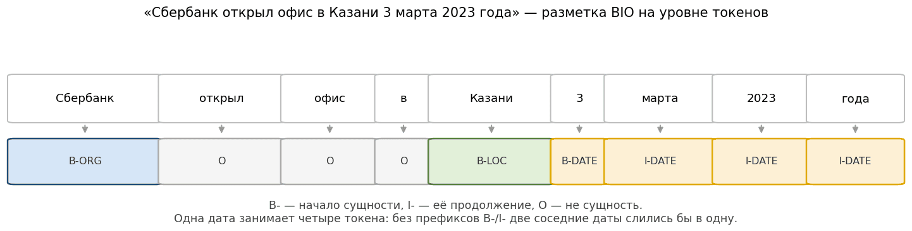
Та же таблица, но выложенная в строку — так виднее, что NER работает не с текстом целиком, а с каждым токеном по отдельности. Верхний ряд — токены, нижний — их метки, цвет соответствует типу сущности: синий ORG, зелёный LOC, жёлтый DATE, серый — не сущность. Четыре жёлтые клетки подряд и есть одна дата: только у первой префикс B-, у остальных I-. Уберите префиксы — и «3 марта 2023 года 5 апреля» превратится в одну сущность вместо двух. Формулировка «определить, о какой компании идёт речь в тексте» звучит как классификация, но ею не является, если компаний заранее не перечислено конечным списком. Классификация выбирает из фиксированного набора меток; NER находит в тексте фрагмент и потому работает и с сущностями, которых модель никогда не видела. Если на собеседовании вы предлагаете классификатор там, где нужен NER, это сразу считается ошибкой в постановке задачи.
Набор задач в NLP шире таблицы (суммаризация, диалоговые системы, QA, исправление ошибок, дедупликация), а колонка с моделями устаревает каждые пару лет. Устойчиво здесь только одно: тип выхода задачи. Модель, которая была SOTA для NER в 2018-м, к 2024-му давно заменена, но постановка «пометить каждый токен» не изменилась.
Какие основные задачи NLP существуют?
Классификация и регрессия по тексту, извлечение информации (NER, RE), генерация текста, поиск и ранжирование, построение векторных представлений, машинный перевод, распознавание и синтез речи. Удобная классификация — по типу выхода: одна метка, число, метка на токен, новая последовательность, ранжированный список, вектор.
Чем задача NER отличается от задачи классификации текста?
NER (Named Entity Recognition) — это задача разметки на уровне токенов: для каждого токена нужно определить его тип (персона, организация, место и т.д.), обычно в схеме BIO. Классификация текста присваивает одну метку всему документу. Ключевое практическое отличие: классификация выбирает из фиксированного списка меток, а NER находит фрагмент в тексте и потому работает с ранее не виденными сущностями.
В чём разница между NLU и NLG и как она отражается в архитектуре?
NLU (понимание) сжимает текст в метку, число или вектор, поэтому модель может смотреть на весь контекст сразу — отсюда двунаправленное внимание у BERT. NLG (порождение) строит текст токен за токеном и не имеет права видеть будущее, отсюда причинная (causal) маска у GPT-подобных моделей.
Почему задача поиска и ранжирования в NLP нетривиальна?
Нужно не просто найти документы с лексическим совпадением, но и оценить семантическую релевантность, учесть контекст запроса и ранжировать результаты по полезности для пользователя. Запрос и релевантный документ могут не иметь ни одного общего слова («как убрать пятно от вина» и «выведение винных загрязнений с ткани»), поэтому чисто лексический BM25 дополняют эмбеддингами.
Какие архитектуры доминируют в современных NLP-задачах?
Трансформерные модели: BERT и его производные для задач понимания (NER, классификация, QA), GPT-подобные — для генерации, Seq2Seq-трансформеры (T5, BART) — для перевода и суммаризации. Единый механизм внимания позволяет параллелить обучение и переносить одну предобученную модель на десятки задач.
Почему Speech2Text и Text2Speech входят в область NLP?
Эти задачи требуют понимания и генерации языка: распознавание речи опирается на языковые модели для выбора правдоподобных транскрипций из акустически похожих вариантов, а синтез речи — на NLP-модели для корректной интонации, ударений и произношения (например, «замок» звучит по-разному в зависимости от смысла).
Почему естественный язык сложнее для машины, чем язык программирования?
Естественный язык неоднозначен на всех уровнях: одно слово имеет несколько значений, одно предложение — несколько синтаксических разборов, а часть смысла вообще не выражена в тексте и восстанавливается из знания о мире. У языка программирования грамматика однозначна: программа либо разбирается единственным способом, либо не компилируется.
-
Предобработка текста
Три слова, которые дальше встречаются на каждой странице:
- Терм (термин) — единица текста, по которой мы считаем статистику. Обычно это слово, но может быть и словосочетание, и часть слова.
- Документ — набор термов, то есть один отдельный текст: письмо, отзыв, статья, абзац.
- Корпус — набор документов, то есть вся коллекция текстов, с которой мы работаем.
Если совсем простыми словами: терм — слово, документ — текст, корпус — папка с текстами.
Предобработать текст — значит привести его к виду, удобному для модели: очистить от мусора и шума, разбить на единицы (термы), нормализовать их, а затем векторизовать — превратить в числа.
Векторизуют либо классическими моделями (TF-IDF, Word2Vec, FastText, GloVe), либо нейросетевыми энкодерами (BERT-подобные модели). От выбора векторизатора напрямую зависит, сколько предобработки вообще нужно, — об этом ниже.
У классических векторизаторов вроде BoW и TF-IDF каждая уникальная форма слова — отдельная колонка в матрице признаков. Слова «дерево», «дерева», «дереву», «деревом» превращаются в четыре независимых признака, между которыми модель не видит никакой связи.
Отсюда две беды сразу: словарь раздувается (в русском языке у одного существительного до 12 форм), а статистика по каждой форме собирается из всё меньшего числа примеров. Лемматизация склеивает эти четыре колонки в одну — размерность падает, а счётчик в оставшейся колонке становится в 4 раза надёжнее.
Корпус из 10 000 отзывов о технике.
- Без предобработки: словарь ≈ 85 000 уникальных токенов. Слово «зарядка» встречается 300 раз, но растащено по формам: «зарядка» — 120, «зарядки» — 90, «зарядку» — 60, «зарядкой» — 30.
- После лемматизации: словарь ≈ 32 000. Лемма «зарядка» — 300 вхождений в одной колонке.
Для логистической регрессии это разница между «четыре слабых зашумлённых признака» и «один сильный». На маленьком датасете это может дать +3–5 процентных пунктов к F1.
Основные шаги
- Токенизация — разбиение текста на единицы (слова, символы или подслова);
- Приведение к нижнему регистру — «Кот» и «кот» становятся одним термом;
- Удаление стоп-слов — выбрасывание частых слов, которые не различают документы;
- Регулярные выражения — удаление или замена мусора: ссылок, email, телефонов, HTML-тегов, эмодзи;
- Лемматизация — приведение слова к словарной форме («бежал» $\to$ «бежать»);
- Стемминг — грубое отсечение окончаний без словаря («бежал» $\to$ «беж»);
- N-граммы — склейка соседних слов в один терм, чтобы частично вернуть порядок слов.
Шаги не переставляются свободно. Удалять стоп-слова до токенизации бессмысленно — их ещё нечем сопоставлять. Лемматизировать после удаления регистра в русском языке опасно: анализатор теряет подсказку, что «Орёл» — город, а не птица. Практичный порядок такой: чистка регулярками $\to$ токенизация $\to$ нормализация регистра $\to$ лемматизация $\to$ удаление стоп-слов $\to$ n-граммы.
Стоп-слова
Стоп-слова — слова, которые встречаются почти в каждом документе корпуса и потому ничего не говорят о том, чем один документ отличается от другого: предлоги, союзы, местоимения, вспомогательные глаголы.
Смысл в том, что признак полезен, только если он различает документы. Слово «и» есть везде — значит, колонка «и» одинакова у всех строк матрицы и модель из неё ничего не извлечёт, зато потратит на неё часть регуляризационного бюджета.
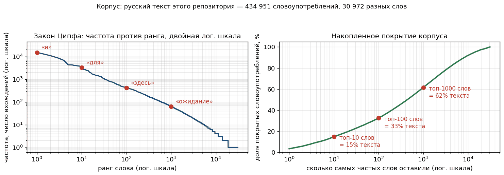
Реальный подсчёт по русскому тексту этого репозитория: 434 951 словоупотребление, 30 972 разных слова. Слева — частота против ранга, обе оси логарифмические, поэтому почти прямая линия означает степенную зависимость (закон Ципфа); отклонения видны в самом начале и в длинном хвосте, где частоты упираются в единицу. Красные точки подписаны реальными словами на рангах 1, 10, 100 и 1000. Справа — накопленная доля: сотня самых частых слов покрывает треть всего текста, тысяча — почти две трети. Отсюда сразу две практики: из этой сотни и берутся стоп-слова, а длинный хвост из десятков тысяч редких термов отсекают через min_df. from nltk.corpus import stopwords print(stopwords.words("english")) # 'i', 'me', 'my', 'myself', 'we', 'our', 'ours', 'ourselves', 'you', # "you're", "you've", "you'll", "you'd", 'your', 'yours', 'yourself', 'yourselves', # 'which', 'who', 'whom', 'this', 'that', "that'll", 'these', 'those', 'am', 'is', # ...stop_words = set(stopwords.words("english")) sentence = "Backgammon is one of the oldest known board games." words = nltk.word_tokenize(sentence) without_stop_words = [word for word in words if not word in stop_words] print(without_stop_words) # ['Backgammon', 'one', 'oldest', 'known', 'board', 'games', '.']Готовый список стоп-слов — это чужое решение о том, что неважно, и оно легко ломает вашу задачу:
- В анализе тональности отрицание «не» — критически важное слово, а в стандартных списках оно есть. «Мне не понравилось» после чистки превращается в «понравилось».
- В задаче определения авторства служебные слова как раз самый сильный сигнал: авторский стиль виден именно в частоте предлогов и союзов.
- Для TF-IDF отдельная чистка часто не нужна: множитель IDF сам почти обнуляет вес слов, встречающихся во всех документах.
Токенизация
Токенизация — разбиение сплошной строки на список термов. Звучит тривиально ровно до первого реального текста: сплит по пробелу ломается на «не-е-ет», «USA», «3.14», «руб.», «e-mail», дефисных фамилиях и языках без пробелов (китайский, японский).
Поэтому используют не
split(), а специализированные токенизаторы, которые знают правила языка.import nltk from nltk.tokenize import word_tokenize text = "Я изучаю обработку естественного языка" tokens = word_tokenize(text, language="russian") print(tokens) # ['Я', 'изучаю', 'обработку', 'естественного', 'языка']Здесь речь о словной токенизации, которая нужна классическим векторизаторам. У современных трансформеров токенизация субсловная: текст режется на куски слов (BPE, WordPiece, Unigram), и «обработку» может стать
обраб+отку. Это отдельная большая тема — см. Блок 6.Лемматизация и стемминг
- Лемматизация — приведение слова к его словарной форме (лемме) с учётом грамматики: «ехали» $\to$ «ехать», «детьми» $\to$ «ребёнок». Требует морфологического анализатора и словаря.
- Стемминг — грубое отсечение окончания и суффикса по эвристическим правилам, без словаря: «ехали» $\to$ «еха», «бегущий» $\to$ «бегущ». Результат часто не является словом вообще.
Простыми словами: лемматизация делает из слова словарную форму, стемминг просто обрубает хвост.
import spacy nlp = spacy.load("ru_core_news_sm") doc = nlp("Дети играли в парке") print([token.lemma_ for token in doc]) # ['ребенок', 'играть', 'в', 'парк']Стемминг в разы быстрее и не требует словаря, поэтому его брали для поисковых движков на больших объёмах. Но он делает две ошибки: склеивает разное («университет» и «универсальный» могут дать один стем) и разделяет одинаковое (неправильные формы вроде «шёл»/«идти» он никогда не сведёт вместе).
Лемматизация точнее, но медленнее и зависит от качества модели для конкретного языка. На практике для русского почти всегда берут лемматизацию: цена ошибки стемминга на богатой морфологии слишком высока.
У английского глагола 4–5 форм, у русского — десятки, плюс падежи существительных и согласование прилагательных. Кроме того, форма часто омонимична: «стали» — это и глагол «стать», и существительное «сталь». Правильную лемму можно выбрать только с учётом контекста, поэтому современные пайплайны используют библиотеки
spaCy,NatashaилиStanza, которые сначала определяют часть речи и лишь затем нормализуют слово.from natasha import ( Doc, NewsEmbedding, NewsMorphTagger, Segmenter, MorphVocab ) segmenter = Segmenter() emb = NewsEmbedding() morph_tagger = NewsMorphTagger(emb) morph_vocab = MorphVocab() doc = Doc("Машины быстро ехали по дороге") doc.segment(segmenter) doc.tag_morph(morph_tagger) for token in doc.tokens: token.lemmatize(morph_vocab) print(token.text, '-', token.lemma) # Машины - машина # быстро - быстро # ехали - ехать # по - по # дороге - дорогаN-граммы
N-грамма — последовательность из $n$ подряд идущих термов, которая рассматривается как один признак. При $n=1$ это обычное слово (униграмма), при $n=2$ — пара соседних слов (биграмма), при $n=3$ — тройка (триграмма).
Зачем: BoW и TF-IDF полностью теряют порядок слов. Биграммы возвращают его хотя бы локально — «машинное обучение» становится одним термом, а не двумя независимыми.
from gensim.models.phrases import Phrases from gensim.models.phrases import Phraser sentences = [ ["я", "люблю", "машинное", "обучение"], ["машинное", "обучение", "полезно"] ] # поиск биграмм phrases = Phrases(sentences, min_count=1, threshold=1) bigram = Phraser(phrases) print(bigram[sentences[0]]) # ['я', 'люблю', 'машинное_обучение']Классификация отзывов. Два отзыва:
- «Это не хорошо, а ужасно» $\to$ униграммы: {это, не, хорошо, а, ужасно}
- «Это хорошо, а не ужасно» $\to$ униграммы: {это, не, хорошо, а, ужасно}
Наборы униграмм совпадают полностью, и BoW-модель обязана дать этим двум отзывам одинаковый прогноз, хотя тональность у них противоположная. Биграммы различают их сразу:
не_хорошопротивне_ужасно.Униграмм в корпусе бывает 30 тысяч, биграмм — уже миллионы, триграмм — десятки миллионов, причём подавляющее большинство встретится один-два раза и станет чистым шумом. Поэтому n-граммы всегда обрезают:
min_df(минимальное число документов, где терм встретился) илиmax_featuresвCountVectorizer/TfidfVectorizer. На практике редко идут дальше $n=2$, иногда $n=3$ для символьных n-грамм.Пайплайн и современные модели
Полный классический пайплайн:
- Очистка — регулярками убрать HTML, ссылки, служебные символы; решить, что делать с цифрами и эмодзи.
- Токенизация — разбить на слова.
- Нормализация — нижний регистр, лемматизация.
- Фильтрация — стоп-слова, слишком редкие и слишком частые термы.
- Формирование признаков — n-граммы, затем TF-IDF или Word2Vec.
Ключевое требование: одна и та же функция предобработки применяется и к обучающей, и к тестовой выборке, и к продакшен-запросам. Расхождение здесь — самая частая причина того, что модель на тесте показывала 0.9, а в проде работает как случайная.
Самая частая ошибка новичка — прогнать текст через полный классический пайплайн и подать результат в BERT. Так делать нельзя:
- BERT обучался на сырых текстах со знаками препинания, регистром и стоп-словами. Лемматизированный текст без пунктуации — это распределение, которого модель не видела.
- Субсловный токенизатор сам справляется с морфологией: он разложит «зарядки» на куски, общие с «зарядка».
- Стоп-слова и пунктуация несут синтаксическую информацию, которую механизм внимания реально использует.
Для трансформеров оставляют только минимальную чистку: убрать HTML-разметку, служебные артефакты парсинга, при необходимости — персональные данные.
- Утечка через предобработку. Если словарь векторизатора (
fit) строится на всём датасете до разбиения на train/test, статистика теста протекает в обучение. Правильно:fitтолько на train,transform— на обоих. - Расхождение обучения и инференса. Пайплайн, написанный ноутбучными ячейками, невозможно точно воспроизвести в сервисе. Оформляйте предобработку одним объектом (
sklearn.Pipeline) и сохраняйте его целиком вместе с моделью.
Чем лемматизация отличается от стемминга?
Лемматизация приводит слово к словарной форме с учётом грамматики и части речи (например, «ехали» $\to$ «ехать»), для этого нужен морфологический анализатор. Стемминг — грубое отсечение суффиксов по эвристическим правилам без словаря; он быстрее, но может склеить разные слова и никогда не сведёт вместе неправильные формы вроде «шёл»/«идти».
Зачем удаляют стоп-слова при предобработке текста?
Стоп-слова (предлоги, союзы, местоимения) встречаются почти в каждом тексте и не различают документы, поэтому как признаки бесполезны, а размерность и шум увеличивают. Но удалять их нужно не всегда: в анализе тональности «не» критично, а в определении авторства служебные слова — главный сигнал стиля.
Нужна ли предобработка текста при работе с BERT-подобными моделями?
Нет необходимости в лемматизации, удалении стоп-слов и пунктуации: BERT использует субсловный токенизатор и обучен на сырых текстах, а знаки препинания и служебные слова несут синтаксическую информацию для механизма внимания. Агрессивная предобработка создаёт распределение, которого модель не видела на предобучении, и ухудшает качество. Оставляют только чистку HTML и служебного мусора.
Что такое $n$-граммы и зачем они нужны?
$n$-граммы — последовательности из $n$ подряд идущих слов (или символов), рассматриваемые как один терм. Они частично возвращают порядок слов в BoW-подобных методах: «не хорошо» и «не ужасно» различимы только на уровне биграмм. Плата — взрывной рост размерности, поэтому редкие n-граммы отсекают через
min_dfилиmax_features.Почему лемматизация для русского языка сложнее, чем для английского?
Русский — морфологически богатый язык с падежами, спряжениями и сложной системой суффиксов: у одного существительного до 12 форм. Плюс формы омонимичны («стали» — глагол или существительное), поэтому правильную лемму нельзя выбрать без учёта контекста и части речи. Нужен полноценный морфологический анализатор (spaCy, Natasha, Stanza), а не словарь соответствий.
Почему предобработка должна быть одинаковой на обучении и на инференсе?
Модель выучила зависимости в том пространстве признаков, которое создала предобработка. Если в проде текст чистится иначе (другой токенизатор, забытая лемматизация), объекты попадают в другое распределение, и качество падает непредсказуемо. Практическое решение — оформлять предобработку одним объектом (
sklearn.Pipeline) и сериализовать его вместе с моделью.Как избежать утечки данных при построении словаря векторизатора?
Векторизатор нужно обучать (
fit) только на обучающей выборке, а к валидации и тесту применять уже обученный (transform). Если словарь и IDF-статистики считаются по всему датасету, информация о тестовых документах попадает в обучение и оценка качества становится завышенной.
-
One-hot представление
Ещё до трансформеров главным прорывом в NLP стали векторные представления слов (word embeddings) — идея, что смысл слова можно закодировать набором чисел. Самый первый и самый простой способ такого кодирования — one-hot представление. Он почти не используется как признаки, но понимать его обязательно: все последующие методы объясняются как «попытка починить его недостатки».
Векторизация текста — преобразование текста в числовые векторы, которые можно подать на вход модели машинного обучения.
Простыми словами: модель умеет умножать матрицы, а не читать слова. Значит, каждому слову (или документу) нужно сопоставить набор чисел фиксированной длины. Вся разница между методами — в том, откуда берутся эти числа и что они означают.
Пусть словарь состоит из $n$ слов, каждому присвоен номер от $1$ до $n$.
One-hot вектор слова с номером $i$ — это вектор длины $n$, у которого на $i$-м месте стоит единица, а на всех остальных местах нули:
$$ \mathbf{v}_i = \begin{bmatrix} 0 \\ \vdots \\ 1 \\ \vdots \\ 0 \end{bmatrix} \in \mathbb{R}^{n}. $$
Название буквально описывает конструкцию: «one hot» — «одна горячая (включённая) позиция».
Простыми словами: это просто длинный список всех слов языка, где галочкой отмечено ровно одно — то, которое мы кодируем. Никакой информации о смысле здесь нет, есть только «какое это слово по счёту».
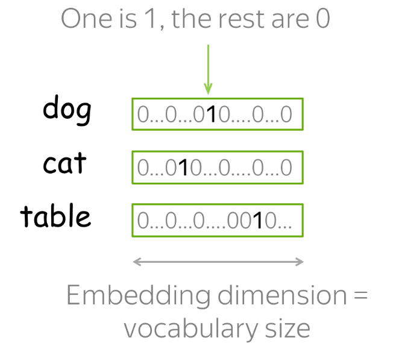
Каждому слову словаря соответствует свой столбец. Вектор слова — единица в его собственной позиции и нули везде ещё; никакие два вектора не имеют общих ненулевых координат. Словарь:
[кот, кошка, собака, автомобиль, дерево], то есть $n = 5$.Слово Вектор кот $[1, 0, 0, 0, 0]$ кошка $[0, 1, 0, 0, 0]$ собака $[0, 0, 1, 0, 0]$ автомобиль $[0, 0, 0, 1, 0]$ Посчитаем косинусное сходство пары «кот» и «кошка»:
$$ \cos(\mathbf{v}_{\text{кот}}, \mathbf{v}_{\text{кошка}}) = \frac{1\cdot 0 + 0\cdot 1 + 0 + 0 + 0}{1 \cdot 1} = 0. $$
Для пары «кот» и «автомобиль» — тоже ровно $0$. Модель, получив такие векторы, физически не может узнать, что кот ближе к кошке, чем к автомобилю.
Скалярное произведение двух one-hot векторов — это сумма произведений их координат. Единица у первого вектора стоит в позиции $i$, у второго — в позиции $j$, и при $i \ne j$ в каждом слагаемом хотя бы один множитель нулевой. Значит, скалярное произведение равно нулю, то есть любые два разных слова ортогональны.
Геометрически это означает, что слова расставлены по взаимно перпендикулярным осям $n$-мерного пространства и находятся друг от друга на одинаковом расстоянии $\sqrt{2}$. В таком пространстве понятие «похожие слова» просто не определено: все пары одинаково далеки.
Часто пишут «косинусное расстояние между любыми двумя one-hot векторами равно 1». Это верно, но легко перепутать две величины:
- косинусное сходство $\cos(\mathbf{u},\mathbf{v})$ для разных слов равно $0$;
- косинусное расстояние $1 - \cos(\mathbf{u},\mathbf{v})$ равно $1$ — то есть максимально возможному значению для неотрицательных векторов.
На собеседовании говорите «сходство ноль» — это однозначно.
- Размерность равна размеру словаря $n$. Для реального корпуса это $10^5$–$10^6$: один вектор занимает мегабайты, матрица документов — терабайты, если хранить плотно.
- Разреженность. В векторе ровно одна ненулевая координата из миллиона — 99.9999% памяти хранит нули.
- Нет семантики. Векторы ортогональны, поэтому модель ничему не может научиться «по аналогии»: увидев в обучении только «кот», она ничего не знает про «кошку».
Разреженность и размер лечатся техническими средствами: разреженные матрицы, хеширование признаков. А вот ортогональность — это принципиальный потолок обобщения.
Представьте спам-фильтр, обученный на письмах со словом «выигрыш». Приходит письмо со словом «выигрыши» — другая словоформа, другой номер в словаре, другой ортогональный вектор. Для модели это полностью незнакомое слово, и весь выученный сигнал на нём не работает. Ровно эту проблему решают плотные эмбеддинги: у «выигрыш» и «выигрыши» векторы почти совпадают, и знание автоматически переносится.
One-hot никуда не исчез — он просто переехал с входа на выход:
- Целевая метка при обучении. Правильный следующий токен кодируется one-hot вектором, и cross-entropy сравнивает с ним распределение вероятностей модели.
- Внутри embedding-слоя. Умножение one-hot вектора на матрицу эмбеддингов $E \in \mathbb{R}^{n \times d}$ выбирает $i$-ю строку этой матрицы. Именно поэтому
nn.Embeddingреализуют как обычный поиск по индексу — умножать на матрицу вектор из одной единицы и миллиона нулей физически незачем. - Категориальные признаки в табличных задачах, где категорий немного.
Пусть $E$ — матрица эмбеддингов размера $5 \times 3$ (5 слов, эмбеддинг размерности 3):
$$ E = \begin{bmatrix} 0.2 & -0.1 & 0.7 \\ 0.3 & -0.2 & 0.6 \\ -0.8 & 0.4 & 0.1 \\ 0.0 & 0.9 & -0.5 \\ 0.5 & 0.5 & 0.0 \end{bmatrix} $$
Тогда $\mathbf{v}_{\text{кошка}}^{\top} E = [0,1,0,0,0] \cdot E = [0.3, -0.2, 0.6]$ — просто вторая строка.
Отсюда важный вывод: эмбеддинг — это и есть строка обучаемой матрицы, а one-hot вектор играет роль индекса. Переход от one-hot к плотным векторам — это переход от «индекса без смысла» к «строке, которую модель настроила под задачу».
Дальше NLP двигался ровно в сторону починки семантического недостатка one-hot: сначала счётные методы (BoW, TF-IDF, co-occurrence + SVD), где похожие слова получают похожие строки из статистики корпуса, потом предсказательные (Word2Vec, GloVe, FastText), где эмбеддинг обучается градиентным спуском, и наконец контекстные (ELMo, BERT), где у одного слова разный вектор в разных предложениях.
Что такое one-hot представление и как строится вектор?
Это вектор размера $|V|$ (размер словаря), где ровно одна позиция равна 1 — соответствующая данному слову, — а все остальные равны 0. Никакой информации, кроме номера слова в словаре, такой вектор не несёт.
Почему one-hot векторы не отражают семантическую близость слов?
Единицы двух разных слов стоят в разных позициях, поэтому их скалярное произведение равно нулю: все one-hot векторы попарно ортогональны, косинусное сходство любой пары равно 0. Это означает, что слова «кот» и «кошка» так же «далеки», как «кот» и «автомобиль», и расстояние между всеми парами слов одинаково.
Какова размерность one-hot вектора и в чём её проблема?
Размерность равна размеру словаря $|V|$, который для реальных корпусов составляет сотни тысяч слов. Это порождает огромные разреженные матрицы (одна ненулевая координата на миллион), неэффективные по памяти и вычислениям, и вдобавок ставит число параметров модели в прямую зависимость от размера словаря.
Почему отсутствие семантики хуже, чем большая размерность?
Размерность и разреженность решаются техническими средствами — разреженным хранением, хешированием признаков. Ортогональность же означает принципиальную невозможность обобщения: сигнал, выученный на слове «выигрыш», никак не переносится на «выигрыши», потому что для модели это полностью независимый признак.
Где one-hot кодирование применяется в современных нейросетях?
Как целевая метка при обучении языковых моделей: истинный следующий токен кодируется one-hot вектором, против которого считается cross-entropy loss. Плюс концептуально one-hot стоит внутри embedding-слоя: умножение one-hot вектора на матрицу эмбеддингов равносильно выбору её строки, поэтому
nn.Embeddingреализован как поиск по индексу.Как плотные эмбеддинги решают проблемы one-hot представлений?
Плотные эмбеддинги имеют малую фиксированную размерность (50–1024), не зависящую от размера словаря, и кодируют семантику: близкие по смыслу слова получают близкие векторы. Это позволяет модели обобщать выученное на синонимы, словоформы и редкие слова, а не рассматривать каждое слово как независимый признак.
-
Bag of Words
Bag of Words (BoW, «мешок слов») — способ представить документ вектором фиксированной длины: строится словарь из всех уникальных термов корпуса, и документу сопоставляется вектор, где $i$-я координата равна числу вхождений $i$-го терма словаря в этот документ.
Формально: если словарь $V = \{w_1, \dots, w_n\}$, то документ $d$ кодируется вектором
$$ \mathbf{x}(d) = \big[\,\mathrm{tf}(w_1, d),\ \mathrm{tf}(w_2, d),\ \dots,\ \mathrm{tf}(w_n, d)\,\big], $$
где $\mathrm{tf}(w, d)$ (term frequency) — сколько раз терм $w$ встретился в документе $d$.
Простыми словами: высыпаем все слова документа в мешок, встряхиваем и считаем, сколько раз каждое слово там лежит. После встряхивания порядок слов теряется навсегда — отсюда и название.
Частая путаница. One-hot — вектор одного слова. BoW — вектор целого документа, и его можно получить, просто сложив one-hot векторы всех слов документа:
$$ \mathbf{x}(d) = \sum_{t \in d} \mathbf{v}_{t}. $$
То есть BoW — это буквально «сумма one-hot векторов», и суммирование как раз и стирает порядок: сумма не зависит от того, в каком порядке складывать слагаемые.
Корпус:
- $d_1$: «кошка сидит на дереве»
- $d_2$: «собака сидит под деревом»
- $d_3$: «птица сидит на дереве»
Словарь (в порядке первого появления):
[кошка, сидит, на, дереве, собака, под, деревом, птица], то есть $n = 8$.Векторы:
Документ кошка сидит на дереве собака под деревом птица $d_1$ 1 1 1 1 0 0 0 0 $d_2$ 0 1 0 0 1 1 1 0 $d_3$ 0 1 1 1 0 0 0 1 То есть $\mathbf{x}(d_1) = [1,1,1,1,0,0,0,0]$ в порядке словаря выше — именно эти числа получит модель.
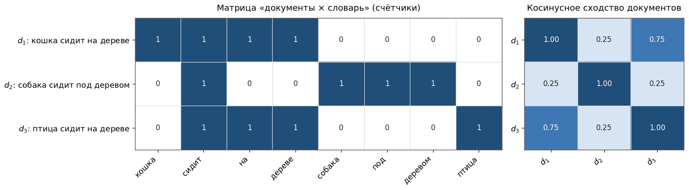
Слева — та же таблица, что выше, в виде тепловой карты: три строки-документа, восемь колонок-слов словаря, синяя клетка = слово встретилось один раз, белая = ноль. Справа — попарные косинусные сходства этих трёх векторов. Смотрите на разрыв между значениями: $d_1$ и $d_3$ дают 0.75, потому что делят три слова из четырёх, а вот $d_1$ и $d_2$ — только 0.25, хотя по смыслу оба про животное и дерево. Виной колонки «дереве» и «деревом»: для BoW это разные признаки, и именно поэтому перед ним делают лемматизацию. Посчитаем косинусное сходство пар:
- $\cos(d_1, d_3) = \dfrac{0+1+1+1}{2 \cdot 2} = 0.75$ — высокое, и правильно: предложения действительно почти одинаковые.
- $\cos(d_1, d_2) = \dfrac{1}{2 \cdot 2} = 0.25$ — низкое, общее слово только «сидит».
Обратите внимание: $d_1$ и $d_2$ по смыслу тоже похожи (животное под/на дереве), но BoW этого не видит, потому что «дереве» и «деревом» для него — разные колонки. Ровно поэтому перед BoW делают лемматизацию.
На практике счётчик — не единственный вариант заполнения ячейки:
- бинарный — 1, если слово есть в документе, 0 иначе. Полезен для коротких текстов, где повтор слова ничего не добавляет (заголовки, твиты);
- счётный (по умолчанию) — количество вхождений;
- логарифмический — $1 + \log \mathrm{tf}$, чтобы слово, встретившееся 100 раз, не было в 100 раз важнее встретившегося один раз;
- TF-IDF — счётчик, домноженный на «редкость слова в корпусе». Это следующий шаг развития BoW.
Кажется, что выбрасывать порядок слов — катастрофа. Но во многих задачах тема и тональность документа определяются набором слов, а не их порядком. Если в письме есть «выигрыш», «приз», «перейдите по ссылке» — оно спам почти независимо от того, как эти слова расставлены. Если в отзыве есть «сломался», «вернул», «ужасно» — он негативный.
Поэтому BoW + логистическая регрессия десятилетиями был сильным бейзлайном, и остаётся им до сих пор: он обучается за секунды, интерпретируем (можно посмотреть на веса и увидеть, какие слова толкают в спам) и не требует GPU.
Два отзыва:
- «Товар хороший, доставка плохая»
- «Товар плохой, доставка хорошая»
После лемматизации наборы слов идентичны: {товар, хороший, доставка, плохой}. BoW-векторы совпадают до последней координаты, значит, любая модель поверх BoW обязана выдать этим двум отзывам одинаковый прогноз.
Это не редкий вырожденный случай: аспектная тональность, отрицания («не рекомендую»), сравнения («лучше, чем») — целые классы задач, где BoW бессилен по построению.
Дешёвый способ вернуть локальный порядок — добавить n-граммы: считать не только отдельные слова, но и пары соседних. Тогда «не рекомендую» станет отдельным термом, отличным от «рекомендую». Это не решает проблему на длинных дистанциях («хороший» относится к товару или к доставке?), но закрывает большинство практических случаев с отрицаниями. Цена — рост размерности в десятки раз.
Наивный BoW на корпусе из 100 тысяч документов даёт словарь в сотни тысяч колонок, где большая часть термов встретилась 1–2 раза (опечатки, имена, артефакты парсинга). Такие признаки — чистый шум и прямой путь к переобучению.
Стандартные ограничители в
CountVectorizer:min_df=5— выбросить термы, встречающиеся менее чем в 5 документах;max_df=0.9— выбросить термы, встречающиеся более чем в 90% документов (те самые стоп-слова, но найденные по данным, а не по чужому списку);max_features=50000— оставить только N самых частых.
Матрица «документы $\times$ словарь» размера $100\,000 \times 200\,000$ во
float64— это 160 гигабайт. Но ненулевых элементов в ней порядка 0.1%: в документе из 200 слов ненулевых координат максимум 200 из 200 000.Поэтому BoW всегда живёт в разреженном формате (
scipy.sparse, CSR), где хранятся только позиции и значения ненулевых элементов.CountVectorizerвозвращает именно такую матрицу, и вызывать у неё.toarray()на полном датасете — классический способ уронить процесс по памяти.Каждое слово в BoW — независимая координата, поэтому семантическая близость слов не кодируется вообще. Документы «купил автомобиль» и «приобрёл машину» дают строго ортогональные векторы, сходство ноль, хотя означают одно и то же.
Это ограничение унаследовано от one-hot и снимается только переходом к плотным представлениям: LSA (через SVD над матрицей BoW), Word2Vec, эмбеддинги предложений.
Что такое Bag of Words и какова его основная идея?
BoW представляет документ как вектор счётчиков термов из фиксированного словаря: $i$-я координата равна числу вхождений $i$-го слова словаря в документ. Порядок слов полностью игнорируется — документ рассматривается как «мешок» без структуры. Эквивалентно это сумма one-hot векторов всех слов документа.
Чем BoW отличается от one-hot представления?
One-hot кодирует одно слово вектором длины $|V|$ с единственной единицей. BoW кодирует весь документ вектором той же длины, где стоят счётчики всех его слов. Формально BoW получается суммированием one-hot векторов документа, и именно суммирование стирает порядок.
Каков главный недостаток BoW по сравнению с TF-IDF?
BoW учитывает только абсолютные частоты слов внутри документа и никак не нормирует их по частоте в коллекции. Поэтому общеупотребительные слова получают высокие веса, хотя не различают документы. TF-IDF домножает счётчик на меру редкости слова в корпусе и тем самым автоматически подавляет такие термы.
Почему BoW не улавливает семантическое сходство слов?
Каждое слово — независимая координата вектора, поэтому векторы разных слов ортогональны. Синонимы («автомобиль» и «машина») и разные словоформы одного слова попадают в разные колонки, и документы, сказавшие одно и то же разными словами, получают нулевое сходство. Частично это лечится лемматизацией, полностью — только переходом к плотным эмбеддингам.
Как частично вернуть в BoW информацию о порядке слов?
Добавить n-граммы: считать не только отдельные слова, но и пары или тройки соседних. Тогда «не рекомендую» станет отдельным термом, отличным от «рекомендую», и отрицания перестанут теряться. Плата — рост размерности на порядки, поэтому редкие n-граммы отсекают через
min_dfилиmax_features.При каких условиях BoW может быть хорошим бейзлайном?
Когда метка документа определяется набором слов, а не их порядком: спам-фильтрация, тематическая классификация, рубрикация обращений. При достаточном объёме данных статистика частот информативна, а модель обучается за секунды на CPU и остаётся интерпретируемой — по весам логистической регрессии видно, какие слова толкают предсказание в каждый класс.
Почему BoW-матрицу хранят в разреженном формате?
Матрица «документы $\times$ словарь» имеет размеры порядка $10^5 \times 10^5$, но в каждой строке ненулевых элементов столько же, сколько уникальных слов в документе, — обычно сотни. Плотное хранение потребовало бы сотен гигабайт памяти при заполненности в доли процента, поэтому используется
scipy.sparse(CSR), где хранятся только координаты и значения ненулевых ячеек.Как BoW связан с более сложными методами типа TF-IDF и LSA?
TF-IDF — это взвешенная версия BoW, учитывающая информативность слова в коллекции. LSA применяет усечённое SVD к матрице BoW или TF-IDF и выделяет несколько сотен латентных «тем», что одновременно снижает размерность и связывает синонимы: слова, встречающиеся в одних и тех же документах, попадают в одну тему.
-
Дистрибутивная семантика
Дистрибутивная семантика — подход к представлению значения слова, опирающийся на дистрибутивную гипотезу:
Слова, которые встречаются в похожих контекстах, имеют похожие значения.
Классическая формулировка Дж. Фёрса (1957): «You shall know a word by the company it keeps» — «слово узнаётся по его окружению».
Простыми словами: чтобы понять смысл слова, не нужно заглядывать в словарь — достаточно посмотреть, рядом с какими словами оно обычно стоит. Если два слова окружены одними и теми же соседями, они, скорее всего, про одно и то же.
Слово дистрибуция здесь употребляется в лингвистическом смысле — это не вероятностное распределение, а «набор контекстов, в которых слово может стоять». Дистрибуция слова «кот» — все окружения вида «___ мяукает», «погладил », « спит на диване». Два слова имеют похожую дистрибуцию, если списки их окружений сильно пересекаются.
Незнакомое слово тезгуино (пример из классического учебника Линя):
- «Бутылка тезгуино стоит на столе.»
- «Все любят тезгуино.»
- «Тезгуино делают из кукурузы.»
- «После тезгуино болит голова.»
Никто не давал определения, но вы уже знаете: это алкогольный напиток. Вы вывели это исключительно из окружений — из тех же контекстов, где стояли бы «пиво» или «вино».
Именно эту процедуру и автоматизирует дистрибутивная семантика: собрать все окружения слова по корпусу и сравнить их с окружениями других слов.
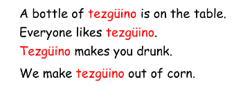
По контексту можно догадаться, что именно означает это сложное испанское слово Гипотеза сама по себе — философское утверждение. Чтобы получить из неё числа, нужны три решения:
- Что считать контекстом? Обычно — окно из $L$ слов слева и справа. Иногда — весь документ, иногда — синтаксически связанные слова.
- Как записать контексты слова? Строкой в матрице «слово $\times$ контекст»: в ячейке стоит, сколько раз слово встретилось с данным контекстом.
- Как измерить «похожесть контекстов»? Косинусным сходством между строками этой матрицы.
Всё дальнейшее развитие NLP — это варианты ответов на эти три вопроса. Co-occurrence counts, PPMI, LSA, Word2Vec, GloVe, даже BERT — все они реализуют дистрибутивную гипотезу, отличаясь только тем, как именно определён контекст и как сжата матрица.
Мини-корпус:
- «кот пьёт молоко»
- «кошка пьёт молоко»
- «автомобиль едет по дороге»
Матрица «слово $\times$ контекст» (контекст — соседнее слово, окно $L=1$):
пьёт молоко едет дороге кот 1 0 0 0 кошка 1 0 0 0 автомобиль 0 0 1 0 Строки «кот» и «кошка» совпали — косинусное сходство $1$. Строка «автомобиль» ортогональна обеим — сходство $0$. Мы получили осмысленную близость слов, ни разу не заглянув в словарь и не размечая данные вручную.
Ключевое свойство подхода — он не требует разметки. Матрицу контекстов можно построить по любому сырому тексту: по Википедии, по веб-краулу, по логам чата. Никто не должен вручную писать определения слов.
Это и сделало дистрибутивную семантику фундаментом современного NLP: разметка — самый дорогой ресурс в машинном обучении, а сырого текста в интернете практически бесконечно много. Именно поэтому предобучение на неразмеченных текстах (self-supervised learning) стало главным способом получать сильные модели.
BERT и GPT — это дистрибутивная гипотеза, доведённая до предела. BERT закрывает слово маской и учится восстанавливать его по окружению; GPT предсказывает следующее слово по предыдущим. И то и другое — буквально «выучи слово по его контексту», только вместо подсчёта частот в матрице используется нейросеть с миллиардами параметров, а вместо окна в пару слов — контекст в тысячи токенов.
Дистрибутивная гипотеза даёт близкие векторы словам с похожим употреблением, а это не то же самое, что похожий смысл. Отсюда систематические ошибки:
- Антонимы оказываются близкими. «Горячий» и «холодный» стоят в одних и тех же контекстах («___ чай», «слишком ___»), поэтому их векторы почти совпадают. Для анализа тональности это катастрофа.
- Многозначность схлопывается. У слова «замок» один вектор на два разных смысла, и он оказывается усреднением между «крепостью» и «дверным механизмом» — то есть не описывает ни одного из них.
- Отрицание не улавливается. «Я купил» и «я не купил» дают почти одинаковые контекстные профили.
- Редкие слова получают шумные векторы. Слово, встретившееся 3 раза, имеет строку из трёх единиц — статистики недостаточно.
Проблема антонимов частично решается сужением окна (при $L=1$–$2$ вектор больше отражает синтаксис, при $L=5$–$10$ — тему) и добавлением размеченных данных при дообучении. Проблема многозначности решена принципиально — контекстными эмбеддингами: у ELMo и BERT вектор слова вычисляется заново для каждого предложения, поэтому «замок» в «средневековый замок» и в «сломался замок» получает два разных вектора.
В чём суть дистрибутивной гипотезы?
Слова, часто встречающиеся в похожих контекстах, имеют схожий смысл («слово узнаётся по его окружению», Фёрс, 1957). Это основное предположение дистрибутивной семантики, из которого выросли co-occurrence-матрицы, PPMI, LSA, Word2Vec, GloVe и в конечном счёте предобучение трансформеров.
Как дистрибутивная семантика представляет значение слова?
Значение кодируется вектором, построенным из статистики контекстов слова в корпусе: строкой матрицы «слово $\times$ контекст», где в ячейке стоит частота совместной встречаемости. Слова с близкими профилями контекстов получают близкие векторы, а близость измеряется косинусным сходством.
Какие три решения нужно принять, чтобы превратить гипотезу в алгоритм?
Во-первых, определить контекст (окно из $L$ слов, документ или синтаксические связи). Во-вторых, выбрать, что писать в ячейку матрицы (сырую частоту, PPMI, лог-частоту). В-третьих, выбрать меру близости и способ сжатия матрицы (SVD, обучение эмбеддингов). Все известные методы дистрибутивной семантики — это разные комбинации этих трёх решений.
Почему дистрибутивная семантика позволяет понять незнакомое слово?
Смысл выводится не из словаря, а из окружений: даже полностью незнакомое слово, встреченное в контекстах «бутылка », « делают из кукурузы», «после ___ болит голова», однозначно опознаётся как напиток. Модель делает ровно то же самое, только на статистике миллионов вхождений.
Почему подход стал фундаментом современного NLP?
Он не требует ручной разметки: матрицу контекстов можно построить по любому сырому тексту. Разметка — самый дорогой ресурс в ML, а неразмеченного текста практически бесконечно много, поэтому self-supervised предобучение на предсказании слов по контексту оказалось единственным масштабируемым способом получать сильные модели.
Каков главный недостаток дистрибутивной гипотезы?
Она отождествляет похожее употребление с похожим смыслом. Из-за этого антонимы («горячий» и «холодный») получают близкие векторы, отрицание не улавливается, а многозначные слова («замок») получают один усреднённый вектор, не соответствующий ни одному из значений. Редкие слова вдобавок получают шумные представления из-за нехватки статистики.
Как контекстные эмбеддинги решают проблему многозначности?
ELMo и BERT вычисляют вектор слова заново для каждого предложения, с учётом конкретного окружения, а не берут одну фиксированную строку из таблицы. Поэтому «замок» в «средневековый замок» и в «сломался замок» получает два разных вектора, каждый из которых отражает актуальный смысл.
Как дистрибутивная семантика связана с предобучением LLM?
Языковые модели вроде BERT и GPT реализуют дистрибутивную гипотезу в масштабе: BERT восстанавливает замаскированное слово по окружению, GPT предсказывает следующее слово по левому контексту. Оба обучаются на неразмеченном тексте, и оба кодируют дистрибутивную информацию — только не в ячейках матрицы, а в весах сети.
-
Count-based методы
Count-based методы (методы, основанные на подсчёте) — семейство подходов к получению эмбеддингов слов, где вектор слова строится напрямую из статистики совместной встречаемости слов в корпусе, без обучения градиентным спуском.
Простыми словами: сначала честно считаем, кто с кем стоял рядом, а потом сжимаем эту гигантскую таблицу счётчиков до компактных векторов. Никакой нейросети — только подсчёт и линейная алгебра.
Дистрибутивную гипотезу можно реализовать двумя способами, и это главное водораздельное деление в классических эмбеддингах:
- Count-based (счётные) — построить матрицу «слово $\times$ контекст» по всему корпусу и разложить её. Сюда относятся co-occurrence counts, PPMI, LSA, GloVe.
- Prediction-based (предсказательные) — не строить матрицу вообще, а обучать векторы так, чтобы по слову предсказывался контекст. Сюда относятся Word2Vec и FastText.
Разница в том, где живёт информация: у счётных методов — в явной таблице частот, у предсказательных — в весах модели, которые подгоняются итеративно.
Любой count-based метод устроен одинаково:
- Построить матрицу «слово $\times$ контекст» $X$, где $X_{wc}$ — сколько раз слово $w$ встретилось с контекстом $c$ (и, возможно, преобразовать счётчики — например, в PPMI).
- Сократить её размерность — обычно усечённым SVD, получив для каждого слова плотный вектор из нескольких сотен чисел вместо строки в сотни тысяч.
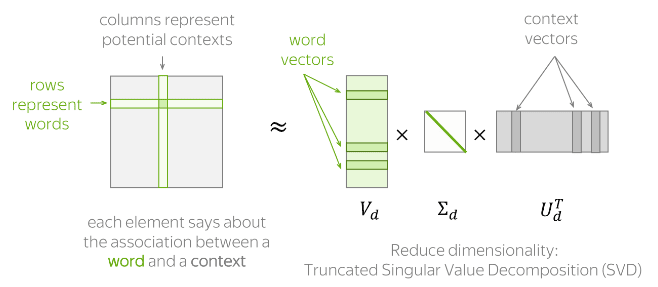
Составление матрицы слово-контекст. Каждому слову соответствует строка, каждому контексту — столбец. В каждой ячейке матрицы стоит количество раз, когда слово встречается в контексте. Размерность этой матрицы будем сокращать с помощью SVD. Корпус из трёх предложений, контекст — соседнее слово в окне $L=1$:
- «я люблю кофе»
- «я люблю чай»
- «я варю кофе»
Матрица $X$ (строки — слова, столбцы — контексты):
я люблю варю кофе чай я 0 2 1 0 0 люблю 2 0 0 1 1 варю 1 0 0 1 0 кофе 0 1 1 0 0 чай 0 1 0 0 0 Строки «кофе» и «чай» пересекаются по контексту «люблю» — уже отсюда видно их родство. Строки «люблю» и «варю» пересекаются по «я» и «кофе» — оба глагола, оба сочетаются с напитками. Это и есть дистрибутивная гипотеза в действии, только записанная числами.
Причин ровно три, и все три практические.
1. Размер. Матрица имеет форму $n \times m$, где $n$ — размер словаря, а $m$ — число контекстов (часто те же слова, тогда $n \times n$). При словаре в $100\,000$ слов это $10^{10}$ ячеек — около 40 гигабайт даже во
float32. Обучать модель на признаках такой размерности невозможно.2. Разреженность. Каждое слово реально встречается лишь с сотнями контекстов из ста тысяч возможных, поэтому 99.9% матрицы — нули. Это не только расточительно, но и вредно: два синонима, которым «не повезло» встретиться с одними и теми же соседями, получат нулевое сходство просто из-за нехватки данных.
3. Шум. Сырые счётчики отражают не только смысл, но и случайности корпуса: одну статью, где слово встретилось 50 раз, опечатки, шаблонные фразы. SVD оставляет главные направления вариации и выбрасывает мелкие компоненты — то есть работает как фильтр шума.
Словарь $100\,000$ слов, размерность после SVD $d = 300$.
- До: $100\,000 \times 100\,000 = 10^{10}$ чисел.
- После: $100\,000 \times 300 = 3 \cdot 10^{7}$ чисел — примерно 120 МБ во
float32.
Сжатие более чем в 300 раз, при этом качество на задачах семантической близости обычно растёт, а не падает: выброшенные компоненты были в основном шумом.
Самое важное и самое неочевидное свойство. В сырой матрице «автомобиль» и «машина» — две строки, которые могут вообще не пересекаться по столбцам, если авторы текстов последовательно используют одно слово или другое.
Но SVD ищет общие направления вариации во всей матрице сразу. Если строки «автомобиль» и «машина» обе коррелируют с целым кластером контекстов («руль», «дорога», «бензин», «купил», «ремонт»), то в низкоразмерном пространстве они спроецируются в одну и ту же область — даже без единого общего столбца в исходной матрице.
Это называется latent semantic структурой: SVD находит скрытые «темы», а слова описываются через них, а не через отдельные контексты.
Если положить в ячейки просто частоты, доминировать будут служебные слова: «в», «и», «на» встречаются со всем подряд и дадут огромные значения по всей строке. Матрица будет описывать в основном частотность, а не смысл.
Поэтому перед SVD счётчики всегда преобразуют — чаще всего в PPMI (Positive Pointwise Mutual Information), которая измеряет не «сколько раз слова встретились», а «насколько чаще, чем если бы они были независимы». Иногда берут логарифм счётчика или TF-IDF-взвешивание.
- Стоимость обновления. Появился новый корпус — матрицу и SVD надо пересчитывать целиком; Word2Vec можно дообучить инкрементально.
- Память при построении. Даже разреженная матрица co-occurrence для крупного корпуса не влезает в память одной машины, а SVD над ней — тяжёлая операция.
- Качество на аналогиях. Исторически предсказательные методы показывали лучшие результаты на задачах вида «король − мужчина + женщина = королева».
Впрочем, разрыв оказался не принципиальным: GloVe — счётный по природе метод, показывающий результаты уровня Word2Vec, а Леви и Голдберг показали, что Skip-Gram с negative sampling неявно факторизует ту же PMI-матрицу. То есть два семейства решают одну задачу разными вычислительными средствами.
Что такое count-based методы и какова их ключевая идея?
Это подход к векторизации слов, где вектор строится напрямую из статистики совместной встречаемости в корпусе, без градиентного обучения: считаем, с какими контекстами встречается слово, и сжимаем полученную таблицу. Сюда относятся co-occurrence counts, PPMI, LSA, GloVe.
Из каких двух шагов состоит count-based подход?
Построение матрицы «слово $\times$ контекст», где ячейка содержит счётчик (или его преобразование — PPMI, лог-частоту), и снижение её размерности, обычно усечённым SVD, до нескольких сотен компонент.
Зачем нужно снижать размерность матрицы слово-контекст?
По трём причинам: размер (при словаре $10^5$ матрица содержит $10^{10}$ ячеек, десятки гигабайт), разреженность (99.9% нулей, из-за чего похожие слова могут не иметь ни одного общего контекста) и шум (сырые счётчики отражают случайности корпуса). SVD оставляет главные направления вариации и работает как фильтр.
Как снижение размерности помогает связать синонимы?
SVD ищет общие направления вариации по всей матрице. Если «автомобиль» и «машина» обе коррелируют с одним кластером контекстов («руль», «дорога», «бензин»), они спроецируются в близкие точки низкоразмерного пространства, даже не имея общих столбцов в исходной матрице. Это и есть латентная семантическая структура.
Почему нельзя использовать сырые счётчики и чем их заменяют?
Сырые частоты доминируются служебными словами, которые встречаются со всем подряд, поэтому матрица описывает частотность, а не смысл. Счётчики преобразуют в PPMI — меру того, насколько совместная встречаемость превышает ожидаемую при независимости, — либо берут логарифм или TF-IDF-взвешивание.
Как count-based методы реализуют дистрибутивную гипотезу?
Слова с похожими паттернами совстречаемости получают похожие строки в матрице и, следовательно, близкие векторы после снижения размерности. Никакой разметки не требуется: вся информация о смысле извлекается из сырого текста подсчётом соседств.
Чем count-based методы уступают предсказательным (Word2Vec)?
Они требуют явно построить и разложить огромную матрицу, что дорого по памяти и не позволяет дообучаться инкрементально: новый корпус — полный пересчёт. Word2Vec обучается потоково, мини-батчами, и исторически показывал лучшее качество на аналогиях. При этом разрыв не принципиален: GloVe — счётный метод уровня Word2Vec, а Skip-Gram с negative sampling, как показали Леви и Голдберг, неявно факторизует ту же PMI-матрицу.
-
Подсчет совместной встречаемости
Co-occurrence counts (подсчёт совместной встречаемости) — самый прямолинейный способ реализовать дистрибутивную гипотезу: контекстом слова объявляется окно из $L$ слов слева и справа, и для каждой пары «слово $w$ — контекстное слово $c$» подсчитывается, сколько раз они оказались в одном окне.
Результат — матрица $X$ размера $|V| \times |V|$, где
$$ X_{wc} = \#\{\text{вхождений, когда } c \text{ стоит в окне вокруг } w\}. $$
Простыми словами: едем окном по всему корпусу и ставим палочку каждый раз, когда два слова оказались рядом. Строка этой матрицы и есть вектор слова.
Окно $L$ означает, что контекстом слова считаются $L$ слов слева и $L$ слов справа от него. Для предложения «я очень люблю чёрный кофе» и центрального слова «люблю» при $L=2$ контекст — это {я, очень, чёрный, кофе}.
Окно скользит по тексту: каждое слово по очереди становится центральным, и для него засчитываются все его соседи. Слова у края предложения просто получают неполное окно.
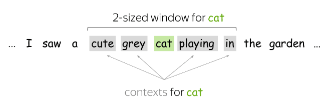
Здесь мы задали контекстное окно размера $L=2$. Корпус из двух предложений, окно $L=1$ (только непосредственные соседи):
- «я люблю кофе»
- «я пью кофе»
Проходим окном:
- «я люблю кофе»: пары (я, люблю), (люблю, я), (люблю, кофе), (кофе, люблю).
- «я пью кофе»: пары (я, пью), (пью, я), (пью, кофе), (кофе, пью).
Матрица:
я люблю пью кофе я 0 1 1 0 люблю 1 0 0 1 пью 1 0 0 1 кофе 0 1 1 0 Строки «люблю» и «пью» совпали полностью — косинусное сходство $1$. И это правильно: оба глагола употребляются одинаково. Матрица «догадалась» об этом, ни разу не увидев определения слов.
В примере выше $X_{wc} = X_{cw}$, потому что мы считали пары в обе стороны. Так делают, когда контекст определяется симметричным окном.
Но бывают и несимметричные варианты: контекст только слева (для языковых моделей), контекст с пометкой позиции («кофе на расстоянии 2 справа» — отдельный столбец), контекст по синтаксической связи. Тогда матрица перестаёт быть квадратной и симметричной: строки — слова, столбцы — контексты, и это разные множества.
Одна из главных практических ручек метода:
- Маленькое окно ($L = 1$–$2$) ловит синтаксис и близкую сочетаемость. Ближайшими соседями «кофе» окажутся «чай», «сок» — слова того же грамматического класса и той же сочетаемости.
- Большое окно ($L = 5$–$10$) ловит тему. Ближайшими соседями «кофе» станут «кофейня», «бариста», «завтрак» — слова из той же предметной области, но другой части речи.
Ни один вариант не «правильнее»: под задачу поиска синонимов берут узкое окно, под тематическую кластеризацию — широкое.
Наивный подсчёт даёт одинаковый вес непосредственному соседу и слову на границе окна, хотя связь у них разной силы. Поэтому часто используют затухающий вес: слово на расстоянии $d$ добавляет в ячейку не $1$, а $1/d$.
Это делает вектор чувствительнее к ближайшему окружению, не выбрасывая дальний контекст полностью. Именно такой взвешенный подсчёт используется, например, при построении матрицы для GloVe.
Главный дефект метода: значение $X_{wc}$ растёт вместе с частотой самих слов, а не только с силой их связи.
Пара («кофе», «и») наберёт огромный счётчик просто потому, что «и» встречается везде. Пара («кофе», «эспрессо») наберёт мало, хотя связь между этими словами намного сильнее. В итоге все строки матрицы становятся похожи друг на друга: у каждой самые большие значения стоят в столбцах служебных слов.
Отсюда обязательный следующий шаг — преобразование счётчиков в меру ассоциации: PPMI или, реже, TF-IDF-взвешивание.
При словаре в $100\,000$ слов матрица содержит $10^{10}$ ячеек. Даже если хранить только ненулевые (а их доля порядка $0.1\%$), это десятки миллионов записей — и каждая строка всё равно остаётся вектором длины $100\,000$, непригодным как признак для модели.
Поэтому co-occurrence-матрица почти никогда не используется напрямую: она — промежуточный продукт, который дальше сжимают SVD (LSA) или факторизуют обучением (GloVe).
Co-occurrence counts — фундамент, на котором стоит вся линейка счётных методов:
- PPMI заменяет сырые счётчики на меру ассоциации;
- LSA применяет SVD и получает плотные векторы слов и документов;
- GloVe обучает эмбеддинги так, чтобы скалярное произведение векторов приближало $\log X_{wc}$;
- даже Word2Vec, формально не строящий матрицу, как показали Леви и Голдберг, неявно факторизует её PMI-версию.
Что такое Co-occurrence counts и как задаётся контекст?
Метод подсчёта совместных вхождений слов в контекстном окне размера $L$: окно скользит по корпусу, и элемент матрицы $X_{wc}$ равен числу раз, когда слово $c$ оказалось в окне вокруг слова $w$. Строка матрицы служит вектором слова, а близость слов измеряется косинусным сходством строк.
Почему матрица co-occurrence сырых частот требует нормировки?
Значение ячейки растёт вместе с частотой самих слов, а не только с силой их связи: пара («кофе», «и») наберёт огромный счётчик из-за вездесущего «и», а («кофе», «эспрессо») — маленький, хотя связь сильнее. В итоге все строки становятся похожи и описывают частотность, а не смысл. Нормировка через PPMI или TF-IDF устраняет этот эффект.
Как размер контекстного окна $L$ влияет на тип улавливаемых связей?
Малое окно ($L = 1$–$2$) захватывает синтаксис и сочетаемость: ближайшими к «кофе» окажутся «чай», «сок». Большое окно ($L = 5$–$10$) захватывает тему: ближайшими станут «бариста», «кофейня», «завтрак». Выбор определяется задачей — поиск синонимов требует узкого окна, тематическая кластеризация — широкого.
Что даёт взвешивание контекста по расстоянию?
При наивном подсчёте непосредственный сосед и слово на границе окна вносят одинаковый вклад, хотя связь у них разной силы. Затухающий вес $1/d$ (где $d$ — расстояние) делает вектор чувствительнее к ближайшему окружению, не отбрасывая дальний контекст. Такой взвешенный подсчёт используется, в частности, при построении матрицы для GloVe.
Почему матрицу co-occurrence нельзя использовать напрямую как признаки?
Её размер — $|V| \times |V|$, то есть порядка $10^{10}$ ячеек при реальном словаре, и она заполнена нулями более чем на 99%. Строка остаётся вектором длины $|V|$, непригодным для обучения модели, а разреженность приводит к нулевому сходству даже у синонимов, которым не встретились одинаковые соседи. Поэтому матрица — промежуточный продукт, который сжимают SVD или факторизуют обучением.
Почему Co-occurrence counts используется как основа для LSA и GloVe?
Оба метода начинают с матрицы совместной встречаемости: LSA применяет к ней усечённое SVD, получая плотные векторы слов и документов, а GloVe обучает эмбеддинги так, чтобы скалярное произведение векторов приближало логарифм соответствующего счётчика.
В чём ключевое отличие co-occurrence counts от предсказательных методов вроде Word2Vec?
Co-occurrence counts — глобальная статистика по всему корпусу, вычисляемая заранее одним проходом. Word2Vec обучается итеративно, мини-батчами, оптимизируя предсказание контекстных слов для каждой позиции в тексте, и не хранит матрицу целиком. При этом результаты близки: Skip-Gram с negative sampling неявно факторизует ту же PMI-матрицу.
-
Positive Pointwise Mutual Information (PPMI)
PMI (Pointwise Mutual Information, поточечная взаимная информация) измеряет, во сколько раз чаще два события происходят вместе, чем происходили бы, будь они независимы:
$$ \operatorname{PMI}(w,c) = \log \frac{\textcolor{blue}{P(w,c)}}{\textcolor{red}{P(w)}\,\textcolor{green}{P(c)}}, $$
где $\textcolor{blue}{P(w,c)}$ — вероятность встретить слово $w$ и контекст $c$ вместе (в одном окне), $\textcolor{red}{P(w)}$ — вероятность встретить слово $w$ вообще, $\textcolor{green}{P(c)}$ — вероятность встретить контекст $c$ вообще.
Простыми словами: в знаменателе стоит то, чего мы ожидали бы «просто по частоте», а в числителе — то, что наблюдаем на самом деле. Их отношение и есть сила связи, а логарифм переводит это отношение в удобную шкалу с нулём в точке «связи нет».
PPMI (Positive PMI) — это PMI, обрезанная снизу нулём:
$$ \operatorname{PPMI}(w,c) = \max\big(0,\ \operatorname{PMI}(w,c)\big). $$
Матрицу «слово $\times$ контекст» из co-occurrence counts заполняют не сырыми счётчиками, а значениями PPMI. Контекст при этом определяется точно так же — окном размера $L$; меняется только содержимое ячейки.
На практике вероятности оцениваются частотами по матрице совстречаемости $X$:
$$ P(w,c) = \frac{X_{wc}}{N}, \qquad P(w) = \frac{X_{w\ast}}{N}, \qquad P(c) = \frac{X_{\ast c}}{N}, $$
где $X_{w\ast} = \sum_c X_{wc}$ — сумма по строке (сколько всего раз встретилось слово $w$), $X_{\ast c} = \sum_w X_{wc}$ — сумма по столбцу, $N = \sum_{w,c} X_{wc}$ — общая сумма всех ячеек.
Подставив, получаем удобную рабочую формулу:
$$ \operatorname{PMI}(w,c) = \log \frac{X_{wc} \cdot N}{X_{w\ast} \cdot X_{\ast c}}. $$
То есть считать нужно только четыре числа на ячейку, все они получаются одним проходом по матрице.
Корпус, где всего $N = 1\,000\,000$ пар «слово–контекст». Смотрим на слово кофе ($X_{\text{кофе},\ast} = 5\,000$) и два контекста.
Контекст «и» — очень частое служебное слово, $X_{\ast,\text{и}} = 100\,000$. Встретилось с «кофе» $600$ раз.
$$ \operatorname{PMI} = \log \frac{600 \cdot 1\,000\,000}{5\,000 \cdot 100\,000} = \log 1.2 \approx 0.18. $$
Контекст «эспрессо» — редкое слово, $X_{\ast,\text{эспрессо}} = 300$. Встретилось с «кофе» $50$ раз.
$$ \operatorname{PMI} = \log \frac{50 \cdot 1\,000\,000}{5\,000 \cdot 300} = \log 33.3 \approx 3.5. $$
Вот в чём весь смысл: по сырым счётчикам «и» выигрывало у «эспрессо» в 12 раз ($600$ против $50$), а по PMI — проигрывает почти в 20 раз. PMI видит, что 600 совместных вхождений с «и» — это ровно то, чего и следовало ожидать от такого частого слова, а 50 вхождений с «эспрессо» — в 33 раза больше ожидаемого.
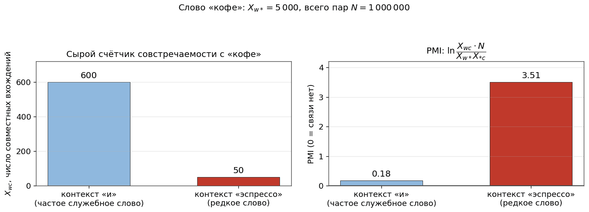
Те же два контекста слова «кофе» на двух линейных шкалах. Слева сырые счётчики: голубой столбик «и» в двенадцать раз выше красного «эспрессо» (600 против 50). Справа PMI из тех же чисел — и столбики меняются местами: 0.18 у «и» против 3.51 у «эспрессо». Обратите внимание, что 0.18 почти неотличимо от нуля, а ноль на этой шкале означает «встречаются ровно настолько часто, насколько предсказывает случай». Именно поэтому строки PPMI-матрицы описывают специфику слова, а не общую частотность языка. Отношение $\frac{P(w,c)}{P(w)P(c)}$ уже несёт всю нужную информацию, но неудобно как признак:
- при независимости оно равно $1$, а не $0$ — «нет связи» хочется видеть нулём;
- оно несимметрично по шкале: «в 2 раза чаще ожидаемого» даёт $2$, «в 2 раза реже» даёт $0.5$, и эти отклонения выглядят разными по величине, хотя по сути симметричны.
Логарифм чинит и то и другое:
$$ \log \frac{P(w)P(c)}{P(w)P(c)} = \log 1 = 0, $$
а «в 2 раза чаще» и «в 2 раза реже» превращаются в $+\log 2$ и $-\log 2$ — симметричную пару. Кроме того, логарифм сжимает огромный динамический диапазон частот, что делает значения пригодными для линейных методов вроде SVD.
- $\operatorname{PMI} = 0$ — слова встречаются ровно так часто, как предсказывает случай. Связи нет.
- $\operatorname{PMI} > 0$ — встречаются чаще ожидаемого. Есть притяжение: коллокация, устойчивое выражение, тематическая связь.
- $\operatorname{PMI} < 0$ — встречаются реже ожидаемого. Формально это «отталкивание»: слова, которые почти никогда не стоят рядом.
Казалось бы, отрицательный PMI — тоже информация: он говорит, что слова несовместимы. Но на практике его выбрасывают, и вот почему.
Чтобы надёжно утверждать, что два слова встречаются реже ожидаемого, нужно очень много данных. Ожидаемое число совместных вхождений для пары редких слов может быть $0.001$; наблюдаемое — $0$. Формально $\operatorname{PMI} = \log 0 = -\infty$, а фактически мы просто ни разу не увидели эту пару — из миллиардов возможных пар большинство не встретится никогда, даже если слова прекрасно совместимы.
То есть отрицательная часть PMI — это в основном артефакт нехватки данных, а не сигнал. Обнуление избавляет от шума, а заодно возвращает матрице разреженность: большинство ячеек снова становятся нулями, и её можно хранить в sparse-формате.
Обратная сторона той же проблемы. Возьмём два очень редких слова, каждое встретилось 3 раза, и оба раза — рядом друг с другом. Тогда $P(w,c)$ почти равна $P(w)$, знаменатель крошечный, и PMI взлетает до максимально возможного значения.
По PMI выходит, что это сильнейшая ассоциация в корпусе. По сути — просто совпадение на трёх наблюдениях: возможно, это опечатка, попавшая в один и тот же шаблонный текст.
Стандартные лекарства:
- отсечение по частоте: не считать PMI для пар с $X_{wc} < 5$–$10$;
- сглаживание контекстов: заменить $P(c)$ на $P_\alpha(c) \propto X_{\ast c}^{\,\alpha}$ с $\alpha = 0.75$ — это поднимает знаменатель у редких контекстов и сбивает их завышенный PMI (тот же приём, что в negative sampling у Word2Vec);
- сдвиг: использовать $\operatorname{SPPMI} = \max(0, \operatorname{PMI} - \log k)$, где $k$ играет роль порога значимости.
- Поиск коллокаций — устойчивых словосочетаний. Высокий PMI у пары («час», «пик») или («красная», «икра») означает, что это не случайное соседство, а фразеологизм. Так автоматически собирают словари биграмм.
- Тематическое моделирование — метрика когерентности темы $C_{\text{PMI}}$ измеряет, насколько слова внутри найденной темы ассоциированы друг с другом.
- Отбор признаков в классификации: PMI между словом и меткой класса показывает, насколько слово индикативно для класса.
Работа Levy & Goldberg (2014) показала: Skip-Gram с negative sampling (SGNS) при достаточной размерности эмбеддингов неявно факторизует матрицу сдвинутой PMI —
$$ \mathbf{v}_w^{\top} \mathbf{u}_c \approx \operatorname{PMI}(w,c) - \log k, $$
где $k$ — число негативных примеров на одну положительную пару.
Практический вывод: Word2Vec не открыл новую сущность, а нашёл эффективный способ считать то же самое. Он получает низкоранговое приближение PMI-матрицы, ни разу не построив её целиком — потому и масштабируется на корпуса, для которых явная матрица не помещается в память.
Что измеряет PMI и в чём его интерпретация?
PMI измеряет, во сколько раз чаще два слова встречаются вместе по сравнению с ожидаемым при независимости: $\operatorname{PMI}(w,c) = \log \frac{P(w,c)}{P(w)P(c)}$. Значение $0$ означает независимость, положительное — притяжение (коллокация, тематическая связь), отрицательное — что слова встречаются реже случайного.
Как PMI считается из матрицы совстречаемости?
Через суммы по строкам и столбцам: $\operatorname{PMI}(w,c) = \log \frac{X_{wc} \cdot N}{X_{w\ast} X_{\ast c}}$, где $X_{wc}$ — счётчик пары, $X_{w\ast}$ и $X_{\ast c}$ — суммы по строке и столбцу, $N$ — сумма всех ячеек. Все величины получаются одним проходом по матрице.
Зачем нужен логарифм в формуле PMI?
Он переносит точку «связи нет» в ноль ($\log 1 = 0$), делает симметричными отклонения в обе стороны («вдвое чаще» и «вдвое реже» дают $\pm\log 2$) и сжимает огромный динамический диапазон частот, благодаря чему значения годятся для линейных методов вроде SVD.
Зачем в PPMI берут максимум с нулём?
Отрицательный PMI означает «встречаются реже ожидаемого», но надёжно оценить это нельзя: большинство пар слов не встречается ни разу просто из-за нехватки данных, и отрицательная часть оказывается в основном шумом. Обнуление убирает этот шум и возвращает матрице разреженность, позволяя хранить её в sparse-формате.
Почему PMI плохо работает для редких пар слов?
При малых частотах оценки вероятностей ненадёжны: пара слов, встретившихся по 3 раза и оба раза вместе, получает почти максимальный PMI, хотя это может быть совпадением или артефактом шаблонного текста. Лекарства — отсечение пар с малым счётчиком, сглаживание распределения контекстов ($P_\alpha(c) \propto X_{\ast c}^{0.75}$) и сдвиг $\operatorname{SPPMI} = \max(0, \operatorname{PMI} - \log k)$.
Чем PPMI-матрица лучше матрицы сырых счётчиков?
Сырые счётчики доминируются частотностью: служебные слова дают большие значения со всем подряд, из-за чего строки разных слов становятся похожи. PPMI нормирует счётчик на ожидаемую частоту и потому выделяет именно специфичные контексты слова: у «кофе» на первое место выходит «эспрессо», а не «и».
Как PMI связан с Word2Vec (SGNS)?
Levy & Goldberg (2014) показали, что Skip-Gram с negative sampling неявно факторизует матрицу сдвинутой PMI: $\mathbf{v}_w^{\top}\mathbf{u}_c \approx \operatorname{PMI}(w,c) - \log k$, где $k$ — число негативных примеров. То есть Word2Vec вычисляет низкоранговое приближение PMI-матрицы, ни разу не построив её явно, и потому масштабируется на корпуса, для которых матрица не влезает в память.
Где PMI применяется помимо построения эмбеддингов?
В поиске коллокаций (высокий PMI у пары указывает на устойчивое словосочетание вроде «час пик»), в оценке когерентности тем в тематическом моделировании ($C_{\text{PMI}}$) и в отборе признаков для классификации — PMI между словом и меткой класса показывает индикативность слова.
-
Latent Semantic Analysis (LSA)
LSA (Latent Semantic Analysis, латентно-семантический анализ) — метод, который берёт матрицу «терм $\times$ документ», применяет к ней усечённое сингулярное разложение (SVD) и получает низкоразмерное пространство «тем», в котором одновременно живут и слова, и документы.
Слово латентный означает «скрытый, не наблюдаемый напрямую»: темы никто не задавал вручную, они извлекаются из статистики совместной встречаемости.
Простыми словами: LSA сжимает таблицу «какое слово в каком документе встречается» до нескольких сотен обобщённых тем и описывает каждое слово и каждый документ через эти темы.
В co-occurrence counts и PPMI контексты были нужны только для того, чтобы построить векторы слов, а потом выбрасывались.
В LSA контекст — это документ, и он интересует нас сам по себе. Разложение даёт два набора векторов сразу:
- вектор для каждого слова — как это слово распределено по темам;
- вектор для каждого документа — из каких тем он состоит.
И оба живут в одном и том же пространстве, поэтому слово и документ можно сравнивать напрямую — это делает LSA пригодным для поиска, а не только для оценки похожести слов.
Исходные данные LSA — матрица $A$ размера $|V| \times |D|$: строки соответствуют термам, столбцы — документам.
$$ A_{ij} = \text{вес терма } i \text{ в документе } j. $$
Веса могут считаться по-разному: сырые счётчики (BoW), TF-IDF (самый частый вариант на практике), лог-частоты, PPMI. Именно из-за этой свободы термин LSA употребляют широко: LSA — это «SVD над взвешенной матрицей терм-документ», а не одна фиксированная формула.
Сингулярное разложение представляет матрицу как произведение трёх:
$$ A \approx U_k \Sigma_k V_k^{\top}, $$
где $k$ — выбранное число тем (обычно $100$–$500$), и
- $U_k \in \mathbb{R}^{|V| \times k}$ — строки этой матрицы и есть векторы слов: как $i$-й терм выражается через $k$ тем;
- $\Sigma_k$ — диагональная матрица из $k$ наибольших сингулярных чисел, они показывают «мощность» каждой темы;
- $V_k \in \mathbb{R}^{|D| \times k}$ — строки этой матрицы — векторы документов.
Ключевое свойство: среди всех матриц ранга $k$ произведение $U_k\Sigma_k V_k^\top$ наилучшим образом приближает $A$ по норме Фробениуса (теорема Эккарта — Янга). То есть SVD не просто «как-то сжимает», а сохраняет максимум информации при заданном бюджете размерности.
Пять документов и словарь из шести термов. В матрице стоят TF-IDF-веса (упрощённо — 1, если терм есть в документе):
$d_1$ $d_2$ $d_3$ $d_4$ $d_5$ автомобиль 1 1 0 0 0 машина 0 1 1 0 0 руль 1 0 1 0 0 кот 0 0 0 1 1 кошка 0 0 0 1 0 мяукает 0 0 0 0 1 Обратите внимание на автомобильные термы: у каждой пары ровно один общий документ («автомобиль» и «машина» делят только $d_2$, «машина» и «руль» — только $d_3$), поэтому по сырой матрице косинус каждой пары равен всего $0.5$.
После SVD с $k = 2$ первая компонента соберёт весь «автомобильный» кластер, вторая — «кошачий». Все три автомобильных терма получат почти одинаковые векторы вида $(\approx 0.6,\ \approx 0)$, а кошачьи — $(\approx 0,\ \approx 0.6)$. Сходство «машина» и «руль» вырастет с $0.5$ до $1$, хотя общего у них был всего один документ из пяти.
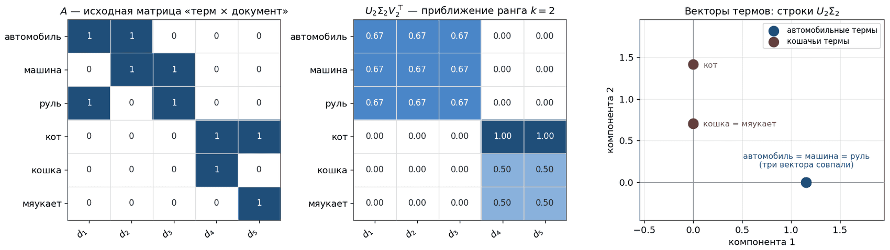
Реальный расчёт для матрицы из примера выше. Слева — исходная $A$ ($6$ термов $\times$ $5$ документов), в середине — её приближение ранга $k=2$: нули на местах, где терма в документе не было, заменились на $0.67$ у всего автомобильного блока и на $0.5$–$1.0$ у кошачьего. Справа — строки $U_2\Sigma_2$ как точки плоскости: три автомобильных терма схлопнулись в одну точку на горизонтальной оси, кошачьи легли на вертикальную. Косинус пары «машина»–«руль» после усечения равен ровно $1$ вместо исходных $0.5$. Знак компоненты SVD произволен, поэтому оси можно отражать. Это ключевая интуиция LSA, и она стоит того, чтобы разобрать её отдельно.
У «машина» и «руль» общий всего один документ из пяти — $d_3$. Но «машина» встречалась ещё и с «автомобиль» (в $d_2$), а «автомобиль» — с «руль» (в $d_1$). SVD ищет не попарные пересечения, а направления максимальной вариации во всей матрице сразу — и обнаруживает, что колонки $d_1, d_2, d_3$ ведут себя как один блок.
Получается транзитивность: A связано с B, B связано с C — значит, A и C попадают в одну тему. Именно так LSA «догадывается» о синонимии, никогда не видя словаря синонимов.
В информационном поиске классически мешают два явления, и LSA адресует оба:
- Синонимия — одно и то же названо разными словами. Запрос «автомобиль», документ про «машину» — лексического пересечения нет, BoW и TF-IDF дадут нулевую релевантность. LSA спроецирует оба в одну тему.
- Полисемия — одно слово в разных смыслах. Здесь LSA помогает лишь частично: у слова один вектор на все значения, но контекст остальных слов документа сдвигает вектор документа в правильную тему.
Запрос $q$ (тоже мешок слов) проецируется в то же тематическое пространство:
$$ \hat{q} = q^{\top} U_k \Sigma_k^{-1}, $$
после чего релевантность документа $d_j$ считается как косинусное сходство $\cos(\hat{q}, V_k[j])$.
Эта операция называется folding-in: новый документ или запрос «вкладывается» в уже построенное пространство без пересчёта SVD. Дёшево, но с оговоркой — новые термы, которых не было в словаре при разложении, просто игнорируются.
Единственного правила нет, ориентируются на три вещи:
- Спектр сингулярных чисел. Если после $k$-го значения они резко падают, это естественная точка обрезки («локоть», как в PCA).
- Доля объяснённой дисперсии. Берут $k$, при котором $\sum_{i \le k}\sigma_i^2 / \sum_i \sigma_i^2$ достигает 70–90%.
- Качество на целевой задаче. Самый честный критерий: подбирать $k$ по метрике поиска или классификации на валидации.
Практический диапазон для реальных корпусов — $k = 100$–$500$. При $k$ слишком малом темы получаются слишком грубыми, при слишком большом обратно втягивается шум.
Соблазнительно посмотреть на $i$-ю компоненту и назвать её «темой спорта». На практике так почти не получается:
- компоненты могут иметь отрицательные веса — что означает «тема с отрицательным вкладом слова»? Содержательной интерпретации у этого нет;
- компоненты ортогональны по построению, а настоящие темы в текстах пересекаются;
- одна компонента часто смешивает несколько сюжетов.
Если нужна именно интерпретируемая тематика, берут методы с неотрицательностью и вероятностной постановкой: NMF (неотрицательное матричное разложение) или LDA (латентное размещение Дирихле), где темы — распределения вероятностей и всегда неотрицательны.
- Линейность. LSA умеет только линейные комбинации; никакие нелинейные семантические отношения ему недоступны.
- Игнорирование порядка слов. На вход подаётся мешок слов, поэтому отрицания и синтаксис теряются полностью.
- Один вектор на слово. Многозначность не разрешается: «замок» получает усреднённый вектор.
- Стоимость обновления. Добавился большой пласт новых документов и термов — SVD нужно пересчитывать; folding-in работает только пока словарь не изменился.
- Полное SVD дорого. Для больших матриц применяют усечённые итеративные алгоритмы (Lanczos, randomized SVD, реализованные в
TruncatedSVD), а не классическое разложение.
LSA (в патентной формулировке — LSI, Latent Semantic Indexing) появился в конце 1980-х и был первым работающим способом семантического поиска. Сегодня его вытеснили плотные ретриверы на базе трансформеров, которые понимают контекст и порядок слов.
Но LSA не исчез:
TruncatedSVDповерх TF-IDF остаётся отличным быстрым бейзлайном для кластеризации документов, снижения размерности перед классификатором и разведочного анализа корпуса — он работает на CPU за секунды и не требует ни GPU, ни предобученной модели.Что такое LSA и какова его основная идея?
LSA применяет усечённое SVD к матрице «терм $\times$ документ» (обычно взвешенной TF-IDF), получая низкоразмерное пространство латентных тем. В этом пространстве одновременно представлены и слова (строки $U_k$), и документы (строки $V_k$), поэтому их можно сравнивать друг с другом.
Зачем в LSA нужно снижение размерности через SVD?
Исходная матрица огромна и разрежена, а её ячейки шумны. Усечённое SVD даёт наилучшее приближение матрицы фиксированным рангом $k$ (теорема Эккарта — Янга): оно сохраняет главные направления вариации и отбрасывает мелкие компоненты, которые в основном являются шумом.
Почему LSA находит связь между словами, которые ни разу не встретились в одном документе?
SVD ищет не попарные пересечения, а общие направления вариации во всей матрице. Если «машина» встречалась с «автомобиль», а «автомобиль» — с «руль», то все три колонки ведут себя как один блок и попадают в одну компоненту. Возникает транзитивность, благодаря которой синонимы сближаются без словаря синонимов.
Что даёт LSA по сравнению с простым TF-IDF при поиске похожих документов?
TF-IDF считает релевантность по лексическому пересечению: запрос «автомобиль» не найдёт документ про «машину». LSA проецирует и запрос, и документ в тематическое пространство, где синонимы близки, и потому решает проблему синонимии. Кроме того, векторы плотные и низкоразмерные, что ускоряет поиск ближайших соседей.
Как в LSA обрабатывается новый документ или запрос?
Процедурой folding-in: вектор мешка слов проецируется в готовое пространство как $\hat q = q^\top U_k \Sigma_k^{-1}$, после чего сравнивается косинусом с векторами документов. Пересчитывать SVD не нужно, но термы, отсутствовавшие в словаре на момент разложения, при этом игнорируются.
Как выбирают число компонент $k$?
По «локтю» в спектре сингулярных чисел, по доле объяснённой дисперсии (обычно 70–90%) или напрямую по качеству на целевой задаче на валидации. Практический диапазон — 100–500 компонент: меньше — темы слишком грубые, больше — обратно втягивается шум.
Почему компоненты LSA плохо интерпретируются как темы?
Компоненты SVD ортогональны и могут содержать отрицательные веса, а «тема с отрицательным вкладом слова» не имеет содержательного смысла. Настоящие темы в текстах пересекаются и неотрицательны, поэтому для интерпретируемого тематического моделирования берут NMF или LDA, где темы — неотрицательные распределения.
В чём ограничение LSA по сравнению с нейросетевыми методами?
LSA линеен, работает с мешком слов и потому не учитывает порядок слов, отрицания и синтаксис; у каждого слова один вектор, так что многозначность не разрешается. Обновление модели требует пересчёта SVD. Word2Vec даёт лучшие эмбеддинги слов, а BERT-подобные модели вычисляют вектор слова заново под каждый контекст.
-
TF-IDF
TF-IDF (Term Frequency — Inverse Document Frequency) — способ взвесить слова в документе так, чтобы важными оказались те, которые часто встречаются в этом документе, но редко — в остальных.
Вес слова $w$ в документе $d$ внутри коллекции $D$:
$$ \text{TF-IDF}(w, d, D) = \underbrace{\text{TF}(w, d)}_{\text{часто ли в этом документе}} \cdot \underbrace{\text{IDF}(w, D)}_{\text{редко ли в коллекции}}. $$
Простыми словами: слово хорошо описывает документ, если оно в нём часто повторяется и при этом не является общеупотребительным. Слово «и» встречается часто, но везде — значит, бесполезно. Слово «дифференциал» встречается редко, но если оно в документе повторилось 10 раз — документ точно про автомобили или про математику.
BoW считает только $\text{TF}$ и потому систематически завышает вес самых частых слов. В типичном тексте топ по частоте — это предлоги, союзы и местоимения, которые есть в каждом документе и потому ничего не различают.
Обычное лечение — список стоп-слов, но у него два минуса: он не универсален (в юридических текстах «настоящий» и «стороны» — фактические стоп-слова, но в общем списке их нет) и он бинарный (слово либо целиком выбрасывается, либо остаётся с полным весом).
IDF решает обе проблемы автоматически и плавно: вес каждого слова определяется данными, а не чужим списком, и убывает непрерывно по мере роста его распространённости.
TF — частота терма в документе, нормированная на длину документа:
$$ \text{TF}(w, d) = \frac{f(w, d)}{\sum_{w' \in d} f(w', d)}, $$
где $f(w, d)$ — сколько раз слово $w$ встретилось в документе $d$, а знаменатель — общее число слов в $d$. Нормировка нужна, чтобы длинный документ не выигрывал автоматически: 10 вхождений в статье на 10 000 слов — это меньше, чем 3 вхождения в твите.
IDF — обратная документная частота:
$$ \text{IDF}(w, D) = \log \frac{|D|}{1 + |\{ d \in D \colon w \in d \}|}, $$
где $|D|$ — общее число документов, а $|\{d : w \in d\}|$ (документная частота, DF) — в скольких документах слово встретилось хотя бы раз. Единица в знаменателе защищает от деления на ноль для слова, отсутствующего в коллекции.
Самая частая ошибка при первом знакомстве. В знаменателе IDF стоит число документов, содержащих слово, а не общее число его вхождений.
Разница принципиальна: слово, встретившееся 500 раз, но все 500 — внутри одного документа, имеет $\text{DF} = 1$ и получит огромный IDF. Так и задумано: это узкоспециальный терм, который отлично характеризует именно этот документ.
Коллекция $|D| = 4$:
- $d_1$: «кот сидит на дереве» (4 слова)
- $d_2$: «собака сидит на траве» (4 слова)
- $d_3$: «кот и собака подружились» (4 слова)
- $d_4$: «эспрессо на завтрак и эспрессо на обед» (7 слов)
Посчитаем вес нескольких слов в $d_4$ (натуральный логарифм):
Слово $f(w,d_4)$ TF DF IDF TF-IDF эспрессо 2 $2/7 = 0.286$ 1 $\log\frac{4}{2} = 0.69$ 0.197 на 2 $2/7 = 0.286$ 3 $\log\frac{4}{4} = 0$ 0.000 завтрак 1 $1/7 = 0.143$ 1 $\log\frac{4}{2} = 0.69$ 0.099 Ключевое наблюдение: у «эспрессо» и «на» одинаковый TF (оба встретились дважды), но вес у «на» ровно нулевой — оно есть в трёх документах из четырёх, IDF обнулился. TF-IDF автоматически вычеркнул стоп-слово, никто не задавал списка.
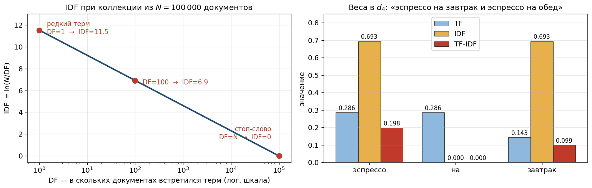
Слева — как IDF убывает по документной частоте при коллекции в $100\,000$ документов; ось DF логарифмическая, поэтому зависимость выглядит прямой. Красные точки: терм из одного документа получает 11.5, терм из ста — 6.9 (разница менее чем вдвое, хотя по редкости — в сто раз), а слово, встречающееся во всех документах, ровно 0. Справа — разбор примера с $d_4$: голубой столбик TF, жёлтый IDF, красный их произведение. У «эспрессо» и «на» TF одинаковый (0.286), но у «на» жёлтый и красный столбики нулевые — их просто не видно на оси. Без логарифма IDF была бы просто $|D|/\text{DF}$ — величина, растущая линейно по редкости. Тогда слово из одного документа коллекции в 100 000 текстов получило бы вес $100\,000$, а слово из ста документов — вес $1\,000$. Разница в сто раз, хотя оба слова достаточно редки, чтобы быть информативными.
Логарифм сжимает эту шкалу: те же значения превращаются в $11.5$ и $6.9$ — разница менее чем вдвое. То есть логарифм превращает «во сколько раз реже» в «на сколько порядков реже», что гораздо ближе к тому, как редкость влияет на информативность.
Есть и информационно-теоретическое обоснование: $-\log P(w \in d)$ — это количество информации (в шенноновском смысле) в событии «слово $w$ встретилось в документе». IDF буквально измеряет, сколько бит информации несёт факт присутствия слова.
Единой канонической TF-IDF не существует, вариантов много, и в разных библиотеках они разные:
- TF: сырая частота $f$; нормированная $f / |d|$; логарифмическая $1 + \log f$; «двойная нормировка» $0.5 + 0.5 \cdot f / f_{\max}$.
- IDF: $\log \frac{|D|}{\text{DF}}$; сглаженная $\log \frac{1+|D|}{1+\text{DF}} + 1$ (так делает
sklearnприsmooth_idf=True); вероятностная $\log \frac{|D| - \text{DF}}{\text{DF}}$ (её родственник используется в BM25).
Практический вывод: не удивляйтесь, если ваш ручной расчёт не совпал с
TfidfVectorizerдо третьего знака. Важно понимать смысл множителей, а не заучивать одну запись.TfidfVectorizerпо умолчанию дополнительно делит вектор документа на его евклидову норму:$$ \mathbf{x}(d) \leftarrow \frac{\mathbf{x}(d)}{\|\mathbf{x}(d)\|_2}. $$
После этого все векторы документов лежат на единичной сфере, и скалярное произведение двух векторов равно их косинусному сходству. Это удобно и для поиска (косинус считается одним умножением матриц), и для линейных моделей, которым не приходится подстраивать масштаб под длину документа.
Классическая утечка данных: если
fitвызвать на объединении train и test, статистика документных частот тестовых документов протечёт в обучение, и оценка качества окажется завышенной.Правильно:
vectorizer.fit(X_train), затемtransformдля train и test по отдельности. Слова, которых не было в train, при трансформации теста просто игнорируются — это нормально и честно моделирует продакшен, где новые слова тоже будут появляться.- Синонимы. «Автомобиль» и «машина» — независимые координаты, сходство документов, использующих разные слова, будет нулевым.
- Многозначность. «Замок» получает один вес независимо от смысла.
- Порядок слов и отрицания. «Не рекомендую» и «рекомендую» отличаются только наличием стоп-слова, вес которого обнулён самим же IDF.
- Размерность. Вектор длины в десятки тысяч, разреженный; для нейросетевых пайплайнов неудобен.
Первые две проблемы частично решает LSA (SVD над TF-IDF-матрицей), полностью — плотные эмбеддинги.
Несмотря на возраст, TF-IDF остаётся рабочим инструментом:
- как бейзлайн: TF-IDF + логистическая регрессия обучается за секунды на CPU и часто отстаёт от дообученного BERT всего на несколько процентных пунктов, а иногда и выигрывает на узких доменах с чёткой терминологией;
- как компонента гибридного поиска: современные RAG-системы почти всегда комбинируют плотный ретривер с лексическим (TF-IDF/BM25), потому что лексический не промахивается по точным терминам, артикулам и именам;
- как способ извлечь ключевые слова документа и объяснить, чем он отличается от остальных.
Что такое TF-IDF и какова его основная идея?
TF-IDF оценивает важность слова для конкретного документа в контексте коллекции: вес высок, если слово часто встречается в документе (высокий TF) и редко — в остальных документах коллекции (высокий IDF). Это автоматическая замена ручному списку стоп-слов, работающая плавно и по данным.
Что такое TF и что такое IDF?
TF (Term Frequency) — частота слова в документе, обычно нормированная на длину документа, чтобы длинные тексты не выигрывали автоматически. IDF (Inverse Document Frequency) — логарифм отношения общего числа документов к числу документов, содержащих данное слово. В знаменателе IDF стоит именно число документов, а не общее число вхождений.
Зачем в IDF логарифм?
Без него редкость влияла бы на вес линейно, и слово из одного документа получило бы вес в сто раз больший, чем слово из ста, хотя оба редки и информативны. Логарифм сжимает шкалу до «на сколько порядков реже». Кроме того, $-\log P(w \in d)$ — это количество информации по Шеннону, то есть IDF измеряет, сколько бит несёт факт присутствия слова.
Почему общеупотребимые слова получают низкий TF-IDF?
Слова типа «и», «в», «это» встречаются почти во всех документах, поэтому $\text{DF} \approx |D|$ и $\text{IDF} \approx \log 1 = 0$. Их TF-IDF близок к нулю независимо от того, насколько часто они повторяются внутри документа, — множитель обнуляет весь вклад.
Зачем векторы TF-IDF нормируют по $L_2$?
После деления на евклидову норму все векторы документов лежат на единичной сфере, и скалярное произведение двух векторов равно косинусному сходству. Это ускоряет поиск похожих документов и избавляет линейные модели от необходимости подстраиваться под разную длину текстов.
Как избежать утечки при построении TF-IDF?
Обучать векторизатор (
fit) только на обучающей выборке, а к валидации и тесту применятьtransform. Если IDF считается по всему датасету, документные частоты тестовых текстов попадают в обучение и метрика оказывается завышенной. Слова, отсутствовавшие в train, при трансформации теста игнорируются — это корректно моделирует продакшен.Для каких задач TF-IDF остаётся сильным бейзлайном?
Для информационного поиска и ранжирования, классификации текстов с чёткой терминологией (юридические, медицинские, техподдержка), извлечения ключевых слов и любых задач, где важно точное лексическое совпадение — артикулы, коды ошибок, имена собственные. Плюс как лексическая половина гибридного поиска в RAG-системах.
В чём ограничение TF-IDF по сравнению с нейросетевыми эмбеддингами?
TF-IDF игнорирует порядок слов и отрицания, не связывает синонимы (каждое слово — независимая координата) и не разрешает многозначность. Векторы разрежены и высокоразмерны. Нейросетевые эмбеддинги компактны, кодируют смысл, а контекстные модели вроде BERT дают слову разный вектор в разных предложениях.
-
BM25
BM25 (Best Matching 25, также Okapi BM25) — функция ранжирования, оценивающая релевантность документа $D$ поисковому запросу $Q$. Как и TF-IDF, она работает с текстом как с «мешком слов», но добавляет два принципиально важных механизма: насыщение частоты терма и нормировку на длину документа.
Пусть запрос $Q$ состоит из слов $q_1, \dots, q_n$. Тогда
$$ \text{score}(D,Q)=\sum_{i=1}^{n} \text{IDF}(q_{i}) \cdot \frac{\textcolor{red}{f(q_{i},D)}\cdot (k_{1}+1)}{\textcolor{red}{f(q_{i},D)}+k_{1} \cdot \left(1-b+b\cdot{\frac{|D|}{\text{avgdl}}}\right)}, $$
где $\textcolor{red}{f(q_i,D)}$ — частота слова $q_i$ в документе $D$ (то есть TF), $|D|$ — длина документа в словах, $\text{avgdl}$ — средняя длина документа в коллекции, а $k_1$ и $b$ — свободные параметры (по умолчанию $k_1 \approx 1.2$–$2.0$, $b = 0.75$).
Простыми словами: сумма по словам запроса; каждое слово вносит вклад тем больший, чем оно реже в коллекции и чем чаще встречается в документе — но с быстрым насыщением и поправкой на то, что в длинном документе повторов ожидаемо больше.
$$ \text{IDF}(q_{i})=\log{\frac{N-n(q_{i})+0.5}{n(q_{i})+0.5}}, $$
где $N$ — число документов в коллекции, $n(q_i)$ — число документов, содержащих слово $q_i$.
Это не та же формула, что в TF-IDF. Она выведена из вероятностной модели релевантности (отсюда «probabilistic IDF») и добавками $0.5$ в числителе и знаменателе сглаживает оценку для очень редких и очень частых слов.
Механизм 1: насыщение частоты
В TF-IDF вклад слова растёт линейно с его частотой: документ, где «кофе» встретилось 100 раз, получает вес в 100 раз больший, чем документ с одним вхождением.
Это плохо отражает реальность. Разница между «слово встретилось 0 раз» и «1 раз» огромна: документ либо про это, либо нет. Разница между «20 раз» и «100 раз» почти нулевая: оба документа очевидно про кофе, просто один длиннее или многословнее. Линейный рост вдобавок открывает дорогу примитивному спаму — достаточно повторить ключевое слово тысячу раз.
BM25 заменяет линейный рост на насыщающуюся функцию.
Если временно убрать нормировку длины (положить $b = 0$), TF-часть формулы превращается в
$$ \text{sat}(f) = \frac{f \cdot (k_1 + 1)}{f + k_1}. $$
Свойства этой функции:
- при $f = 0$ она равна $0$;
- растёт монотонно, но всё медленнее;
- при $f \to \infty$ стремится к пределу $k_1 + 1$ — вклад одного слова ограничен сверху, сколько его ни повторяй.
Параметр $k_1$ управляет скоростью насыщения: при малом $k_1$ (например, $0.5$) кривая выходит на плато почти сразу, и важен лишь сам факт присутствия слова; при большом $k_1$ (например, $3$) поведение приближается к линейному TF-IDF.
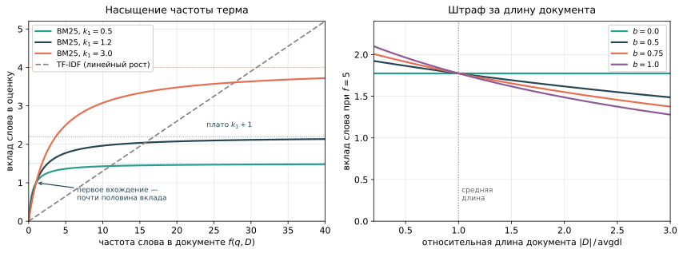
Слева: вклад слова в оценку как функция его частоты в документе. У TF-IDF (пунктир) он растёт линейно и неограниченно, у BM25 — выходит на плато $k_1+1$. Видно главное: переход от 0 к 1 вхождению даёт почти весь прирост, а с 20-го вхождения добавка практически нулевая. Справа: параметр $b$ управляет штрафом за длину — при $b=0$ длина игнорируется вовсе, а при $b=1$ документ вдвое длиннее среднего теряет около 16% вклада того же слова. Штраф плавный: он не отсекает длинные документы, а лишь уравнивает их шансы с короткими. Возьмём $k_1 = 1.2$, $b = 0$ и посмотрим, что даёт каждое следующее вхождение слова:
$f$ (вхождений) $\text{sat}(f)$ Прирост к предыдущему 0 0.00 — 1 1.00 +1.00 2 1.38 +0.38 5 1.77 +0.09 (на вхождение) 20 2.08 +0.02 (на вхождение) 1000 2.20 ≈0 Предел равен $k_1 + 1 = 2.2$. Первое вхождение даёт 45% всего возможного вклада, первые пять — 80%. Тысячекратный повтор даёт всего вдвое больше, чем одно вхождение. Именно поэтому BM25 устойчив к keyword stuffing.
Механизм 2: нормировка длины
Длинный документ содержит больше слов, а значит, с большей вероятностью содержит слова запроса — просто по случайности, а не потому, что он релевантнее. Если это не учесть, ранжирование будет систематически предпочитать книги коротким точным ответам.
BM25 делит частоту на множитель, зависящий от относительной длины документа:
$$ 1 - b + b \cdot \frac{|D|}{\text{avgdl}}. $$
Разберём по частям: $\frac{|D|}{\text{avgdl}}$ — во сколько раз документ длиннее среднего. Параметр $b \in [0,1]$ определяет, насколько сильно мы это учитываем:
- $b = 0$: множитель равен $1$, длина полностью игнорируется;
- $b = 1$: множитель равен относительной длине, то есть частота нормируется полностью;
- $b = 0.75$ (стандарт): промежуточный вариант — длину учитываем, но не до конца.
Полная нормировка ($b=1$) исходит из предположения, что длинный документ длинен «из-за многословия» и его частоты надо разделить пропорционально. Но бывает и другая причина: документ длинный, потому что тема действительно раскрыта подробно — и тогда он и правда релевантнее.
$b = 0.75$ — эмпирический компромисс между этими двумя объяснениями, подтверждённый десятилетиями экспериментов на коллекциях TREC. На практике $b$ иногда подстраивают под коллекцию: для однородных по длине текстов берут меньше, для смеси твитов и статей — больше.
Параметры и подводные камни
Параметр Что регулирует Крайние значения Типичное значение $k_1$ скорость насыщения TF $k_1 \to 0$: важен только факт наличия слова (бинарный поиск); $k_1 \to \infty$: линейный TF, как в TF-IDF $1.2$–$2.0$ $b$ сила штрафа за длину $b=0$: длина игнорируется; $b=1$: полная нормировка $0.75$ Если слово встречается более чем в половине документов, то $N - n(q_i) < n(q_i)$, дробь под логарифмом меньше единицы, и IDF отрицателен.
Последствие неприятное: из двух почти одинаковых документов тот, где такое слово присутствует, получит меньшую оценку, чем тот, где его нет. То есть наличие слова из запроса начинает вредить документу — это явно противоречит здравому смыслу.
Стандартные исправления:
- отбрасывать отрицательные слагаемые (эквивалентно занесению высокочастотных слов в стоп-лист);
- ставить нижнюю границу: $\text{IDF} \leftarrow \max(\varepsilon, \text{IDF})$ с малым $\varepsilon$;
- использовать сглаженную форму $\log\left(1 + \frac{N - n + 0.5}{n + 0.5}\right)$, которая при любых $n$ остаётся положительной — именно так сделано в Lucene/Elasticsearch.
Запрос: «купить кофемашину delonghi».
- Слово «купить» встречается в 80% документов интернет-магазина — IDF почти нулевой (или отрицательный без поправки), вклад минимальный.
- «кофемашину» — в 2% документов, IDF заметный.
- «delonghi» — в 0.1% документов, IDF максимальный.
BM25 выведет наверх страницы, где есть редкое слово «delonghi», даже если «купить» и «кофемашину» там встречаются реже. TF-IDF без нормировки длины скорее поднял бы длинную обзорную статью, где все три слова повторяются много раз.
Отсюда и главная практическая сила BM25 в многословных запросах: преимущество получает документ с самым узкоспециализированным словом запроса.
BM25 — лексический метод: он сопоставляет слова, а не смыслы. Запрос «как вывести пятно от красного вина» не найдёт документ «удаление винных загрязнений с ткани» — общих слов почти нет.
Плотные ретриверы (Sentence Transformers, DPR) кодируют запрос и документ в векторы и находят такой документ по смыслу. Зато они промахиваются там, где BM25 безупречен: точные артикулы, коды ошибок, редкие имена собственные, номера версий — всё, что модель не видела на обучении и не умеет обобщать.
Поэтому в промышленных системах и в RAG почти всегда используют гибридный поиск: результаты BM25 и плотного ретривера объединяют (например, через Reciprocal Rank Fusion) и переранжируют кросс-энкодером.
Что такое BM25 и для чего он применяется?
BM25 — вероятностная функция ранжирования документов по релевантности запросу: сумма по словам запроса произведений IDF на насыщающуюся функцию от частоты слова в документе с поправкой на длину. Это стандартный лексический ретривер в поисковых системах, Elasticsearch и первой ступени RAG-пайплайнов.
Что такое насыщение TF и зачем оно нужно?
Вклад слова в BM25 растёт как $\frac{f(k_1+1)}{f + k_1}$ и ограничен сверху величиной $k_1+1$. Первое вхождение даёт почти половину максимального вклада, а после 15–20 вхождений добавка практически нулевая. Это отражает реальность (разница между 0 и 1 вхождением огромна, между 20 и 100 — ничтожна) и делает метод устойчивым к накрутке ключевых слов.
Зачем BM25 нормирует оценку на длину документа?
Длинный документ с большей вероятностью содержит слова запроса просто по случайности, поэтому без поправки ранжирование систематически предпочитало бы объёмные тексты. Множитель $1 - b + b\frac{|D|}{\text{avgdl}}$ штрафует документы длиннее среднего; параметр $b$ задаёт силу штрафа.
Какую роль играют параметры $k_1$ и $b$?
$k_1$ регулирует скорость насыщения TF: при $k_1 \to 0$ важен лишь факт присутствия слова, при больших $k_1$ поведение приближается к линейному TF-IDF; типичные значения $1.2$–$2.0$. Параметр $b$ контролирует нормировку по длине: $b=0$ — длина не учитывается, $b=1$ — полная нормировка, стандарт $b = 0.75$ как эмпирический компромисс.
Чем формула IDF в BM25 отличается от классического TF-IDF?
BM25 использует вероятностную форму $\log\frac{N - n(q_i) + 0.5}{n(q_i) + 0.5}$, выведенную из модели релевантности. Добавки $0.5$ сглаживают оценку для очень редких и очень частых слов. Побочный эффект — для слов, встречающихся более чем в половине документов, IDF становится отрицательным.
Чем опасен отрицательный IDF и как с этим борются?
При отрицательном IDF наличие слова из запроса снижает оценку документа, из-за чего документ без этого слова может обойти документ с ним. Исправляют отбрасыванием отрицательных слагаемых, нижней границей $\max(\varepsilon, \text{IDF})$ или сглаженной формой $\log\left(1 + \frac{N-n+0.5}{n+0.5}\right)$, которая всегда положительна (реализация Lucene).
Почему BM25 предпочтительнее простого TF-IDF в поисковых системах?
Он корректнее ранжирует документы разной длины, устойчив к повторам ключевых слов благодаря насыщению и в многословных запросах отдаёт приоритет документам с самым редким, узкоспециализированным словом запроса. Плюс у него есть настраиваемые параметры, которые можно подогнать под конкретную коллекцию.
В чём ограничение BM25 по сравнению с нейросетевыми ретриверами?
BM25 работает на уровне лексического совпадения и не понимает семантики: синонимы и перефразировки для него разные слова. Плотные ретриверы находят документ по смыслу, но промахиваются на точных артикулах, кодах и редких именах. Поэтому в продакшене используют гибридный поиск: объединение результатов BM25 и плотного ретривера с последующим переранжированием.
-
Word2Vec
Word2Vec — метод получения плотных векторных представлений слов, в котором эмбеддинги не вычисляются из матрицы счётчиков, а обучаются градиентным спуском как параметры простой нейросети.
Задача, которую решает эта сеть, никого не интересует сама по себе: «предскажи слова, стоящие рядом с данным словом». Она нужна только как предлог — побочным продуктом её решения оказываются осмысленные векторы слов.
Простыми словами: мы заставляем модель угадывать соседей слова, и чтобы угадывать хорошо, ей приходится выучить, что это слово значит.
Логика такая. Чтобы предсказать, что рядом со словом стоят «мяукает», «лапы», «мурлычет», вектор слова обязан кодировать «это домашнее животное семейства кошачьих». Другого способа хорошо решить задачу у модели нет.
Значит, у слов с похожими наборами соседей векторы вынужденно окажутся похожими: чтобы предсказывать одно и то же, надо выглядеть одинаково. Это и есть дистрибутивная гипотеза, но реализованная не подсчётом, а оптимизацией.
Count-based (LSA, PPMI) Word2Vec Где хранится статистика в явной матрице $\lvert V\rvert \times \lvert V\rvert$ нигде, обрабатывается потоком Как получают векторы разложением матрицы (SVD) градиентным спуском Обновление на новых данных пересчёт всего дообучение мини-батчами Требования к памяти матрица целиком только эмбеддинги Ключевой практический выигрыш — потоковость: Word2Vec может обучаться на корпусе в сотни гигабайт, ни разу не собрав матрицу совстречаемости в память.
- Берём большой корпус сырого текста — никакой разметки не нужно.
- Идём по нему контекстным окном, сдвигаясь на одно слово за шаг. На каждом шаге есть центральное слово $w_t$ и контекст — слова в окне размера $m$ вокруг него.
- Для текущего центрального слова считаем вероятность каждого слова контекста.
- Делаем шаг градиентного спуска: подправляем векторы так, чтобы эти вероятности выросли.
Проход по всему корпусу повторяют несколько раз (эпох), и векторы постепенно сходятся.
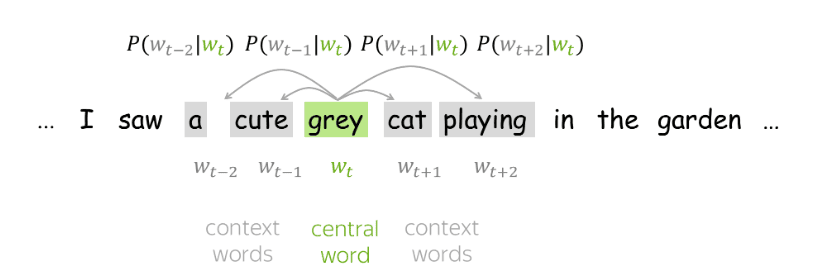
Окно скользит по тексту: на каждой позиции центральное слово задаёт задачу «предскажи соседей». Позиции обрабатываются независимо, поэтому обучение легко параллелится. Целевая функция
Для каждой позиции $t = 1, \dots, T$ в корпусе модель должна предсказать все контекстные слова в окне размера $m$. Правдоподобие всего корпуса — произведение этих вероятностей:
$$ L(\theta)= \prod_{t=1}^T\ \prod_{-m\le j \le m,\ j\neq 0} P(w_{t+j}\mid w_t, \theta) \to \max_{\theta}, $$
где $\theta$ — все обучаемые параметры (то есть все векторы всех слов), $T$ — число позиций в корпусе, а условие $j \neq 0$ исключает само центральное слово из его собственного контекста.
Читается это так: вероятность того, что модель, глядя на каждое слово корпуса, правильно угадает всех его соседей. Максимизируем её по параметрам.
Произведение миллиардов вероятностей мгновенно превращается в машинный ноль, поэтому берут логарифм (он превращает произведение в сумму), меняют знак (чтобы максимизацию сделать минимизацией) и усредняют по числу позиций:
$$ J(\theta) = -\frac{1}{T} \sum_{t=1}^T \sum_{-m\le j \le m,\ j\neq 0} \log \textcolor{red}{P(w_{t+j}\mid w_t, \theta)} \to \min_{\theta}. $$
Это обычная кросс-энтропия, просто записанная для задачи «угадай соседа». Нормировка на $T$ нужна, чтобы значение потерь не зависело от размера корпуса.
Как считается вероятность
Ключевая деталь конструкции: у каждого слова $w$ два обучаемых вектора:
- $v_w$ — вектор слова в роли центрального;
- $u_w$ — вектор слова в роли контекстного.
Тогда вероятность увидеть контекстное слово $o$ рядом с центральным $c$ задаётся softmax'ом:
$$ P(o \mid c) = \frac{\exp(\textcolor{green}{u_o^{\top} v_c})}{\underbrace{\sum_{w \in \mathcal{V}} \exp(u_w^{\top} v_c)}_{\text{нормирующий множитель}}}. $$
В числителе — скалярное произведение векторов: мера того, насколько эти два слова «подходят» друг другу. Чем оно больше, тем выше вероятность. Знаменатель суммирует то же самое по всему словарю $\mathcal{V}$, чтобы вероятности в сумме давали единицу.
Вопрос, который почти всегда задают на собеседовании.
Формально можно обойтись одним вектором на слово, но обучение с двумя устойчивее и вот почему. С одним вектором в softmax появлялся бы член $v_w^{\top}v_w = \|v_w\|^2$ — вероятность слова оказаться в собственном контексте. Она большая и положительная, а в естественном языке слово рядом с самим собой встречается редко, и модели приходится бороться с этим артефактом.
Разделив роли, мы убираем проблему: «кофе как центральное слово» и «кофе как сосед» — разные параметры, и их произведение ничем не выделено.
После обучения обычно используют $v_w$ (или сумму $v_w + u_w$), а вторую матрицу выбрасывают.
Пусть после обучения (в игрушечной размерности 3):
- $v_{\text{кот}} = [0.8,\ 0.1,\ -0.2]$
- $u_{\text{мяукает}} = [0.9,\ 0.0,\ -0.1]$, $\quad u_{\text{двигатель}} = [-0.7,\ 0.5,\ 0.3]$
Тогда $u_{\text{мяукает}}^{\top} v_{\text{кот}} = 0.72 + 0 + 0.02 = 0.74$, а $u_{\text{двигатель}}^{\top} v_{\text{кот}} = -0.56 + 0.05 - 0.06 = -0.57$.
После softmax по всему словарю первое даст заметную вероятность, второе — почти нулевую. Обучение и заключается в том, чтобы двигать векторы в эту конфигурацию: притягивать друг к другу пары, реально встречающиеся рядом, и разводить остальные.
Обучение
Параметры $\theta$ — это все векторы $v_w$ и $u_w$, то есть две матрицы размера $|V| \times d$. Их обновляют обычным градиентным спуском:
$$ \theta^{\text{new}} = \theta^{\text{old}} - \alpha \nabla J(\theta), $$
где $\alpha$ — скорость обучения.
Полную функцию $J(\theta)$ никто не считает: обновления делают по одной паре за раз (стохастически). Каждое обновление — это пара «центральное слово, одно из его контекстных слов»:
$$ J_{t,j}(\theta) = -\log P(w_{t+j} \mid w_t, \theta). $$
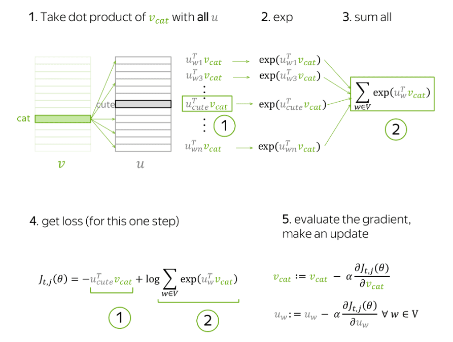
Один шаг обучения: берётся одна пара (центральное слово, контекстное слово), считается её вклад в потери и градиент, векторы сдвигаются. За проход по корпусу таких шагов миллиарды, и в среднем каждое слово успевает обновиться много раз. Кажется странным оптимизировать функцию, глядя каждый раз на одно слагаемое из миллиардов. Но в этом и есть смысл стохастического градиентного спуска: отдельный шаг шумный, а в среднем по миллиардам шагов направление верное.
Практический эффект: каждый вектор обновляется столько раз, сколько его слово встретилось в корпусе. Частые слова получают миллионы обновлений и сходятся отлично; редкие — несколько десятков, и их векторы остаются шумными. Это фундаментальное ограничение Word2Vec, которое позже починит FastText.
Посмотрите на знаменатель формулы вероятности: сумма по всему словарю. При $|V| = 500\,000$ и $d = 300$ один шаг требует полмиллиона скалярных произведений — и таких шагов миллиарды.
Стоимость одного обновления получается $O(|V| \cdot d)$, что делает наивную реализацию Word2Vec практически неработоспособной. Именно эту проблему решает negative sampling.
Negative Sampling
Negative sampling заменяет задачу «предскажи, какое из $|V|$ слов стоит рядом» на гораздо более дешёвую бинарную задачу: отличить настоящую пару (слово, сосед) от подделки.
На каждом шаге берут одну реальную пару $(c, o)$ из текста и $K$ фальшивых пар $(c, n_1), \dots, (c, n_K)$, где $n_i$ — слова, вытянутые случайно из словаря. Модель учится отвечать «да» на реальную пару и «нет» на фальшивые.
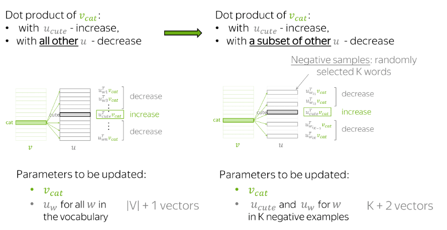
Вместо того чтобы понижать сходство центрального слова со всеми словами словаря, мы понижаем его только с $K$ случайно выбранными «негативами». Стоимость шага падает с $O(|V|)$ до $O(K)$. Softmax заменяется на сигмоиды, и целевая функция для одной пары становится:
$$ J_{\text{neg}}(c, o) = -\log \sigma\big(u_o^{\top} v_c\big) - \sum_{i=1}^{K} \log \sigma\big(-u_{n_i}^{\top} v_c\big), $$
где $\sigma(x) = \frac{1}{1+e^{-x}}$ — сигмоида.
Разберём по частям:
- первое слагаемое максимизирует $\sigma(u_o^{\top}v_c)$, то есть притягивает вектор центрального слова к вектору настоящего соседа;
- сумма максимизирует $\sigma(-u_{n_i}^{\top}v_c)$, то есть отталкивает его от $K$ случайных слов.
Никакой суммы по словарю здесь нет — стоимость шага стала $O(K \cdot d)$ при $K = 5$–$20$ вместо $O(|V| \cdot d)$ при $|V| = 500\,000$. Ускорение на четыре порядка.
Словарь $500\,000$ слов, $d = 300$, $K = 5$.
- Полный softmax: $500\,000 \times 300 = 1.5 \cdot 10^8$ умножений на шаг.
- Negative sampling: $(1 + 5) \times 300 = 1\,800$ умножений на шаг.
Разница примерно в 83 000 раз. Именно negative sampling превратил Word2Vec из теоретической конструкции в метод, обучающийся на корпусе Google News за часы на одной машине.
Не равномерно и не по обычной частоте, а из сглаженного унигранного распределения:
$$ P_{\text{neg}}(w) \propto f(w)^{3/4}, $$
где $f(w)$ — частота слова в корпусе.
Зачем степень $3/4$: при равномерной выборке негативами почти всегда оказывались бы редкие слова, и модель училась бы отличать «кофе» от «эпистемологии» — задача слишком лёгкая, сигнала мало. При выборке строго по частоте негативами были бы одни служебные слова. Показатель $0.75$ — эмпирический компромисс, который немного поднимает шансы редких слов и немного снижает шансы частых. Тот же приём встречается в сглаживании PMI.
Второй трюк из оригинальной статьи. Слова вроде «и», «в», «the» дают миллиарды пар, которые почти ничего не сообщают о смысле. Поэтому слово $w$ выбрасывается из обучающего потока с вероятностью
$$ P_{\text{drop}}(w) = 1 - \sqrt{\frac{t}{f(w)}}, $$
где $t \approx 10^{-5}$ — порог.
Эффект двойной: обучение ускоряется (меньше бесполезных пар) и качество растёт (выброшенные стоп-слова эффективно расширяют окно, приближая друг к другу содержательные слова).
Гиперпараметры
Самая содержательная ручка — она меняет тип выученного сходства, а не только качество:
- Большие окна ($m = 10$) дают тематическое сходство: рядом с «собака» окажутся «гав», «поводок», «ветеринар» — слова той же предметной области, разных частей речи.
- Маленькие окна ($m = 2$) дают функциональное и синтаксическое сходство: рядом с «собака» окажутся «пудель», «питбуль», «кошка» — слова, взаимозаменяемые в предложении.
Выбирайте по задаче: для тематической кластеризации — большое окно, для поиска синонимов и замен — маленькое.
- Число негативных примеров $K$: 15–20 для маленьких корпусов, 2–5 для больших. На большом корпусе сигнала и так много, лишние негативы только замедляют.
- Размерность эмбеддинга $d$: стандарт 300; 100 или 50 для небольших корпусов и ограниченной памяти. Больше 300 обычно даёт минимальный прирост.
- Размер окна $m$: 5–10.
- Число эпох: 5–15; на маленьком корпусе больше, иначе редкие слова не успеют обучиться.
- min_count: слова, встретившиеся менее 5 раз, обычно выбрасывают из словаря — их векторы всё равно будут мусорными.
Свойства и ограничения
Самое эффектное свойство Word2Vec: семантические отношения кодируются как направления в пространстве.
$$ v_{\text{король}} - v_{\text{мужчина}} + v_{\text{женщина}} \approx v_{\text{королева}} $$
$$ v_{\text{Париж}} - v_{\text{Франция}} + v_{\text{Италия}} \approx v_{\text{Рим}} $$
Интуиция: вектор $v_{\text{король}} - v_{\text{мужчина}}$ — это «то, что остаётся от короля, если убрать мужскую составляющую», то есть примерно «монархичность». Прибавив к ней «женскость», попадаем в «королеву».
Работает это потому, что и «король/королева», и «мужчина/женщина» различаются одними и теми же контекстами (он/она, его/её), и разность векторов в обеих парах оказывается почти одинаковым направлением.
Демонстрации с «королём и королевой» создают завышенные ожидания. На практике:
- поиск ближайшего соседа обычно явно исключает три слова из самого запроса — иначе ответом часто оказывается «король»;
- на редких словах и на неевропейских языках точность аналогий резко падает;
- значительная часть «успеха» объясняется тем, что правильный ответ и так был близким соседом одного из слов запроса.
Аналогии — приятное свойство и удобный способ проверить, что эмбеддинги обучились, но не надёжный инструмент рассуждения.
Word2Vec выучивает статистику текстов такой, какая она есть, включая социальные стереотипы. Классический пример из статьи Bolukbasi et al. (2016): в эмбеддингах, обученных на Google News, аналогия «мужчина : программист = женщина : ?» давала «домохозяйка».
Это не баг реализации, а точное отражение корпуса. Практический вывод: если эмбеддинги используются в решениях о людях (скоринг резюме, модерация), предвзятость нужно измерять и корректировать, а не считать модель нейтральной по умолчанию.
Word2Vec выдаёт статические эмбеддинги: слово получает один вектор навсегда, независимо от предложения. Для многозначных слов это означает усреднение несовместимых смыслов: вектор «замок» окажется где-то между «крепостью» и «дверным механизмом» и не будет описывать ни одного из них.
Плюс модель ничего не может сказать про слова, которых не было в обучающем словаре (OOV, out-of-vocabulary) — ни про опечатки, ни про новые термины. Первую проблему решают контекстные модели (ELMo, BERT), вторую — FastText с его символьными n-граммами.
Какова основная идея Word2Vec?
Word2Vec обучает плотные эмбеддинги слов, решая вспомогательную задачу предсказания контекстных слов по центральному (Skip-Gram) или наоборот (CBOW). Сама задача не нужна — ценен побочный продукт: чтобы предсказывать соседей, вектор обязан закодировать смысл слова, поэтому слова с похожими контекстами получают похожие векторы.
Почему у каждого слова в Word2Vec два вектора?
Один вектор ($v_w$) используется, когда слово выступает центральным, другой ($u_w$) — когда контекстным. Это делает обучение устойчивее: с одним вектором в softmax возникал бы член $\|v_w\|^2$ — вероятность слова оказаться в собственном контексте, которая велика и мешает, поскольку в реальном тексте слово рядом с самим собой встречается редко. После обучения обычно берут $v_w$ или сумму $v_w + u_w$.
Почему прямой softmax по всему словарю неэффективен при обучении Word2Vec?
Нормирующий множитель требует суммирования по всем $|V|$ словам, то есть $O(|V| \cdot d)$ операций на каждое обновление. При словаре в сотни тысяч слов и миллиардах обновлений это делает наивную реализацию неработоспособной.
Как Negative Sampling решает проблему неэффективности softmax?
Задача переформулируется как бинарная: отличить настоящую пару (центральное слово, сосед) от $K$ пар со случайно выбранными «негативами». Softmax заменяется сигмоидами, потери принимают вид $-\log\sigma(u_o^\top v_c) - \sum_i \log\sigma(-u_{n_i}^\top v_c)$, и стоимость шага падает с $O(|V| \cdot d)$ до $O(K \cdot d)$ при $K = 5$–$20$ — ускорение на четыре порядка.
Из какого распределения берутся негативные примеры и почему?
Из сглаженного унигранного: $P_{\text{neg}}(w) \propto f(w)^{3/4}$. Равномерная выборка давала бы в негативы почти одни редкие слова, и задача была бы слишком лёгкой; выборка строго по частоте давала бы одни служебные слова. Степень $3/4$ — эмпирический компромисс, поднимающий шансы редких слов и снижающий шансы частых.
Что такое subsampling частых слов и зачем он нужен?
Слово выбрасывается из обучающего потока с вероятностью $1 - \sqrt{t/f(w)}$ при $t \approx 10^{-5}$. Это убирает миллиарды малоинформативных пар со стоп-словами: обучение ускоряется, а качество растёт, потому что выброшенные служебные слова эффективно расширяют окно и сближают содержательные слова.
Как размер контекстного окна влияет на тип семантики в эмбеддингах?
Большое окно ($m \approx 10$) даёт тематическое сходство: рядом с «собака» окажутся «поводок», «ветеринар». Малое окно ($m \approx 2$) — синтаксическое и функциональное: «пудель», «питбуль», «кошка», то есть слова, взаимозаменяемые в предложении. Выбор определяется задачей.
Как Word2Vec связан с PMI-матрицей?
Levy & Goldberg (2014) показали, что Skip-Gram с negative sampling неявно факторизует сдвинутую PMI-матрицу: $\mathbf{v}_w^\top \mathbf{u}_c \approx \operatorname{PMI}(w,c) - \log K$. То есть Word2Vec вычисляет низкоранговое приближение той же статистики, что и count-based методы, но потоково, без построения матрицы в памяти.
Каковы главные ограничения Word2Vec?
Эмбеддинги статичны — у слова один вектор независимо от контекста, поэтому многозначность разрешается усреднением несовместимых смыслов. Слова вне обучающего словаря (OOV) вектора не получают вовсе. Редкие слова обучаются плохо из-за малого числа обновлений. Плюс эмбеддинги наследуют предвзятость корпуса, что критично при использовании в решениях о людях.
-
Skip-Gram и CBOW
Word2Vec — это не одна модель, а две, отличающиеся направлением предсказания:
- Skip-Gram предсказывает контекст по центральному слову: «дано слово кофе — какие слова стоят рядом?»
- CBOW (Continuous Bag-of-Words) предсказывает центральное слово по контексту: «даны слова я, пью, утром — какое слово в середине?»
Название CBOW объясняется тем, что векторы контекстных слов складываются (усредняются) в один вектор — «корзину слов», — и порядок слов внутри окна при этом теряется. Отсюда «bag of words» в названии, а «continuous» — потому что складываются не счётчики, а непрерывные векторы.
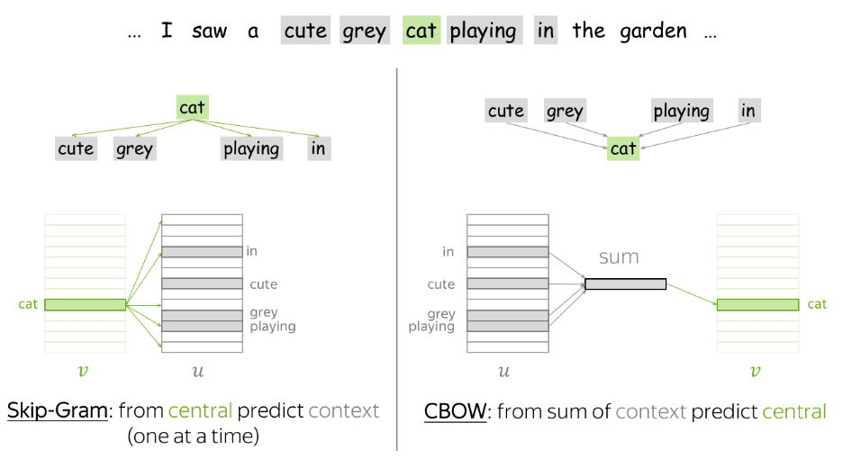
Слева CBOW: несколько контекстных слов сходятся в один усреднённый вектор, по которому предсказывается центральное слово. Справа Skip-Gram: из одного центрального слова расходятся предсказания на каждое слово контекста. Предложение «я пью крепкий кофе утром», центральное слово — крепкий, окно $m=2$. Контекст: {я, пью, кофе, утром}.
Skip-Gram порождает из этого окна четыре обучающих примера:
Вход Целевой выход крепкий я крепкий пью крепкий кофе крепкий утром CBOW порождает один обучающий пример:
Вход Целевой выход среднее векторов (я, пью, кофе, утром) крепкий Отсюда сразу видны все дальнейшие различия: Skip-Gram делает в $2m$ раз больше обновлений на то же количество текста.
Ключевое следствие примера выше. В Skip-Gram редкое слово получает $2m$ отдельных градиентных обновлений каждый раз, когда встречается: по одному на каждого соседа. При $m=5$ это 10 обновлений за одно вхождение.
В CBOW редкое слово внутри контекста вносит вклад через усреднение с остальными словами окна. Если рядом стоят частые слова, то усреднённый вектор определяется в основном ими, а вклад редкого слова размывается: он делится на $2m$ и тонет в шуме.
Практический вывод: корпус маленький или вас интересуют редкие термины — берите Skip-Gram.
Зеркальное следствие. CBOW делает одно обновление на окно вместо $2m$, поэтому проход по корпусу дешевле в несколько раз.
Кроме того, усреднение работает как сглаживание: случайный шум отдельного контекстного слова гасится соседями. На большом корпусе, где статистики и так достаточно, это даёт более гладкую сходимость и слегка лучшее качество на частых словах.
Практический вывод: корпус огромный, слова в основном частотные, важна скорость — берите CBOW.
Skip-Gram CBOW Направление предсказания центральное $\to$ контекст контекст $\to$ центральное Примеров из одного окна $2m$ 1 Скорость обучения медленнее быстрее в несколько раз Редкие слова лучше хуже Частые слова сопоставимо чуть лучше, стабильнее Чувствительность к шуму выше ниже (усреднение сглаживает) Нужен корпус средний или маленький большой В Skip-Gram вероятность контекстного слова $o$ при центральном $c$ — это softmax от $u_o^{\top}v_c$.
В CBOW сначала строится усреднённый вектор контекста:
$$ \hat{v} = \frac{1}{2m}\sum_{-m \le j \le m,\ j \ne 0} v_{w_{t+j}}, $$
а затем вероятность центрального слова считается softmax'ом от $u_{w_t}^{\top}\hat{v}$.
Обратите внимание, что в этом усреднении порядок слагаемых не важен: «я пью кофе» и «кофе пью я» дадут один и тот же $\hat v$. Именно поэтому CBOW не может отличить эти контексты, и это цена, которую платят за скорость.
Аббревиатура SGNS (Skip-Gram with Negative Sampling) обозначает связку «архитектура Skip-Gram + приём negative sampling». Именно она стала практическим стандартом Word2Vec и именно её реализация лежит в
gensimпо умолчанию.Причины простые: Skip-Gram даёт лучшее качество на редких словах, а negative sampling убирает его главный недостаток — медлительность, снижая стоимость шага с $O(\lvert V\rvert)$ до $O(K)$. Вместе они дают качество Skip-Gram по цене, приемлемой на больших корпусах. Плюс именно для SGNS доказана связь с факторизацией PMI-матрицы (Levy & Goldberg, 2014).
Второй способ ускорить softmax, тоже реализованный в Word2Vec. Словарь укладывается в бинарное дерево Хаффмана: частые слова получают короткие пути от корня, редкие — длинные. Вероятность слова считается как произведение вероятностей поворотов на пути, а это $O(\log \lvert V\rvert)$ операций вместо $O(\lvert V\rvert)$.
На практике hierarchical softmax чаще выбирают для редких слов и маленьких корпусов, negative sampling — во всех остальных случаях. В
gensimпереключается флагомhs=1противnegative=5.Этот параметр работает одинаково в обеих архитектурах, и его часто крутят вслепую.
- Малое окно ($m = 2$) даёт функциональное сходство: соседями «пудель» будут «питбуль», «ротвейлер», «терьер» — слова, взаимозаменяемые в предложении.
- Большое окно ($m = 10$) даёт тематическое сходство: соседями «пудель» станут «поводок», «груминг», «выставка» — слова той же области, но других частей речи.
Ошибка — подбирать окно по метрике, не понимая, какое сходство нужно задаче. Для поиска синонимов и подстановки нужны маленькие окна, для тематической кластеризации и рекомендаций — большие.
Типичная ловушка новичка — долго выбирать между Skip-Gram и CBOW. При адекватном корпусе разрыв между ними обычно в пределах пары процентных пунктов на downstream-задаче, тогда как размер и чистота корпуса, размер окна и число эпох влияют куда сильнее.
Разумная стратегия по умолчанию: Skip-Gram + negative sampling, $d = 300$, $m = 5$, $K = 5$ — и дальше тратить время на данные, а не на архитектуру.
В чём принципиальная разница между Skip-Gram и CBOW?
Направление предсказания. Skip-Gram предсказывает каждое слово контекста по центральному слову, порождая $2m$ обучающих примеров из одного окна. CBOW усредняет векторы контекстных слов в один и предсказывает по нему центральное слово, порождая один пример из окна.
Почему Skip-Gram лучше справляется с редкими словами?
Редкое слово получает $2m$ отдельных градиентных обновлений на каждое своё вхождение — по одному на каждого соседа. В CBOW его вклад делится на $2m$ при усреднении и размывается частыми словами окна, поэтому сигнала на обучение остаётся мало.
Почему CBOW быстрее и стабильнее на частых словах?
Он делает одно обновление на окно вместо $2m$, что даёт кратное ускорение прохода по корпусу. Усреднение векторов контекста работает как сглаживание: шум отдельного слова гасится соседями, поэтому сходимость получается более гладкой, а качество на частых словах — чуть выше.
Как усреднение векторов контекста в CBOW влияет на качество эмбеддингов?
Оно теряет порядок слов внутри окна: «я пью кофе» и «кофе пью я» дают одинаковый усреднённый вектор. Плюс вклад каждого отдельного слова размывается, из-за чего CBOW слабее на редких словах. Взамен получается устойчивость к шуму и быстрая сходимость на больших корпусах.
Почему Skip-Gram с negative sampling (SGNS) — наиболее популярный вариант Word2Vec?
Skip-Gram даёт лучшее качество на редких словах, а negative sampling убирает его главный недостаток — медлительность: вместо softmax по всему словарю решается бинарная задача «отличить настоящую пару от $K$ случайных», и стоимость шага падает с $O(\lvert V\rvert)$ до $O(K)$. Именно для SGNS доказана связь с факторизацией сдвинутой PMI-матрицы.
Какая есть альтернатива negative sampling для ускорения softmax?
Hierarchical softmax: словарь укладывается в дерево Хаффмана, где частые слова имеют короткие пути, и вероятность слова считается как произведение вероятностей поворотов на пути — $O(\log \lvert V\rvert)$ вместо $O(\lvert V\rvert)$. Его чаще выбирают для редких слов и небольших корпусов.
Как размер контекстного окна влияет на семантику эмбеддингов в обоих методах?
Большое окно захватывает тематическое сходство: соседями «пудель» станут «поводок», «груминг». Малое окно — синтаксическое и функциональное: «питбуль», «ротвейлер», то есть взаимозаменяемые в предложении слова. Параметр меняет не качество, а сам тип выученного сходства, поэтому выбирать его нужно исходя из задачи.
-
GloVe
GloVe (Global Vectors for Word Representation) — метод получения эмбеддингов, объединяющий два подхода: он берёт глобальную статистику совстречаемости из count-based методов, но обучает векторы градиентным спуском, как предсказательные модели.
Простыми словами: сначала честно посчитать, сколько раз каждая пара слов встретилась рядом во всём корпусе, а потом подобрать такие векторы, чтобы их скалярное произведение восстанавливало эти числа.
Статистические (count-based) GloVe Предсказательные (prediction-based) Информация берётся из: глобальной статистики корпуса глобальной статистики корпуса "чтения" текстовых корпусов Вектора: получены через уменьшение размерности обучаются с помощью градиентного спуска обучаются с помощью градиентного спуска Авторы GloVe (Pennington, Socher, Manning, 2014) сформулировали её так: Word2Vec смотрит на корпус через локальное окно и никогда не видит картину целиком. Он обрабатывает пары по одной, и глобальная статистика в него попадает только косвенно — через то, что частые пары встречаются чаще.
GloVe предлагает не выбрасывать эту информацию: посчитать матрицу совстречаемости один раз явно и оптимизировать векторы прямо против её чисел. Тогда каждая пара слов вносит вклад ровно один раз, с весом, соответствующим её реальной частоте, а не «сколько раз окну повезло на неё наткнуться».
Самая содержательная часть работы GloVe — наблюдение о том, какая именно величина кодирует смысл.
Возьмём слова «лёд» и «пар» и посмотрим на отношение $\dfrac{P(k \mid \text{лёд})}{P(k \mid \text{пар})}$ для разных пробных слов $k$:
Пробное слово $k$ Отношение Что это значит твёрдый $\gg 1$ (≈ 8.9) связано со льдом, не с паром газ $\ll 1$ (≈ 0.085) связано с паром, не со льдом вода $\approx 1$ связано с обоими мода $\approx 1$ не связано ни с одним Отдельные вероятности $P(\text{твёрдый} \mid \text{лёд})$ мало что говорят — они малы для всех слов. А вот отношение чётко разделяет: сильно больше единицы, сильно меньше или около единицы. Именно отношения, а не абсолютные частоты, несут семантическую информацию, и GloVe строит целевую функцию так, чтобы векторы кодировали именно их.
Если мы хотим, чтобы разность векторов отвечала за отношение вероятностей, естественно потребовать
$$ (v_w - v_{w'})^{\top} u_c \approx \log \frac{P(c \mid w)}{P(c \mid w')} = \log P(c\mid w) - \log P(c \mid w'). $$
Это выполняется, если для каждой пары по отдельности
$$ v_w^{\top} u_c \approx \log P(c \mid w) \approx \log N(w,c) - \log N(w), $$
а слагаемое $\log N(w)$, зависящее только от $w$, можно поглотить обучаемым смещением. Отсюда и берётся целевая формула ниже: скалярное произведение должно приближать логарифм счётчика совстречаемости.
$$ J(\theta) = \sum_{w,c \in \mathcal{V}} \textcolor{green}{f(N(w,c))} \cdot \left(u_c^{\top} v_w + \textcolor{orange}{b_c} + \textcolor{orange}{\bar{b}_w} - \log N(w,c) \right)^2, $$
где:
- $N(w,c)$ — число совместных вхождений слов $w$ и $c$ (элемент матрицы совстречаемости);
- $v_w, u_c$ — обучаемые векторы слова и контекста;
- $\textcolor{orange}{b_c}, \textcolor{orange}{\bar{b}_w}$ — обучаемые смещения (bias), поглощающие частотность отдельных слов;
- $\textcolor{green}{f(N(w,c))}$ — взвешивающая функция.
По сути это взвешенная задача наименьших квадратов: минимизируем квадрат отклонения между тем, что предсказывает скалярное произведение, и логарифмом реального счётчика.
Без них модель была бы обязана закодировать в скалярном произведении и семантику, и общую частотность слов. Но $\log N(w,c)$ велик как для семантически связанных пар, так и просто для пар с участием частого слова.
Смещения снимают эту нагрузку: $\bar b_w$ впитывает «насколько часто вообще встречается $w$», $b_c$ — то же для контекста, а на долю $v_w^{\top}u_c$ остаётся именно специфическая связь пары. Это ровно та же идея, что в PMI, где деление на $P(w)P(c)$ убирает влияние маргинальных частот.
$$ f(x) = \begin{cases} (x / x_{\max})^{\alpha}, & x < x_{\max},\\ 1, & x \ge x_{\max}, \end{cases} $$
с параметрами $x_{\max} = 100$ и $\alpha = 3/4$ в оригинальной работе.
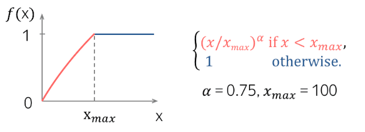
Взвешивающая функция $f$: вес растёт от нуля вместе с частотой пары, а после $x_{\max}=100$ выходит на плато. Редкие пары почти не влияют на обучение, очень частые не могут его подмять. Она решает сразу три проблемы, и каждая важна.
- $f(0) = 0$ — пары, которые ни разу не встретились, вообще не попадают в сумму. Это критично: иначе пришлось бы считать $\log 0 = -\infty$, а нулевых пар в матрице подавляющее большинство.
- Рост при малых $x$ — редкие пары (встретились 1–2 раза) получают маленький вес, потому что их счётчики шумны и доверять им нельзя.
- Плато при $x \ge x_{\max}$ — очень частые пары (обычно со служебными словами) не получают вес больше остальных и не могут подмять под себя всю оптимизацию.
Без такого взвешивания обычный МНК тянулся бы за самыми большими значениями, то есть за парами со стоп-словами, — и выучил бы частотность вместо смысла.
- Один проход по корпусу. Матрица $N(w,c)$ строится один раз, дальше обучение идёт по её ненулевым элементам. Word2Vec, наоборот, требует нескольких эпох прохода по тексту.
- Обучение параллелится тривиально. Слагаемые независимы, поэтому GloVe хорошо распределяется по ядрам и машинам.
- Воспроизводимость выше. Нет случайной выборки негативов и случайного subsampling — при том же корпусе и seed результат стабильнее.
- Цена — память. Матрицу совстречаемости надо где-то держать; для очень больших корпусов это ощутимое ограничение, которого у Word2Vec нет.
Оригинальная статья показывала преимущество GloVe на аналогиях, но последующие работы (в частности, Levy, Goldberg & Dagan, 2015) продемонстрировали, что разрыв в основном объясняется разной настройкой гиперпараметров, а не природой методов.
При честном сравнении с одинаково подобранными окнами, размерностями и предобработкой SGNS и GloVe дают близкие результаты, и победитель меняется от задачи к задаче. На собеседовании корректный ответ: «сопоставимы; GloVe удобнее параллелить и воспроизводить, Word2Vec — обучать потоково без матрицы в памяти».
GloVe наследует все ограничения своего класса:
- Один вектор на слово — многозначность не разрешается, «замок» получает усреднение двух смыслов.
- Нет OOV — слово, отсутствовавшее в корпусе, вектора не получает вовсе (в отличие от FastText).
- Нет учёта порядка — окно симметрично, синтаксис теряется.
- Предвзятость корпуса воспроизводится в векторах так же, как у Word2Vec.
Готовые предобученные GloVe-векторы (6B, 42B, 840B токенов, размерности 50/100/200/300) до сих пор популярны как быстрый способ инициализировать embedding-слой небольшой модели или как признаки для классического классификатора, когда GPU нет, а данных мало.
В современных пайплайнах их вытеснили контекстные эмбеддинги, но как бейзлайн и как учебный пример связи «статистика $\leftrightarrow$ обучение» GloVe остаётся эталонным.
Что такое GloVe и почему его называют гибридным методом?
GloVe использует глобальную статистику корпуса — явно построенную матрицу совстречаемости, как count-based методы, — но получает векторы не разложением матрицы, а градиентным спуском по взвешенной МНК-задаче, как предсказательные модели типа Word2Vec.
Какую претензию к Word2Vec решает GloVe?
Word2Vec видит корпус только через локальное окно и обрабатывает пары по одной, поэтому глобальная статистика попадает в него лишь косвенно. GloVe считает матрицу совстречаемости один раз явно и оптимизирует векторы прямо против её чисел, так что каждая пара вносит вклад ровно один раз с весом, соответствующим её реальной частоте.
Почему GloVe строится вокруг отношений вероятностей?
Отдельные вероятности $P(c \mid w)$ малы для всех слов и мало информативны, а их отношения чётко разделяют случаи: $P(k\mid\text{лёд})/P(k\mid\text{пар})$ сильно больше единицы для «твёрдый», сильно меньше для «газ» и около единицы для «вода» и «мода». Требование, чтобы разность векторов кодировала логарифм этого отношения, и приводит к условию $v_w^\top u_c \approx \log N(w,c)$ с точностью до смещений.
Что минимизирует функция потерь GloVe?
Взвешенную сумму квадратов отклонений между $u_c^\top v_w + b_c + \bar b_w$ и $\log N(w,c)$ по всем парам с ненулевым счётчиком. То есть скалярное произведение векторов должно приближать логарифм числа совместных встречаемостей, а смещения поглощают вклад маргинальных частот слов.
Зачем в GloVe обучаемые смещения $b_c$ и $\bar b_w$?
Величина $\log N(w,c)$ велика и для семантически связанных пар, и просто для пар с участием частого слова. Смещения впитывают эту общую частотность каждого слова, освобождая скалярное произведение для кодирования именно специфической связи пары. По смыслу это тот же приём, что деление на $P(w)P(c)$ в PMI.
Для чего нужна взвешивающая функция $f(N(w,c))$?
Она обнуляет вклад пар, не встретившихся ни разу (иначе пришлось бы вычислять $\log 0$), даёт малый вес редким парам, чьи счётчики шумны, и выводит вес на плато после $x_{\max}=100$, чтобы очень частые пары со служебными словами не подмяли под себя оптимизацию. Без неё МНК выучил бы частотность вместо смысла.
Чем GloVe практически отличается от Word2Vec?
GloVe требует одного прохода по корпусу для сбора матрицы, тривиально параллелится и более воспроизводим (нет случайной выборки негативов), но требует держать матрицу совстречаемости. Word2Vec обучается потоково без матрицы, зато нуждается в нескольких эпохах. По качеству при честно подобранных гиперпараметрах методы сопоставимы — заявленное преимущество GloVe на аналогиях объяснялось разной настройкой (Levy, Goldberg & Dagan, 2015).
Почему GloVe-эмбеддинги не контекстуальны и как это ограничивает применение?
GloVe присваивает каждому слову один вектор независимо от предложения, поэтому многозначные слова получают усреднённое представление, не соответствующее ни одному из значений. Кроме того, слова вне обучающего словаря вектора не получают вовсе. Для задач, где нужно различать смыслы в контексте, нужны ELMo или BERT.
-
FastText
FastText — расширение Word2Vec, разработанное в Facebook AI Research. Главное отличие: слово перестаёт быть неделимой единицей. Каждое слово разбивается на символьные $n$-граммы (кусочки из $n$ подряд идущих букв), обучаются векторы этих кусочков, а эмбеддинг слова получается как сумма векторов его $n$-грамм плюс вектор самого слова:
$$ v_{\text{слово}} = v_{\langle\text{слово}\rangle} + \sum_{g \in G(\text{слово})} z_g, $$
где $G(\text{слово})$ — множество символьных $n$-грамм слова, а $z_g$ — обучаемый вектор $n$-граммы.
Простыми словами: Word2Vec запоминает слова целиком, FastText — из каких букв они склеены. Поэтому FastText способен собрать вектор слова, которого никогда не видел.
У Word2Vec две болезненные дыры, и обе идут от того, что слово — атом.
- OOV-слова (out-of-vocabulary, «вне словаря»). Слово, не встретившееся при обучении, вектора не имеет вообще. В продакшене это опечатки, новые термины, имена собственные, сленг — то есть заметная часть реального потока.
- Морфология не переносится. «Читать», «читаю», «прочитанный» — три независимых вектора. Модель не знает, что у них общий корень, и обучает каждый с нуля. В русском или турецком, где у одной леммы десятки форм, это означает, что статистика размазывается по формам и на каждую её не хватает.
FastText чинит обе: у незнакомого слова есть знакомые куски, а у родственных слов эти куски общие.
Слово
horse, $n = 3$. Сначала его оборачивают в угловые скобки —<horse>— а затем нарезают окном по 3 символа:<ho,hor,ors,rse,se>плюс вектор самого слова целиком
<horse>.Зачем скобки
<и>: они помечают границы слова. Без них $n$-граммаherиз словаherи из середины словаwhereбыла бы одной и той же сущностью, хотя в первом случае это целое слово, а во втором — обрывок. Скобки позволяют выучить отдельно «приставочные» и «суффиксальные» кусочки:<un(начало слова) отличается отunв середине.На практике берут не одно $n$, а диапазон — по умолчанию от 3 до 6 символов, то есть у слова оказывается несколько десятков $n$-грамм.
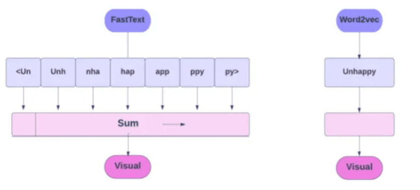
Эмбеддинг слова — сумма векторов его символьных $n$-грамм и вектора слова целиком. Родственные слова разделяют большую часть $n$-грамм, поэтому их итоговые векторы автоматически оказываются близкими. Разберём каноничный пример.
book— частое слово, точно есть в обучающем корпусе. Его $n$-граммы:<bo,boo,ook,ok>.bookshelf— редкое слово, вполне могло не встретиться ни разу. Его $n$-граммы:<bo,boo,ook,oks,ksh,she,hel,elf,lf>.
Три $n$-граммы из девяти общие с
book— и все три «сильные», из начала слова. Значит, даже не видевbookshelfни разу, FastText соберёт для него вектор, у которого заметная составляющая указывает в сторонуbook.Word2Vec в этой ситуации вернул бы ошибку
KeyError— слова нет в словаре, вектора нет.Пользователь ввёл
кофемашнавместокофемашина. Общих $n$-грамм у них большинство:<ко,коф,офе,фем,ема,маш… Расходятся только те, что задевают пропущенную букву.Итоговые векторы окажутся почти совпадающими, и поиск отработает корректно. Это делает FastText естественным выбором для шумных пользовательских текстов: поисковые запросы, отзывы, чаты, транскрипты речи.
Обучение почти не отличается от Skip-Gram с negative sampling. Разница ровно одна: там, где Word2Vec берёт вектор центрального слова из таблицы по индексу, FastText вычисляет его на лету как сумму векторов $n$-грамм.
Градиент, соответственно, распределяется по всем $n$-граммам слова: обновляется не один вектор, а десятки. Отсюда и главное преимущество для редких слов — их $n$-граммы получают обновления из всех слов, где эти куски встречаются, а не только из вхождений самого слова.
Число различных $n$-грамм при диапазоне 3–6 огромно — миллионы. Хранить для каждой отдельный вектор дорого, поэтому FastText использует хеш-таблицу фиксированного размера (по умолчанию 2 миллиона корзин): $n$-грамма хешируется в номер корзины, и вектор берётся оттуда.
Побочный эффект — коллизии: две разные $n$-граммы могут попасть в одну корзину и делить вектор. На практике это почти не вредит (сигнал от одной сильной $n$-граммы перевешивает шум), но объясняет, почему модель FastText занимает много памяти: 2 млн $\times$ 300 чисел — это около 2.4 ГБ во
float32.- Работает с OOV-словами. Вектор собирается из известных кусочков, поэтому неизвестных слов для модели практически не существует.
- Сильно лучше на морфологически богатых языках. Русский, турецкий, финский, венгерский: словоформы одной леммы разделяют корневые $n$-граммы и автоматически получают близкие векторы.
- Устойчив к опечаткам и шуму — по той же причине.
- Лучше на редких словах. Их $n$-граммы обучаются на всём корпусе, а не только на редких вхождениях самого слова.
- Быстро обучается и имеет отличную промышленную реализацию, включая режим классификации текстов (
fastText supervised), который на CPU конкурирует с нейросетями.
- Ложные сходства по форме.
houseиhorseразделяют $n$-граммы<ho,ho?,se>и могут оказаться подозрительно близкими, хотя смысла общего нет. То же в русском: «дом» и «домовой», «мир» и «мираж». - Больше памяти и времени. Хеш-таблица $n$-грамм в разы тяжелее словаря Word2Vec, а вычисление эмбеддинга требует суммирования десятков векторов вместо одного просмотра таблицы.
- Плохо работает на языках, где морфология не выражена буквами. Для китайского и японского символьные $n$-граммы дают куда меньше пользы, чем для флективных языков.
- Эмбеддинги по-прежнему статичны — контекст не учитывается.
Пример, который стоит помнить: в задаче анализа тональности FastText может сблизить «интересный» и «неинтересный», потому что различаются они только приставкой из трёх букв, а совпадают в десятке $n$-грамм.
Практическое следствие: если задача чувствительна к приставкам-отрицаниям (
не-,un-,dis-), проверяйте это явно и при необходимости увеличивайте минимальную длину $n$-граммы или добавляйте признаки уровня слова.- Английский, чистый текст, большой корпус — разница с Word2Vec невелика, берите что удобнее.
- Русский и другие морфологически богатые языки — FastText почти всегда лучше.
- Пользовательский ввод, опечатки, домен с новыми терминами — FastText, из-за OOV.
- Жёсткие ограничения по памяти на инференсе — Word2Vec или GloVe, либо FastText со сжатым словарём (
quantize). - Нужен контекст и разрешение многозначности — ни то ни другое, нужен BERT-подобный энкодер.
Чем FastText отличается от Word2Vec?
FastText представляет слово как сумму векторов его символьных $n$-грамм плюс вектор слова целиком, тогда как Word2Vec обучает один неделимый вектор на слово. Обучение при этом устроено так же (Skip-Gram + negative sampling), меняется лишь способ получения вектора центрального слова.
Зачем в FastText угловые скобки вокруг слова?
Символы
<и>помечают границы слова, чтобы отличать $n$-граммы в начале и конце от таких же последовательностей внутри других слов:<un(приставка) иunв середине становятся разными сущностями. Это позволяет модели выучить именно морфемную структуру, а не случайные совпадения букв.Почему FastText лучше работает с OOV-словами?
Даже если слово не встречалось при обучении, его $n$-граммы почти наверняка встречались в других словах, и эмбеддинг собирается как сумма этих известных векторов. Word2Vec в такой ситуации не может выдать ничего — слова просто нет в словаре.
Почему FastText лучше на редких словах?
Векторы $n$-грамм редкого слова обновляются при каждом появлении этих же $n$-грамм в любых других словах корпуса, а не только при редких вхождениях самого слова. Таким образом редкое слово наследует статистику, накопленную его морфемами.
Для каких языков FastText особенно полезен?
Для морфологически богатых языков — русского, турецкого, финского, венгерского, — где одна лемма даёт десятки словоформ с разными аффиксами. Общие корневые $n$-граммы автоматически сближают эти формы, тогда как Word2Vec обучал бы каждую как независимое слово с недостаточной статистикой.
Что такое хеширование $n$-грамм в FastText и чем оно чревато?
Различных $n$-грамм миллионы, поэтому их отображают в хеш-таблицу фиксированного размера (по умолчанию 2 млн корзин). Разные $n$-граммы могут попасть в одну корзину и делить вектор — это коллизии. На качество они влияют слабо, но объясняют высокое потребление памяти моделью.
Когда символьные $n$-граммы могут навредить качеству?
Когда близкие по написанию слова имеют разный или противоположный смысл:
house/horse, «дом»/«домовой», «интересный»/«неинтересный». Перекрывающиеся $n$-граммы сближают их векторы, что особенно опасно в задачах, чувствительных к приставкам-отрицаниям.В чём ограничение FastText по сравнению с контекстуальными моделями типа BERT?
FastText, как и Word2Vec, даёт статические эмбеддинги: слово имеет одно представление независимо от предложения, поэтому многозначность не разрешается. BERT вычисляет вектор заново для каждого контекста и различает «замок» в «средневековый замок» и в «сломался замок».
-
Сравнение классических векторизаторов
Все методы из блоков 1–3 решают одну задачу — превратить текст в числа, — но отличаются по трём осям. Держите их в голове, глядя на таблицу:
- Что векторизуется — отдельное слово (one-hot, Word2Vec, GloVe, FastText) или целый документ (BoW, TF-IDF, BM25, LSA).
- Откуда берутся числа — из подсчёта частот (счётные методы) или из обучения градиентным спуском (предсказательные).
- Разреженный или плотный вектор — длиной в размер словаря с почти одними нулями, или несколько сотен ненулевых чисел.
Методы появлялись не случайным набором, а как последовательные ответы на недостатки предыдущих:
- one-hot $\to$ нет семантики $\to$ счётчики контекстов (co-occurrence);
- сырые счётчики доминируются частотностью $\to$ PPMI и TF-IDF;
- матрица огромна и разрежена $\to$ SVD (LSA);
- SVD дорог и не потоков $\to$ обучение векторов (Word2Vec);
- локальное окно теряет глобальную статистику $\to$ GloVe;
- слово как атом ломается на OOV и морфологии $\to$ FastText;
- один вектор на слово не различает смыслы $\to$ контекстные эмбеддинги (ELMo, BERT).
Каждая стрелка — это одна конкретная претензия, которую стоит уметь назвать.
Метод Идея $+$ $-$ Примеры One-hot Вектор размера $\lvert V \rvert$ с единственной единицей на позиции слова Просто; однозначное соответствие слову Нет семантики; огромная разреженная размерность; ортогональность Бейзлайны, индексация категорий, целевые метки Bag of Words Вектор документа из счётчиков слов словаря Прост, быстр, интерпретируем Теряет порядок слов; частые слова доминируют; разреженность Спам-фильтры, тематическая классификация Count-based Строим матрицу "слово–контекст", затем уменьшаем размерность Использует глобальную статистику; интерпретируемо Большие, разреженные матрицы; чувствительно к определению контекста Тематическое сходство, ретривал Co-occurrence counts Подсчёт совместных встречаемостей в окне размера $L$ Просто; исторически проверено Частоты "сырые", не нормированы; разреженность База для PMI/PPMI, LSA, GloVe PPMI Веса по положительной взаимной информации между словом и контекстом Подавляет общеупотребимые слова; подчёркивает ассоциации Шум на редких парах; требует сглаживания Семантические эмбеддинги, связь с word2vec LSA SVD над матрицей "терм–документ" (или слово–контекст) Выделяет скрытые темы; даёт векторы слов и документов; связывает синонимы Линейность; компоненты плохо интерпретируются; дорогое обновление Поиск похожих доков, кластеризация, семантический поиск TF-IDF Важность терма: частый в документе, редкий в коллекции Сильный бейзлайн; интерпретируемо; быстро Нет порядка/контекста; разреженность Классификация, ретривал, ключевые слова BM25 Сумма по термам с IDF, насыщением TF и нормировкой по длине документа Сильный классический ранкер; устойчив к накрутке; учитывает длину IDF может быть отрицательной; нет семантики Поисковые системы, e-commerce поиск, первая ступень RAG Word2Vec (Skip-Gram) Предсказывает контекст по центральному слову Плотные эмбеддинги; хорошая семантика/синтаксис; лучше на редких словах Softmax дорог (нужен NS); нет контекста предложения; нет OOV Семантический поиск, кластеризация, признаки для моделей Word2Vec (CBOW) Предсказывает центральное слово по сумме векторов контекста Быстрее на частых словах; стабильный бейзлайн Потеря порядка внутри окна; слабее на редких словах Те же, что у Skip-Gram GloVe Гибрид: глобальная матрица совстречаемости + обучение градиентным спуском Использует глобальную статистику; хорошо параллелится; воспроизводим Требует построить большую матрицу; выбор весовой функции Эмбеддинги слов/фраз, семантические задачи FastText Эмбеддинг слова = сумма эмбеддингов символьных $n$-грамм (+ слова) Хорош для редких/OOV слов; устойчив к опечаткам; сильный на флективных языках Больше память/время; возможны ложные схожести по $n$-граммам Многоязычные задачи, шумные тексты, морфологически богатые языки Разреженные (one-hot, BoW, TF-IDF, BM25) Плотные (LSA, Word2Vec, GloVe, FastText) Размерность равна размеру словаря, $10^4$–$10^6$ фиксированная, 50–300 Ненулевых координат десятки все Хранение scipy.sparseобычный массив Интерпретируемость высокая: координата = конкретное слово низкая: координата ничего не значит по отдельности Синонимы не связаны связаны Подходят для линейных моделей, точного поиска нейросетей, поиска ближайших соседей Предложения: $A$ = «Я купил автомобиль», $B$ = «Я приобрёл машину». Смысл практически идентичен. Что скажет каждый метод?
Первое число считается точно: у обоих предложений по три слова и ровно одно общее, поэтому косинус бинарного BoW равен $1/(\sqrt{3}\cdot\sqrt{3}) = 0.33$. Остальные строки — типичные порядки величин, а не замеры: конкретные значения зависят от корпуса и модели. Важен здесь не точный столбик, а направление, в котором он растёт.
Метод Сходство $A$ и $B$ Почему BoW / TF-IDF ≈ 0.33 общее только «я»; «купил»/«приобрёл» и «автомобиль»/«машина» — разные колонки LSA ≈ 0.7 синонимы попали в одну латентную тему через транзитивность контекстов Усреднённый Word2Vec ≈ 0.85 векторы синонимов близки, усреднение сохраняет близость FastText ≈ 0.8 то же плюс частичное совпадение по $n$-граммам BERT / Sentence-BERT ≈ 0.95 учитывается весь контекст предложения Ровно эта тенденция и есть краткая история развития векторизации: каждый следующий метод поднимал сходство синонимичных текстов, не поднимая сходства случайных. Второе условие существенно — поднять все сходства подряд легко и бесполезно.
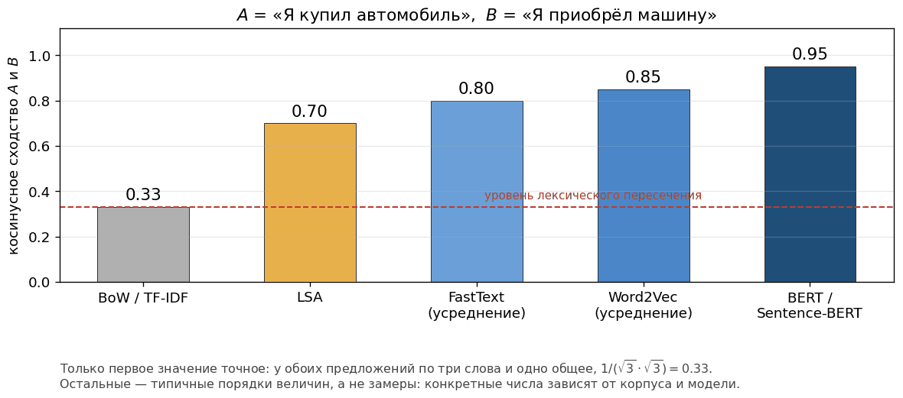
Та же таблица столбиками, отсортированная по возрастанию: серый BoW/TF-IDF — 0.33, дальше LSA 0.70, FastText 0.80, Word2Vec 0.85 и BERT/Sentence-BERT 0.95. Красная пунктирная линия отмечает уровень чисто лексического пересечения — всё, что выше неё, модель добавила от себя, из статистики контекстов. Точное здесь только первое число, остальные — типичные порядки величин, а не замеры; смотреть надо на направление, а не на конкретный столбик. Типичная ошибка при эксперименте: «мы попробовали TF-IDF и Word2Vec, Word2Vec оказался лучше». Такой вывод почти всегда некорректен, потому что вместе с векторизатором менялось что-то ещё.
Чтобы сравнение было честным, зафиксируйте: одинаковое разбиение на train/test, одинаковую модель поверх признаков, одинаковый подбор гиперпараметров и одинаковую предобработку — с оговоркой, что классическим методам лемматизация нужна, а трансформерам вредна. И обязательно замерьте разброс по нескольким сидам: разница в 1–2 процентных пункта обычно лежит внутри шума.
- Мало данных, важна интерпретируемость, домен с чёткой терминологией $\to$ TF-IDF + логистическая регрессия. Это бейзлайн, который нужно побить, а не пропустить.
- Поиск по документам без GPU $\to$ BM25.
- Нужны эмбеддинги слов, язык флективный или текст шумный $\to$ FastText.
- Нужны эмбеддинги слов, английский, есть готовые предобученные $\to$ GloVe или Word2Vec.
- Нужно связать синонимы в документном поиске дёшево $\to$ LSA (
TruncatedSVDповерх TF-IDF). - Нужен смысл в контексте, многозначность, качество любой ценой $\to$ ни один из классических методов не подойдёт, нужен BERT-подобный энкодер.
Частая ошибка на собеседовании — сказать «TF-IDF и BM25 устарели, сейчас все используют трансформеры». Это неверно:
- BM25 — стандартная первая ступень в промышленных поисковых системах и в RAG-пайплайнах, и плотные ретриверы его дополняют, а не заменяют;
- TF-IDF + линейная модель обучается за секунды на CPU и на узких доменах нередко идёт вровень с дообученным трансформером;
- классические методы не требуют GPU, легко объясняются заказчику и не деградируют молча при смене домена.
Правильная формулировка: трансформеры выигрывают там, где важен смысл и контекст; классика — там, где важны скорость, точное лексическое совпадение и интерпретируемость.
Ни один метод из таблицы не учитывает контекст конкретного предложения:
- документные методы (BoW, TF-IDF, BM25) работают с мешком слов и теряют порядок;
- словные методы (Word2Vec, GloVe, FastText) дают слову один фиксированный вектор навсегда.
Поэтому все они одинаково беспомощны там, где смысл определяется расстановкой слов: «собака укусила человека» против «человек укусил собаку», «замок на двери» против «замок на холме», «не рекомендую» против «рекомендую». Именно это и стало причиной перехода к контекстным моделям.
По каким осям различаются классические векторизаторы?
По тому, что векторизуется (слово или документ), откуда берутся числа (подсчёт частот или обучение градиентным спуском) и каким получается вектор (разреженный длиной в размер словаря или плотный из нескольких сотен чисел). Эти три оси описывают любой метод от one-hot до FastText.
Какой общий недостаток у всех классических векторизаторов от One-hot до FastText?
Ни один не моделирует контекст конкретного предложения: документные методы работают с мешком слов и теряют порядок, словные дают слову один фиксированный вектор независимо от окружения. Поэтому многозначность не разрешается, а «собака укусила человека» и «человек укусил собаку» получают одинаковые представления.
Чем плотные представления практически отличаются от разреженных?
Разреженные (one-hot, BoW, TF-IDF, BM25) имеют размерность в размер словаря, требуют sparse-хранения, зато интерпретируемы — каждая координата это конкретное слово. Плотные (LSA, Word2Vec, GloVe, FastText) фиксированной размерности 50–300, координаты по отдельности бессмысленны, зато синонимы оказываются близки и векторы удобны для нейросетей и поиска ближайших соседей.
Чем GloVe отличается от Word2Vec и от LSA?
GloVe использует глобальную статистику корпуса — явную матрицу совстречаемости, как LSA, — но получает векторы градиентным спуском, как Word2Vec, а не разложением матрицы. От Word2Vec он отличается тем, что видит корпус целиком, а не через локальное окно; от LSA — тем, что оптимизирует нелинейно взвешенную МНК-задачу вместо линейного разложения.
В каких случаях TF-IDF предпочтительнее эмбеддингов для классификации текстов?
При малом датасете, коротких текстах и в доменах с чёткой терминологией (медицина, юриспруденция, техподдержка), где важно точное лексическое совпадение. TF-IDF даёт интерпретируемые признаки, обучается за секунды на CPU и не требует предобученной модели, а по качеству нередко идёт вровень с трансформером на узком домене.
Почему FastText лучше Word2Vec для морфологически богатых языков?
FastText строит эмбеддинг как сумму векторов символьных $n$-грамм, поэтому словоформы одной леммы разделяют корневые $n$-граммы и автоматически получают близкие векторы. Word2Vec обучал бы «читать», «читаю», «прочитанный» как три независимых слова, размазывая статистику по формам, и не смог бы обработать словоформу, отсутствовавшую в корпусе.
Когда имеет смысл использовать BM25 вместо нейросетевых эмбеддингов для поиска?
Когда важны точные термины, артикулы, коды ошибок и имена собственные — то, что плотные модели плохо обобщают, — а также когда нужны скорость, отсутствие GPU и простота развёртывания. На практике BM25 обычно не противопоставляют эмбеддингам, а комбинируют с ними в гибридном поиске: BM25 как первая ступень, плотный ретривер параллельно, затем переранжирование.
-
Оценка качества эмбеддингов
Эмбеддинги обучаются на вспомогательной задаче (предсказать контекст, восстановить счётчик), которая нас не интересует. Поэтому значение функции потерь ничего не говорит о том, хорошие ли получились векторы, и качество приходится измерять отдельно.
Идеальный критерий формулируется просто: похожие по смыслу объекты должны иметь близкие векторы, непохожие — далёкие. Всё многообразие методов оценки — это разные способы проверить, выполняется ли это.
- Внутренняя оценка (intrinsic) — проверяем свойства самих векторов, без прикладной задачи: соответствие человеческим оценкам похожести, аналогии, визуализация.
- Внешняя оценка (extrinsic) — подставляем эмбеддинги в реальную задачу и смотрим метрики этой задачи.
Внутренняя дешёвая и быстрая, но плохо предсказывает пользу. Внешняя дорогая, но единственная, которая по-настоящему отвечает на вопрос «стоит ли брать эти векторы».
Внешняя оценка (downstream)
Downstream-задача (буквально «задача ниже по течению») — та прикладная задача, ради которой всё затевалось. Термин появился из-за двухэтапной схемы: сначала модель обучается на большой общей задаче (pretraining, выше по течению), затем её представления используются в конкретной прикладной (downstream, ниже по течению).
Пример: взяли классификатор, обученный на ImageNet, и дообучили на своём датасете дефектов на производстве. ImageNet — upstream, классификация дефектов — downstream.
- Берём корпус, предобрабатываем (токенизация, лемматизация — если метод этого требует).
- Векторизуем одним из способов (TF-IDF, Word2Vec, GloVe, FastText, эмбеддинги BERT).
- Подаём векторы в модель, решающую целевую задачу: логистическую регрессию для классификации, kNN для поиска, CRF для NER.
- Смотрим метрики целевой задачи: Precision, Recall, F1, ROC AUC для классификации; MSE для регрессии; Precision@K, NDCG для поиска.
- Повторяем шаги 2–4 для каждого кандидата при одинаковых остальных условиях и сравниваем.
Ключевое требование — шаг 5: сравнивать эмбеддинги можно только при фиксированной модели, фиксированном разбиении и фиксированных гиперпараметрах. Иначе вы сравните не векторы, а везение при подборе.
Разные задачи опираются на разные свойства представлений:
- тональность требует, чтобы «хороший» и «плохой» были далеко — а дистрибутивные методы, наоборот, сближают антонимы;
- NER требует синтаксической и морфологической информации — тут выигрывают маленькие окна и символьные $n$-граммы;
- тематический поиск требует, чтобы «врач» и «больница» были рядом, — тут нужны большие окна.
Поэтому фразы «эмбеддинги X лучше эмбеддингов Y» без указания задачи бессмысленны. Всегда уточняйте: лучше на чём.
Внутренняя оценка
Самый распространённый intrinsic-метод. Берётся размеченный людьми набор пар слов с оценками похожести по шкале, например от 0 до 10:
Пара Оценка людей tiger — cat 7.35 computer — keyboard 7.62 noon — string 0.54 Для каждой пары считают косинусное сходство эмбеддингов, а затем ранговую корреляцию Спирмена между машинными и человеческими оценками. Ранговую, а не обычную, потому что важен порядок пар по похожести, а не совпадение абсолютных чисел.
Стандартные наборы: WordSim-353, SimLex-999, MEN, для русского — RuSimLex и наборы RUSSE.
WordSim-353 и SimLex-999 измеряют разные вещи, и путать их — типичная ошибка:
- Relatedness (связанность) — «врач» и «больница» связаны, хотя это не одно и то же. Так размечен WordSim-353.
- Similarity (похожесть) — «врач» и «хирург» похожи, они взаимозаменяемы. Так размечен SimLex-999.
Дистрибутивные методы по построению ловят связанность лучше, чем похожесть, поэтому результаты на WordSim-353 обычно заметно выше, чем на SimLex-999. Сравнивать числа между этими наборами нельзя.
Второй классический intrinsic-тест. Вопрос вида «$a$ относится к $b$ как $c$ относится к ?» решается поиском ближайшего вектора к $v_b - v_a + v_c$:
$$ \text{Москва} - \text{Россия} + \text{Германия} \approx \text{Берлин}. $$
Стандартный датасет — Google Analogy Test Set: около 19 тысяч вопросов, разделённых на семантические (столицы, валюты, семейные отношения) и синтаксические (множественное число, степени сравнения, времена глаголов). Метрика — доля правильных ответов.
Три причины относиться к ним осторожно:
- Скрытая подгонка. При поиске ближайшего соседа стандартная реализация исключает слова $a$, $b$, $c$ из кандидатов. Без этого исключения ответом часто оказывается одно из них, и точность обваливается — то есть часть «успеха» обеспечена самой процедурой оценки.
- Смещение к частым словам. На редких словах и вне английского точность падает резко.
- Слабая связь с пользой. Модель, выигравшая на аналогиях, может проиграть на реальной классификации.
Аналогии полезны как быстрая проверка, что обучение вообще сработало, но не как критерий выбора модели.
Эмбеддинги имеют размерность в сотни, поэтому напрямую их не посмотреть. Их проецируют в 2D или 3D методами снижения размерности и разглядывают структуру:
- PCA — линейная проекция на направления максимальной дисперсии. Быстрая, детерминированная, честно сохраняет глобальную геометрию, но часто «сминает» близкие кластеры.
- t-SNE — нелинейный метод, сохраняющий локальные соседства. Отлично разделяет кластеры, но глобальные расстояния на картинке недостоверны.
- UMAP — быстрее t-SNE, лучше сохраняет глобальную структуру, стал стандартом по умолчанию.

Проекция эмбеддингов предложений на двумерное пространство ($\R^2$) с помощью t-SNE 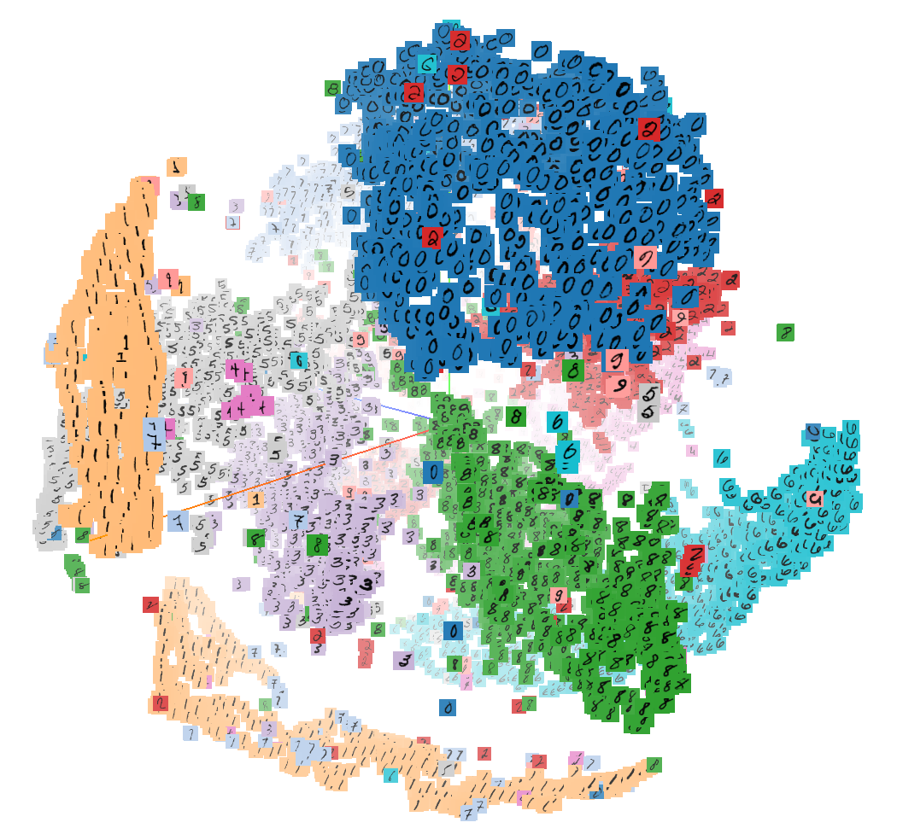
Проекция эмбеддингов изображений цифр (MNIST) в $\R^3$ 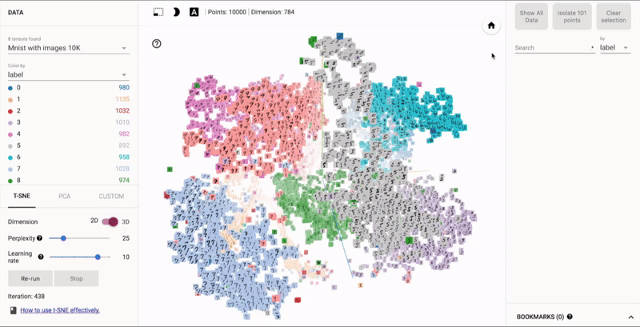
Проекция эмбеддингов изображений цифр (MNIST) в $\R^3$, интерактивная визуализация. Видно, что разные цифры находятся близко друг к другу и образуют кластеры в пространстве. t-SNE и UMAP — методы с гиперпараметрами (perplexity, n_neighbors, min_dist) и случайной инициализацией. Меняя их, легко получить и красиво разделённые кластеры, и кашу — на одних и тех же данных.
Кроме того, расстояния между кластерами на картинке t-SNE не имеют смысла: два кластера, нарисованные рядом, могут быть далеко в исходном пространстве. Визуализация — инструмент разведки и коммуникации, а не измерения. Вывод «эмбеддинги хорошие, вот же кластеры» без числовой метрики некорректен.
Самая дешёвая проверка адекватности, которую стоит делать всегда: взять 10–20 слов из своего домена и посмотреть их ближайших соседей по косинусу.
Если у «кофемашины» в соседях «кофеварка», «эспрессо», «бариста» — векторы обучились. Если там случайные редкие слова или сплошные опечатки — что-то не так: слишком маленький корпус, слишком мало эпох, неудачный
min_count.Занимает пять минут и ловит большинство грубых проблем до того, как вы потратите день на downstream-эксперименты.
Для эмбеддингов предложений и документов сложился общепринятый бенчмарк — MTEB (Massive Text Embedding Benchmark): более 50 датасетов, сгруппированных по задачам — поиск, кластеризация, классификация, семантическое сходство (STS), переранжирование, суммаризация.
Смысл в том, что одна модель проверяется сразу на многих задачах, и видно, где она сильна, а где проседает. Публичный лидерборд MTEB — практический способ выбрать модель эмбеддингов под свою задачу, а не по маркетингу.
Всё описанное применимо к эмбеддингам предложений, документов, изображений, аудио и товаров. Меняются только датасеты и задачи: для предложений — STS-бенчмарки, для изображений — retrieval и классификация, для товаров — метрики рекомендаций.
Поиграться с эмбеддингами интерактивно можно в Embedding Projector.
Почему качество эмбеддингов нельзя оценить по функции потерь обучения?
Эмбеддинги обучаются на вспомогательной задаче (предсказать контекст, восстановить счётчик совстречаемости), которая сама по себе не нужна. Низкое значение потерь означает лишь, что модель хорошо решает эту вспомогательную задачу, а не что векторы полезны для прикладной. Поэтому качество измеряют отдельно.
Какие два основных подхода к оценке качества эмбеддингов существуют?
Внутренняя (intrinsic) оценка проверяет свойства самих векторов: корреляцию с человеческими оценками похожести, точность на аналогиях, визуализацию через PCA/t-SNE/UMAP. Внешняя (extrinsic) оценка подставляет эмбеддинги в реальную downstream-задачу и измеряет её метрики. Первая дешевле, вторая честнее.
Что такое downstream-задача?
Прикладная задача, ради которой используются представления, — в противоположность upstream-задаче предобучения. Например, модель предобучена на предсказании токенов по большому корпусу (upstream), а затем её эмбеддинги используются для классификации обращений в поддержку (downstream). Качество на downstream — основной индикатор ценности эмбеддингов.
Как устроена оценка через корреляцию с человеческими оценками?
Берут размеченный людьми набор пар слов с оценками похожести (WordSim-353, SimLex-999, MEN), считают косинусное сходство эмбеддингов для каждой пары и вычисляют ранговую корреляцию Спирмена между машинными и человеческими рядами. Ранговую, потому что важен порядок пар по похожести, а не совпадение абсолютных значений.
В чём разница между similarity и relatedness при оценке?
Relatedness — связанность: «врач» и «больница» связаны, хотя не взаимозаменяемы (так размечен WordSim-353). Similarity — похожесть: «врач» и «хирург» взаимозаменяемы (так размечен SimLex-999). Дистрибутивные методы по построению лучше ловят связанность, поэтому результаты на этих наборах не сопоставимы между собой.
Почему точность на аналогиях — ненадёжная метрика?
Стандартная процедура исключает три слова запроса из кандидатов, и без этого исключения точность резко падает — то есть часть успеха обеспечена самой оценкой. Кроме того, точность сильно смещена к частым словам и английскому языку и слабо коррелирует с пользой на реальных задачах. Аналогии годятся как быстрая проверка, что обучение сработало, но не как критерий выбора модели.
Почему визуализацию t-SNE нельзя считать доказательством качества?
t-SNE и UMAP зависят от гиперпараметров и случайной инициализации, поэтому на одних и тех же данных можно получить и чёткие кластеры, и кашу. Кроме того, t-SNE сохраняет только локальные соседства: расстояния между кластерами на картинке недостоверны. Визуализация — инструмент разведки и коммуникации, а не измерения.
Как оценить эмбеддинги в задачах семантического поиска?
Метриками ретривала: Precision@K, Recall@K, MRR (средний обратный ранг первого релевантного результата), NDCG (учитывает и релевантность, и позицию). Проверяют, насколько хорошо поиск ближайших соседей в векторном пространстве находит действительно релевантные документы. Для эмбеддингов предложений сложился общий бенчмарк MTEB, объединяющий поиск, кластеризацию, классификацию и STS.
-
Анализ и интерпретация
Семантическое пространство — многомерное пространство, в котором расположены векторы слов и в котором геометрические отношения соответствуют смысловым: близкие по смыслу слова находятся рядом, а систематические смысловые отличия выражаются одинаковыми сдвигами.
Простыми словами: это карта смыслов, где расстояние означает «насколько слова похожи», а направление — «чем именно они отличаются».
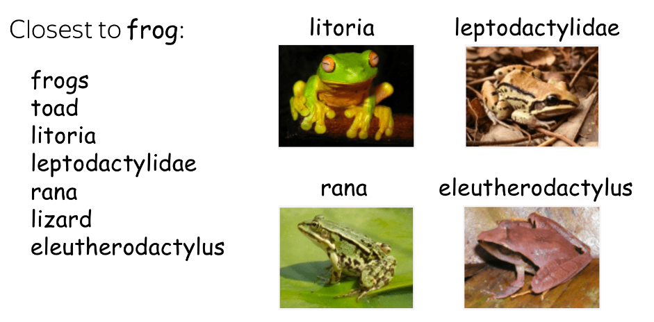
Несколько ближайших слов к запросу жаба. Соседство по косинусному сходству — самый прямой способ увидеть, что пространство осмысленно: рядом оказываются слова одной семантической группы.Близость в семантическом пространстве почти всегда считают косинусным сходством:
$$ \cos(\mathbf{u}, \mathbf{v}) = \frac{\mathbf{u}^{\top}\mathbf{v}}{\|\mathbf{u}\|\,\|\mathbf{v}\|}. $$
Косинус смотрит только на угол между векторами и игнорирует их длину. Это важно, потому что длина вектора у Word2Vec и GloVe сильно коррелирует с частотой слова в корпусе: частые слова получают длинные векторы просто из-за большего числа обновлений.
Если использовать евклидово расстояние, эта частотность попадёт в измерение сходства и исказит его. Косинус от неё избавлен: он спрашивает «в одном ли направлении смотрят эти слова», а не «одинаковой ли они величины».
Линейные структуры
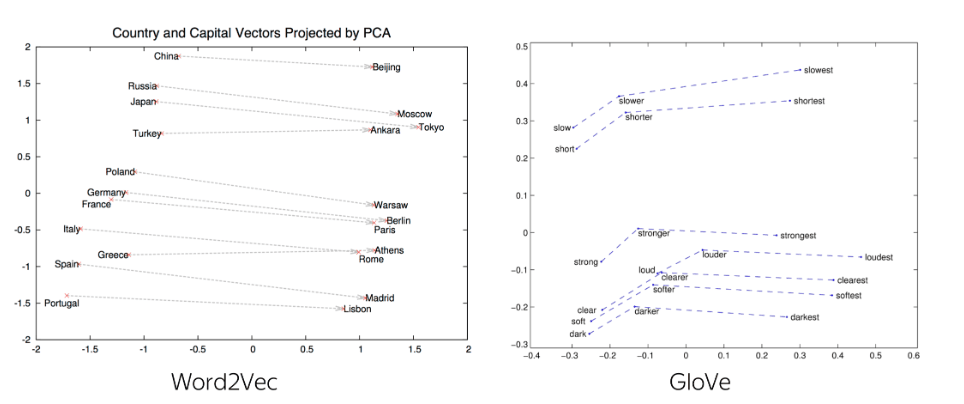
Семантическая близость слов кодируется линейными структурами в семантическом пространстве. Мы видим, что эмбеддинги Word2Vec и GloVe кодируют семантические отношения между словами так, что если мы выберем какое-то подмножество слов (например, Russia,Germany) и передвинемся в примерно одном направлении, то мы получим слова, которые также будут близки друг к другу:Moscow,Berlin— в данном случае мы двинулись в направлении, которое в семантическом пространстве соответствует 'столице'.Наблюдение, что $v_{\text{Москва}} - v_{\text{Россия}} \approx v_{\text{Берлин}} - v_{\text{Германия}}$, выглядит почти магически. Объяснение при этом вполне земное.
Вспомним, что скалярное произведение векторов приближает $\log$ отношения вероятностей совстречаемости (это прямо заложено в GloVe и неявно — в Word2Vec). Разность векторов, соответственно, приближает разность логарифмов, то есть логарифм отношения:
$$ v_{\text{Москва}} - v_{\text{Россия}} \ \leftrightarrow\ \log \frac{P(\cdot \mid \text{Москва})}{P(\cdot \mid \text{Россия})}. $$
Пара «Москва/Россия» отличается по контекстам примерно так же, как «Берлин/Германия»: в обоих случаях первое слово чаще встречается с «мэр», «центр города», «метро», а второе — с «граница», «экономика», «население». Раз профили отличий совпадают, совпадают и разности векторов. Линейность отношений — это следствие того, что векторы кодируют логарифмы частот.
Знак $\approx$ в этих формулах — не вежливость, а существенная оговорка:
- полученный вектор $v_b - v_a + v_c$ почти никогда не совпадает с целевым точно, ответ ищут как ближайшего соседа;
- часто ближайшим оказывается одно из слов запроса, поэтому их принудительно исключают из кандидатов;
- на редких словах, на неевропейских языках и на абстрактных отношениях («причина», «следствие») точность резко падает;
- для многозначных слов направление вообще не определено — вектор усредняет несколько смыслов.
Правильная формулировка: отношения кодируются направлениями достаточно последовательно, чтобы это было видно, но недостаточно точно, чтобы на этом строить рассуждения.
Между языками
Ещё одно наблюдение, более сильное и более полезное. Если построить эмбеддинги независимо для английского и для русского — на разных корпусах, без всякой связи между ними, — то получившиеся облака точек окажутся похожими по геометрии.
Причина проста: отношения между понятиями в языках примерно одинаковы, потому что описывают один и тот же мир. Кластер животных, кластер чисел, направление «страна $\to$ столица», направление «единственное $\to$ множественное число» существуют в обоих пространствах, просто повёрнуты и растянуты по-разному.
Отсюда следует, что одно пространство можно линейно отобразить в другое: найти матрицу $W$ такую, что $W v^{\text{en}}_{\text{cat}} \approx v^{\text{ru}}_{\text{кот}}$ для большинства слов.
Классический подход (Mikolov et al., 2013):
- Берут небольшой словарь-затравку — 1–5 тысяч пар известных переводов.
- Решают задачу наименьших квадратов: $\min_W \sum_i \|W v^{\text{src}}_i - v^{\text{tgt}}_i\|^2$.
- Полученную $W$ применяют ко всем словам исходного языка и ищут ближайшего соседа в целевом пространстве — так получаются переводы слов, которых не было в затравке.
Позже показали, что $W$ полезно ограничить ортогональной матрицей (то есть разрешить только поворот, запретив растяжения) — это даёт заметно более устойчивые результаты (метод Прокруста).
Развитие идеи привело к неожиданному результату: отображение между языками можно найти без словаря-затравки вообще, опираясь только на форму облаков точек. Методы вроде MUSE подгоняют распределения состязательно (adversarial), а затем уточняют результат итеративным Прокрустом.
Практический смысл огромен: для сотен языков параллельных корпусов почти нет, а сырого текста хватает. Unsupervised-выравнивание эмбеддингов стало одним из путей к машинному переводу для таких языков.
Метод хорошо работает для близких языков со схожей культурой и хуже — там, где расходятся сами понятия:
- разная лексическая структура: в одном языке одно слово, в другом — три разных («синий/голубой» против английского
blue); - разные домены корпусов: эмбеддинги, обученные на Википедии и на твитах, плохо выравниваются даже внутри одного языка;
- типологически далёкие языки: английский и китайский выравниваются заметно хуже, чем английский и немецкий.
Само предположение об изоморфности пространств выполняется лишь приближённо и тем хуже, чем дальше языки друг от друга.
Три вывода, которые стоит унести:
- Косинус — правильная мера для эмбеддингов; евклидово расстояние тянет за собой частотность слов.
- Ближайшие соседи — главный инструмент отладки. Пять минут разглядывания соседей своих доменных слов заменяют часы гадания.
- Линейность — полезная эвристика, а не закон. Она объясняет, почему эмбеддинги переносятся между задачами и языками, но не даёт гарантий на конкретном примере.
Что такое семантическое пространство?
Многомерное пространство векторов слов, в котором геометрия соответствует смыслу: близкие по значению слова расположены рядом, а систематические смысловые отличия выражаются одинаковыми векторными сдвигами. Расстояние отвечает на вопрос «насколько похожи», направление — «чем именно отличаются».
Почему близость эмбеддингов измеряют косинусом, а не евклидовым расстоянием?
Косинус учитывает только угол между векторами и игнорирует их длину. У Word2Vec и GloVe длина вектора сильно коррелирует с частотой слова в корпусе (частые слова получают больше обновлений), поэтому евклидово расстояние смешивало бы смысловое сходство с частотностью. Косинус от этого артефакта свободен.
Почему взаимоотношения между словами в пространстве эмбеддингов (почти) линейны?
Скалярное произведение векторов приближает логарифм отношения вероятностей совстречаемости, поэтому разность векторов соответствует логарифму отношения контекстных профилей. Пары «Москва/Россия» и «Берлин/Германия» отличаются по контекстам одинаково, значит, и разности их векторов совпадают. Линейность — следствие того, что векторы кодируют логарифмы частот.
Насколько точна эта линейность?
Приблизительно. Вектор $v_b - v_a + v_c$ почти никогда не совпадает с целевым точно — ответ ищется как ближайший сосед, причём слова запроса приходится исключать из кандидатов. На редких словах, неевропейских языках, абстрактных отношениях и многозначных словах точность резко падает. Это устойчивая эвристика, а не надёжный механизм вывода.
Как семантические пространства разных языков связаны между собой?
Они приблизительно изоморфны: отношения между понятиями схожи, потому что языки описывают один и тот же мир, поэтому облака точек похожи по форме и различаются в основном поворотом и масштабом. Существует линейное отображение $W$, переводящее одно пространство в другое так, что переводные пары оказываются рядом.
Как находят межъязыковое отображение?
Классически — по небольшому словарю-затравке из 1–5 тысяч известных пар переводов решают задачу наименьших квадратов $\min_W \sum_i \|W v^{\text{src}}_i - v^{\text{tgt}}_i\|^2$, ограничивая $W$ ортогональной матрицей (метод Прокруста), а затем применяют её ко всем словам. Существуют и полностью unsupervised-методы (MUSE), выравнивающие пространства состязательно, вообще без параллельных данных.
Где межъязыковое выравнивание работает плохо?
Там, где нарушается предположение об изоморфности пространств: у типологически далёких языков (английский и китайский против английского и немецкого), при разной лексической структуре («синий/голубой» против
blue) и при обучении эмбеддингов на разных доменах — корпус Википедии и корпус твитов плохо выравниваются даже внутри одного языка.Как это свойство используется в NLP-задачах?
Для построения мультиязычных эмбеддингов, переноса моделей между языками (обучили классификатор на английском — применили на русском) и для машинного перевода в условиях, когда параллельных корпусов нет. Именно это направление сделало возможным NLP для сотен низкоресурсных языков.
-
Классификация текстов
Классификация текстов — задача сопоставить тексту одну метку из заранее известного конечного набора.
Формально: вход — документ $x = (x_1, \dots, x_n)$, состоящий из токенов $x_i$; выход — метка $y \in \{1, \dots, k\}$. Модель обучается на коллекции пар «текст — правильная метка».
Простыми словами: разложить тексты по заранее подписанным корзинам. Набор корзин фиксирован и определён до обучения — этим классификация отличается, например, от кластеризации (где корзины ищутся сами) и от NER (где ответом является фрагмент текста, а не метка).
- Спам-фильтр: письмо $\to$ {спам, не спам}. Бинарная классификация.
- Тональность отзыва: текст $\to$ {негатив, нейтрально, позитив}. Многоклассовая.
- Маршрутизация обращений: обращение в поддержку $\to$ {оплата, доставка, возврат, техническая проблема}. Многоклассовая, часто с сильным дисбалансом.
- Рейтинг по отзыву: отзыв на фильм $\to$ оценка от 1 до 5. Формально многоклассовая, но метки упорядочены, и это стоит учитывать: ошибиться на «5 вместо 4» гораздо мягче, чем «5 вместо 1».
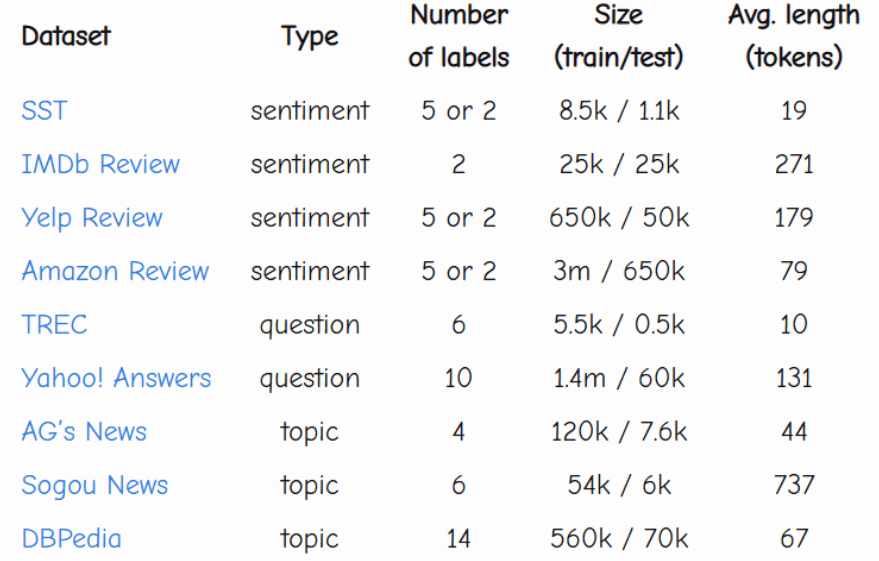
Типичный датасет для классификации: колонка с сырым текстом и колонка с меткой класса. Всё остальное — признаки — модель должна извлечь сама. Датасет — это две колонки: текст и метка. Важно, что никаких признаков в нём нет — их извлечение полностью на нашей стороне, и именно там принимаются главные решения.
Структура классификатора
Любой текстовый классификатор, от наивного Байеса до дообученного BERT, раскладывается на две части:
- Feature extractor (извлечение признаков) — превращает текст в вектор чисел. Может быть задан вручную (TF-IDF, BoW, счётчики n-грамм) или обучен (эмбеддинги, слои нейросети).
- Классификатор — по вектору выдаёт распределение вероятностей по классам. Логистическая регрессия, Naive Bayes, SVM, MLP или линейный слой поверх трансформера.
Полезно держать это разделение в голове: когда качество плохое, вопрос всегда «признаки не те» или «модель поверх признаков не та», и это два разных направления работы.
- Текст токенизируется — разбивается на единицы.
- Токены превращаются в векторы (эмбеддинги или разреженные признаки).
- Векторы проходят через модель (forward pass).
- На выходе получаются логиты — сырые числа, ещё не вероятности; они могут быть любого знака и любой величины.
- К логитам применяется softmax (многоклассовая задача) или sigmoid (бинарная / multilabel) — получаются вероятности.
- Из вероятностей берётся класс: argmax или сравнение с порогом.
Разница в предположении о том, могут ли классы сосуществовать.
Softmax превращает вектор логитов $z \in \mathbb{R}^k$ в распределение:
$$ p_i = \frac{e^{z_i}}{\sum_{j=1}^{k} e^{z_j}}, \qquad \sum_i p_i = 1. $$
Сумма равна единице по построению, а значит, повышение вероятности одного класса автоматически понижает остальные. Это ровно то, что нужно для взаимоисключающих классов: текст либо про доставку, либо про оплату.
Sigmoid обрабатывает каждый логит независимо:
$$ p_i = \frac{1}{1 + e^{-z_i}}, $$
и вероятности между собой не связаны. Для одного бинарного решения этого достаточно, а для нескольких одновременно возможных меток — необходимо (см. вопрос про multilabel).
Две отдельные ловушки, которые часто путают.
- Логит — это не вероятность. Число $z = 4.2$ не означает «уверенность 4.2»; смысл появляется только после softmax/sigmoid, и то относительный.
- Даже после softmax вероятность может врать. Нейросети склонны к переуверенности: модель выдаёт 0.99 там, где реально права в 85% случаев. Если вероятность используется для принятия решения (отправить обращение оператору при неуверенности), её нужно калибровать — например, температурным шкалированием или Platt scaling — и проверять калибровочной кривой.
Выбор модели
- Логистическая регрессия поверх TF-IDF — стандартный первый бейзлайн: обучается за секунды, интерпретируема (веса прямо показывают, какие слова толкают в какой класс), не переобучается при разумной регуляризации.
- Naive Bayes — ещё быстрее, работает даже на очень маленьких выборках, но опирается на заведомо ложное предположение о независимости слов.
- SVM с линейным ядром — исторически сильнейший результат на разреженных текстовых признаках; хорошо себя ведёт при высокой размерности и малом числе примеров.
- Градиентный бустинг — на разреженных текстовых признаках обычно проигрывает линейным моделям, хотя на табличных данных выигрывает. Причина в том, что деревья плохо работают с тысячами разреженных бинарных признаков.
Три причины, и все существенные.
- Контекст. Классические признаки — мешок слов; BERT видит порядок и синтаксис, поэтому различает «не рекомендую» и «рекомендую», «товар хороший, доставка плохая» и наоборот.
- Перенос знаний. BERT предобучен на миллиардах слов и уже «знает» язык: морфологию, синонимию, типичные конструкции. Дообучение только настраивает эти знания под задачу, поэтому хватает 1–5 тысяч размеченных примеров там, где TF-IDF потребовал бы десятки тысяч.
- Субсловная токенизация. Незнакомые слова не выпадают, а раскладываются на знакомые куски.
Цена — GPU для обучения и инференса, десятки миллисекунд на запрос вместо микросекунд и потеря прямой интерпретируемости.
Ситуация Разумный выбор Меньше ~1000 размеченных примеров TF-IDF + логистическая регрессия; либо zero-/few-shot через LLM 1000–10000 примеров, есть GPU дообученный BERT-подобный энкодер Очень много данных, жёсткие требования к latency дистиллированная модель или FastText в режиме supervisedНужна интерпретируемость перед аудитом линейная модель поверх понятных признаков Классов сотни, разметки почти нет эмбеддинги + kNN, либо LLM с описанием классов в промпте И в любом случае: сначала бейзлайн, потом трансформер. Без бейзлайна невозможно понять, что дало улучшение — модель или просто больше данных.
Практические проблемы
В реальных задачах классы почти никогда не сбалансированы: спама 2%, брака 0.5%, обращений про возврат — 40%.
Что с этим делать:
- не смотреть на accuracy — модель, всегда отвечающая «не спам», даст 98% и будет бесполезна;
- смотреть на precision, recall, F1 по редкому классу и на PR-AUC;
- использовать веса классов в функции потерь (
class_weight='balanced') вместо агрессивного oversampling, который на текстах легко приводит к запоминанию; - подбирать порог по валидации под нужный баланс ошибок, а не оставлять 0.5 по умолчанию.
Специфичная для текстов ловушка. Реальные корпуса полны почти-дубликатов: пересланные письма, шаблонные обращения, скопированные отзывы. Если случайно разбить такой датасет на train и test, один и тот же текст попадёт в обе части, и метрика на тесте будет фантастической, а в проде — обычной.
Лечение: дедупликация до разбиения (по точному совпадению, по нормализованному тексту, по MinHash/шинглам для near-duplicates) и группировка по источнику — если несколько текстов принадлежат одному пользователю или одному тикету, они должны попасть в одну часть.
Если два разметчика согласуются между собой в 80% случаев, никакая модель не покажет 95% — потолок задан данными.
Перед тем как чинить модель, стоит измерить согласованность разметки (Cohen's kappa, Krippendorff's alpha) и посмотреть глазами на 50 ошибок модели. Очень часто выясняется, что заметная часть «ошибок» — это ошибки разметки, а границы между двумя классами не определены в инструкции.
Что такое классификация текстов и из каких двух компонент состоит классификатор?
Это задача присвоения тексту одной метки из заранее фиксированного конечного набора. Классификатор состоит из feature extractor (превращает текст в вектор — вручную заданные TF-IDF/BoW или обученные эмбеддинги) и собственно классификатора (логистическая регрессия, Naive Bayes, SVM, MLP, линейная голова поверх BERT).
Какова типичная схема классификации текста с нейросетью?
Текст токенизируется $\to$ токены превращаются в эмбеддинги $\to$ forward pass через сеть $\to$ сырые логиты $\to$ softmax (многоклассовая) или sigmoid (бинарная/multilabel) $\to$ argmax или сравнение с порогом $\to$ метка класса.
Почему softmax используется для многоклассовой, а sigmoid — для бинарной классификации?
Softmax нормирует выходы так, что они суммируются в единицу, то есть повышение вероятности одного класса автоматически понижает остальные — это соответствует взаимоисключающим классам. Sigmoid преобразует каждый логит в вероятность независимо, что нужно для одного бинарного решения или для нескольких одновременно возможных меток.
Чем логиты отличаются от вероятностей и почему это важно?
Логиты — сырые выходы модели, произвольные вещественные числа без вероятностного смысла; вероятности получаются только после softmax или sigmoid. Но и они могут быть плохо калиброваны: нейросети склонны к переуверенности и выдают 0.99 там, где правы в 85% случаев. Если вероятность используется в принятии решений, её нужно калибровать (температурное шкалирование) и проверять калибровочной кривой.
Какие классические ML-алгоритмы применяются для классификации текстов?
Логистическая регрессия поверх TF-IDF (быстра и интерпретируема — веса показывают вклад слов), линейный SVM (силён при высокой размерности и малой выборке), Naive Bayes (очень быстр, работает на крошечных данных). Градиентный бустинг на разреженных текстовых признаках обычно проигрывает линейным моделям, в отличие от табличных задач.
Как fine-tuning BERT улучшает классификацию по сравнению с классическими подходами?
BERT даёт контекстуальные представления (различает «не рекомендую» и «рекомендую»), переносит знания о языке из предобучения на миллиардах слов, из-за чего хватает 1–5 тысяч размеченных примеров вместо десятков тысяч, и не теряет незнакомые слова благодаря субсловной токенизации. Плата — GPU, большая задержка на инференсе и потеря прямой интерпретируемости.
Как правильно работать с дисбалансом классов в текстовой классификации?
Не использовать accuracy как метрику (постоянный ответ большинством даст 98% и будет бесполезен), смотреть precision/recall/F1 по редкому классу и PR-AUC, использовать веса классов в функции потерь вместо агрессивного oversampling, подбирать порог решения по валидации под нужный баланс ошибок вместо значения 0.5 по умолчанию.
Почему в текстовых задачах особенно опасны дубликаты при разбиении на train/test?
Реальные корпуса полны почти-дубликатов — пересланных писем, шаблонных обращений, скопированных отзывов. При случайном разбиении один и тот же текст попадает и в обучение, и в тест, метрика оказывается завышенной, а в продакшене качество резко падает. Нужна дедупликация до разбиения (в том числе near-duplicate через MinHash) и группировка по источнику или тикету.
-
Генеративные и дискриминативные модели
Пусть нужно по тексту $x$ определить класс $y$. Есть два принципиально разных пути.
- Дискриминативная модель учит условное распределение $p(y \mid x)$ — сразу отвечает на вопрос «какой класс у этого текста».
- Генеративная модель учит совместное распределение $p(x, y)$ — то есть моделирует, как вообще устроены пары «текст, класс», и уже из этого выводит ответ.
Простыми словами: дискриминативная модель учит границу между классами, генеративная — как выглядит каждый класс изнутри. Первая отвечает «это спам»; вторая умеет ещё и сказать «а вот так примерно выглядит типичное спам-письмо».
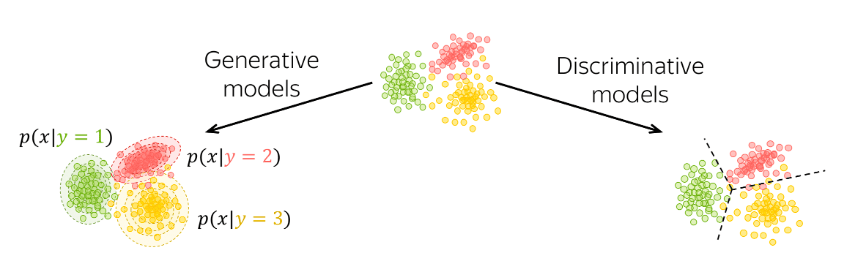
Слева генеративный подход: модель описывает, как распределены объекты каждого класса, и класс определяется тем, чьё описание лучше объясняет объект. Справа дискриминативный: моделируется только разделяющая граница, а само распределение объектов не интересует. Совместное распределение раскладывается по формуле умножения вероятностей:
$$ \underbrace{\textcolor{orange}{p(x, y)}}_{\text{совместное распределение}} = \underbrace{p(x \mid y)}_{\text{как выглядит текст класса } y} \cdot \underbrace{p(y)}_{\text{насколько часто класс } y \text{ вообще встречается}} $$
Разберём множители:
- $p(y)$ — априорная вероятность класса. Просто доля этого класса в обучающей выборке: если спама 3%, то $p(\text{спам}) = 0.03$.
- $p(x \mid y)$ — правдоподобие: насколько вероятно увидеть именно такой текст, если он относится к классу $y$. Именно эту часть модель и учит; она и делает подход «генеративным» — из $p(x \mid y)$ можно сэмплировать новые тексты класса $y$.
Предсказание делается перебором классов:
$$ \hat y = \arg\max_{k}\ \textcolor{orange}{p(x, y=k)} = \arg\max_k\ p(x \mid y=k)\, p(y=k). $$
То есть: какой класс лучше всего объясняет появление этого текста.
Здесь никакого разложения нет — модель напрямую параметризует
$$ \textcolor{magenta}{p(y \mid x)}, $$
и предсказание тривиально:
$$ \hat y = \arg\max_k\ \textcolor{magenta}{p(y = k \mid x)}. $$
Как выглядят сами тексты, модели безразлично: она может выучить, что слово «выигрыш» сдвигает предсказание в сторону спама, не имея ни малейшего представления о том, как устроен язык в целом.
Задача: письмо $\to$ {спам, не спам}. В выборке 3% спама.
Генеративный (Naive Bayes). Модель оценивает по обучающей выборке:
- $p(\text{спам}) = 0.03$, $p(\text{не спам}) = 0.97$;
- для каждого слова — вероятность встретить его в спаме и в неспаме: $p(\text{«выигрыш»} \mid \text{спам}) = 0.02$, $p(\text{«выигрыш»} \mid \text{не спам}) = 0.0001$.
Для нового письма перемножаются вероятности всех его слов при каждом классе, умножаются на априорную вероятность, и побеждает больший результат. Побочный продукт: из этой модели можно сгенерировать случайное «спам-письмо», насэмплировав слова.
Дискриминативный (логистическая регрессия). Модель выучивает вес для каждого слова: $w_{\text{выигрыш}} = +2.7$, $w_{\text{совещание}} = -1.4$. Для нового письма веса присутствующих слов складываются, и сигмоида превращает сумму в вероятность спама. Сгенерировать письмо этой моделью невозможно — она про генерацию ничего не знает.
Ключевой аргумент, который стоит уметь произнести: генеративная модель решает более сложную задачу, чем требуется.
Чтобы выучить $p(x \mid y)$, нужно описать распределение всех возможных текстов класса — а это пространство необъятно. Модель тратит на это ёмкость и делает упрощающие предположения (Naive Bayes, например, считает слова независимыми, что заведомо ложно). Эти предположения искажают в том числе и границу между классами.
Дискриминативная модель ничего не тратит на $p(x)$ — она сразу оптимизирует ровно ту величину, по которой её потом оценивают. Классический результат Ng & Jordan (2001): при большом объёме данных дискриминативная модель (логистическая регрессия) обгоняет свою генеративную пару (Naive Bayes), но на малых выборках генеративная сходится быстрее, потому что её предположения работают как регуляризация.
- Мало размеченных данных. Встроенные предположения о структуре данных заменяют недостающие примеры.
- Нужно порождать данные, а не только классифицировать: генерация текста, аугментация, синтетические данные.
- Нужно детектировать аномалии. Дискриминативная модель обязана отнести любой вход к одному из классов; генеративная может сказать «$p(x)$ мала — я такого никогда не видела».
- Классы добавляются на ходу. Генеративную модель можно расширить новым классом, обучив только $p(x \mid y_{\text{new}})$, не трогая остальные.
Генеративные Дискриминативные Naive Bayes Логистическая регрессия Скрытые марковские модели (HMM) Условные случайные поля (CRF) N-граммные языковые модели SVM GPT, LLaMA и другие LLM BERT с классификационной головой Обратите внимание на первые две строки: пары «Naive Bayes — логистическая регрессия» и «HMM — CRF» устроены совершенно одинаково по признакам и отличаются только тем, моделируется $p(x,y)$ или $p(y \mid x)$. Такие пары называют генеративно-дискриминативными.
GPT обучается предсказывать следующий токен, то есть моделирует
$$ p(x) = \prod_{t} p(x_t \mid x_{<t}). $$
Это распределение над текстами, а значит, из него можно сэмплировать — что и есть генерация. Никакой метки $y$ здесь может не быть вовсе: языковая модель генеративна в смысле «моделирует распределение данных», даже когда решает задачу без классов.
BERT, наоборот, обучен восстанавливать замаскированные токены и используется как энкодер: поверх него ставят голову, которая моделирует $p(y \mid x)$. Отсюда и практическое деление: GPT-подобные — для порождения, BERT-подобные — для понимания.
Источник постоянной путаницы:
- В классическом ML «генеративная модель» — это модель совместного распределения $p(x,y)$, противопоставленная $p(y \mid x)$. Naive Bayes генеративен, хотя ничего интересного не порождает.
- В разговоре про «генеративный ИИ» имеется в виду просто «модель, порождающая контент»: текст, изображения, звук.
Эти смыслы пересекаются, но не совпадают. На собеседовании по ML почти всегда спрашивают первый.
Одну и ту же LLM можно использовать в обоих режимах:
- как генеративную — попросить написать письмо;
- как дискриминативную — попросить «ответь одним словом: спам или не спам», и взять ответ как метку класса.
Более того, в промышленной классификации иногда сравнивают логарифмы вероятностей продолжений «спам» и «не спам» напрямую — это буквально $\arg\max_k p(y=k \mid x)$, вычисленный генеративной моделью. Но по устройству обучения LLM остаётся генеративной: она обучалась моделировать $p(x)$, а классификация — способ её применения.
В чём принципиальное различие между генеративными и дискриминативными моделями?
Генеративные моделируют совместное распределение $p(x,y) = p(x\mid y)p(y)$, то есть описывают, как устроены данные каждого класса, и потому умеют порождать новые примеры. Дискриминативные моделируют напрямую условное распределение $p(y\mid x)$ — только границу между классами, ничего не зная о том, как выглядят объекты.
Какую вероятность максимизирует каждый тип модели при классификации?
Генеративная выбирает $\hat y = \arg\max_k p(x, y=k) = \arg\max_k p(x \mid y=k)p(y=k)$, то есть класс, лучше всего объясняющий появление данного объекта. Дискриминативная — $\hat y = \arg\max_k p(y=k \mid x)$ напрямую.
Почему дискриминативные модели часто точнее на задачах классификации?
Они оптимизируют ровно ту величину, по которой их оценивают, и не тратят ёмкость на моделирование $p(x)$ — необъятного распределения всех возможных текстов. Генеративные вынуждены делать упрощающие предположения (например, независимость слов в Naive Bayes), и эти предположения искажают в том числе разделяющую границу.
Когда генеративный подход всё-таки предпочтительнее?
При малом объёме размеченных данных (встроенные предположения работают как регуляризация — результат Ng & Jordan, 2001), когда нужно порождать данные или делать аугментацию, при детекции аномалий (генеративная модель может сказать «такого я не видела», дискриминативная обязана выбрать класс) и когда классы добавляются на ходу без переобучения всей модели.
Что такое генеративно-дискриминативные пары?
Пары моделей, использующих одни и те же признаки и различающихся только тем, моделируется $p(x,y)$ или $p(y \mid x)$: Naive Bayes $\leftrightarrow$ логистическая регрессия, HMM $\leftrightarrow$ CRF. Сравнение внутри такой пары — классический способ увидеть чистый эффект выбора подхода.
Какие модели в NLP являются генеративными?
N-граммные языковые модели, Naive Bayes, скрытые марковские модели и все современные LLM (GPT, LLaMA), обучающиеся моделировать $p(x) = \prod_t p(x_t \mid x_{<t})$. Дискриминативные — логистическая регрессия, SVM, CRF, BERT с классификационной головой.
Почему языковая модель считается генеративной, даже если в задаче нет меток?
Потому что «генеративная» означает моделирование распределения самих данных, а не обязательно совместного распределения с меткой. GPT моделирует $p(x)$ — распределение над текстами, — и из него можно сэмплировать, что и есть генерация.
Могут ли современные LLM выступать и как генеративные, и как дискриминативные модели?
Да. GPT обучена генеративно, но её можно использовать дискриминативно — попросить выдать метку класса или напрямую сравнить вероятности продолжений «спам» / «не спам», что и есть $\arg\max_k p(y=k\mid x)$. BERT, наоборот, изначально предобучен как энкодер для дискриминативных задач, хотя его обучающая задача (восстановление замаскированных токенов) тоже вероятностная.
-
Multilabel классификация
- Бинарная классификация — два класса, объект относится к одному из них: спам / не спам.
- Multiclass (многоклассовая) — классов больше двух, но объект принадлежит ровно одному: тональность отзыва — негатив, нейтрально или позитив.
- Multilabel (многоярлычная) — объект может принадлежать любому подмножеству классов одновременно, включая пустое: у статьи могут быть теги «наука» и «технологии» сразу, а могут — ни одного из них.
Простыми словами: multiclass — это «выбери один вариант», multilabel — «отметь все подходящие».
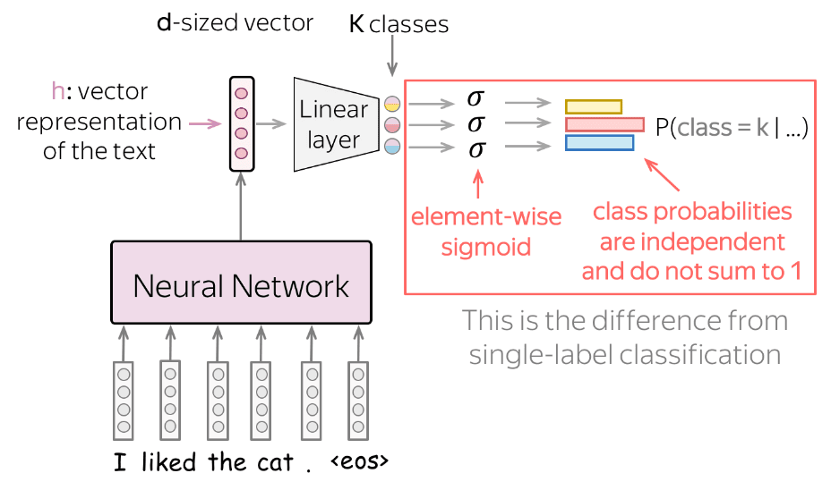
Слева multiclass: каждый объект попадает ровно в одну корзину, корзины не пересекаются. Справа multilabel: один объект может лежать сразу в нескольких корзинах. - Теги статьи: один текст может быть одновременно про «политику», «экономику» и «энергетику».
- Медицинские диагнозы по записи врача: у пациента может быть несколько диагнозов сразу, и это норма, а не исключение.
- Свойства отзыва: «жалоба на доставку» + «похвала товару» — обе метки истинны для одного текста.
- Модерация контента: сообщение может быть одновременно оскорбительным и содержащим угрозу.
Общий признак: метки не конкурируют друг с другом. Если вы ловите себя на мысли «а почему они должны исключать друг друга?» — перед вами multilabel.
Самый простой способ думать о multilabel — представить $K$ независимых бинарных классификаторов («это про политику? да/нет», «это про спорт? да/нет»), которые используют одно и то же представление текста.
Это не только интуиция, но и буквальная реализация: у модели общий энкодер и $K$ выходных нейронов, каждый со своей сигмоидой. Такой подход называется binary relevance.
Как обучать
Для multiclass к вектору логитов применяется softmax:
$$ p_i = \frac{e^{z_i}}{\sum_{j=1}^{K} e^{z_j}}. $$
Он превращает $K$ чисел в распределение вероятностей, суммирующееся в единицу. Ключевое свойство: вероятности связаны. Если один класс получил 0.9, на все остальные вместе остаётся 0.1 — модель физически не может быть уверена в двух классах сразу.
Для multilabel к каждому логиту применяется сигмоида по отдельности:
$$ p_i = \sigma(z_i) = \frac{1}{1 + e^{-z_i}}. $$
Никакой нормировки между классами нет: $p_i$ зависит только от $z_i$. Модель может выдать 0.9 для «политики» и 0.85 для «экономики» одновременно — и это корректный ответ, а не противоречие. Сумма вероятностей вообще не обязана равняться единице; она может быть и 0.05 (ни одна метка не подходит), и 3.2 (подходят несколько).
Если по инерции поставить softmax там, где метки не исключают друг друга, произойдёт следующее: модель, обученная на примере с двумя правильными метками, будет вынуждена разделить между ними единицу вероятности, то есть выдать по 0.5 каждой.
Дальше эти 0.5 не пройдут порог, и обе правильные метки будут потеряны. Чем больше меток у объекта, тем сильнее эффект: при пяти истинных метках каждая получит около 0.2.
Симптом на практике: модель уверенно предсказывает объекты с одной меткой и систематически «недобирает» на объектах с несколькими.
Используется бинарная кросс-энтропия (BCE), просуммированная по всем $K$ классам:
$$ \mathcal{L} = -\sum_{k=1}^{K} \Big( y_k \log p_k + (1 - y_k) \log (1 - p_k) \Big), $$
где $y_k \in \{0,1\}$ — истинная метка $k$-го класса (есть она у объекта или нет), $p_k = \sigma(z_k)$ — предсказанная вероятность.
Разбор формулы: для каждого класса в сумму попадает ровно одно слагаемое. Если $y_k = 1$, остаётся $-\log p_k$ — штраф за то, что модель не поставила высокую вероятность истинной метке. Если $y_k = 0$, остаётся $-\log(1 - p_k)$ — штраф за ложную. Классы складываются независимо, что и соответствует $K$ отдельным бинарным задачам.
Три класса: {политика, спорт, экономика}. Истина для статьи: $y = [1, 0, 1]$ — она про политику и экономику.
Модель выдала $p = [0.8,\ 0.1,\ 0.3]$.
$$ \mathcal{L} = -\big[\underbrace{1\cdot\log 0.8}_{-0.22} + \underbrace{0\cdot(\dots)}_{0} \big] - \big[\underbrace{0 \cdot (\dots)}_{0} + \underbrace{1\cdot\log 0.9}_{-0.11}\big] - \big[\underbrace{1\cdot \log 0.3}_{-1.20} + 0\big] = 0.22 + 0.11 + 1.20 = 1.53. $$
Основной вклад в потери дала «экономика»: модель поставила ей всего 0.3 при истинной метке 1. Именно на этот выходной нейрон придётся самый большой градиент.
Пороги и метрики
В multiclass метка берётся через argmax, и никакого порога не нужно. В multilabel метка ставится, если $p_k > \tau$, — и значение $\tau$ приходится выбирать.
Значение 0.5 по умолчанию почти всегда неоптимально, потому что классы имеют разную частоту. Редкий класс, встречающийся в 2% объектов, модель никогда не оценит выше 0.5 — и он не будет предсказан ни разу.
Правильный подход: подбирать порог для каждого класса отдельно по валидационной выборке, максимизируя F1 этого класса. Это дёшево и часто даёт больший прирост, чем смена архитектуры.
- Hamming Loss — доля неверно предсказанных ячеек в матрице «объекты $\times$ метки». Мягкая метрика: частично правильный ответ засчитывается частично.
- Subset accuracy (exact match) — доля объектов, у которых угадан весь набор меток целиком. Очень строгая: одна лишняя метка обнуляет пример.
- Micro-F1 — считает TP, FP, FN суммарно по всем классам и меткам. Даёт вес каждому решению, поэтому доминируется частыми классами.
- Macro-F1 — считает F1 для каждого класса отдельно и усредняет. Даёт равный вес каждому классу, поэтому редкие классы влияют так же, как частые.
Выбор между micro и macro — содержательное решение: micro отвечает на вопрос «сколько решений в среднем верны», macro — «одинаково ли хорошо модель работает на всех классах».
При сотне возможных тегов у типичного объекта их два-три. Значит, в матрице ответов более 97% ячеек — нули, и тривиальная модель «всегда предсказывай, что метки нет» получит отличный Hamming Loss.
Что с этим делать:
- никогда не оценивать multilabel по accuracy или Hamming Loss в одиночку — смотреть macro-F1 и per-class recall;
- взвешивать положительные примеры в BCE (
pos_weightв PyTorch) или использовать focal loss, который автоматически снижает вклад лёгких отрицательных примеров; - отдельно смотреть на «хвост» — редкие метки, которые модель может вообще никогда не предсказывать.
Binary relevance предполагает, что метки независимы, а это часто ложно: «убийство» почти всегда идёт вместе с «преступление», а «вегетарианское» несовместимо с «мясное».
Способы учесть корреляции:
- Classifier chains — классификаторы обучаются последовательно, и предсказания предыдущих подаются на вход следующим.
- Label powerset — каждое встречающееся сочетание меток объявляется отдельным классом, задача сводится к multiclass. Работает только при небольшом числе реальных сочетаний.
- Общий энкодер + голова с вниманием по меткам — современный нейросетевой вариант, где представления меток взаимодействуют между собой.
На практике binary relevance с общим трансформерным энкодером остаётся сильным бейзлайном: энкодер и так улавливает часть зависимостей через общее представление.
В чём разница между multiclass и multilabel классификацией?
В multiclass объект принадлежит ровно одному классу из $K$, классы взаимоисключающие. В multilabel объект может принадлежать любому подмножеству классов, включая пустое: у статьи могут быть теги «наука» и «технологии» одновременно. Проще: multiclass — «выбери один», multilabel — «отметь все подходящие».
Почему для multilabel используется sigmoid, а не softmax?
Softmax нормирует выходы так, что они суммируются в единицу, — это заложенное предположение о взаимоисключающих классах. Sigmoid применяется к каждому логиту независимо, поэтому несколько классов могут одновременно иметь высокую вероятность, а сумма вероятностей не обязана равняться единице.
Что произойдёт, если ошибочно применить softmax в multilabel-задаче?
Модель будет вынуждена делить единицу вероятности между всеми истинными метками: при двух правильных метках каждая получит около 0.5, при пяти — около 0.2. Эти значения не пройдут порог, и правильные метки будут потеряны. Симптом — систематическое «недобирание» на объектах с несколькими метками.
Какая функция потерь используется для multilabel и почему?
Binary Cross-Entropy, просуммированная по всем $K$ классам: $\mathcal{L} = -\sum_k (y_k \log p_k + (1-y_k)\log(1-p_k))$. Это соответствует $K$ независимым бинарным задачам, обучаемым совместно на общем представлении текста (подход binary relevance).
Почему порог 0.5 в multilabel обычно неоптимален?
Классы имеют разную частоту, и для редкого класса модель почти никогда не выдаст вероятность выше 0.5 — он не будет предсказан ни разу. Порог следует подбирать для каждого класса отдельно по валидации, максимизируя F1 этого класса; это дешёвая процедура, часто дающая больший прирост, чем смена архитектуры.
Как оценивать качество multilabel классификатора?
Hamming Loss (доля неверно предсказанных ячеек), subset accuracy (доля объектов с полностью угаданным набором меток — очень строгая), micro-F1 (агрегирует TP/FP/FN по всем решениям, доминируется частыми классами) и macro-F1 (усредняет F1 по классам, даёт равный вес редким). Micro отвечает «сколько решений верны», macro — «ровно ли модель работает по всем классам».
Почему дисбаланс в multilabel острее, чем в multiclass?
При сотне возможных меток у объекта их обычно две-три, поэтому более 97% ячеек матрицы ответов — нули, и тривиальная модель «метки нет» получает отличный Hamming Loss. Лечение: смотреть macro-F1 и per-class recall, взвешивать положительные примеры в BCE (
pos_weight) или использовать focal loss, отдельно контролировать хвост редких меток.Как учитывать зависимости между метками?
Binary relevance считает метки независимыми, что часто неверно. Альтернативы: classifier chains (предсказания предыдущих классификаторов подаются следующим), label powerset (каждое сочетание меток — отдельный класс, применимо при малом числе сочетаний) и нейросетевые головы с вниманием по меткам. На практике общий трансформерный энкодер частично улавливает корреляции сам.
Приведите примеры NLP-задач, которые по природе являются multilabel.
Тематическая разметка новостей несколькими тегами, аннотация медицинских диагнозов по клиническим записям (у пациента может быть несколько диагнозов), модерация контента (сообщение бывает одновременно оскорбительным и угрожающим), разбор отзыва по аспектам (жалоба на доставку плюс похвала товару).
-
Рекуррентные нейросети
Устройство RNN, LSTM и GRU — гейты, формулы обновления скрытого состояния, проблема затухающих градиентов, алгоритм BPTT — разобрано в соответствующем разделе DL. Здесь мы смотрим на то же самое со стороны NLP: зачем рекуррентность понадобилась в работе с текстом, что она дала по сравнению с мешком слов и почему в итоге уступила трансформерам.
RNN (Recurrent Neural Network) обрабатывает последовательность по одному элементу за шаг, храня всё, что видела раньше, в векторе скрытого состояния $h_t$:
$$ h_t = f(h_{t-1},\ x_t), $$
где $x_t$ — эмбеддинг текущего токена, $h_{t-1}$ — состояние после предыдущего токена, $f$ — обучаемое преобразование (одно и то же на всех шагах).
Простыми словами: сеть читает текст слева направо, как человек, и после каждого слова обновляет свою «память» о прочитанном. Вектор $h_t$ — это сжатый конспект первых $t$ слов.
До RNN текст в нейросети попадал в виде мешка слов или усреднённых эмбеддингов — то есть без порядка. Рекуррентность впервые дала три вещи сразу.
- Порядок слов имеет значение. «Собака укусила человека» и «человек укусил собаку» дают разные последовательности состояний и разные выходы.
- Вход произвольной длины. Одна и та же сеть обрабатывает и твит, и статью: параметры $f$ переиспользуются на каждом шаге, их число не зависит от длины текста.
- Выход на каждой позиции. Из $h_t$ можно предсказывать метку конкретного токена — это дало нейросетевой NER и разметку частей речи.
Из последовательности состояний $h_1, \dots, h_n$ выход строится по-разному в зависимости от задачи:
Задача Что берём Пример Классификация текста последнее состояние $h_n$ (или среднее по всем) тональность отзыва Разметка последовательности каждое $h_t$ по отдельности NER, части речи Языковое моделирование из $h_t$ предсказываем токен $x_{t+1}$ автодополнение Seq2Seq $h_n$ кодирует весь вход, затем декодер разворачивает его в новую последовательность машинный перевод Это универсальность и сделала RNN стандартом NLP примерно с 2014 по 2018 год.
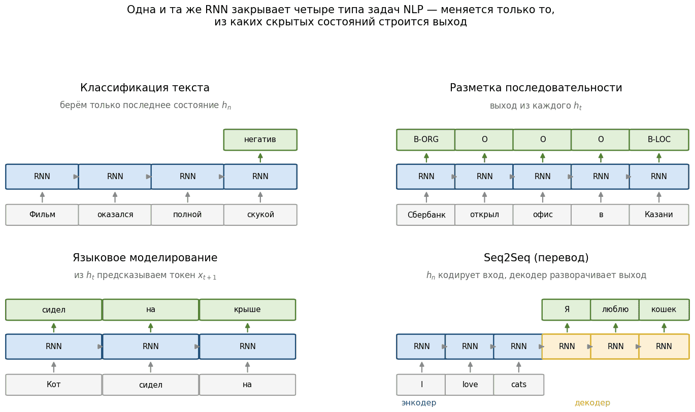
Те же четыре строки таблицы, развёрнутые в схемы. Серые прямоугольники снизу — входные токены, синие посередине — развёрнутая по времени RNN (стрелки между ними и есть передача скрытого состояния), зелёные сверху — выходы. Сеть везде одна и та же; меняется только то, откуда снимается выход: у классификации он один и берётся с последнего шага, у разметки — с каждого, у языковой модели — тоже с каждого, но целью служит следующий токен. В seq2seq к энкодеру (синий) добавлен декодер (жёлтый), который стартует уже без входных токенов, от состояния энкодера. Формальная причина — затухающие градиенты, но полезно понимать её содержательно.
На каждом шаге состояние полностью переписывается: $h_t$ получается умножением $h_{t-1}$ на матрицу и прогоном через нелинейность. Через 20 шагов информация о первом слове прошла через 20 таких преобразований, и от неё практически ничего не осталось — она либо затухла до нуля, либо утонула в более свежем сигнале.
Для языка это критично, потому что зависимости в тексте бывают длинными: «Ключи, которые я вчера искал по всей квартире и уже отчаялся найти, лежали в кармане куртки». Согласование «ключи $\to$ лежали» разделено пятнадцатью словами.
LSTM добавляет отдельный канал памяти — cell state $c_t$, который обновляется аддитивно: $c_t = f_t \odot c_{t-1} + i_t \odot \tilde c_t$. Информация в него добавляется и из него стирается, но не переписывается матричным умножением на каждом шаге, поэтому может ехать через десятки токенов почти без потерь.
Три гейта решают, что делать с этим каналом на каждом шаге:
- forget gate — что забыть из памяти («новое предложение началось, подлежащее можно сбросить»);
- input gate — что записать («встретили подлежащее во множественном числе — запомнить»);
- output gate — что из памяти показать наружу на этом шаге.
GRU делает то же самое двумя гейтами (reset и update) и без отдельного канала памяти — проще, быстрее, качество сопоставимо.
Проблема, которая в итоге и похоронила RNN, — не качество, а скорость обучения.
Чтобы вычислить $h_{100}$, нужно сначала вычислить $h_{99}$, а для него $h_{98}$, и так далее. Шаги нельзя выполнить параллельно по построению. GPU, которая умеет делать тысячи операций одновременно, вынуждена ждать: обработка последовательности длины $n$ занимает $n$ последовательных шагов независимо от числа ядер.
Трансформер снял именно это ограничение: механизм внимания сравнивает все позиции со всеми одной матричной операцией, поэтому вся последовательность обрабатывается за один параллельный проход. Это позволило обучать модели на порядки большие — и качество пришло вместе с масштабом.
В классическом seq2seq на RNN весь входной текст сжимался в один вектор $h_n$ фиксированной длины, из которого декодер разворачивал перевод. Для предложения из 5 слов это работало, для предложения из 50 — качество обваливалось: в 512 чисел просто не помещается всё.
Именно из попытки починить это узкое место родился механизм внимания (Bahdanau et al., 2014): декодер на каждом шаге смотрит не на один сжатый вектор, а на все состояния энкодера, выбирая релевантные. Через три года выяснилось, что внимания достаточно и без рекуррентности вообще — так появился трансформер.
Полностью они не исчезли:
- очень длинные последовательности и потоковая обработка — распознавание речи в реальном времени, где нельзя ждать конца записи;
- жёсткие ограничения по памяти — на устройстве, где внимание с его квадратичной сложностью по длине не помещается;
- маленькие датасеты, где трансформер переобучается, а LSTM с несколькими миллионами параметров ведёт себя устойчивее;
- гибриды и наследники — архитектуры пространств состояний (S4, Mamba) возвращают рекуррентную идею в новой форме, добиваясь линейной сложности по длине вместо квадратичной у внимания.
- SSM — рекуррентность в форме, которую можно обучать параллельно.
- Mamba — селективные SSM, вышедшие на уровень трансформера при линейной сложности.
- Рекуррентные трансформеры — Transformer-XL, RMT и другие способы перенести состояние между сегментами.
Почему RNN подходят для обработки последовательностей в NLP?
RNN обрабатывают токены по одному и передают информацию через скрытое состояние $h_t = f(h_{t-1}, x_t)$, накапливая контекст предыдущих токенов. Это даёт учёт порядка слов, работу с входом произвольной длины при фиксированном числе параметров и возможность получать выход на каждой позиции — что и нужно для NER, разметки частей речи и языкового моделирования.
В чём основная проблема обычных RNN при работе с длинными текстами?
Проблема затухающих (и взрывных) градиентов: при обучении через BPTT градиент проходит через матричное умножение на каждом шаге и экспоненциально затухает или растёт. Содержательно это означает, что состояние полностью переписывается каждый шаг, и через два десятка токенов информация о начале предложения теряется — хотя языковые зависимости бывают длиннее.
Как LSTM решает проблему затухающих градиентов?
Через отдельный канал памяти — cell state, который обновляется аддитивно ($c_t = f_t \odot c_{t-1} + i_t \odot \tilde c_t$), а не переписывается матричным умножением. Три обучаемых гейта (forget, input, output) решают, что забыть, что записать и что показать наружу. Аддитивность позволяет градиенту течь через десятки шагов без затухания.
В чём преимущество GRU перед LSTM?
GRU использует два гейта (reset, update) вместо трёх и не имеет отдельной ячейки памяти — скрытое состояние выполняет обе роли. Параметров меньше примерно на четверть, обучение и инференс быстрее, а качество на большинстве задач сопоставимо. На маленьких датасетах GRU часто даже предпочтительнее из-за меньшей склонности к переобучению.
Почему в seq2seq на RNN потребовался механизм внимания?
Потому что весь входной текст сжимался в один вектор фиксированной длины, и на длинных предложениях качество обваливалось — информация не помещалась. Внимание (Bahdanau et al., 2014) позволило декодеру на каждом шаге обращаться ко всем состояниям энкодера и выбирать релевантные, убрав бутылочное горлышко.
Почему трансформеры вытеснили RNN/LSTM в большинстве NLP-задач?
Главная причина — параллелизм. В RNN шаг $t$ нельзя вычислить, не вычислив шаг $t-1$, поэтому обработка последовательности требует $n$ последовательных операций независимо от числа ядер GPU. Трансформер сравнивает все позиции со всеми одной матричной операцией, обрабатывая последовательность за один параллельный проход, что позволило обучать модели на порядки большего масштаба. Плюс внимание даёт прямой путь между любыми двумя позициями, а не цепочку из десятков шагов.
Где рекуррентные сети применяются сегодня?
В потоковой обработке, где нельзя дождаться конца последовательности (онлайн-распознавание речи), при жёстких ограничениях памяти, на маленьких датасетах, где трансформер переобучается. Кроме того, идея рекуррентности возвращается в архитектурах пространств состояний (S4, Mamba), дающих линейную сложность по длине вместо квадратичной у внимания.
-
Двунаправленные рекуррентные нейросети
Двунаправленная рекуррентная сеть (Bidirectional RNN, biRNN) — это две независимые однонаправленные RNN, работающие с одной и той же последовательностью: одна читает её слева направо, другая — справа налево.
Для каждой позиции $t$ получаются два скрытых состояния — $\overrightarrow{h_t}$ (что известно из левого контекста) и $\overleftarrow{h_t}$ (что известно из правого), — которые объединяются в одно представление токена, обычно конкатенацией:
$$ h_t = [\,\overrightarrow{h_t}\ ;\ \overleftarrow{h_t}\,]. $$
Простыми словами: один читатель идёт по тексту с начала, другой — с конца, и в каждой точке мы складываем их впечатления вместе.
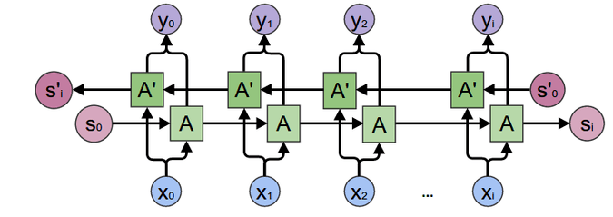
Две цепочки состояний идут навстречу друг другу. Представление каждого токена собирается из состояния прямой сети (весь текст слева от него) и обратной (весь текст справа), поэтому вектор токена учитывает всё предложение целиком. Однонаправленная RNN в момент обработки токена $x_t$ знает только то, что было до него. Для многих задач этого категорически мало, потому что смысл слова часто определяется тем, что идёт после.
Классический пример неоднозначности:
- «Он пошёл в банк, чтобы снять деньги.»
- «Он сел на банку реки и закинул удочку.»
В момент, когда прямая RNN дочитала до слова «банк», различающая информация ещё не поступила — она вся справа. Обратная RNN, наоборот, к этому моменту уже прочитала «снять деньги» или «реки» и знает ответ.
- NER: «Вашингтон подписал указ» — персона; «Вашингтон принял делегацию» — может быть и город. Решает контекст справа.
- Разметка частей речи: «стекло» — существительное или глагол? «Разбитое стекло» против «молоко стекло со стола» — определяется соседями с обеих сторон.
- Разрешение анафоры: к чему относится «оно» — становится понятно только из последующего текста.
- Восстановление пунктуации в транскриптах речи: где ставить запятую, видно только по всему предложению.
Общее правило: двунаправленность нужна везде, где на момент решения доступен весь текст целиком.
Конкатенация — самый частый вариант (и по умолчанию в PyTorch/Keras), но не единственный:
- конкатенация $[\overrightarrow{h_t}; \overleftarrow{h_t}]$ — размерность удваивается, никакая информация не теряется;
- сумма $\overrightarrow{h_t} + \overleftarrow{h_t}$ — размерность сохраняется, но направления смешиваются;
- среднее — то же самое с нормировкой.
Практически всегда берут конкатенацию: она ничего не теряет, а удвоение размерности легко компенсируется следующим слоем. Помните только, что при этом число параметров biRNN примерно вдвое больше, чем у однонаправленной той же ширины.
Фундаментальное ограничение, а не техническая деталь.
Авторегрессивная генерация устроена так: модель предсказывает токен $x_{t+1}$, зная только $x_1, \dots, x_t$. Обратная половина biRNN по определению читает текст справа налево — то есть требует знать будущие токены, которых во время генерации ещё не существует.
Более того, при обучении такая модель просто «спишет» ответ: чтобы предсказать $x_{t+1}$, ей достаточно посмотреть на $\overleftarrow{h_{t+1}}$, который этот токен уже содержит. Потери упадут до нуля, а модель ничему не научится.
Отсюда деление, которое проходит через весь современный NLP: двунаправленность — для понимания, однонаправленность (причинная маска) — для генерации.
Ровно то же противопоставление воспроизводится на трансформерах:
RNN-мир Трансформер-мир Задачи Двунаправленные biLSTM, ELMo BERT (полное внимание) NER, классификация, QA Однонаправленные обычная LSTM GPT (причинная маска) генерация, автодополнение И там и там проблема одинакова: чтобы модель могла порождать текст, ей нужно запретить смотреть вперёд. RNN делает это самой архитектурой, трансформер — маской внимания.
Важное различие, которое часто смазывают, говоря «biLSTM тоже двунаправленный».
В biRNN два направления обрабатываются полностью независимо и встречаются только в самом конце, при конкатенации. Прямая сеть никогда не видит правый контекст в процессе формирования своего состояния, и наоборот. Это называют «поверхностной двунаправленностью» (shallow bidirectionality).
В BERT каждый токен на каждом слое смотрит сразу на все остальные токены с обеих сторон, и информация перемешивается на всех уровнях. Именно поэтому BERT называют «глубоко двунаправленным», и именно поэтому ему потребовалась другая обучающая задача — маскирование токенов вместо предсказания следующего.
- Вдвое дороже. Два прохода вместо одного и вдвое больше параметров при той же ширине слоя.
- Не работает потоково. Обратный проход требует всей последовательности целиком, поэтому biRNN неприменим там, где текст поступает по частям (онлайн-распознавание речи, живая транскрипция).
- Стек biLSTM — это несколько уровней абстракции. Нижние слои улавливают морфологию и локальный синтаксис, верхние — семантику; это свойство напрямую использует ELMo, взвешивая слои под конкретную задачу.
Что такое двунаправленная рекуррентная сеть (biRNN)?
Это две независимые однонаправленные RNN над одной последовательностью: одна обрабатывает её слева направо, другая справа налево. Для каждой позиции получаются два скрытых состояния, которые объединяются (обычно конкатенацией) в единое представление токена, учитывающее контекст с обеих сторон.
Какую проблему однонаправленных RNN решает biRNN?
Однонаправленная RNN в момент обработки токена знает только предшествующий контекст, а смысл слова часто определяется тем, что идёт после: «банк» в «снять деньги в банке» и «сидел на банке реки» различается только правым контекстом. biRNN добавляет этот правый контекст, что критично для NER, разметки частей речи и других задач понимания.
Как объединяются состояния двух направлений?
Чаще всего конкатенацией $h_t = [\overrightarrow{h_t}; \overleftarrow{h_t}]$ — при этом размерность удваивается, но ничего не теряется. Возможны также сумма и среднее, сохраняющие размерность ценой смешивания направлений. Конкатенация — вариант по умолчанию в основных фреймворках.
Почему biRNN не подходит для авторегрессивной генерации текста?
Генерация требует предсказывать следующий токен, зная только предыдущие, а обратная половина сети по определению читает текст справа налево и нуждается в будущих токенах, которых при генерации ещё нет. При обучении такая модель к тому же тривиально «списывает» ответ из обратного состояния, поэтому ничему не учится.
Чем biRNN отличается от глубокой двунаправленности BERT?
В biRNN два направления обрабатываются полностью независимо и встречаются только на выходе — это поверхностная двунаправленность: прямая сеть никогда не видит правый контекст в процессе вычисления своего состояния. В BERT каждый токен на каждом слое внимания видит сразу все остальные с обеих сторон, информация перемешивается на всех уровнях. Из-за этого BERT не может обучаться предсказанию следующего токена и использует маскирование.
Как biRNN используется в архитектуре ELMo?
ELMo обучает многослойную biLSTM как языковую модель в обоих направлениях, а контекстуальный эмбеддинг токена строит как обучаемую взвешенную комбинацию скрытых состояний всех слоёв. Разные слои кодируют разные уровни — от морфологии внизу до семантики наверху, — и веса подбираются под конкретную downstream-задачу.
Какие практические издержки у biRNN?
Вдвое больше параметров и вычислений при той же ширине слоя, а главное — невозможность потоковой обработки: обратный проход требует всей последовательности целиком, поэтому biRNN неприменим в задачах, где текст поступает по частям, например в живой транскрипции речи.
-
ELMo
ELMo (Embeddings from Language Models, 2018) — модель, впервые давшая широко используемые контекстуальные эмбеддинги: вектор слова вычисляется заново для каждого предложения и зависит от всего окружения.
Ключевое отличие от Word2Vec, GloVe и FastText: там эмбеддинг — это строка таблицы, которую достают по индексу слова. В ELMo эмбеддинг — это результат прогона всего предложения через сеть, поэтому одно и то же слово в разных предложениях получает разные векторы.
Простыми словами: раньше у слова был один паспорт на все случаи жизни, теперь вектор выдаётся под конкретное предложение.
- «He sat on the bank of the river» — берег.
- «He went to the bank to deposit money» — банк.
Word2Vec выдаст обоим вхождениям один и тот же вектор — усреднение двух несовместимых смыслов, не описывающее ни один из них. ELMo выдаст два разных вектора: в первом случае он окажется ближе к «river», «shore», «water», во втором — к «money», «account», «loan».
Это и есть решение проблемы полисемии (многозначности), которая была принципиальным потолком всех статических эмбеддингов.
ELMo — это многослойная двунаправленная LSTM, обученная как языковая модель:
- прямая LSTM предсказывает следующий токен по левому контексту: $p(x_t \mid x_1,\dots,x_{t-1})$;
- обратная LSTM предсказывает предыдущий токен по правому: $p(x_t \mid x_{t+1},\dots,x_n)$.
Обе обучаются совместно, максимизируя сумму логарифмов правдоподобия обоих направлений. Обучающих меток при этом не нужно — задача самообучаемая (self-supervised), данными служит просто сырой текст.
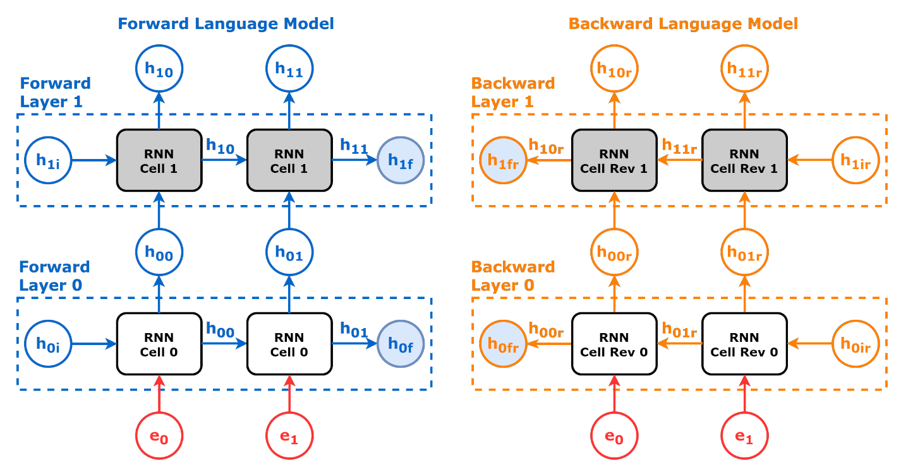
Архитектура ELMo: сначала входные токены преобразуются в векторные представления с помощью эмбеддинг-слоя (по сути, таблицы соответствия), затем к ним применяется пара прямой и обратной LSTM для получения двух последовательностей скрытых состояний, после чего процесс повторяется — применяется следующая пара прямой и обратной LSTM и так далее. Деталь, которую часто упускают, а она важна: нижний слой ELMo работает не со словами, а с символами. Слово прогоняется через свёрточную сеть по символам (character CNN), и только её выход подаётся в LSTM.
Зачем: это снимает проблему OOV — представление можно построить для любого слова, включая опечатки, неологизмы и редкие словоформы, потому что символы всегда известны. Та же идея, что в FastText, но реализованная свёрткой вместо суммы $n$-грамм.
$$ \text{ELMo}_t^{\text{task}} = \gamma^{\text{task}} \sum_{l=0}^{L} s_l^{\text{task}}\, h_{t,l}, $$
где:
- $h_{t,l}$ — представление токена $t$ на слое $l$ (для $l = 0$ это выход символьной CNN, для $l \ge 1$ — конкатенация состояний прямой и обратной LSTM);
- $s_l^{\text{task}}$ — обучаемые веса слоёв, нормированные softmax'ом (в сумме дают единицу);
- $\gamma^{\text{task}}$ — обучаемый общий масштабный коэффициент;
- $L$ — число слоёв biLSTM (в оригинале 2).
Верхний индекс
taskподчёркивает главное: веса слоёв обучаются отдельно под каждую downstream-задачу. Сама biLSTM при этом остаётся замороженной.Это самая изящная идея работы. Разные слои сети кодируют разные типы информации:
- слой 0 (символьная CNN) — форма слова: морфология, написание, суффиксы;
- нижний слой LSTM — синтаксис: часть речи, роль в предложении;
- верхний слой LSTM — семантика: значение слова в этом контексте.
Разным задачам нужно разное. Разметке частей речи важен синтаксический слой, разрешению значений слов — семантический, NER — оба плюс морфология.
Вместо того чтобы угадывать, какой слой брать, ELMo позволяет задаче самой выучить пропорцию через веса $s_l$. Экспериментально авторы показали, что оптимальные веса действительно разные: POS-tagging тянет вниз, задачи на значение слов — вверх.
Схема использования была такой:
- Обучить biLSTM-языковую модель на большом корпусе (или взять готовую).
- Заморозить её.
- Прогнать свои предложения и получить контекстуальные векторы.
- Подать эти векторы (обычно склеенные с обычными GloVe-эмбеддингами) на вход своей задачной модели — biLSTM-CRF для NER, классификатора и т. п.
- Обучать только задачную модель и веса $s_l$, $\gamma$.
То есть ELMo работал как источник признаков (feature-based подход), а не как модель, которую дообучают целиком. Это отличает его от BERT, где принято дообучать (fine-tune) всю сеть.
Прирост качества был заметным — от 1 до 5 процентных пунктов на шести разных задачах (QA, NER, анализ тональности, разрешение кореференции), причём без изменения архитектур этих задач: достаточно было заменить входные эмбеддинги.
Но важнее было то, что ELMo доказал принцип: предобучение языковой модели на неразмеченном тексте даёт представления, полезные для всех задач сразу. Ровно этот принцип затем масштабировали BERT и GPT, заменив LSTM на трансформер.
Именно с ELMo NLP перешёл от «под каждую задачу своя модель с нуля» к «одна большая предобученная модель + лёгкая адаптация».
Тонкость, которую любят спрашивать на собеседовании.
ELMo обучает два независимых языковых моделирования — вперёд и назад — и склеивает их результаты. Прямая LSTM в процессе формирования состояния никогда не видит правый контекст, обратная — левый. Информация встречается только при конкатенации.
BERT устроен принципиально иначе: там каждый токен на каждом слое видит весь контекст сразу. Такая глубокая двунаправленность несовместима с задачей «предскажи следующий токен» (модель просто увидит ответ), поэтому BERT потребовалось изобрести другую обучающую задачу — маскирование.
- Рекуррентность не параллелится — обучение и инференс медленные по сравнению с трансформером.
- Поверхностная двунаправленность — слабее глубокой.
- Feature-based использование — предобученная модель заморожена, её знания не адаптируются под задачу так глубоко, как при fine-tuning.
- Длинные зависимости LSTM держит хуже, чем внимание с прямым путём между любыми позициями.
Через несколько месяцев после ELMo вышел BERT и закрыл все четыре пункта разом.
Чем ELMo принципиально отличается от Word2Vec и GloVe?
ELMo даёт контекстуальные эмбеддинги: вектор слова вычисляется прогоном всего предложения через сеть и потому различается в разных контекстах. Word2Vec и GloVe хранят по одному фиксированному вектору на слово в таблице, из-за чего многозначные слова получают усреднение несовместимых смыслов.
На какой архитектуре основан ELMo?
На многослойной двунаправленной LSTM, обученной как языковая модель: прямая LSTM предсказывает следующий токен по левому контексту, обратная — предыдущий по правому, обе обучаются совместно на сыром неразмеченном тексте. Вход при этом символьный — слово прогоняется через character CNN, что снимает проблему OOV.
Как формируется итоговый вектор слова в ELMo?
Как обучаемая взвешенная линейная комбинация представлений со всех слоёв: $\text{ELMo}_t = \gamma \sum_{l=0}^{L} s_l h_{t,l}$, где $s_l$ — нормированные softmax'ом веса слоёв, $\gamma$ — общий масштаб. И $s_l$, и $\gamma$ обучаются отдельно под каждую downstream-задачу, тогда как сама biLSTM остаётся замороженной.
Что кодируют разные слои ELMo и почему веса слоёв обучаемые?
Символьный слой кодирует форму слова и морфологию, нижний слой LSTM — синтаксис и часть речи, верхний — семантику в контексте. Разным задачам нужны разные пропорции: разметке частей речи важны нижние слои, разрешению значений слов — верхние. Обучаемые веса позволяют задаче самой подобрать эту пропорцию вместо ручного выбора слоя.
Как ELMo применялся на практике?
Feature-based подходом: предобученную biLSTM замораживали, прогоняли через неё свои предложения, полученные контекстуальные векторы (часто склеенные с GloVe) подавали на вход задачной модели, и обучали только эту модель плюс веса $s_l, \gamma$. Это отличает ELMo от BERT, где принято дообучать всю сеть целиком.
Почему ELMo считается предшественником BERT?
Он первым показал, что предобучение языковой модели на большом неразмеченном корпусе даёт представления, дающие прирост сразу на многих задачах без изменения их архитектур. Этот принцип — «одна большая предобученная модель плюс лёгкая адаптация» — BERT и GPT затем масштабировали, заменив LSTM на трансформер.
Почему двунаправленность ELMo называют поверхностной?
ELMo обучает два независимых языковых моделирования — вперёд и назад — и объединяет их только конкатенацией на выходе; в процессе вычисления состояний ни одно направление не видит контекст с другой стороны. В BERT каждый токен на каждом слое внимания видит весь контекст сразу, и информация перемешивается на всех уровнях — это глубокая двунаправленность, ради которой пришлось заменить предсказание следующего токена на маскирование.
Почему ELMo быстро вытеснили?
Рекуррентность не параллелится, из-за чего обучение и инференс медленные; двунаправленность поверхностная; модель используется замороженной, а не дообучается; длинные зависимости LSTM держит хуже, чем механизм внимания с прямым путём между любыми позициями. BERT, вышедший через несколько месяцев, закрыл все четыре пункта.
-
Языковое моделирование
Языковая модель (LM) — модель, которая присваивает вероятности последовательностям токенов: символам, словам, предложениям, целым текстам. Цель — чтобы более правдоподобные для языка тексты получали бо́льшую вероятность.
Простыми словами: языковая модель — это измеритель того, насколько текст похож на настоящий язык. Ей дают строку, она отвечает числом: «вот такое люди пишут часто», «а вот такое — практически никогда».
Три строки из одних и тех же слов:
- «Кот сидит на коврике» — грамматично и осмысленно. Высокая вероятность.
- «Коврике на сидит кот» — слова те же, порядок сломан. Вероятность на порядки ниже.
- «Кот сидит на интеграле» — грамматично, но бессмысленно. Вероятность низкая, хотя выше, чем у второго варианта.
Хорошая языковая модель должна упорядочить их именно так. Обратите внимание: она не проверяет истинность и не отличает правду от вымысла — только правдоподобие как последовательности слов.
Практически всегда языковая модель устроена как предсказатель: дан текст до текущего момента — какое слово будет следующим?
Именно это вы видите в автодополнении на телефоне: набрали «Спасибо за», и клавиатура предлагает «внимание», «ответ», «помощь». Модель оценила распределение вероятностей по всему словарю и показала три самых вероятных варианта.
Пример автодополнения. Предсказываются наиболее вероятные продолжения по уже написанному тексту — это буквально языковая модель, показывающая топ своих предсказаний. Как только у нас есть способ сравнивать варианты по правдоподобию, решается целый класс задач, где нужно выбрать лучший вариант из нескольких:
- распознавание речи — акустика допускает «мама мыла раму» и «мама мыло рама», языковая модель выбирает первое;
- исправление опечаток — «превет» ближе всего к «привет», но решает не только расстояние, а вероятность в контексте;
- машинный перевод — из нескольких грамматически допустимых переводов выбирается самый естественный;
- генерация текста — если умеем предсказывать следующее слово, умеем и порождать текст, повторяя предсказание;
- оценка беглости сгенерированного текста в метриках качества.
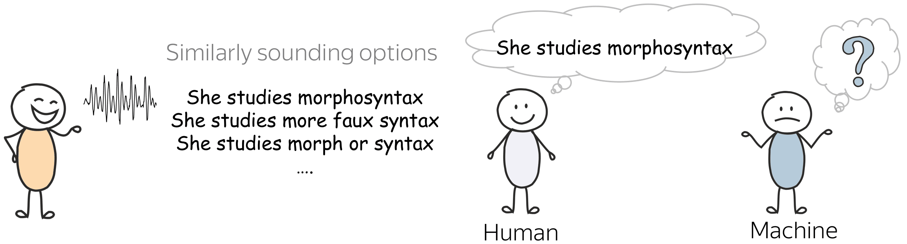
Одну и ту же звуковую последовательность можно разобрать несколькими способами. Человек выбирает правильный мгновенно и неосознанно; модели для этого нужно явно оценить вероятность каждого варианта и взять максимальный. Человек делает это интуитивно, потому что за годы впитал статистику родного языка. У модели такой интуиции нет — она должна посчитать вероятность каждого варианта и сравнить числа. Языковая модель и есть формализация этой интуиции.
Здесь важно понять сдвиг, который произошёл в 2018–2020 годах.
Изначально языковая модель была вспомогательным компонентом: маленький модуль внутри системы распознавания речи или переводчика. Потом обнаружилось следующее.
Чтобы хорошо предсказывать следующее слово, модель вынуждена выучить очень много всего: грамматику (после предлога идёт существительное в нужном падеже), факты о мире (после «столица Франции —» идёт «Париж»), логику, стиль, даже арифметику. Задача выглядит узкой, а требует энциклопедических знаний.
И главное: обучающих данных для неё бесконечно много и они бесплатны. Не нужна разметка — правильный ответ уже содержится в самом тексте, это просто следующее слово. Отсюда термин self-supervised: разметка есть, но её создаёт сам корпус.
Комбинация «задача требует знать всё» + «данных неограниченно» и превратила языковое моделирование из вспомогательного модуля в фундамент, на котором стоят все современные LLM.
Формулировка «языковая модель предсказывает следующий токен» описывает каузальные (авторегрессивные, левосторонние) модели — GPT и его родственников.
Есть и другой вариант: маскированные модели вроде BERT предсказывают закрытый токен по контексту с обеих сторон. Формально это тоже моделирование языка, но такая модель не может генерировать текст пошагово, потому что не определена как распределение над последовательностями слева направо.
Когда без уточнений говорят «языковая модель», обычно имеют в виду каузальную. Именно её разложение по цепному правилу разбирается в следующем вопросе.
Три ловушки, которые стоит держать в голове:
- LM не знает правды. «Столица Австралии — Сидней» звучит естественно и получит высокую вероятность, хотя это неверно (столица — Канберра). Правдоподобие текста и его истинность — разные вещи, и именно отсюда растут галлюцинации LLM.
- Самый вероятный текст — скучный. Если всегда выбирать наиболее вероятное слово, получаются повторы и штампы. Поэтому при генерации намеренно вносят случайность (см. стратегии генерации).
- LM отражает корпус, а не язык вообще. Модель, обученная на новостях, посчитает разговорную речь маловероятной. «Правдоподобие» всегда относительно того, на чём модель училась.
Что такое языковая модель?
Модель, присваивающая вероятности последовательностям токенов: чем правдоподобнее текст с точки зрения языка, тем выше его вероятность. На практике почти всегда реализуется как предсказатель следующего токена по предшествующему контексту.
Какова интуиция языковой модели с точки зрения предсказания?
Она предсказывает, что будет дальше в тексте, по уже написанному — ровно как автодополнение в телефоне, которое показывает несколько самых вероятных продолжений из распределения по всему словарю.
Какие задачи NLP решаются с помощью языкового моделирования?
Все, где нужно выбрать самый правдоподобный вариант из нескольких: распознавание речи (акустически похожие расшифровки), исправление опечаток, машинный перевод (выбор естественного варианта из грамматически допустимых), генерация текста, оценка беглости в метриках качества.
Почему машине нужна явная языковая модель там, где человек действует интуитивно?
Человек за годы впитал статистику родного языка и разрешает неоднозначности неосознанно. У модели такой интуиции нет: чтобы выбрать между двумя разборами одной фразы, она должна явно вычислить вероятность каждого варианта и сравнить числа.
Почему языковое моделирование стало центральной задачей современного NLP?
По двум причинам сразу. Во-первых, чтобы хорошо предсказывать следующее слово, модель вынуждена выучить грамматику, факты о мире, логику и стиль — узкая на вид задача требует энциклопедических знаний. Во-вторых, данные для неё бесплатны и неограниченны: разметка не нужна, правильный ответ содержится в самом тексте (self-supervised обучение). Из этой комбинации выросли все современные LLM.
Чем каузальная языковая модель отличается от маскированной?
Каузальная (GPT) предсказывает следующий токен только по левому контексту и потому может генерировать текст пошагово. Маскированная (BERT) восстанавливает закрытый токен по контексту с обеих сторон — она даёт более сильные представления для задач понимания, но не определяет распределение над последовательностями слева направо и генерировать так не может.
Почему высокая вероятность текста по LM не означает его истинность?
Языковая модель измеряет статистическое правдоподобие последовательности слов, а не соответствие фактам. Фраза «столица Австралии — Сидней» построена совершенно естественно и получит высокую вероятность, будучи неверной. Именно этот разрыв между правдоподобием и истинностью лежит в основе галлюцинаций языковых моделей.
Как качество языковой модели влияет на downstream-задачи?
Более сильная LM точнее ранжирует варианты по правдоподобию, что напрямую улучшает распознавание речи, перевод, исправление ошибок и качество генерации. Кроме того, в современной парадигме предобученная LM служит источником представлений для всех остальных задач, и её качество определяет верхнюю границу для них.
-
Вероятность текста и левосторонние LM
Наивный подход к оценке $P(\text{предложение})$ — посчитать, сколько раз оно встретилось в корпусе, и поделить на общее число предложений.
Это не работает. Число возможных предложений длины 20 при словаре в 50 тысяч слов — порядка $50\,000^{20}$, то есть больше, чем атомов во Вселенной. Подавляющее большинство совершенно корректных предложений не встретится в корпусе ни разу, и наивная оценка даст им вероятность ноль.
Вывод: предложение нельзя рассматривать как атомарную единицу. Нужно разложить его вероятность на вероятности частей, которые встречаются достаточно часто, чтобы их можно было оценить.
Требование к разложению одно, но существенное: вероятности должны отражать знание языка. Предложение, часто встречающееся в реальной речи, должно получать бо́льшую вероятность, чем сломанное или бессмысленное, — даже если оба не встречались в корпусе дословно.
Иными словами, нам нужна не таблица заученных предложений, а обобщающая конструкция.
Возьмём предложение
I saw a cat on a matи представим, что читаем его по одному слову, каждый раз оценивая вероятность очередного слова при уже прочитанном.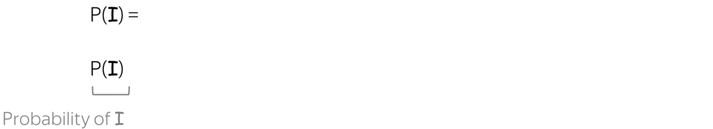
Классная визуализация с курса Лены Войты. На каждом шаге модель оценивает вероятность следующего слова при условии всех предыдущих; вероятность всего предложения — произведение этих условных вероятностей. После «I saw a» слово «cat» вполне вероятно, а слово «the» — маловероятно. Каждая такая оценка требует статистики по коротким фрагментам, а не по целому предложению, — и это уже посильная задача.
Пусть $y_1, \dots, y_n$ — последовательность токенов, $P(y_1, \dots, y_n)$ — вероятность увидеть их именно в таком порядке. По цепному правилу (правилу произведения вероятностей) она точно раскладывается в произведение условных:
$$ P(y_1, y_2, \dots, y_n) = P(y_1)\cdot P(y_2 \mid y_1)\cdot P(y_3 \mid y_1, y_2)\cdot \ldots \cdot P(y_n \mid y_1, \dots, y_{n-1}) = \prod_{t=1}^{n} \textcolor{blue}{P(y_t \mid y_{<t})}, $$
где $y_{<t}$ означает «все токены до $t$-го».
Модель, устроенная по этой схеме, называется левосторонней (left-to-right), авторегрессивной или каузальной языковой моделью.
Три вещи, каждая по отдельности.
- Разложение точное, а не приближённое. Цепное правило — тождество теории вероятностей, никаких допущений здесь ещё не сделано. Приближения появятся дальше: у $n$-граммных моделей — когда историю обрежут до $n-1$ токенов, у нейронных — когда сеть будет приближать $P(y_t \mid y_{<t})$ конечным числом параметров.
- Задача сведена к классификации. Оценить $P(y_t \mid y_{<t})$ — это выдать распределение по словарю, то есть решить задачу многоклассовой классификации с $|V|$ классами. Всё моделирование языка свелось к повторению одной знакомой задачи.
- Разложение подсказывает способ генерации. Раз вероятность текста — произведение условных, то и порождать текст естественно по одному токену.
Пусть модель оценила:
$$ P(\text{«кот»}) = 0.001,\quad P(\text{«сидит»}\mid\text{«кот»}) = 0.05,\quad P(\text{«на»}\mid\text{«кот сидит»}) = 0.3,\quad P(\text{«коврике»}\mid \dots) = 0.02. $$
Тогда
$$ P(\text{«кот сидит на коврике»}) = 0.001 \cdot 0.05 \cdot 0.3 \cdot 0.02 = 3 \cdot 10^{-7}. $$
Обратите внимание, насколько быстро падает произведение: четыре слова — и уже $10^{-7}$. Для предложения из 30 слов число будет порядка $10^{-60}$, что выходит за пределы точности
float32.Прямое перемножение вероятностей приводит к арифметическому антипереполнению (underflow): произведение становится машинным нулём, и дальнейшие вычисления теряют смысл.
Поэтому на практике везде используют логарифмы:
$$ \log P(y_1,\dots,y_n) = \sum_{t=1}^{n} \log P(y_t \mid y_{<t}). $$
Произведение превращается в сумму, числа остаются в разумном диапазоне (логарифмы вероятностей — отрицательные числа порядка единиц и десятков), а порядок сравнения текстов сохраняется, поскольку логарифм монотонен. Именно поэтому функция потерь языковой модели записывается через $\log$, а метрики вроде перплексии определены через логарифмы.
Прямое следствие произведения: чем больше сомножителей, тем меньше результат. Любое предложение из 30 слов будет иметь меньшую вероятность, чем любое предложение из 5, — просто по арифметике, а не потому, что оно хуже.
Практическое следствие: нельзя сравнивать по $P$ тексты разной длины. При выборе лучшего перевода или лучшей расшифровки речи оценку нормируют на длину — делят $\log P$ на число токенов, что даёт среднюю логарифмическую вероятность на токен. Из этой же величины получается перплексия. В beam search для этого есть отдельный параметр length penalty.
Генерация: модель предсказывает распределение по словарю, из него выбирается токен, он дописывается в контекст, и шаг повторяется. Так текст растёт слово за словом. Алгоритм авторегрессивной генерации:
- Подать модели текущий контекст (в начале — затравку или специальный токен «начало текста»).
- Получить распределение $P(\cdot \mid \text{контекст})$ по всему словарю.
- Выбрать один токен: жадно, сэмплированием или другой стратегией.
- Дописать выбранный токен в контекст и вернуться к шагу 1.
- Остановиться при появлении токена конца последовательности или при достижении лимита длины.
Обратите внимание: шаг 3 — это отдельное решение, не заданное самой моделью. Модель даёт распределение; как из него выбирать — вопрос стратегии декодирования.
Распространённое заблуждение: «если на каждом шаге брать самый вероятный токен, получится самая вероятная последовательность». Это неверно.
Максимизация каждого сомножителя по отдельности не максимизирует произведение. Локально лучший токен может завести в область, где все продолжения плохи, тогда как чуть менее вероятный токен открыл бы путь к отличному продолжению.
Простой пример: пусть на первом шаге $P(A) = 0.6$, $P(B) = 0.4$, но после $A$ лучшее продолжение имеет вероятность $0.2$ (итого $0.12$), а после $B$ — вероятность $0.8$ (итого $0.32$). Жадный алгоритм выберет $A$ и проиграет.
Именно поэтому существует beam search, который держит несколько гипотез одновременно. Найти точно самую вероятную последовательность вообще нельзя без перебора $|V|^n$ вариантов — все практические алгоритмы приближённые.
Цепное правило свело задачу к оценке $P(y_t \mid y_{<t})$, но как именно считать эту величину, пока не сказано. Контекст $y_{<t}$ может быть любой длины, и напрямую подсчитать частоты для всех возможных историй по-прежнему невозможно.
Ответов исторически было два: обрезать историю до нескольких последних токенов ($n$-граммные модели) или научить нейросеть сжимать историю произвольной длины в вектор фиксированного размера (нейронные LM). Оба разбираются дальше.
Почему нельзя оценивать вероятность предложения напрямую по частоте в корпусе?
Число возможных предложений астрономически велико (при словаре 50 тысяч и длине 20 — порядка $50000^{20}$), поэтому подавляющее большинство корректных предложений не встречается в корпусе ни разу и получило бы нулевую вероятность. Предложение нельзя считать атомарной единицей — его вероятность нужно разложить на части, встречающиеся достаточно часто.
Как вероятность текста раскладывается по цепному правилу?
$P(y_1, \dots, y_n) = \prod_{t=1}^n P(y_t \mid y_{<t})$: вероятность каждого токена берётся условно на все предыдущие. Это точное тождество теории вероятностей, никаких приближений на этом шаге ещё не делается — они появляются позже, при выборе способа оценивать условные вероятности.
Что такое левосторонняя (авторегрессивная, каузальная) языковая модель?
Модель, оценивающая вероятность каждого токена только по предшествующему контексту: $P(y_t \mid y_1, \dots, y_{t-1})$. Такое разложение позволяет генерировать текст пошагово и делает задачу моделирования языка последовательностью обычных многоклассовых классификаций с $|V|$ классами.
Почему на практике работают с логарифмами вероятностей?
Произведение сотен вероятностей быстро уходит в машинный ноль: у предложения из 30 слов вероятность порядка $10^{-60}$. Логарифмирование превращает произведение в сумму $\sum_t \log P(y_t \mid y_{<t})$, удерживает числа в разумном диапазоне и сохраняет порядок сравнения, поскольку логарифм монотонен.
Почему нельзя сравнивать по вероятности тексты разной длины?
Вероятность — произведение сомножителей, каждый меньше единицы, поэтому она монотонно падает с длиной: любой длинный текст менее вероятен, чем любой короткий, независимо от качества. Для корректного сравнения оценку нормируют на длину — делят $\log P$ на число токенов (отсюда же и перплексия), а в beam search применяют length penalty.
Как генерация текста связана с вероятностным разложением?
Раз вероятность текста — произведение условных вероятностей токенов, порождать текст естественно по одному токену: получить распределение $P(\cdot \mid y_{<t})$, выбрать из него токен, дописать в контекст и повторить до токена конца последовательности. Способ выбора на третьем шаге моделью не задан — это отдельное решение, стратегия декодирования.
Почему жадный выбор токена на каждом шаге не даёт самой вероятной последовательности?
Максимизация каждого сомножителя по отдельности не максимизирует произведение: локально более вероятный токен может вести в область, где все продолжения плохи, тогда как чуть менее вероятный открывал бы путь к лучшему продолжению. Точный поиск максимума требовал бы перебора $|V|^n$ вариантов, поэтому все практические алгоритмы (включая beam search) приближённые.
-
N-грамм модели генерации текста
Цепное правило свело задачу к оценке $P(y_t \mid y_{<t})$. Самый прямой способ — посчитать частоты по корпусу:
$$ P(y_t \mid y_1, \dots, y_{t-1}) = \frac{N(y_1, \dots, y_{t-1}, y_t)}{N(y_1, \dots, y_{t-1})}, $$
где $N(y_1, \dots, y_k)$ — сколько раз последовательность $y_1, \dots, y_k$ встретилась в корпусе.
Читается это просто: из всех случаев, когда мы видели такое начало, в какой доле следующим шло именно это слово.
Проблема ровно та же, что и с целыми предложениями: контекст $y_1, \dots, y_{t-1}$ по мере чтения становится всё длиннее и всё уникальнее.
К десятому слову предложения его начало почти наверняка не встречалось в корпусе ни разу. Тогда $N(y_1,\dots,y_{t-1}) = 0$, и в формуле ноль в знаменателе — вероятность не определена вовсе.
Разложение по цепному правилу само по себе ничего не спасло: мы всего лишь перенесли проблему с предложений на их начальные отрезки.
Чтобы контексты стали повторяющимися, их надо обрезать. Предполагаем, что вероятность токена зависит только от нескольких последних токенов, а не от всей истории:
$$ P(y_t \mid y_1, \dots, y_{t-1}) \approx P(y_t \mid y_{t-n+1}, \dots, y_{t-1}). $$
Это и есть марковское свойство: будущее зависит от прошлого только через ограниченное «окно памяти».
Простыми словами: модель помнит только последние $n-1$ слов и полностью забывает всё, что было раньше. В обмен на эту забывчивость мы получаем контексты, которые повторяются в корпусе достаточно часто, чтобы по ним можно было считать статистику.
- Униграммная ($n=1$): $P(y_t \mid y_{<t}) = P(y_t)$ — контекст не учитывается вообще, слова независимы. Текст получается набором случайных слов по частоте.
- Биграммная ($n=2$): $P(y_t \mid y_{<t}) = P(y_t \mid y_{t-1})$ — учитывается одно предыдущее слово.
- Триграммная ($n=3$): $P(y_t \mid y_{<t}) = P(y_t \mid y_{t-2}, y_{t-1})$ — два предыдущих слова.
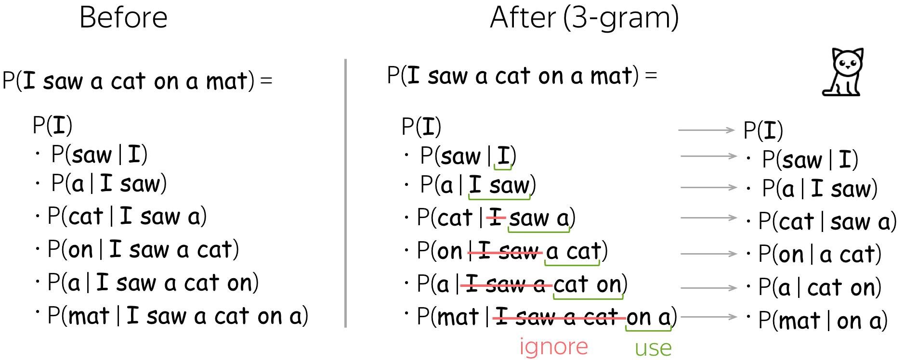
Вначале вероятность следующего токена зависела от всего предшествующего предложения. После марковского предположения контекст обрезается до фиксированного окна — здесь до двух последних слов. Мини-корпус из трёх предложений: «я люблю кофе», «я люблю чай», «я пью кофе».
Считаем $P(\text{«люблю»} \mid \text{«я»})$: слово «я» встретилось 3 раза, из них «люблю» шло следующим 2 раза.
$$ P(\text{«люблю»}\mid\text{«я»}) = \frac{2}{3} \approx 0.67, \qquad P(\text{«пью»}\mid\text{«я»}) = \frac{1}{3} \approx 0.33. $$
Аналогично $P(\text{«кофе»}\mid\text{«люблю»}) = 1/2$, $P(\text{«чай»}\mid\text{«люблю»}) = 1/2$.
Вся модель — это большая таблица таких дробей. Никакого обучения градиентным спуском здесь нет: параметры получаются подсчётом.
Выбор $n$ — это выбор между двумя видами ошибок, и он неизбежен.
- Малое $n$ (биграммы): контексты частые, статистика надёжная, нулей мало. Но модель почти ничего не помнит — «ключи ... лежали» она согласовать не сможет.
- Большое $n$ (5-граммы и выше): контекст содержательный, качество на встреченных фрагментах высокое. Но число возможных $n$-грамм растёт как $|V|^n$, и почти все они в корпусе не встречаются. Статистика по редким $n$-граммам ненадёжна, а таблица становится необъятной.
Число параметров растёт экспоненциально: при $|V| = 50\,000$ биграмм возможно $2.5 \cdot 10^9$, триграмм — $1.25 \cdot 10^{14}$. На практике исторически останавливались на $n = 3$–$5$.
Нули возникают в двух местах, и путать их нельзя.
- Ноль в числителе. Контекст встречался, но именно такое продолжение — ни разу. Тогда $P = 0$, и вся вероятность предложения обнуляется, потому что она произведение. Одна незнакомая пара слов делает предложение «невозможным».
- Ноль в знаменателе. Сам контекст не встречался ни разу — вероятность не определена, деление на ноль.
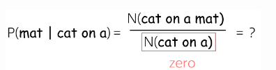
Если хотя бы одна n-грамма из предложения не встретилась в корпусе, произведение обнуляется, и модель объявляет совершенно нормальное предложение невозможным. Это не редкий случай: по закону Ципфа большинство $n$-грамм языка встречается очень редко, поэтому в любом новом тексте почти гарантированно найдётся незнакомая $n$-грамма.
Как бороться с нулями
Идея: отнять немного вероятностной массы у наблюдавшихся событий и раздать её ненаблюдавшимся, чтобы ни у кого не было ровно нуля.
Простейший вариант — сглаживание Лапласа (add-one): прибавить единицу к каждому счётчику.
$$ P_{\text{Lap}}(y_t \mid c) = \frac{N(c, y_t) + 1}{N(c) + |V|}. $$
В знаменателе прибавляется $|V|$, потому что единицу мы добавили каждому из $|V|$ возможных продолжений — иначе вероятности не просуммируются в единицу.
Метод простой, но грубый: при большом словаре он отдаёт непропорционально много массы никогда не встречавшимся событиям. Поэтому чаще используют add-$k$ с $k < 1$ или более умные схемы (Кнесера — Нея).
Идея: если длинного контекста не хватило, использовать более короткий.
- есть надёжная статистика по триграмме — используем триграмму;
- нет — откатываемся к биграмме;
- нет и биграммы — используем униграмму.
Чтобы вероятности по-прежнему суммировались в единицу, у более длинных $n$-грамм отбирают часть массы (дисконтируют) и передают её вниз по цепочке. Классическая реализация — Katz backoff.
Идея мягче отката: не переключаться между уровнями, а всегда смешивать их все с весами:
$$ \tilde p = \lambda_3 p_{\text{tri}} + \lambda_2 p_{\text{bi}} + \lambda_1 p_{\text{uni}}, \qquad \lambda_i \ge 0,\quad \sum_i \lambda_i = 1. $$
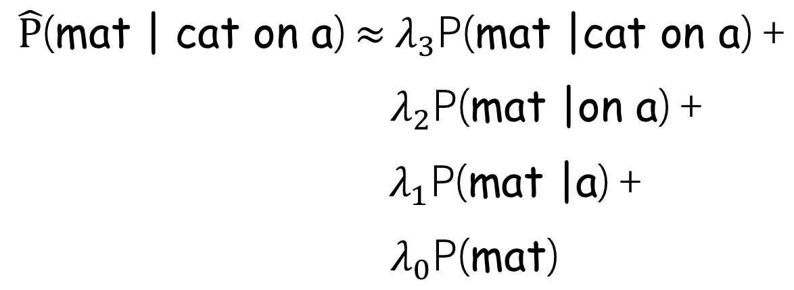
Интерполяция: итоговая вероятность — взвешенная смесь оценок разных порядков. Даже если триграмма не встречалась и её вклад нулевой, униграммная составляющая не даст итогу обнулиться. Веса $\lambda_i$ подбираются на отложенной выборке (например, EM-алгоритмом). Часто их делают зависимыми от контекста: если триграмма встречалась много раз, ей дают больший вес; если один раз — меньший.
Лучшее из классических сглаживаний. Его ключевая идея — считать не частоту слова, а разнообразие его контекстов.
Пример, объясняющий зачем. Слово «Франциско» очень частотно, но встречается почти исключительно после «Сан». Обычная униграммная модель, откатываясь, даст «Франциско» высокую вероятность в любом контексте, что абсурдно.
Kneser–Ney заменяет униграммную оценку на «в скольких различных контекстах встречалось слово». У «Франциско» это число крошечное, поэтому в откате оно получает низкую вероятность. Именно эта поправка и делает метод заметно лучше остальных.
Униграммная модель («слова по частоте, без контекста»):
и в на что то был не с его как
Биграммная:
он был не так как и в этом году в москве
Триграммная:
он был не так уж и плохо что она не могла
Локально текст становится всё более гладким, но связного смысла не появляется ни на каком $n$: модель помнит два слова и уже на третьем шаге забывает, о чём шла речь. Это наглядная иллюстрация принципиального потолка подхода.
- Короткая память. Дальше $n-1$ слов модель не видит ничего, а языковые зависимости бывают длиннее.
- Нет обобщения между словами. «Купил кота» и «приобрёл котёнка» — совершенно разные $n$-граммы; статистика одной ничего не даёт другой. Слова здесь атомарные символы без всякой семантики — по сути, это те же one-hot представления.
- Экспоненциальный рост. Число параметров $|V|^n$, поэтому увеличить память нельзя даже при желании.
- Разреженность неустранима. Сглаживание смягчает симптом, но не лечит причину.
Нейронные языковые модели снимают первые два пункта: эмбеддинги дают обобщение между похожими словами, а рекуррентность или внимание — длинную память при фиксированном числе параметров.
Несмотря на архаичность, они не исчезли:
- распознавание речи и клавиатурные подсказки на устройстве, где нужна миллисекундная задержка и нет ресурсов на нейросеть;
- быстрая фильтрация кандидатов перед дорогой моделью;
- вспомогательные метрики: BLEU считается по совпадению $n$-грамм, а модифицированная точность в нём — прямое наследие этой техники;
- бейзлайн для оценки перплексии, с которым сравнивают нейронные модели.
В чём суть марковского предположения для языковых моделей?
Вероятность следующего токена зависит только от фиксированного числа последних токенов, а не от всей истории: $P(y_t \mid y_1,\dots,y_{t-1}) \approx P(y_t \mid y_{t-n+1},\dots,y_{t-1})$. Обрезание контекста делает его повторяющимся в корпусе, благодаря чему по нему можно собрать статистику.
Что такое триграммная языковая модель?
Модель, в которой вероятность следующего слова зависит только от двух предыдущих: $P(y_t \mid y_{t-2}, y_{t-1})$, оцениваемая как отношение числа вхождений триграммы к числу вхождений биграммы-контекста. Все её параметры получаются подсчётом частот, без градиентного обучения.
Как выбирается порядок $n$ и в чём здесь компромисс?
Малое $n$ даёт частые контексты и надёжную статистику, но короткую память. Большое $n$ даёт содержательный контекст, но число возможных $n$-грамм растёт как $|V|^n$, почти все они не встречаются в корпусе, и статистика становится ненадёжной. Практический диапазон — $n = 3$–$5$.
Почему при вычислении $n$-граммных вероятностей возникают нули и чем они опасны?
Ноль в числителе означает, что данное продолжение контекста не встречалось: вероятность становится нулевой и обнуляет произведение по всему предложению, объявляя нормальный текст невозможным. Ноль в знаменателе означает, что не встречался сам контекст, — вероятность вообще не определена. По закону Ципфа большинство $n$-грамм редки, поэтому в любом новом тексте почти наверняка найдётся незнакомая.
Что такое сглаживание и как работает сглаживание Лапласа?
Сглаживание перераспределяет часть вероятностной массы от наблюдавшихся событий к ненаблюдавшимся, чтобы ни одна вероятность не была нулевой. Лапласово (add-one) прибавляет единицу к каждому счётчику: $P = \frac{N(c,y)+1}{N(c)+|V|}$, где $|V|$ в знаменателе нужно для нормировки. Метод простой, но при большом словаре отдаёт слишком много массы никогда не встречавшимся событиям.
Чем откат (backoff) отличается от интерполяции?
Откат переключается между уровнями: если триграммы нет, используется биграмма, если нет и её — униграмма, причём у длинных $n$-грамм часть массы дисконтируется в пользу коротких (Katz backoff). Интерполяция всегда смешивает все уровни с весами $\lambda_i$, подбираемыми на отложенной выборке: $\tilde p = \lambda_3 p_{\text{tri}} + \lambda_2 p_{\text{bi}} + \lambda_1 p_{\text{uni}}$.
В чём идея сглаживания Кнесера — Нея?
Использовать при откате не частоту слова, а число различных контекстов, в которых оно встречалось. Слово «Франциско» частотно, но встречается почти только после «Сан», поэтому обычная униграммная оценка даёт ему абсурдно высокую вероятность в любом контексте. Оценка по разнообразию контекстов исправляет это и делает метод лучшим среди классических сглаживаний.
Почему $n$-граммные модели уступили нейронным языковым моделям?
Они помнят только $n-1$ последних слов и не могут расширить память, поскольку число параметров растёт как $|V|^n$. Кроме того, слова для них — атомарные символы без семантики: статистика по «купил кота» ничего не даёт для «приобрёл котёнка». Нейронные LM решают обе проблемы: эмбеддинги обеспечивают обобщение между похожими словами, а рекуррентность или внимание — длинный контекст при фиксированном числе параметров.
-
Нейронные языковые модели
Нейронная языковая модель оценивает $P(y_t \mid y_{<t})$ не подсчётом частот, а вычислением: контекст прогоняется через нейросеть, которая выдаёт распределение вероятностей по всему словарю.
Разница с $n$-граммами принципиальна. Там модель — это таблица заученных частот, и незнакомый контекст она обработать не может. Здесь модель — это функция с обучаемыми параметрами, которая для любого, в том числе никогда не виденного, контекста что-то вычислит.
Простыми словами: вместо того чтобы помнить, что шло после каждой конкретной пары слов, сеть учится понимать, что такое контекст вообще, и предсказывать по смыслу.
Все нейронные языковые модели, независимо от архитектуры, состоят из двух блоков:
- Кодирование контекста — зависит от архитектуры (model-specific). Задача: сжать последовательность предыдущих токенов в один вектор $h_t \in \mathbb{R}^d$. Это может делать полносвязная сеть над фиксированным окном (Bengio et al., 2003), RNN/LSTM, свёрточная сеть или трансформер.
- Предсказание распределения — одинаково у всех (model-agnostic). Задача: из вектора $h_t$ получить вероятности по $|V|$ токенам. Это линейный слой плюс softmax.
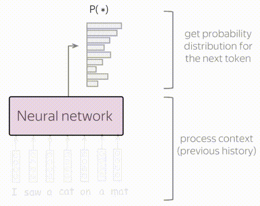
Предсказание вероятностного распределения следующего токена: контекст сжимается в вектор, из вектора получается вероятность каждого слова словаря. Полезно держать это разделение в голове: когда говорят «RNN-LM против трансформерной LM», отличается только первый блок. Второй везде один и тот же.
Формально нейронная LM — обычный многоклассовый классификатор:
- вход — контекст (предыдущие токены);
- классы — все токены словаря, их $|V|$ штук;
- выход — распределение вероятностей по классам;
- функция потерь — кросс-энтропия.
Единственное, что делает эту задачу особенной, — количество классов (десятки тысяч вместо десятка) и то, что размеченные данные берутся из самого текста бесплатно.
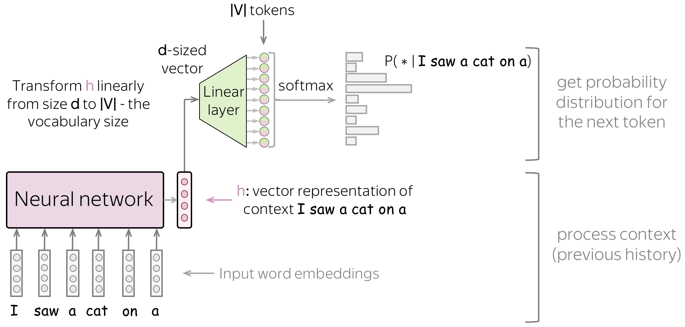
Схема нейронной языковой модели: токены контекста превращаются в эмбеддинги, сеть сжимает их в вектор контекста, линейный слой разворачивает его в $|V|$ логитов, softmax превращает логиты в вероятности. По шагам:
- Токены контекста заменяются на эмбеддинги — плотные векторы размерности $d$.
- Сеть обрабатывает их и выдаёт вектор контекста $h_t \in \mathbb{R}^d$.
- Линейный слой превращает $h_t$ в вектор логитов размерности $|V|$.
- Softmax превращает логиты в вероятности.
Размерности не сходятся: вектор контекста имеет размерность $d$ (обычно 300–4096), а нам нужен вектор размерности $|V|$ (обычно $30\,000$–$150\,000$) — по одному числу на каждый возможный следующий токен.
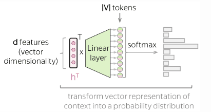
Линейный слой — это матрица размера $d \times |V|$, которая переводит вектор контекста в вектор оценок для каждого токена словаря. Линейный слой — это матрица $E \in \mathbb{R}^{d \times |V|}$, и умножение $h_t^{\top} E$ даёт нужные $|V|$ чисел. После него применяется softmax, превращающий сырые логиты в вероятности.
Ключевое наблюдение, объясняющее, что происходит на самом деле.
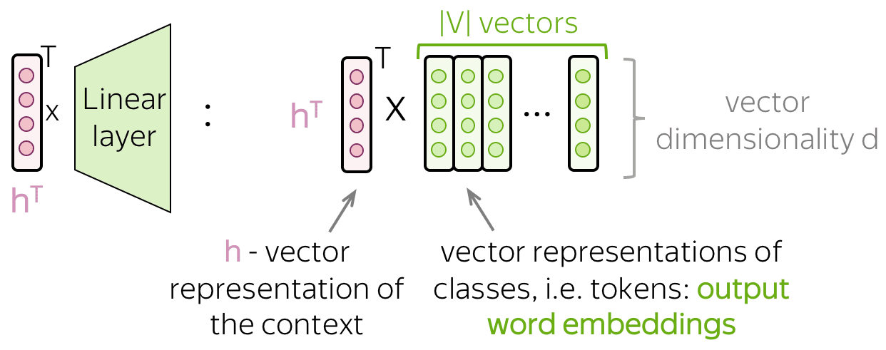
Каждый столбец выходной матрицы — вектор размерности $d$, привязанный к конкретному токену словаря. Это «эмбеддинги ответов»: представления токенов в роли предсказываемых. Матрица $E$ размера $d \times |V|$ состоит из $|V|$ столбцов, каждый длины $d$. Столбец $e_w$ можно рассматривать как эмбеддинг токена $w$ в роли ответа — по аналогии с двумя векторами в Word2Vec, где были вектор центрального слова и вектор контекстного.
Соберём всё вместе. Умножение $h_t^{\top} E$ — это набор скалярных произведений вектора контекста с каждым из $|V|$ эмбеддингов ответов:
$$ p(y_t \mid y_{<t}) = \frac{\exp\big(h_t^{\top} e_{y_t}\big)}{\sum_{w \in V} \exp\big(h_t^{\top} e_{w}\big)}. $$
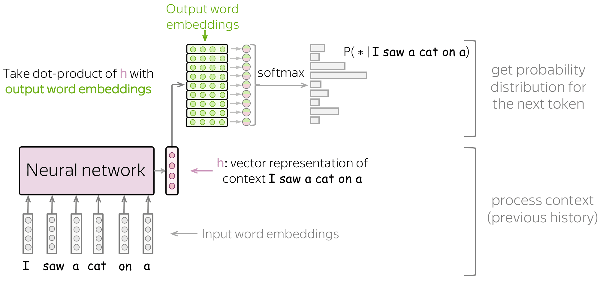
Вектор контекста сравнивается скалярным произведением с эмбеддингом каждого токена словаря; чем ближе токен к контексту в этом пространстве, тем выше его вероятность. Отсюда очень наглядная интерпретация: модель помещает контекст в то же пространство, где живут токены, и выбирает токены, оказавшиеся ближе всего. Обучение — это подгонка обоих наборов векторов так, чтобы контекст всегда «указывал» на правильное продолжение.
Мини-эксперимент. Модель видела в обучении фразу «кот пьёт молоко», но никогда не видела «котёнок пьёт молоко».
- Триграммная модель: контекст «котёнок пьёт» ей незнаком, статистики нет, приходится откатываться к биграмме и терять информацию.
- Нейронная модель: эмбеддинг «котёнок» близок к эмбеддингу «кот» (они выучились из похожих контекстов), поэтому вектор контекста $h_t$ получится почти таким же, как для «кот пьёт», и модель уверенно предскажет «молоко».
В этом и состоит главный выигрыш: обобщение происходит в пространстве эмбеддингов, а не по точному совпадению строк. Никакое сглаживание $n$-грамм этого дать не может, потому что для него «кот» и «котёнок» — просто два разных символа.
На практике часто связывают входную матрицу эмбеддингов и выходную матрицу $E$, делая их одной и той же (transposed weight tying).
Мотивация двойная. Экономия: у модели со словарём $50\,000$ и $d = 1024$ каждая матрица содержит около 51 миллиона параметров, и одна из них исчезает. И регуляризация: связывание заставляет входное и выходное представления токена совпадать, что обычно улучшает перплексию.
Приём стандартен для GPT-подобных моделей.
При $|V| = 50\,000$ и $d = 1024$ последний слой требует 51 миллион умножений на каждый токен. Для длинных последовательностей и больших батчей это часто самая дорогая часть модели — дороже, чем все слои внимания.
Способы удешевить (те же, что обсуждались у Word2Vec, плюс специфичные для LM):
- иерархический softmax — дерево над словарём, $O(\log |V|)$;
- sampled softmax / noise contrastive estimation — нормировка по подвыборке словаря вместо полного, только при обучении;
- adaptive softmax — частые слова считаются точно, редкие — в сжатом низкоразмерном пространстве;
- уменьшение словаря субсловной токенизацией — главная причина, по которой BPE и WordPiece вытеснили пословные словари.
Нейронная LM избавилась от жёсткого окна $n$-граммы, но не от ограничений вообще:
- у полносвязной модели над окном контекст по-прежнему фиксирован;
- у RNN формально бесконечен, а фактически — несколько десятков токенов, дальше информация затухает;
- у трансформера ограничен длиной контекстного окна, потому что внимание требует $O(L^2)$ памяти.
Разница в том, что теперь это ограничение архитектурное и преодолимое (более длинный контекст, разреженное внимание, рекуррентные состояния), а у $n$-грамм оно было заложено в самой конструкции и упиралось в экспоненциальный рост таблицы.
Что делает нейронная языковая модель в отличие от $n$-граммной?
Она вычисляет $P(y_t \mid y_{<t})$ функцией с обучаемыми параметрами, а не достаёт из таблицы заученных частот. Контекст кодируется в плотный вектор, из которого предсказывается распределение по словарю, поэтому модель обрабатывает и никогда не виденные контексты.
Из каких двух универсальных шагов состоит нейронная LM?
Кодирование контекста в вектор $h_t$ — зависит от архитектуры (полносвязная сеть над окном, RNN, трансформер) — и предсказание распределения следующего токена через линейный слой плюс softmax, одинаковое у всех архитектур. Спор «RNN против трансформера» касается только первого блока.
Зачем нужен линейный слой в конце нейронной LM?
Вектор контекста имеет размерность $d$ (сотни или тысячи), а нужен вектор размерности $|V|$ — по одной оценке на каждый токен словаря. Линейный слой — это матрица $d \times |V|$, переводящая одно в другое и дающая сырые логиты, к которым затем применяется softmax.
Как интерпретируется скалярное произведение $h_t^{\top} e_{y_t}$ в softmax?
Как мера близости между представлением контекста и эмбеддингом токена в общем пространстве. Модель помещает контекст туда же, где живут токены, и присваивает наибольшую вероятность тем токенам, которые оказались ближе всего. Обучение подгоняет оба набора векторов так, чтобы контекст «указывал» на правильное продолжение.
Почему у каждого токена в нейронной LM фактически два эмбеддинга?
Один используется, когда токен подаётся на вход как часть контекста, другой — столбец выходной матрицы — когда токен выступает предсказываемым ответом. Это те же две роли, что у Word2Vec. На практике их часто связывают (weight tying), экономя десятки миллионов параметров и улучшая перплексию.
Почему нейронная LM обобщает лучше $n$-граммной?
Обобщение происходит в пространстве эмбеддингов, а не по точному совпадению строк. Если модель видела «кот пьёт молоко», то для контекста «котёнок пьёт» она получит почти такой же вектор контекста, поскольку эмбеддинги «кот» и «котёнок» близки, и уверенно предскажет «молоко». Для $n$-граммной модели это два никак не связанных символа, и никакое сглаживание связи не создаёт.
Почему softmax по большому словарю — узкое место и как его удешевляют?
При словаре в 50 тысяч и размерности 1024 последний слой требует около 51 миллиона умножений на каждый токен, что нередко дороже всех слоёв внимания вместе. Ускоряют иерархическим softmax ($O(\log|V|)$), sampled softmax и NCE (нормировка по подвыборке при обучении), adaptive softmax (частые слова точно, редкие в сжатом пространстве) и, главное, сокращением словаря через субсловную токенизацию.
-
Обучение языковых моделей
Нейронная языковая модель обучается предсказывать распределение следующего токена по предыдущему контексту. На каждой позиции мы максимизируем вероятность, которую модель присвоила правильному токену.
Никакой ручной разметки для этого не нужно: правильный ответ — просто следующее слово в тексте. Поэтому обучение называется self-supervised (самообучаемым): метки есть, но их создаёт сам корпус.
Пусть $y_1, \dots, y_n$ — обучающая последовательность токенов. На шаге $t$ модель выдаёт распределение по всему словарю:
$$ p^{(t)} = p(\ast \mid y_1, \dots, y_{t-1}) \in \mathbb{R}^{|V|}, \qquad \sum_i p^{(t)}_i = 1. $$
Целевая метка — one-hot вектор:
$$ p^{\ast}=\begin{bmatrix}0\\ \vdots\\ 1\\ \vdots\\ 0\end{bmatrix}, $$
где единица стоит на позиции правильного токена $y_t$, остальные элементы нулевые.
То есть идеал, к которому мы толкаем модель: вероятность правильного токена равна 1, всех остальных — 0.
Расхождение между предсказанным и целевым распределениями измеряется кросс-энтропией:
$$ L(\textcolor{red}{p^{\ast}}, \textcolor{blue}{p}) = -\sum_{i=1}^{|V|} \textcolor{red}{p_i^{\ast}} \log \textcolor{blue}{p_i}. $$
Но целевой вектор one-hot: все $p_i^\ast$ нулевые, кроме одного. Значит, в сумме выживает ровно одно слагаемое, и формула схлопывается:
$$ L = -\log p_{y_t} = -\log p(y_t \mid y_{<t}). $$
Читается это так: штраф равен минус логарифму вероятности, которую модель дала правильному ответу. Дала 0.9 — штраф 0.11. Дала 0.1 — штраф 2.3. Дала почти 0 — штраф уходит в бесконечность.
Обратите внимание, что вероятности неправильных токенов в формуле не участвуют явно. Они наказываются косвенно: softmax нормирует всё в единицу, поэтому поднять вероятность правильного токена можно только за счёт остальных.
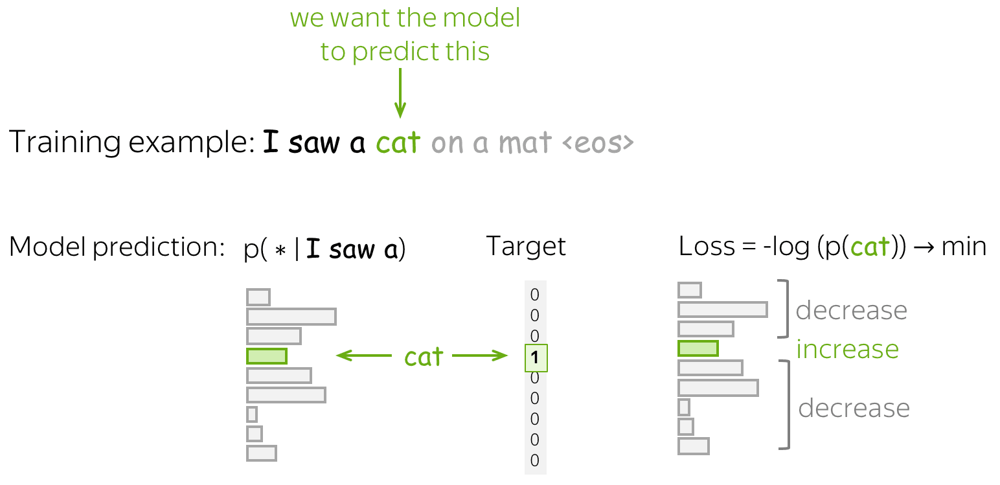
Модель видит контекст, выдаёт распределение по словарю и получает штраф тем больший, чем меньшую вероятность она присвоила фактически следующему токену. Градиент поднимает столбик правильного токена и опускает остальные. Контекст: «кот сидит на». Правильный следующий токен: «коврике».
- Модель выдала $p(\text{«коврике»}) = 0.4$ $\to$ $L = -\log 0.4 = 0.92$.
- Модель выдала $p(\text{«коврике»}) = 0.05$ $\to$ $L = -\log 0.05 = 3.0$.
Градиент этого штрафа увеличивает логит «коврике» и уменьшает логиты всех прочих слов пропорционально их текущей вероятности — то есть сильнее всего наказываются те неправильные слова, в которых модель была уверена.
Потери для всего текста — сумма по позициям:
$$ L = -\sum_{t=1}^{n} \log p(y_t \mid y_{<t}). $$
Это прямое следствие цепного правила: вероятность последовательности — произведение условных вероятностей, логарифм произведения — сумма логарифмов, а минус превращает максимизацию правдоподобия в минимизацию потерь.
На практике сумму делят на число токенов, получая среднюю потерю на токен. Это делает значение сравнимым между текстами разной длины и батчами разного размера — и именно из этой величины получается перплексия: $\text{PPL} = e^{L_{\text{avg}}}$.
Ключевая техника, без которой обучение было бы безнадёжно медленным.
При обучении на шаге $t$ модель получает на вход истинные предыдущие токены $y_1, \dots, y_{t-1}$ из обучающего текста, а не свои собственные предсказания. Это и называется teacher forcing — «обучение с подсказкой учителя».
Практическое следствие огромно: все позиции последовательности становятся независимыми задачами, и трансформер может посчитать потери для всех $n$ позиций сразу, одним проходом, применив причинную (causal) маску, чтобы позиция $t$ не видела будущего. Без teacher forcing пришлось бы генерировать текст пошагово и на обучении, что убило бы весь параллелизм.
У удобства есть цена, и она серьёзная.
При обучении модель на каждом шаге видит идеальный, безошибочный контекст из настоящего текста. При генерации она видит контекст, который построила сама, — со всеми своими ошибками.
Это расхождение распределений и называется exposure bias: модель никогда не тренировалась восстанавливаться после собственных ошибок. Одна неудачная подстановка уводит контекст в область, которой в обучающих данных не было, следующий шаг становится ещё хуже, и модель уходит в штопор — отсюда знакомые всем зацикливания и вырождение длинных генераций.
Способы смягчения: scheduled sampling (иногда подавать модели её собственные предсказания во время обучения), обучение на уровне последовательностей с RL-подобными целями, а на практике — качественные стратегии декодирования и дообучение с обратной связью (RLHF, DPO), которое учит модель на её же генерациях.
Средняя потеря на токен $L_{\text{avg}}$ — это в точности логарифм перплексии. Интерпретация:
- $L_{\text{avg}} = \log |V|$ — модель выдаёт равномерное распределение, то есть не выучила вообще ничего;
- $L_{\text{avg}} = 4.0$ — перплексия $e^{4} \approx 55$: модель в среднем «колеблется между 55 вариантами»;
- $L_{\text{avg}} = 2.5$ — перплексия около 12;
- $L_{\text{avg}} \to 0$ — модель почти уверена в каждом токене.
Важная оговорка: низкий лосс на обучающей выборке может означать простое запоминание. Осмысленно смотреть только на отложенную выборку, которой модель не видела.
Классическая ловушка при сравнении моделей. Перплексия считается на токен, а токены у разных моделей разные.
Модель с символьной токенизацией предсказывает следующий символ — задача лёгкая, перплексия будет около 3. Модель со словарём в 50 тысяч BPE-токенов предсказывает целый кусок слова — задача труднее, перплексия будет 15–30. Это не значит, что первая модель лучше.
Сравнивать перплексии можно только при идентичной токенизации и одинаковом тестовом наборе. Корректная альтернатива — приводить к битам на символ (bits-per-character), что не зависит от разбиения.
- Батчинг по длине. Тексты режут на куски фиксированной длины (context length) — так все примеры в батче одинаковы и вычисления не тратятся на паддинг.
- Паддинг маскируется. Позиции-заполнители исключаются из потерь, иначе модель учится предсказывать
<pad>. - Label smoothing. Вместо жёсткого one-hot иногда берут цель $(1-\varepsilon)$ для правильного токена и $\varepsilon/(|V|-1)$ для остальных — это снижает переуверенность и обычно улучшает качество генерации, хотя формально ухудшает перплексию.
- Градиентный клиппинг нужен почти всегда: у языковых моделей встречаются редкие батчи с огромным градиентом, способные испортить веса.
- Chinchilla — сколько токенов на параметр нужно и почему в продакшене это правило сознательно нарушают.
- RoBERTa — насколько сильно недообученной может оказаться модель, которую все считали эталонной.
- OPT — как обучение больших моделей выглядит на самом деле: отказы железа, откаты, расходимости.
Как нейронные языковые модели обучаются предсказывать следующий токен?
На каждой позиции $t$ модель выдаёт распределение $p(\cdot \mid y_{<t})$ по всему словарю, а функция потерь — кросс-энтропия относительно истинного токена $y_t$. Разметка не требуется: правильный ответ содержится в самом тексте, поэтому обучение self-supervised.
Что является целевой меткой при обучении языковой модели?
One-hot вектор размера $|V|$: единица на позиции истинного следующего токена, нули на всех остальных. Идеал, к которому толкается модель, — вероятность 1 у правильного токена и 0 у прочих.
Почему кросс-энтропия упрощается до $-\log p(y_t \mid y_{<t})$?
Потому что целевое распределение one-hot: в сумме $-\sum_i p_i^\ast \log p_i$ все слагаемые с $p_i^\ast = 0$ исчезают, и остаётся ровно одно — логарифм вероятности правильного токена. Неправильные токены наказываются косвенно, через нормировку softmax: поднять вероятность правильного можно только за счёт остальных.
Почему функция потерь для целой последовательности записывается как сумма?
По цепному правилу вероятность последовательности — произведение условных вероятностей токенов; логарифм произведения равен сумме логарифмов, а смена знака превращает максимизацию правдоподобия в минимизацию потерь. На практике сумму делят на число токенов, получая среднюю потерю, из которой экспонентой получается перплексия.
Что такое teacher forcing и зачем он нужен?
Приём, при котором на обучении модель получает на вход истинные предыдущие токены из корпуса, а не собственные предсказания. Благодаря этому позиции становятся независимыми задачами, и трансформер вычисляет потери для всей последовательности за один проход с причинной маской. Без teacher forcing обучение пришлось бы вести пошагово, потеряв весь параллелизм.
Как teacher forcing связан с проблемой exposure bias?
При обучении модель всегда видит идеальный контекст из настоящего текста, а при генерации — контекст, построенный ею самой, с её собственными ошибками. Это расхождение распределений и есть exposure bias: модель никогда не училась восстанавливаться после своих ошибок, поэтому одна неудачная подстановка уводит генерацию в область, которой не было в обучении, вызывая зацикливания и деградацию длинных текстов.
Что означает низкое значение лосса при обучении языковой модели?
Что модель присваивает высокую вероятность фактически встречающимся токенам. Средняя потеря на токен равна логарифму перплексии: значение $\log|V|$ соответствует полному незнанию, значение 4.0 — перплексии около 55, значение 2.5 — примерно 12. Смотреть нужно на отложенной выборке: низкий лосс на обучающей может означать запоминание.
Почему нельзя сравнивать перплексии моделей с разной токенизацией?
Перплексия считается на токен, а токены у моделей разные: предсказать следующий символ куда легче, чем следующий BPE-кусок, поэтому символьная модель покажет перплексию около 3, а модель со словарём в 50 тысяч — 15–30, при этом не будучи хуже. Сравнение корректно только при идентичной токенизации и тестовом наборе, либо после приведения к битам на символ.
-
Стратегии генерации текста
Языковая модель на каждом шаге выдаёт распределение вероятностей по всему словарю. Она не выбирает токен — она только оценивает варианты. Как именно превратить распределение в конкретный токен, модель не определяет: это отдельный алгоритм, называемый стратегией декодирования (или генерации).
Простыми словами: модель выдаёт список кандидатов с оценками, а стратегия решает, кого из них взять. Одна и та же модель с разными стратегиями порождает совершенно разные тексты — от сухого протокола до потока сознания.
Вся настройка генерации — это торг между двумя желаниями:
- осмысленность (coherence) — текст связный, грамматичный, не противоречит сам себе;
- разнообразие (diversity) — модель не повторяет один и тот же ответ и способна порождать разные продолжения.
Эти свойства конфликтуют. Чем консервативнее выбор, тем связнее и скучнее текст; чем свободнее — тем интереснее и рискованнее. Универсально «правильной» точки нет, она зависит от задачи.
Детерминированные стратегии
Самый простой алгоритм: на каждом шаге брать токен с максимальной вероятностью.
$$ y_t = \arg\max_{w \in V} p(w \mid y_{<t}). $$
Плюсы: детерминированность (один и тот же ввод всегда даёт один и тот же вывод — это критично для тестов и воспроизводимости), скорость, максимальная связность.
Минусы: текст однообразный и часто зацикливается («очень очень очень хорошо»), а главное — как обсуждалось ранее, локально лучший токен не даёт глобально самой вероятной последовательности.
Beam search держит $K$ лучших частичных гипотез одновременно и на каждом шаге расширяет каждую, оставляя лучшие $K$ из всех продолжений. Подробнее он разобран в вопросе про Seq2Seq.
Важное практическое замечание: beam search хорош там, где существует правильный ответ — перевод, суммаризация, распознавание речи. Для открытой генерации (диалог, творческий текст) он даёт заметно худший результат, чем сэмплирование: тексты получаются короткими, безопасными и до странности предсказуемыми.
Контринтуитивный, но экспериментально подтверждённый факт (Holtzman et al., 2019).
Естественная человеческая речь не состоит из самых вероятных слов. Если посмотреть на реальный текст глазами языковой модели, окажется, что вероятность слов там всё время скачет: люди регулярно выбирают неожиданные слова. Текст же, составленный из максимально вероятных токенов, обладает подозрительно ровной высокой вероятностью — и читается как машинный.
Отсюда следует, что максимизация правдоподобия — неправильная цель для открытой генерации. Нужно не искать самый вероятный текст, а сэмплировать из распределения, похожего на человеческое.
Сэмплирование
Вместо argmax токен вытягивается случайно из предсказанного распределения: токен с вероятностью 0.3 будет выбран примерно в 30% случаев.
Это возвращает разнообразие и убирает зацикливания. Но появляется новая беда: у распределения по словарю в 50 тысяч токенов есть длинный хвост из десятков тысяч слов с крошечными вероятностями. Суммарно этот хвост может весить 5–10%, и раз в 10–20 токенов из него будет вытянуто что-то совершенно неуместное.
Одно неудачное слово ломает контекст, следующие шаги ухудшают его ещё сильнее — генерация уходит в бессмыслицу. Поэтому чистое сэмплирование почти никогда не используют без обрезки хвоста.
Температура меняет форму распределения перед сэмплированием. Логиты делятся на параметр $\textcolor{red}{\tau}$ до применения softmax:
$$ \frac{\exp(h^{\top}w)}{\sum_{w_i\in V}\exp(h^{\top}w_i)} \ \longrightarrow\ \frac{\exp\!\big(\frac{h^{\top}w}{\textcolor{red}{\tau}}\big)}{\sum_{w_i\in V}\exp\!\big(\frac{h^{\top}w_i}{\textcolor{red}{\tau}}\big)}. $$
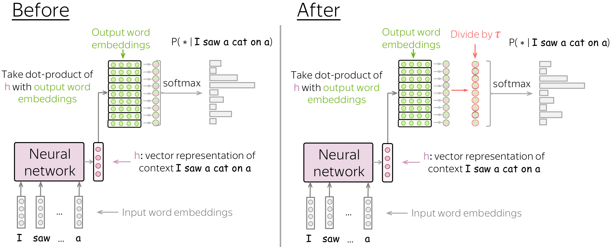
Одни и те же логиты при разной температуре: низкая делает распределение острым (почти вся масса у лидера), высокая — плоским (шансы выравниваются). Разберём механику, а не просто запомним правило.
Softmax — экспонента от логита, поэтому важны разности логитов. Деление на $\tau$ масштабирует все разности одинаково:
- при $\tau < 1$ разности увеличиваются, экспонента усиливает их ещё сильнее, и лидер забирает почти всю вероятностную массу — распределение становится острым;
- при $\tau > 1$ разности сжимаются, вероятности выравниваются — распределение становится плоским;
- при $\tau = 1$ ничего не меняется.
Именно поэтому температура — не «уровень креативности» в переносном смысле, а буквально параметр остроты распределения.
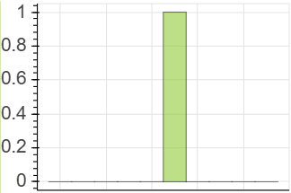
При $\tau \to 0$ вся масса стягивается к одному токену: сэмплирование вырождается в жадное декодирование. 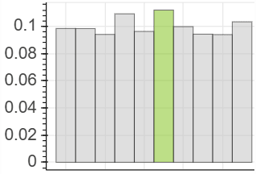
При $\tau \to \infty$ распределение становится равномерным: модель выбирает слова наугад, независимо от того, что она о них думает. - $\tau \to 0$ — сэмплирование становится эквивалентно greedy: модель всегда выбирает лидера. (В библиотеках
temperature=0обычно так и реализовано — как переключение на argmax, потому что буквальное деление на ноль невозможно.) - $\tau \to \infty$ — распределение стремится к равномерному, модель генерирует случайный набор слов.
Пусть модель выдала логиты для четырёх токенов: $[4.0,\ 3.0,\ 2.0,\ 1.0]$.
$\tau$ Вероятности $0.5$ $[0.86,\ 0.12,\ 0.02,\ 0.00]$ $1.0$ $[0.64,\ 0.24,\ 0.09,\ 0.03]$ $2.0$ $[0.46,\ 0.28,\ 0.17,\ 0.10]$ Видно, как при $\tau = 0.5$ лидер собирает 86% массы, а при $\tau = 2$ — меньше половины, и четвёртый токен, почти невозможный при $\tau = 1$, получает вполне реальные 10% шансов.
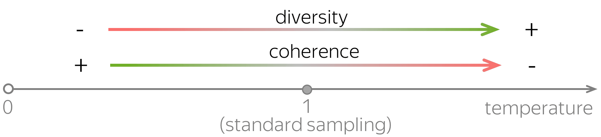
Рост температуры увеличивает разнообразие и одновременно снижает связность; выбор значения — это выбор точки на этой кривой под конкретную задачу. - Высокая $\tau$ ($1.0$–$1.5$) — больше разнообразия и «креативности», но растёт риск бессмыслицы.
- Низкая $\tau$ ($0.1$–$0.5$) — консервативно, связно, предсказуемо, но однообразно.
Практические ориентиры: код и извлечение фактов — $0$–$0.3$; деловая переписка и суммаризация — $0.3$–$0.7$; творческий текст и брейнсторм — $0.8$–$1.2$.
Ключевое ограничение, из-за которого одной температуры недостаточно.
Понижение $\tau$ делает плохие токены менее вероятными, но не обнуляет их: у слова с вероятностью $10^{-5}$ шанс остаётся. При генерации в тысячу токенов такое событие практически неизбежно.
Повышение $\tau$, наоборот, поднимает весь мусорный хвост целиком.
Поэтому температуру почти всегда комбинируют с методами, которые явно отсекают маловероятные токены.
Обрезка распределения
Оставить только $K$ самых вероятных токенов, обнулить всё остальное, перенормировать и сэмплировать из этих $K$.
Идея прямолинейная: хвост, из которого приходит мусор, физически удаляется, а внутри топа сохраняется случайность. Типичные значения $K = 40$–$50$.
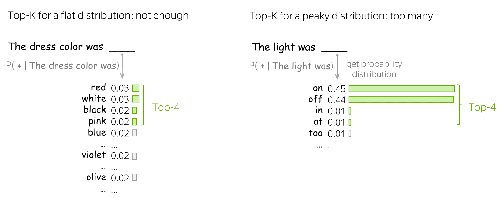
Слева «плоское» распределение: разумных продолжений много, и жёсткое $K$ отрезает часть хороших вариантов. Справа «острое»: разумных продолжений один-два, и то же самое $K$ впускает десятки заведомо плохих токенов. Проблема в том, что форма распределения меняется от шага к шагу, а $K$ фиксировано.
- После «Столица Франции —» распределение острое: правильный ответ один, его вероятность 0.95. Взяв $K = 50$, мы допускаем к жеребьёвке 49 неправильных вариантов.
- После «Он вошёл в комнату и» распределение плоское: сотни продолжений одинаково уместны. Взяв $K = 50$, мы искусственно обрубаем разнообразие.
Одно значение $K$ не может быть правильным в обоих случаях.
Вместо фиксированного числа токенов берётся минимальный набор, суммарная вероятность которого не меньше $p$.
Алгоритм: отсортировать токены по убыванию вероятности, набирать их, пока накопленная сумма не достигнет $p$ (обычно $0.9$–$0.95$), остальное отбросить, перенормировать и сэмплировать.
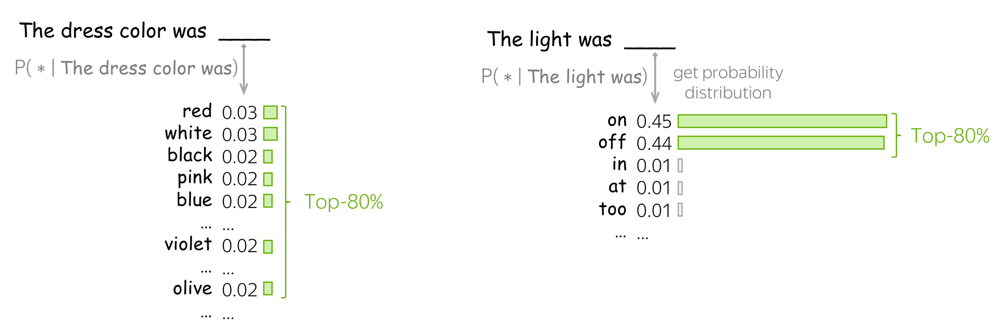
Размер «ядра» (nucleus) подстраивается сам: у острого распределения в него попадают два-три токена, у плоского — сотня. Отсекается ровно хвост, а не фиксированное число вариантов. Потому что он адаптивен по построению: число кандидатов определяется формой распределения, а не задаётся заранее.
- Острое распределение («Столица Франции —»): чтобы набрать 0.9, хватает одного-двух токенов. Ядро крошечное, мусор не проходит.
- Плоское распределение («Он вошёл в комнату и»): чтобы набрать 0.9, нужны сотни токенов. Ядро большое, разнообразие сохраняется.
Один и тот же параметр $p = 0.9$ ведёт себя правильно в обоих случаях, тогда как один и тот же $K$ — ни в одном. Именно поэтому nucleus sampling стал стандартом по умолчанию в большинстве API.
На практике параметры применяются последовательно и почти всегда вместе:
- логиты делятся на температуру;
- применяется
top_k(если задан); - применяется
top_p; - распределение перенормируется, и из него сэмплируется токен.
Типичный набор для диалогового ассистента:
temperature=0.7,top_p=0.9,top_kне используется. Крутить все три параметра одновременно не стоит — их эффекты перекрываются, и понять, что именно помогло, становится невозможно.Отдельное семейство приёмов против самой заметной болезни генерации — зацикливания:
- repetition penalty — логиты уже встречавшихся токенов делятся на коэффициент (обычно $1.1$–$1.2$);
- frequency penalty — штраф пропорционален числу предыдущих вхождений токена;
- presence penalty — фиксированный штраф за сам факт, что токен уже был;
- no-repeat n-gram size — жёсткий запрет повторять $n$-граммы, уже встречавшиеся в тексте.
Осторожно: чрезмерный штраф ломает нормальный текст, где повторы уместны — имена, термины, служебные слова. Значения выше $1.3$ для repetition penalty обычно вредят.
Сэмплирование делает вывод невоспроизводимым: два одинаковых запроса дают разные ответы. Это ломает A/B-тесты, кеширование, регрессионные тесты и отладку.
Если воспроизводимость нужна, есть два пути: жадное декодирование (
temperature=0) либо фиксация seed генератора случайных чисел. Второй вариант сохраняет разнообразие между разными запросами, но делает конкретный запрос повторяемым.Отдельно стоит помнить, что даже при
temperature=0абсолютная воспроизводимость на GPU не гарантирована: недетерминированность порядка операций с плавающей точкой может изредка менять argmax при почти равных логитах.- Диффузионные языковые модели — генерация всей последовательности сразу за фиксированное число шагов, с возможностью переписать уже раскрытый токен.
- Kimi и Gemini — что меняется в генерации, когда контекст измеряется сотнями тысяч токенов.
Что такое стратегия декодирования и почему она не часть модели?
Модель выдаёт лишь распределение вероятностей по словарю на каждом шаге; способ выбрать из него конкретный токен — отдельный алгоритм. Одна и та же модель с разными стратегиями порождает совершенно разные тексты, поэтому стратегия декодирования — самостоятельная настройка, а не свойство весов.
Что происходит с распределением при температуре $\tau \to 0$ и $\tau \to \infty$?
Логиты делятся на $\tau$, что масштабирует их разности. При $\tau \to 0$ разности растут, распределение становится острым и вся масса стягивается к лидеру — сэмплирование вырождается в жадное декодирование. При $\tau \to \infty$ разности сжимаются, распределение стремится к равномерному, и модель выбирает слова наугад.
Почему одной температуры недостаточно?
Понижение температуры делает плохие токены менее вероятными, но не обнуляет их: при генерации тысячи токенов событие вероятности $10^{-5}$ практически неизбежно, и один неуместный токен ломает весь дальнейший контекст. Повышение температуры, наоборот, поднимает весь мусорный хвост. Нужен механизм, явно отсекающий хвост.
В чём недостаток Top-$k$ сэмплирования?
Число кандидатов фиксировано, а форма распределения меняется на каждом шаге. При остром распределении («Столица Франции —») фиксированное $K=50$ впускает десятки заведомо неверных вариантов; при плоском («Он вошёл в комнату и») то же $K$ искусственно обрубает сотни уместных продолжений. Одно значение не может быть правильным в обоих случаях.
Как работает Top-$p$ (nucleus) сэмплирование и почему оно обычно лучше?
Токены сортируются по убыванию вероятности и набираются, пока накопленная сумма не достигнет $p$ (обычно 0.9–0.95); остальное отбрасывается. Размер набора адаптируется к форме распределения сам: у острого в ядро попадают два-три токена, у плоского — сотни. Поэтому один параметр $p$ ведёт себя корректно в обеих ситуациях.
Почему жадное декодирование не всегда даёт лучший текст?
Во-первых, локально наиболее вероятный токен не входит в глобально самую вероятную последовательность: $\arg\max\prod p_t \ne \prod \arg\max p_t$. Во-вторых, для открытой генерации сама максимизация вероятности — неверная цель: человеческий текст не состоит из самых вероятных слов, и «максимально вероятный» текст читается как машинный и склонен зацикливаться (Holtzman et al., 2019).
Как борются с повторами при генерации?
Repetition penalty делит логиты уже встречавшихся токенов на коэффициент (1.1–1.2), frequency penalty штрафует пропорционально числу вхождений, presence penalty — за сам факт появления, а no-repeat n-gram size жёстко запрещает повтор уже встречавшихся $n$-грамм. Чрезмерные штрафы вредны: они ломают уместные повторы имён, терминов и служебных слов.
Как стратегии генерации применяются на практике в LLM-продуктах?
Для детерминированных задач (код, извлечение фактов, классификация) берут температуру 0–0.3 или жадное декодирование; для деловых текстов и суммаризации — 0.3–0.7; для творческих задач — 0.8–1.2 с
top_p ≈ 0.9. Параметры применяются последовательно: температура $\to$ top-$k$ $\to$ top-$p$ $\to$ перенормировка $\to$ сэмплирование. Когда нужна воспроизводимость, используютtemperature=0либо фиксируют seed.
-
Seq2Seq
Современный NLP стоит на трансформерах, но трансформер вырос именно из seq2seq: энкодер-декодер, механизм внимания, beam search, обучение через кросс-энтропию с teacher forcing — всё это придумано здесь. Не разобравшись в seq2seq, невозможно понять, какую проблему решал трансформер и почему его архитектура выглядит именно так.
Seq2Seq (Sequence to Sequence) — архитектура, которая принимает на вход последовательность и порождает на выходе другую последовательность, вообще говоря другой длины.
Пусть $X = x_1, \dots, x_n$ — входная последовательность токенов, $Y = y_1, \dots, y_m$ — выходная. Существенно, что $m \neq n$: перевод предложения из 8 слов может занять 12 слов.
Простыми словами: одна сеть читает весь вход и «конспектирует» его, вторая по конспекту пишет ответ. Первая называется энкодером, вторая — декодером.
Обычная RNN-классификация выдаёт один ответ на весь вход. Обычная языковая модель порождает текст без всякого входа. Задачи вроде перевода не укладываются ни в одну из схем: и на входе последовательность, и на выходе последовательность, и длины у них разные и заранее неизвестные.
Seq2Seq решает это разделением ролей: энкодер отвечает за понимание входа, декодер — за порождение выхода, а связывает их вектор фиксированной длины.
$$ \begin{aligned} &h_i = f_{in}(x_i,\ h_{i-1}), \\ &h'_t = f_{out}(h'_{t-1},\ y_{t-1},\ c), \\ &y_t = f_{y}(h'_t,\ y_{t-1}), \end{aligned} $$
где $c \equiv h_n$ — контекстный вектор, состояние энкодера после прочтения последнего входного токена.
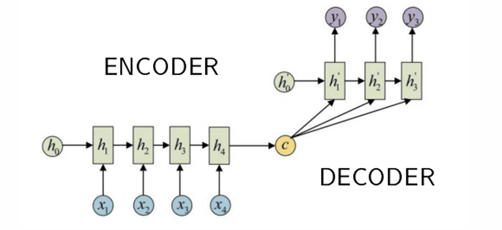
Энкодер (слева) читает входную последовательность и сжимает её в вектор $c$. Декодер (справа) стартует с этого вектора и порождает выход токен за токеном, каждый раз получая на вход собственный предыдущий токен. - $f_{in}$ — шаг энкодера: берёт очередной входной токен $x_i$ и предыдущее состояние $h_{i-1}$, выдаёт новое состояние $h_i$. Прогнав так весь вход, получаем $h_n$.
- $f_{out}$ — шаг декодера: берёт своё предыдущее состояние $h'_{t-1}$, предыдущий сгенерированный токен $y_{t-1}$ и контекстный вектор $c$, выдаёт новое состояние $h'_t$.
- $f_y$ — выходной слой: из состояния декодера получает распределение по словарю и следующий токен $y_t$.
- $c \equiv h_n$ — контекстный вектор, единственный мост между энкодером и декодером.
Обратите внимание на $y_{t-1}$ в аргументах: декодер авторегрессивен, он видит то, что уже сгенерировал.
Seq2Seq ввёл разделение, которое пережило саму архитектуру:
- Энкодер — кодирует вход в векторное представление. Ему доступен весь вход целиком, поэтому он может быть двунаправленным.
- Декодер — порождает выход из этого представления. Он обязан быть однонаправленным, потому что при генерации будущего ещё не существует.
Это же деление воспроизводится в трансформерах: BERT — только энкодер, GPT — только декодер, T5 и BART — оба.
Вектор $c$ часто называют bottleneck — «узким местом», и это не метафора, а описание главного дефекта архитектуры.
Вся информация входной последовательности — любой длины — обязана уместиться в один вектор фиксированного размера (обычно 512–1024 числа). Для предложения из пяти слов этого достаточно. Для абзаца из пятидесяти — категорически нет.
Экспериментально это видно как резкое падение качества перевода с ростом длины предложения: примерно до 15–20 токенов модель работает хорошо, дальше качество обваливается. Причём проблема не в обучении и не в данных, а в самой конструкции: сколько ни увеличивай корпус, в 512 чисел абзац не влезет.
Дополнительно бьёт и то, что $c = h_n$ — состояние после последнего токена, а RNN хуже всего помнит начало последовательности. Начало входа кодируется слабее конца.
Перевод «Кот, которого вчера принесли соседи, спал на подоконнике всю ночь» на английский.
Классический seq2seq: энкодер дочитывает до конца, сжимает всё в вектор $c$, декодер начинает переводить. К моменту генерации
catинформация о нём прошла через 11 шагов рекуррентности и заметно размылась, а словоwindowsillвообще нужно достать из середины конспекта, где оно почти растворилось.Результат — типичные ошибки длинных seq2seq-переводов: пропущенные фрагменты, потерянные детали, повторы уже переведённого.
Внимание
Идея (Bahdanau et al., 2014): не сжимать вход в один вектор, а разрешить декодеру на каждом шаге обращаться ко всем состояниям энкодера и самому выбирать нужные.
$$ \begin{aligned} &h_i = f_{in}(x_i, h_{i-1}), \\ &\textcolor{red}{\alpha_{ti} = \operatorname{norm}_i\, a(h_i, h'_{t-1})}, \\ &\textcolor{red}{c_t = \sum_{i=1}^n \alpha_{ti}\, h_i}, \\ &h'_t = f_{out}(h'_{t-1}, y_{t-1}, \textcolor{red}{c_t}), \\ &y_t = f_{y}(h'_t, y_{t-1}, \textcolor{red}{c_t}). \end{aligned} $$
Разберём добавленные строки:
- $a(h_i, h'_{t-1})$ — функция внимания: насколько $i$-й входной токен релевантен текущему шагу декодирования. Обычно скалярное произведение или маленькая нейросеть.
- $\operatorname{norm}_i$ — softmax по $i$, превращающий оценки релевантности в веса $\alpha_{ti}$, суммирующиеся в единицу.
- $c_t = \sum_i \alpha_{ti} h_i$ — взвешенная сумма всех состояний энкодера: собственный контекстный вектор для каждого шага декодера.
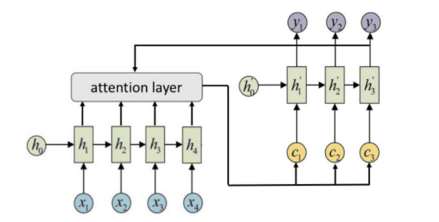
Теперь у декодера на каждом шаге свой контекстный вектор $c_t$, собранный из всех состояний энкодера с весами $\alpha_{ti}$. Толщина связей на схеме — это и есть веса внимания. Три эффекта сразу.
- Нет бутылочного горлышка. Информация больше не сжимается в один вектор — декодер имеет прямой доступ ко всем $n$ состояниям энкодера. Ёмкость канала растёт вместе с длиной входа.
- Прямой путь между позициями. Чтобы использовать первое слово входа при генерации последнего слова выхода, больше не нужно протаскивать сигнал через десятки шагов рекуррентности — есть прямая связь.
- Интерпретируемость. Матрицу весов $\alpha_{ti}$ можно нарисовать и увидеть, какое входное слово декодер использовал на каждом шаге. Для перевода это почти всегда выглядит как выравнивание слов между языками — то, что раньше приходилось задавать вручную в статистическом переводе.
Прирост качества оказался таким, что через три года авторы трансформера задались вопросом: если внимание делает всю работу, зачем вообще рекуррентность? Статья так и называлась — Attention Is All You Need.
Обучение
Seq2Seq — это языковая модель с условием. Обычная LM моделирует вероятность текста, условная — вероятность текста при данном входе:
$$ \text{LM:}\quad p(y_1, \dots, y_n) = \prod_{t=1}^{n} p(y_t \mid y_{<t}), $$
$$ \text{Conditional LM:}\quad p(y_1, \dots, y_n \mid \textcolor{red}{x}) = \prod_{t=1}^{n} p(y_t \mid y_{<t}, \textcolor{red}{x}). $$
Единственное отличие — добавленное условие $\textcolor{red}{x}$ в каждом сомножителе.
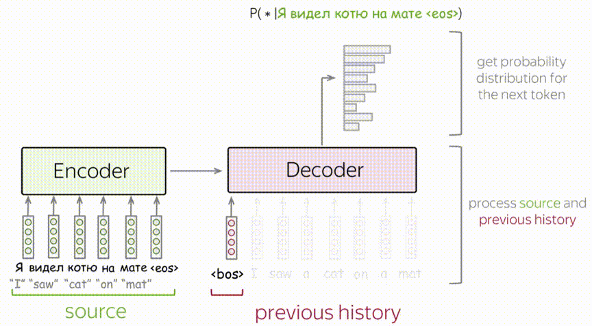
Декодер на каждом шаге предсказывает распределение следующего токена, но теперь с учётом не только уже сгенерированного, но и закодированного входа. 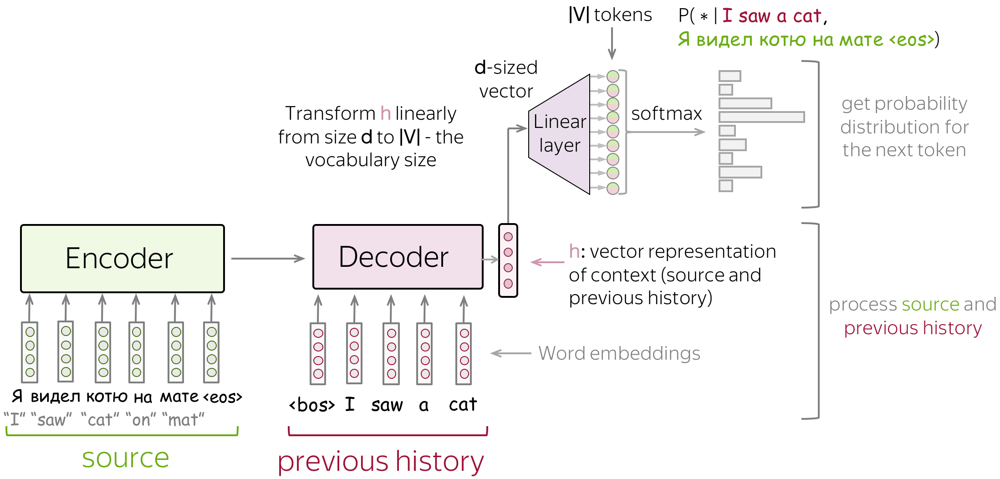
Выходная часть декодера устроена ровно как у обычной языковой модели: состояние $\to$ линейный слой $\to$ softmax по словарю. Обучение ничем не отличается от обучения языковой модели: на каждом шаге кросс-энтропия между предсказанным распределением и истинным следующим токеном, потери суммируются по всей выходной последовательности.
Используется teacher forcing: на вход декодеру подаётся истинный предыдущий токен из эталонного перевода, а не то, что модель сгенерировала сама. Это даёт параллелизм при обучении, но порождает exposure bias, о котором говорилось в вопросе про обучение LM. Для seq2seq он особенно заметен: одна ошибка в начале перевода уводит весь остаток в сторону.
Машинный перевод — задача, ради которой seq2seq и был придуман. - Машинный перевод — исходная задача.
- Суммаризация — длинный текст на вход, короткий на выход.
- Диалоговые системы — реплика на вход, ответ на выход.
- Исправление грамматики — текст с ошибками на вход, исправленный на выход.
- Перевод между языками программирования и генерация кода по описанию.
- Распознавание и синтез речи — вход и выход просто перестают быть текстом.
Инференс
Перевод формально — это поиск наиболее вероятной целевой последовательности:
$$ y' = \arg\max_{y} p(y \mid x) = \arg\max_{y} \prod_{t=1}^{n} p(y_t \mid y_{<t}, x). $$
Модель даёт нам $p(y \mid x; \theta)$; остаётся найти её аргмаксимум. Точный перебор невозможен: кандидатов $|V|^m$, что при словаре 30 000 и длине 20 составляет $30\,000^{20}$ вариантов.
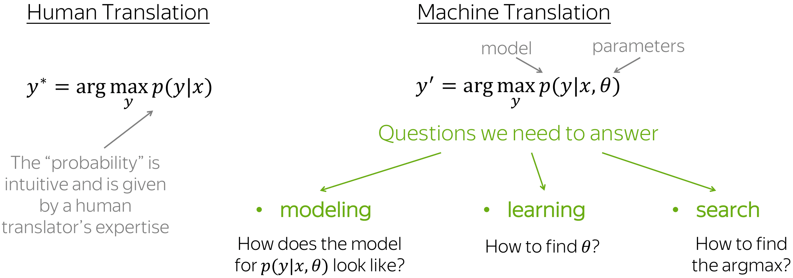
Человек переводит, опираясь на смысл; машина ищет последовательность с максимальной вероятностью при данном входе. Результаты могут совпадать, но механизмы разные. Простейшее приближение — на каждом шаге брать самый вероятный токен. Дёшево, но неверно по построению:
$$ \arg\max_{y}\prod_{t=1}^n p(y_t \mid y_{<t}, x) \ \textcolor{red}{\neq}\ \prod_{t=1}^n \arg\max_{y_t} p(y_t \mid y_{<t}, x). $$
Максимум произведения не равен произведению максимумов. Локально лучший токен может закрыть путь к глобально лучшему продолжению, и исправить это на следующих шагах уже нельзя — жадный алгоритм не возвращается назад.
Beam search — компромисс между жадностью и полным перебором: на каждом шаге держим не одну, а $K$ лучших частичных гипотез (луч, beam).
Алгоритм шага:
- Каждую из $K$ текущих гипотез продолжить всеми возможными токенами — получится $K \cdot |V|$ кандидатов.
- Оценить каждого суммой логарифмов вероятностей всей его последовательности.
- Оставить $K$ лучших, остальные отбросить.
- Гипотезы, дошедшие до токена конца последовательности, отложить в список завершённых и не продолжать.
Beam Search при $K=2$: на каждом шаге рассматриваются продолжения обеих текущих гипотез, и из всех кандидатов остаются две лучшие по суммарной логарифмической вероятности. Контринтуитивный экспериментальный факт. Казалось бы, больший луч — более тщательный поиск — лучше результат. На практике качество перевода растёт до $K \approx 5$–$10$, а дальше падает.
Причина в том, что beam search становится слишком хорош в максимизации вероятности, а сама эта цель смещена. Более вероятные последовательности систематически короче (каждый дополнительный токен домножает на число меньше единицы) и безопаснее — состоят из частых оборотов. Большой луч находит именно такие гипотезы: короткие, generic, обедневшие.
Отсюда стандартные поправки: length penalty (нормировка оценки на длину, чтобы длинные гипотезы не проигрывали автоматически) и coverage penalty (штраф за то, что часть входа не получила внимания ни на одном шаге). Практический диапазон $K \in [4, 10]$.
Идея seq2seq Где живёт сегодня Разделение энкодер/декодер BERT (энкодер), GPT (декодер), T5/BART (оба) Механизм внимания ядро трансформера Cross-attention декодера к энкодеру encoder-decoder трансформеры Teacher forcing обучение всех авторегрессивных моделей Beam search и length penalty инференс в переводе и распознавании речи Формулировка «условная языковая модель» вся парадигма instruction-following: промпт — это условие $x$ Ушла только рекуррентность — то самое, что мешало параллелить обучение.
Что такое Seq2Seq и для каких задач она применяется?
Архитектура энкодер-декодер, принимающая последовательность и порождающая другую последовательность, вообще говоря иной длины. Энкодер сжимает вход в векторное представление, декодер авторегрессивно порождает выход. Применяется в машинном переводе, суммаризации, диалоговых системах, исправлении грамматики, распознавании и синтезе речи.
Что такое bottleneck-вектор и почему он проблема?
Это вектор $c \equiv h_n$ — состояние энкодера после последнего токена, единственный канал между энкодером и декодером. Вся информация входа любой длины обязана уместиться в фиксированные 512–1024 числа, поэтому качество резко падает на предложениях длиннее 15–20 токенов. Усугубляет ситуацию то, что RNN хуже всего помнит начало последовательности, а $c$ берётся именно с конца.
Как механизм внимания улучшает классическую Seq2Seq?
Вместо одного вектора $c$ на каждом шаге декодирования вычисляется собственный контекст $c_t = \sum_i \alpha_{ti} h_i$ — взвешенная сумма всех состояний энкодера, где веса $\alpha_{ti}$ получаются softmax'ом от оценок релевантности. Это убирает бутылочное горлышко, создаёт прямой путь между любыми позициями входа и выхода и даёт интерпретируемую матрицу выравнивания слов.
Что такое условная языковая модель?
Модель, оценивающая $p(y_1,\dots,y_n \mid x) = \prod_t p(y_t \mid y_{<t}, x)$ — то же разложение по цепному правилу, что у обычной LM, но каждый сомножитель дополнительно обусловлен входом $x$. Seq2Seq — это в точности условная языковая модель, а современный промптинг LLM — та же идея, где условием служит текст промпта.
Как обучается Seq2Seq?
Кросс-энтропией на каждом шаге декодера относительно истинного следующего токена эталонного выхода, с суммированием потерь по всей последовательности, при teacher forcing (на вход декодеру подаётся истинный предыдущий токен). Отсюда же и exposure bias: при инференсе декодер получает собственные предсказания, и одна ранняя ошибка уводит весь остаток перевода.
В чём недостаток жадного поиска при инференсе?
Максимум произведения не равен произведению максимумов: $\arg\max\prod p_t \ne \prod\arg\max p_t$. Локально наиболее вероятный токен может закрыть путь к глобально лучшему продолжению, а вернуться назад жадный алгоритм не может.
Как работает Beam Search?
На каждом шаге поддерживаются $K$ лучших частичных гипотез: каждая продолжается всеми токенами словаря, все $K \cdot |V|$ кандидатов оцениваются суммой логарифмов вероятностей, и остаются лучшие $K$. Гипотезы, дошедшие до токена конца, откладываются в список завершённых.
Почему слишком большой $K$ в beam search ухудшает качество?
Потому что beam search точнее находит максимум вероятности, а сама эта цель смещена: более вероятные последовательности систематически короче (каждый токен домножает на число меньше единицы) и состоят из частых generic-оборотов. Большой луч находит именно такие ответы. Стандартные поправки — length penalty и coverage penalty; практический диапазон $K \in [4,10]$.
-
Byte Pair Encoding
Прежде чем модель что-то посчитает, текст нужно разбить на токены. Кажется техническим вопросом, но выбор единицы определяет и размер модели, и её способность работать с новыми словами.
Два очевидных варианта — и оба плохие.
Между словами и символами лежит компромисс: чем крупнее единица, тем больше словарь и хуже с редкими словами; чем мельче — тем длиннее последовательности. Дать каждому уникальному слову свой номер — самый естественный ход. Но:
- словарь огромен: в русском языке миллионы словоформы, а embedding-таблица растёт пропорционально ($|V| \times d$ параметров — при $|V| = 10^6$ и $d = 768$ это 768 миллионов весов только на входной слой);
- OOV-проблема неустранима: любое слово, не попавшее в словарь, заменяется на
<UNK>и теряется целиком — вместе с опечатками, неологизмами, именами собственными и редкими формами; - морфология не переиспользуется: «бежать», «бежал», «убежал» — три независимых номера, ничего общего.
Другая крайность — разбить всё на буквы. Словарь становится крошечным (несколько десятков символов), OOV исчезает полностью.
Но последовательности удлиняются в 5–7 раз: предложение из 20 слов превращается в 120 токенов вместо 20. Для трансформера это катастрофа, потому что внимание требует $O(L^2)$ памяти — рост длины вчетверо означает рост стоимости в шестнадцать раз. Плюс модели приходится тратить нижние слои на то, чтобы заново собирать из букв слова.
Компромисс: разбивать текст на куски слов. Частые слова остаются целыми токенами, редкие раскладываются на осмысленные части.
Пословная токенизация теряет редкое слово целиком; субсловная раскладывает его на знакомые куски, каждый из которых уже встречался в других словах. Так решаются обе проблемы разом: словарь остаётся умеренным (30–50 тысяч), последовательности — короткими, а незнакомых слов не бывает вовсе, потому что в крайнем случае слово разложится до отдельных символов.
BPE — самый распространённый алгоритм построения такого разбиения.
BPE изначально — алгоритм сжатия данных (Gage, 1994): итеративно находить самую частую пару соседних байтов и заменять её одним новым, неиспользованным байтом. Сеннрих и соавторы (2016) применили ту же идею к тексту для машинного перевода.
Метод состоит из двух этапов:
- Обучение — по корпусу строится таблица слияний (merge table): упорядоченный список правил вида «пара $(a, b)$ $\to$ новый токен $ab$».
- Инференс — к новому тексту применяются эти правила, строго в том порядке, в котором они были выучены.
Стартовое состояние: словарь состоит из отдельных символов, каждое слово корпуса представлено как последовательность символов.
Дальше повторяется цикл:
- Посчитать все пары соседних токенов во всём корпусе и их частоты.
- Найти самую частую пару.
- Слить её: добавить правило в таблицу слияний, добавить новый токен в словарь, заменить все вхождения этой пары в корпусе на новый токен.
Цикл повторяется, пока словарь не достигнет заданного размера — это и есть главный гиперпараметр метода.
Пример слияния пар символов. Важно, что мы самостоятельно можем указывать количество итераций, в течение которых мы будем мержить пары символов. В примере мы мержим пары символов $5$ раз. Корпус (в скобках — частота слова):
low(5),lower(2),newest(6),widest(3).Начальное разбиение — по символам, с маркером конца слова
</w>:l o w </w>,l o w e r </w>,n e w e s t </w>,w i d e s t </w>Шаг 1. Самая частая пара —
e s(встречается вnewest6 раз и вwidest3 раза, итого 9). Сливаем $\to$ токенes.Шаг 2. Теперь самая частая пара —
es t(тоже 9). Сливаем $\to$est.Шаг 3. Пара
est </w>(9) $\to$est</w>.Шаг 4. Пара
l o(5 + 2 = 7) $\to$lo.Шаг 5. Пара
lo w(7) $\to$low.Итог: словарь пополнился токенами
es,est,est</w>,lo,low. Обратите внимание, что алгоритм сам, без всякой лингвистики, выделил суффикс-est— просто потому, что эта последовательность букв часто встречается. В этом и красота метода: морфемы возникают из статистики.Новое слово разбивается на символы, после чего к нему последовательно, в порядке обучения, применяются все правила из таблицы слияний.
Возьмём слово
lowest, которого в обучающем корпусе не было:l o w e s t </w>.- Правило 1 (
e s$\to$es):l o w es t </w> - Правило 2 (
es t$\to$est):l o w est </w> - Правило 3 (
est </w>$\to$est</w>):l o w est</w> - Правило 4 (
l o$\to$lo):lo w est</w> - Правило 5 (
lo w$\to$low):low est</w>
Результат:
low+est</w>— два осмысленных куска, оба уже знакомых модели. Слово, которого не было в корпусе, разобрано корректно и без потерь.Порядок применения критичен: правила должны применяться ровно в том порядке, в каком выучены, иначе разбиение получится другим.
Стандартный BPE работает с символами Юникода, а их более 150 тысяч — базовый словарь получается неприятно большим, и всё равно возможны неизвестные символы.
Byte-level BPE, использованный в GPT-2, работает не с символами, а с байтами UTF-8. Базовый алфавит — ровно 256 значений, и он покрывает абсолютно всё: любой язык, любой иероглиф, эмодзи, бинарный мусор. Токена
<UNK>в такой схеме не существует в принципе.Это позволило OpenAI обойтись словарём около 50 тысяч токенов при полном покрытии всех языков мира.
from transformers import GPT2LMHeadModel, GPT2Tokenizer import torch DEVICE = torch.device('cuda' if torch.cuda.is_available() else 'cpu') # Для наглядности будем работать с русскоязычной GPT от Сбера model_name_or_path = "sberbank-ai/rugpt3large_based_on_gpt2" tokenizer = GPT2Tokenizer.from_pretrained(model_name_or_path) model = GPT2LMHeadModel.from_pretrained(model_name_or_path).to(DEVICE) text = "Токенизируй меня" tokens = tokenizer.encode(text, add_special_tokens=False) decoded_tokens = [tokenizer.decode([token]) for token in tokens] print("text:", text) print("tokens: ", tokens) print("decoded tokens: ", decoded_tokens) #>>> text: Токенизируй меня #>>> tokens: [789, 368, 337, 848, 28306, 703] #>>> decoded tokens: ['Т', 'ок', 'ени', 'зи', 'руй', ' меня']Две вещи, важные для понимания.
Во-первых, слово «Токенизируй» разбито на пять кусков —
Т+ок+ени+зи+руй. Это не морфемы: BPE резал по частотности, а не по грамматике. Русский текст в англоцентричном токенизаторе всегда режется мельче, потому что русских слов в обучающем корпусе токенизатора было меньше.Во-вторых, токен
менявключает ведущий пробел. Это стандарт byte-level BPE: пробел присоединяется к следующему слову, а не выделяется в отдельный токен. Из-за этогоменяименя— разные токены, и наличие или отсутствие пробела в промпте реально влияет на результат.Поскольку токенизатор работает с байтами, отдельный токен может быть куском многобайтового символа и сам по себе не соответствовать никакому печатному знаку.
# Эти три токена по отдельности не декодируются print(tokenizer.decode([167])) #>>> ? print(tokenizer.decode([245])) #>>> ? print(tokenizer.decode([256])) #>>> ? # Но вместе они образуют иероглиф print(tokenizer.decode([167, 245, 256])) #>>> 撝- Стоимость запроса к API считается в токенах, а русский текст режется примерно вдвое-втрое мельче английского. Один и тот же смысл на русском обходится дороже.
- Длина контекста тоже в токенах. «8192 токена» для русского текста — это заметно меньше слов, чем для английского.
- Модели плохо считают буквы и складывают числа именно из-за токенизации: слово приходит куском, а не набором букв, и число 1234 может быть разбито как
12+34. - Пробелы и регистр меняют разбиение, а значит, и предсказания. Промпт, заканчивающийся пробелом, может дать результат хуже, чем без него.
Модель обучалась на конкретных id токенов. Подать ей текст, размеченный другим токенизатором, — всё равно что перемешать словарь: эмбеддинги будут доставаться не те.
Поэтому токенизатор всегда сохраняется и загружается вместе с весами (
from_pretrainedдля обоих), а расширение словаря новыми токенами требует дообучения embedding-слоя.Что такое BPE и зачем он нужен в токенизации?
BPE (Byte Pair Encoding) — алгоритм субсловной токенизации, который итеративно сливает самую частую пару соседних токенов в новый токен, пока словарь не достигнет заданного размера. Он даёт компромисс между пословным и посимвольным разбиением: умеренный словарь, короткие последовательности и отсутствие OOV, поскольку любое слово раскладывается на известные куски.
Из каких двух этапов состоит BPE?
Обучение — по корпусу строится упорядоченная таблица слияний: на каждой итерации находится самая частая пара соседних токенов и добавляется правило её объединения. Инференс — к новому тексту применяются эти правила строго в порядке их изучения; порядок критичен, иначе разбиение получится другим.
Чем плоха пословная токенизация?
Словарь достигает миллионов словоформ, из-за чего embedding-таблица занимает сотни миллионов параметров; любое слово вне словаря заменяется на
<UNK>и теряется целиком вместе с опечатками, неологизмами и редкими формами; морфологически родственные слова получают независимые номера и не переиспользуют статистику друг друга.Почему char-level токенизация нежелательна, несмотря на маленький словарь?
Последовательности удлиняются в 5–7 раз, а стоимость внимания в трансформере квадратична по длине — рост длины вчетверо означает шестнадцатикратный рост вычислений и памяти. Кроме того, модели приходится тратить нижние слои на то, чтобы заново собирать слова из букв.
Что такое byte-level BPE и в чём его преимущество?
Вариант BPE, работающий не с символами Юникода (которых более 150 тысяч), а с байтами UTF-8 (которых ровно 256). Базовый алфавит покрывает абсолютно любой текст — все языки, иероглифы, эмодзи, — поэтому токена
<UNK>не существует в принципе. Это позволило GPT-2 обойтись словарём около 50 тысяч токенов при полном покрытии.Почему модели плохо считают буквы в словах и складывают числа?
Из-за токенизации: слово приходит модели одним-двумя кусками, а не набором букв, поэтому «сколько букв «р» в слове» — вопрос о том, чего модель не видит. Числа тоже режутся произвольно (1234 может стать
12+34), из-за чего арифметика превращается в манипуляцию непрозрачными кусками.Почему наличие пробела в промпте влияет на результат?
В byte-level BPE пробел присоединяется к следующему слову, поэтому
меняименя— разные токены с разными эмбеддингами. Промпт, заканчивающийся пробелом, заставляет модель предсказывать токен без ведущего пробела, что нетипично для обучающих данных и ухудшает предсказание.Почему BPE используется в GPT, а WordPiece — в BERT?
GPT применяет byte-level BPE ради компактного словаря и полного покрытия любых текстов, что важно для генеративной модели, работающей с произвольным вводом. BERT использует WordPiece, где пары выбираются не по частоте, а по приросту правдоподобия языковой модели, — это даёт лингвистически более осмысленные куски, что полезнее для задач понимания. Разница исторически-инженерная: на практике оба алгоритма дают сопоставимое качество.
-
WordPiece
WordPiece — метод подсловной токенизации, разработанный Google в 2016 году (впервые — в Google Neural Machine Translation) и ставший стандартом для BERT и его производных.
По конструкции он почти совпадает с BPE: словарь строится итеративным слиянием пар токенов. Отличие ровно одно, и оно в критерии выбора пары: BPE берёт самую частую пару, WordPiece — пару, которая сильнее всего повышает правдоподобие корпуса.
Простыми словами: BPE спрашивает «какая пара встречается чаще всего», WordPiece — «какая пара встречается вместе чаще, чем можно было бы ожидать от её частей по отдельности».
- Начинаем со словаря из всех отдельных символов корпуса.
- Собираем статистику по всем парам соседних токенов.
- Вычисляем для каждой пары score и выбираем пару с максимальным значением.
- Сливаем её в новый токен, добавляем в словарь.
- Повторяем, пока словарь не достигнет заданного размера (обычно 30 000 токенов).
Отличие от BPE — только в третьем шаге. Всё остальное идентично.
Пара выбирается по величине
$$ \text{score}(a, b) = \frac{P(ab)}{P(a)\cdot P(b)}, $$
где $P(ab)$ — вероятность встретить пару $ab$ рядом, а $P(a)$, $P(b)$ — вероятности встретить каждый токен по отдельности. На практике вероятности оцениваются частотами:
$$ \text{score}(a,b) = \frac{\text{freq}(ab)}{\text{freq}(a) \cdot \text{freq}(b)}. $$
Присмотритесь: под дробью стоит ровно то же выражение, что внутри логарифма у PMI. WordPiece выбирает пары с максимальной взаимной информацией — то есть куски, которые «липнут» друг к другу сильнее, чем предсказывает случай.
Тот же принцип встречался при взвешивании матрицы совстречаемости и при поиске коллокаций. Здесь он применён к соседним подсловам.
Пусть в корпусе часто встречаются буквы
eиsпо отдельности (обе входят в тысячи слов), а параesтоже частая — просто потому, что часты её составляющие.- BPE посмотрит на абсолютную частоту пары
es, увидит большое число и сольёт её одной из первых. - WordPiece поделит частоту пары на произведение частот частей. Если
esвстречается примерно столько раз, сколько ожидается от независимыхeиs, score окажется низким, и пара не будет слита.
Зато пара вроде
qu(букваqпочти никогда не встречается безu) получит у WordPiece огромный score при скромной абсолютной частоте — и будет слита рано.Итог: WordPiece склонен выделять устойчивые, «неслучайные» сочетания, которые чаще совпадают с реальными морфемами.
Обе панели построены по одному набору условных частот, указанному сверху. Слева критерий BPE — абсолютная частота пары: 9000 у «es» против 1400 у «qu», побеждает «es». Справа тот же расчёт, делённый на произведение частот частей: 1.1e-06 у «es» против 3.1e-05 у «qu» — порядок меняется на противоположный, с отрывом примерно в 29 раз. Числа условные, но соотношение между ними ровно то, из-за которого WordPiece рано сливает «qu» и долго не трогает «es». WordPiece помечает токены, не начинающие слово, префиксом
##:unbelievable$\to$["un", "##believ", "##able"]Токен
unстоит в начале слова,##believи##able— его продолжения.Зачем это нужно: без маркера нельзя однозначно восстановить исходный текст. Токены
["un", "believ", "able"]могли получиться и из «unbelievable», и из «un believ able» — трёх отдельных слов. Маркер##снимает неоднозначность и делает декодирование обратимым: склеиваем токены, убирая##, а перед токенами без##ставим пробел.Побочный эффект: один и тот же кусок слова имеет два токена —
able(начало слова) и##able(суффикс). Словарь из-за этого немного больше, зато позиция куска в слове несёт информацию.Частые слова остаются целыми, редкие разлагаются:
Слово Токенизация apple["apple"]tokenization["token", "##ization"]unbelievable["un", "##believ", "##able"]photosynthesis["photo", "##syn", "##thesis"]Обратите внимание: разбиение не всегда совпадает с морфемным разбором лингвиста, но обычно близко к нему — именно за счёт критерия взаимной информации.
В отличие от BPE, WordPiece при токенизации не применяет список правил слияния, а использует жадный поиск самого длинного совпадения (longest-match-first):
- Взять слово целиком, проверить, есть ли оно в словаре. Есть — готово.
- Нет — отрезать по одному символу с конца, пока оставшийся префикс не найдётся в словаре.
- Найденный префикс становится токеном; для остатка процедура повторяется, но теперь префикс ищется с маркером
##. - Если ни один префикс не найден (слово содержит символ, отсутствующий в словаре), слово целиком заменяется на
[UNK].
Пункт 4 — важное отличие от byte-level BPE: у WordPiece токен
[UNK]существует и иногда срабатывает, например на редких эмодзи или символах экзотических письменностей.BPE (Byte-Pair Encoding) WordPiece Критерий слияния Максимальная абсолютная частота пары Максимум \(\frac{P(ab)}{P(a)\cdot P(b)}\) — прирост правдоподобия Тип модели Частотная, детерминированная Вероятностная (основана на языковой модели) Токенизация нового текста Последовательное применение таблицы слияний Жадный поиск самого длинного совпадения Специальные символы Не использует (byte-level — ведущий пробел в токене) Использует ##для обозначения продолжения словаВозможен ли [UNK]При byte-level — нет Да, если в слове есть символ вне словаря Используется в GPT, RoBERTa, CLIP, ViT BERT, ALBERT, DistilBERT, Electra Появление 2015 (для NLP) 2016 Word-level Character-level WordPiece BPE Единица токенизации Слово Символ Подслово Подслово Обработка неизвестных слов OOV-проблема Нет Нет (разбивается на части) Нет (разбивается на части) Контроль длины посл-ти Низкий Очень длинные посл-ти Сбаланс. Сбаланс. Основа обучения Словарные частоты Нет обучения Условная вероятность пар Частота слияния пар Используется в Старые модели (word2vec) Символьные модели (CharCNN) BERT, ALBERT, DistilBERT GPT, RoBERTa, CLIP - Эффективно кодирует редкие и составные слова, не раздувая словарь (обычно 30k–50k токенов).
- Куски получаются лингвистически осмысленнее, чем у BPE, за счёт критерия взаимной информации.
- OOV практически не возникает: слово разлагается вплоть до отдельных символов.
- Маркер
##делает декодирование однозначно обратимым. - Неплохо работает с языками богатой морфологии, поскольку выделяет устойчивые аффиксы.
Соблазнительно считать, что «вероятностный критерий лучше частотного». Эмпирические сравнения этого не подтверждают: при одинаковом размере словаря и корпусе BPE и WordPiece дают близкое качество на downstream-задачах, а разница в разбиении заметна лишь на отдельных словах.
Выбор между ними на практике определяется не качеством, а совместимостью: если вы дообучаете BERT, у вас WordPiece, потому что так обучалась модель. Менять токенизатор нельзя — веса эмбеддингов привязаны к конкретным id.
Ни BPE, ни WordPiece не знают грамматики — они оптимизируют статистику. Поэтому регулярно получаются разбиения, противоречащие морфемному разбору: «подоконник» может распасться на
подо+конник, а «выиграл» — навыи+грал.Для русского языка это заметнее, чем для английского, потому что многоязычные токенизаторы обучены преимущественно на английском корпусе, и русских слов в них меньше. Отсюда же и более дробное разбиение русского текста — а значит, больше токенов на тот же смысл.
Что такое WordPiece и в чём его ключевая идея?
Метод подсловной токенизации, строящий словарь итеративными слияниями пар токенов. От BPE отличается критерием: сливается не самая частая пара, а пара с максимальным $\text{score}(a,b) = \frac{P(ab)}{P(a)P(b)}$ — то есть та, что встречается вместе чаще, чем предсказывает независимость частей.
Как WordPiece отличается от BPE?
BPE выбирает пару по абсолютной частоте, WordPiece — по нормированному правдоподобию, что даёт лингвистически более осмысленные куски: пара
quпри скромной частоте получает огромный score, аesпри большой частоте — маленький, если она объясняется частотами букв. Кроме того, WordPiece токенизирует новый текст жадным поиском самого длинного совпадения, а BPE — последовательным применением таблицы слияний.С какой известной величиной совпадает критерий WordPiece?
С отношением под логарифмом в PMI: $\frac{P(ab)}{P(a)P(b)}$ — это мера взаимной информации между соседними токенами. WordPiece фактически ищет коллокации на уровне подслов, тем же критерием, что используется для поиска устойчивых словосочетаний.
Что означает маркер
##в WordPiece?Что токен является продолжением слова, а не его началом:
unbelievable$\to$["un", "##believ", "##able"]. Без маркера нельзя было бы отличить одно слово из трёх кусков от трёх отдельных слов, то есть декодирование стало бы неоднозначным. Побочный эффект — один и тот же кусок существует в словаре в двух версиях:ableи##able.Почему WordPiece решает проблему OOV и когда
[UNK]всё-таки возникает?Любое незнакомое слово разлагается на известные подслова вплоть до отдельных символов, поэтому целые слова не теряются. Но если в слове встретился символ, отсутствующий в словаре (редкий эмодзи, экзотическая письменность), слово целиком заменяется на
[UNK]— в отличие от byte-level BPE, где это невозможно в принципе.В каких известных моделях используется WordPiece?
BERT, ALBERT, DistilBERT, Electra — то есть преимущественно encoder-модели для задач понимания. BPE используется в decoder-моделях (GPT) и в RoBERTa, CLIP. Историческое разделение при этом не отражает разницы в качестве.
Насколько велика практическая разница между BPE и WordPiece?
Небольшая: при одинаковом размере словаря и корпусе они дают близкое качество на downstream-задачах, различаясь лишь разбиением отдельных слов. Выбор на практике диктуется совместимостью — токенизатор жёстко привязан к весам модели, и подменить его нельзя, поскольку эмбеддинги соответствуют конкретным id токенов.
-
Unigram
Unigram — вероятностный метод подсловной токенизации, устроенный противоположно BPE и WordPiece.
BPE и WordPiece работают снизу вверх: начинают с отдельных символов и наращивают словарь слияниями. Unigram работает сверху вниз: начинает с заведомо избыточного словаря кандидатов и итеративно выбрасывает оттуда токены, без которых правдоподобие корпуса страдает меньше всего.
Простыми словами: вместо того чтобы собирать кубики в детали, Unigram берёт огромную кучу деталей и выкидывает из неё лишние.
У BPE разбиение слова однозначно — оно определяется таблицей слияний. У Unigram всё иначе.
Unigram хранит словарь с вероятностями: каждому токену $w$ приписана вероятность $P(w)$. Слово можно разбить многими способами, и у каждого разбиения есть своя вероятность — произведение вероятностей его кусков. Токенизатор выбирает разбиение с максимальной вероятностью.
Отсюда название: модель считает, что токены в разбиении независимы, — то есть это униграммная языковая модель над подсловами.
Пусть слово (или предложение) сегментировано как $x = (w_1, \dots, w_m)$, где $w_i \in \mathcal{V}$. Вероятность такой сегментации:
$$ \log P(x) = \sum_{i=1}^{m} \log P(w_i). $$
Токенизация — выбор наилучшей сегментации:
$$ \hat{w}_{1:m} = \arg\max_{w_{1:m}} \sum_i \log P(w_i). $$
Обучение — подбор такого словаря $\mathcal{V}$, который минимизирует суммарную отрицательную лог-вероятность корпуса $\mathcal{D}$:
$$ \mathcal{L}(\mathcal{V}) = - \sum_{x \in \mathcal{D}}\ \max_{w_{1:m} \in \mathcal{V}}\ \sum_{i}\log P(w_i). $$
- Инициализация. Строится большой набор кандидатов — все символы плюс частые подстроки корпуса (обычно в несколько раз больше целевого размера словаря).
- Оценка вероятностей. Для текущего словаря оцениваются $P(w)$ — как правило, EM-алгоритмом: E-шаг находит ожидаемые частоты токенов при текущих вероятностях, M-шаг пересчитывает вероятности.
- Сегментация. Для каждого слова находится оптимальное разбиение — динамическим программированием (алгоритм Витерби по позициям в слове).
- Pruning. Для каждого токена оценивается, насколько вырастет $\mathcal{L}$, если его удалить. Токены с наименьшим приростом (обычно 10–20% словаря за итерацию) выбрасываются.
- Шаги 2–4 повторяются, пока словарь не сожмётся до целевого размера. Отдельные символы никогда не удаляются — иначе появились бы непредставимые слова.
Слово
невероятность. Допустимые разбиения (по текущему словарю):Сегментация $\log P$ каждого куска Сумма не+вероят+ность$-2.1,\ -5.4,\ -3.2$ $-10.7$ нев+еро+ят+ность$-6.8,\ -7.1,\ -5.9,\ -3.2$ $-23.0$ не+в+е+р+ ...много мелких $\approx -45$ Побеждает первый вариант — у него наибольшая сумма логарифмов (то есть наименьшая по модулю). Обратите внимание, что более крупные и частотные куски автоматически предпочтительнее: у них выше $P(w)$, и их меньше по количеству.
Перебирать все разбиения не нужно — их экспоненциально много, но динамическое программирование находит лучшее за $O(L^2)$, где $L$ — длина слова.
Те же три варианта из таблицы, нарисованные как разбиения одной строки. Синим выделен победитель — не потому, что кусков меньше всего, а потому, что сумма $\log P$ у него наибольшая: $-10.7$ против $-23.0$ и $\approx -45$. Серые числа под каждым прямоугольником — вклад отдельного куска. Обратите внимание на суффикс «ность»: он даёт одинаковые $-3.2$ в первых двух вариантах, значит вся разница набегает на начале слова. Нижний ряд показывает, чем платит посимвольное разбиение: много мелких множителей, и сумма проваливается. Мотивация подхода сверху вниз: жадное наращивание принимает необратимые решения.
У BPE каждое слияние делается на основании текущей статистики и уже никогда не отменяется. Если пара была слита рано и оказалась неудачной, весь дальнейший словарь строится поверх этой ошибки.
Unigram, наоборот, оценивает вклад каждого токена в контексте полного словаря: удаление проверяется по тому, насколько пострадает правдоподобие всего корпуса, когда все альтернативные разбиения уже доступны. Это глобальный критерий вместо локального.
Цена — вычислительная стоимость: нужны EM и динамическое программирование на каждой итерации вместо простого подсчёта частот.
Уникальная возможность Unigram, недоступная BPE и WordPiece.
Раз у каждой сегментации есть вероятность, можно не всегда брать лучшую, а сэмплировать разбиение пропорционально его вероятности. Тогда одно и то же слово при разных проходах обучения будет токенизировано по-разному:
невероятность$\to$не+вероят+ность- в другой эпохе $\to$
неверо+ятность - в третьей $\to$
не+вероятность
Это называется subword regularization (Kudo, 2018).
По сути, это аугментация данных на уровне токенизации — аналог случайных поворотов и обрезки изображений в компьютерном зрении.
Что она даёт:
- Робастность к опечаткам и вариациям написания. Модель, видевшая слово в разных разбиениях, не привязана к единственному «правильному» и лучше переносит незнакомые формы.
- Регуляризация. Модель не может переобучиться под конкретную сегментацию редкого слова.
- Заметный прирост на низкоресурсных языках и малых корпусах — там, где данных мало и аугментация особенно ценна.
Аналогичный приём существует и для BPE — BPE-dropout: при токенизации каждое правило слияния с некоторой вероятностью пропускается, что тоже порождает разные разбиения.
Практическое ограничение, из-за которого Unigram не стал повсеместным.
- BPE: подсчёт частот пар и слияние — линейные операции, обучение занимает минуты.
- Unigram: EM-оценка вероятностей плюс динамическое программирование для каждого слова на каждой итерации pruning. На большом корпусе это часы.
Кроме того, начальный словарь кандидатов должен быть в несколько раз больше целевого, что требует памяти.
Напрямую как самостоятельный инструмент — редко. Он живёт внутри SentencePiece (
model_type=unigram), и через него попадает в:- T5 и mT5,
- XLM-R и другие мультиязычные энкодеры,
- ALBERT, DeBERTa v2/v3,
- многие модели с азиатскими языками, где важна языконезависимость.
Закономерность: Unigram выбирают там, где корпус мультиязычный или низкоресурсный, — именно там его гибкость и субсловная регуляризация окупают стоимость обучения.
В чём ключевое отличие Unigram от BPE и WordPiece?
Направление построения словаря. BPE и WordPiece идут снизу вверх: начинают с символов и наращивают словарь слияниями. Unigram идёт сверху вниз: начинает с большого набора кандидатов и итеративно удаляет (pruning) токены, чьё исключение меньше всего ухудшает правдоподобие корпуса.
Как Unigram выбирает наилучшую сегментацию слова?
Он хранит словарь с вероятностями токенов и считает вероятность сегментации как $\log P(x) = \sum_i \log P(w_i)$, предполагая независимость кусков (отсюда «unigram»). Оптимальное разбиение находится динамическим программированием (Витерби) за $O(L^2)$ вместо экспоненциального перебора.
Как устроено обучение Unigram?
Инициализация большим набором кандидатов; оценка вероятностей токенов EM-алгоритмом; поиск оптимальной сегментации каждого слова динамическим программированием; удаление 10–20% токенов с наименьшим вкладом в правдоподобие; повтор до достижения целевого размера словаря. Отдельные символы никогда не удаляются, иначе появились бы непредставимые слова.
Почему подход «сверху вниз» может быть лучше жадного наращивания?
Слияния в BPE необратимы: неудачное раннее слияние закладывается в основание всего дальнейшего словаря. Unigram оценивает вклад каждого токена в контексте полного словаря, когда все альтернативные разбиения уже доступны, то есть использует глобальный критерий вместо локального.
Что такое субсловная регуляризация?
Приём, при котором вместо лучшей сегментации случайно сэмплируется одна из допустимых пропорционально её вероятности, так что одно слово при разных проходах разбивается по-разному. Это аугментация на уровне токенизации: она повышает робастность к опечаткам и вариациям написания, регуляризует модель и особенно помогает на низкоресурсных языках. Аналог для BPE — BPE-dropout, случайно пропускающий правила слияния.
Почему обучение Unigram дороже, чем BPE?
BPE требует лишь подсчёта частот пар — линейной операции. Unigram на каждой итерации pruning запускает EM-оценку вероятностей и динамическое программирование для каждого слова корпуса, а начальный словарь кандидатов должен быть в несколько раз больше целевого. Разница — минуты против часов на большом корпусе.
В каких моделях используется Unigram-токенизация?
Преимущественно через SentencePiece (
model_type=unigram): T5, mT5, XLM-R, ALBERT, DeBERTa v2/v3 и многие мультиязычные модели. Закономерность в том, что Unigram выбирают для мультиязычных и низкоресурсных корпусов, где его гибкость и субсловная регуляризация окупают дорогое обучение.
-
SentencePiece
У BPE, WordPiece и Unigram есть общее скрытое допущение: перед их работой текст уже разбит на слова по пробелам. Этот предварительный шаг называется пре-токенизацией, и он кажется безобидным ровно до столкновения с реальностью.
- Китайский, японский, тайский пробелов между словами не используют вовсе. 这是一个句子 — здесь нет ни одного разделителя.
- Даже там, где пробелы есть, правила отличаются: как делить
don't,Нью-Йорк,по-моему,3.14,e-mail? - Пре-токенизаторы пишутся отдельно для каждого языка. Модель XLM, например, тащила за собой специальные пре-токенизаторы для китайского, японского и тайского — и вместе с ними их баги и версии.
В итоге токенизация переставала быть воспроизводимой: результат зависел от версии внешней библиотеки, а обучение и инференс могли разойтись незаметно.
SentencePiece — фреймворк токенизации от Google, работающий на сыром тексте, без всякой предварительной разбивки по пробелам.
Ключевой приём: пробел объявляется обычным символом и заменяется на видимый маркер
▁(U+2581, LOWER ONE EIGHTH BLOCK — намеренно выбран символ, который не встречается в обычных текстах). После этого текст — просто последовательность символов, и к ней применяется обычный алгоритм подсловной токенизации.SentencePiece — это не отдельный алгоритм, а обёртка: внутри он реализует BPE или Unigram (
model_type=bpe/model_type=unigram), добавляя к ним нормализацию Unicode, byte-fallback и единый сериализуемый файл модели.Три следствия сразу, и все важные.
- Языконезависимость. Раз пробел — обычный символ, никакой специальной логики для языков без пробелов не нужно. Алгоритм одинаково работает с английским, русским и китайским.
- Обратимость без потерь. Декодирование сводится к склейке всех токенов и замене
▁на пробел. Никаких правил вроде «перед точкой пробел не ставить» — исходный текст восстанавливается побайтово. Это свойство называется lossless tokenization. - Пробел становится частью токена.
▁котикот— разные токены: первый начинает слово, второй продолжает. Это та же информация, что даёт##в WordPiece, только выраженная естественнее.
Вход Токены hello world["▁hello", "▁world"]модель токенизации["▁модель", "▁токен", "изации"]这是句子["这", "是", "句子"]В третьей строке пробелов не было вовсе — и это не помешало: алгоритм нашёл частые последовательности иероглифов и выделил их в токены.
Во второй строке видно, что
▁токенначинает слово, аизациипродолжает его — маркера у второго куска нет.Полный круг для второй строки таблицы, сверху вниз. Серый ряд — сырая строка; жёлтый — она же после замены пробелов на ▁ (SentencePiece по умолчанию дописывает маркер и в начало); синий — три токена; зелёный — обратная склейка. Зелёная строка совпадает с серой символ в символ — это и есть lossless tokenization: декодирование состоит из склейки токенов и одной замены ▁ на пробел, никаких правил вида не ставить пробел перед точкой не нужно. Заодно видно, чем ▁модель отличается от изации: маркер несёт ту же информацию о начале слова, что префикс ## в WordPiece. Одна и та же буква в Unicode бывает записана по-разному: «й» может быть одним кодовым пунктом U+0439 или комбинацией «и» + знак краткости. Визуально идентичные строки при этом дают разные токены.
SentencePiece применяет нормализацию (по умолчанию NFKC) перед токенизацией, приводя такие варианты к единой форме. Заодно унифицируются разновидности кавычек, тире, пробелов и полноширинных латинских букв, которые встречаются в азиатских текстах.
Правила нормализации сохраняются внутри модели, поэтому обучение и инференс гарантированно применяют одни и те же преобразования.
Даже при большом словаре может встретиться символ, которого в нём нет — редкий эмодзи, знак древней письменности, символ из математического блока.
С включённым byte fallback такой символ не превращается в
[UNK], а раскладывается на составляющие его байты UTF-8, для которых в словаре зарезервированы 256 специальных токенов.Это даёт полное покрытие любого текста при умеренном словаре — та же идея, что в byte-level BPE у GPT, но реализованная как запасной путь только для редких случаев, а не как основа всей токенизации.
SentencePiece сохраняет всё в один сериализуемый файл
.model: словарь, вероятности или таблицу слияний, правила нормализации, настройки byte-fallback и специальные токены.Практический смысл: токенизация воспроизводима побитово. Тот же
.modelдаст те же id токенов на любой машине, в любой версии окружения, при обучении и в проде. Это устраняет целый класс тихих багов, когда модель обучалась с одной токенизацией, а в сервисе работала с чуть другой.from tokenizers import SentencePieceBPETokenizer tokenizer = SentencePieceBPETokenizer() tokenizer.train_from_iterator( text, vocab_size=30_000, min_frequency=5, show_progress=True, limit_alphabet=500, )from transformers import PreTrainedTokenizerFast transformer_tokenizer = PreTrainedTokenizerFast( tokenizer_object=tokenizer )- Мультиязычные корпуса и языки без пробельных разделителей (китайский, японский, тайский).
- Когда не хочется зависеть от внешней предтокенизации и её версий.
- Когда нужна гарантированная воспроизводимость и идентичность правил на обучении и инференсе.
- Когда важна обратимость: декодирование должно точно восстанавливать исходный текст (перевод, исправление ошибок, генерация кода).
Словарь конечен, и языки за него конкурируют. Если в обучающем корпусе токенизатора 80% английского и 1% русского, то русские слова будут разбиваться намного мельче: на них просто не хватило места в словаре.
Практические последствия: русский текст занимает в 2–3 раза больше токенов, чем эквивалентный английский, а значит — дороже по API, быстрее упирается в лимит контекста и хуже обрабатывается моделью (длинные последовательности мелких кусков сложнее).
Если вы обучаете модель под конкретный язык, обучайте токенизатор на корпусе этого языка, а не берите многоязычный.
vocab_sizeвлияет на всё сразу:- Маленький словарь (8k–16k) — короче embedding-таблица, но длиннее последовательности, а значит дороже внимание.
- Большой словарь (100k+) — короче последовательности, но embedding и выходной softmax занимают огромную долю параметров и вычислений.
Типичный диапазон — 32k для одноязычных моделей и 100k–256k для мультиязычных (у современных LLM он вырос именно чтобы вместить много языков). Ориентир при выборе — среднее число токенов на слово для вашего языка: если оно сильно больше 1.5, словарь стоит увеличить.
Что такое SentencePiece и в чём его ключевое отличие от классических токенизаторов?
Фреймворк токенизации, работающий на сыром тексте без предварительного разбиения по пробелам: пробел объявляется обычным символом и заменяется видимым маркером
▁. Сам по себе он не алгоритм, а обёртка, реализующая BPE или Unigram с добавлением нормализации Unicode, byte-fallback и единого сериализуемого файла модели.Почему SentencePiece особенно важен для мультиязычных и азиатских языков?
Китайский, японский и тайский не используют пробелы как разделители слов, поэтому классические токенизаторы требовали отдельных пре-токенизаторов для каждого такого языка вместе с их багами и версиями. SentencePiece обрабатывает весь текст единообразно как последовательность символов, устраняя языкозависимую предобработку.
Что даёт замена пробела на маркер
▁?Языконезависимость (никакой специальной логики для языков без пробелов), обратимость без потерь — декодирование сводится к склейке токенов и замене
▁на пробел, восстанавливая исходный текст побайтово, — и различение начала и продолжения слова:▁котикотстановятся разными токенами.Какие алгоритмы токенизации поддерживает SentencePiece?
BPE (
model_type=bpe) и Unigram (model_type=unigram). BPE обучается быстрее, Unigram даёт вероятностную модель с возможностью субсловной регуляризации и лучше показывает себя на мультиязычных и низкоресурсных корпусах.Зачем нужна нормализация Unicode?
Визуально одинаковые строки могут иметь разное байтовое представление: «й» бывает одним кодовым пунктом или комбинацией «и» со знаком краткости, а кавычки, тире и полноширинные латинские буквы существуют в нескольких вариантах. Без нормализации они дают разные токены. SentencePiece применяет NFKC перед токенизацией и сохраняет правила внутри модели, гарантируя одинаковую обработку на обучении и инференсе.
Зачем нужен byte fallback?
Чтобы символы, не попавшие в словарь (редкие эмодзи, экзотические письменности), не превращались в
[UNK], а раскладывались на байты UTF-8, для которых зарезервированы 256 токенов. Это даёт полное покрытие любого текста при умеренном словаре, используя байтовое представление как запасной путь, а не как основу токенизации.Почему русский текст занимает больше токенов, чем английский?
В мультиязычных токенизаторах языки конкурируют за конечный словарь, и он распределяется пропорционально их доле в обучающем корпусе — обычно с сильным перекосом в сторону английского. Русским словам достаётся меньше целых токенов, поэтому они дробятся мельче. Следствия: выше стоимость по API, быстрее исчерпывается контекстное окно, сложнее обработка. Для одноязычной модели токенизатор стоит обучать на корпусе своего языка.
Какие известные модели используют SentencePiece?
T5, mT5, XLM-R, ALBERT, DeBERTa v2/v3 и большинство мультиязычных моделей. Главная причина выбора — воспроизводимость: один
.modelфайл гарантирует идентичную токенизацию при обучении и инференсе на любой машине.
-
Сравнение методов токенизации
Все методы из этого блока решают одну задачу: разбить текст на единицы, из которых модель будет собирать смысл. Различаются они в двух вещах:
- Как строится словарь — наращиванием снизу вверх (BPE, WordPiece) или прореживанием сверху вниз (Unigram).
- По какому критерию выбираются куски — по частоте (BPE), по взаимной информации (WordPiece) или по правдоподобию корпуса (Unigram).
SentencePiece стои́т особняком: это не алгоритм, а фреймворк, внутри которого работает BPE или Unigram. Его вклад — обработка сырого текста без пре-токенизации и воспроизводимость. Сравнивать его «против BPE» некорректно; корректно — «SentencePiece с BPE против SentencePiece с Unigram».
Направление Критерий выбора Разбиение слова BPE снизу вверх: сливаем максимальная частота пары однозначное (по таблице слияний) WordPiece снизу вверх: сливаем максимум $\frac{P(ab)}{P(a)P(b)}$ однозначное (longest-match) Unigram сверху вниз: удаляем минимальный ущерб правдоподобию вероятностное, можно сэмплировать BPE WordPiece Unigram SentencePiece Идея Итеративные слияния самых частых пар токенов Слияния пар, максимизирующих прирост правдоподобия Вероятностная модель; pruning большого словаря по вкладу в NLL Фреймворк: реализует BPE и Unigram, работает на "сыром" тексте Обработка OOV/редких слов Делит на известные куски; OOV почти нет Делит на вероятностно "естественные" морфемы; OOV нет Выбирает сегментацию с макс. вероятностью; OOV нет Через выбранную модель; есть byte-fallback для любых символов Скорость/сложность обучения Быстрая, простая Медленнее BPE (нужны оценки вероятностей) Дороже: EM/DP + pruning Зависит от режима: BPE (быстрее) / Unigram (медленнее) Типичный размер словаря ~30k–50k ~30k–50k ~30k–50k Гибко (обычно 32k–50k) Спец. маркеры Нет (классика), иногда префиксы в реализациях ##для продолжений словаНет фиксированного маркера ▁как маркер пробелаМодели GPT, RoBERTa, CLIP, ViT (варианты) BERT, ALBERT, DistilBERT, XLNet T5/ByT5 (через SP Unigram), другие мультиязычные XLM-R, T5, mT5, многие мультиязычные модели Плюсы Простота, скорость, короткие посл-ти Более "языково осмысленные" куски Гибкость, робастность, поддержка sampling Языконезависимость, воспроизводимость, единый .model Минусы Может ломать морфемы, зависит от предтокенизации Дороже в обучении, требует вероятностных оценок Сложнее/дороже обучение (DP/EM + pruning) Это фреймворк: выбор режима влияет на компромиссы Год 2015 2016 2018 (как часть SP) 2018 Слово
неопределённость(редкое, длинное, морфологически сложное).Токенизатор Разбиение Токенов Пословный [UNK](нет в словаре)1, но смысл потерян Символьный неопр…16 BPE (русскоязычный словарь) неопределённость3 BPE (англоцентричный словарь) неопределённость6 Две нижние строки — один и тот же алгоритм, разные обучающие корпуса. Вывод, который стоит унести: на длину разбиения корпус токенизатора влияет сильнее, чем сам алгоритм.
Четыре строки таблицы в виде столбиков. Серый слева — формально один токен, но это [UNK], смысл слова потерян целиком, поэтому единица здесь не достоинство. Жёлтый — посимвольное разбиение, 16 токенов. Два правых столбика важнее всего: зелёный и красный — это один и тот же алгоритм BPE, отличаются только корпусом, на котором обучался токенизатор, и разница получается двукратная (3 против 6). Именно на эту двойку множится и счёт за API, и расход контекстного окна. Fertility — среднее число токенов на слово. Это самая полезная одночисловая характеристика токенизатора для вашей задачи, и посчитать её можно за минуту на выборке своих текстов.
Ориентиры: около 1.1–1.3 — токенизатор хорошо покрывает язык; 1.5–2.0 — приемлемо; больше 2.5 — язык покрыт плохо, и вы платите вдвое-втрое за каждый запрос, быстрее упираетесь в контекст и даёте модели более длинные и рваные последовательности.
Если fertility велика, а модель обучаете вы сами, увеличьте словарь или обучите токенизатор на своём корпусе. Если модель чужая — заложите это в расчёт стоимости и лимитов.
Честный ответ: чаще всего выбор за вас уже сделан. Если вы дообучаете готовую модель, токенизатор берётся вместе с ней — он жёстко привязан к весам эмбеддингов, и подменить его нельзя.
Выбор возникает, только когда вы обучаете модель с нуля. Тогда ориентиры такие:
- Одноязычная модель, английский или другой язык с пробелами $\to$ BPE (в byte-level варианте), обучается быстро и работает предсказуемо.
- Мультиязычная модель или язык без пробелов $\to$ SentencePiece с Unigram: языконезависимость плюс субсловная регуляризация.
- Encoder-модель в стиле BERT $\to$ WordPiece, если важна совместимость с экосистемой BERT.
- Малый корпус или низкоресурсный язык $\to$ Unigram с субсловной регуляризацией (или BPE-dropout), ради устойчивости к переобучению.
Самая дорогая ошибка в этой теме. Веса embedding-слоя привязаны к конкретным числовым id токенов: строка 1523 матрицы эмбеддингов соответствует ровно тому токену, который имел этот id при обучении.
Подставив другой токенизатор, вы получите модель, которая читает совершенно другие эмбеддинги, — качество упадёт до случайного. Поэтому токенизатор всегда сохраняется и загружается вместе с весами, а добавление новых токенов в словарь требует расширения embedding-матрицы и дообучения.
Практическое следствие, о котором забывают на собеседованиях, но которое каждый день ощущается в проде:
- стоимость API считается в токенах, а не в словах;
- контекстное окно тоже измеряется в токенах;
- вычислительная сложность внимания квадратична по длине последовательности.
Токенизатор, дробящий ваш язык мельче, делает всё три пункта хуже одновременно. Разница между хорошим и плохим для конкретного языка токенизатором — это разница в 2–3 раза по всем трём осям.
Размер и устройство словаря — не деталь реализации, а решение с измеримой ценой:
В чём ключевое различие между BPE и WordPiece?
BPE сливает пары по максимальной абсолютной частоте. WordPiece сливает пары, максимизирующие $\text{score}(a,b) = \frac{P(ab)}{P(a)P(b)}$ — то есть взаимную информацию соседних токенов, что даёт куски, встречающиеся вместе чаще, чем предсказывает независимость частей. Кроме того, BPE токенизирует новый текст последовательным применением таблицы слияний, а WordPiece — жадным поиском самого длинного совпадения.
Что такое Unigram-токенизация и чем она отличается от BPE/WordPiece?
Unigram идёт в обратном направлении: начинает с заведомо избыточного словаря кандидатов и итеративно удаляет токены, чьё исключение меньше всего увеличивает отрицательную лог-вероятность корпуса. Кроме того, у него разбиение не однозначное, а вероятностное: каждой сегментации соответствует своя вероятность, что позволяет сэмплировать разбиения (субсловная регуляризация).
Почему SentencePiece нельзя ставить в один ряд с BPE и Unigram?
Это не алгоритм построения словаря, а фреймворк, внутри которого работает BPE или Unigram. Его собственный вклад — работа с сырым текстом без пре-токенизации, нормализация Unicode, byte-fallback и единый сериализуемый
.modelфайл. Корректное сравнение — «SentencePiece с BPE против SentencePiece с Unigram», а не «SentencePiece против BPE».Зачем SentencePiece использует маркер
▁для пробелов?Чтобы объявить пробел обычным символом и тем самым избавиться от языкозависимой пре-токенизации: алгоритм одинаково работает с английским и с китайским, где пробелов нет вовсе. Дополнительно это делает декодирование полностью обратимым — достаточно склеить токены и заменить
▁на пробел — и позволяет различать начало слова и его продолжение.Какой токенизатор использует BERT и чем он обозначает продолжение слова?
BERT использует WordPiece. Продолжение слова помечается префиксом
##:unbelievable$\to$["un", "##believ", "##able"]. Без такого маркера нельзя было бы отличить одно слово из трёх кусков от трёх отдельных слов, то есть декодирование стало бы неоднозначным.Почему выбор токенизатора влияет на эффективность модели?
Разные алгоритмы и разные обучающие корпуса дают разное число токенов на один и тот же текст. Длина последовательности определяет и стоимость запроса по API, и то, как быстро исчерпается контекстное окно, и вычислительную сложность внимания, которая квадратична по длине. Токенизатор, дробящий ваш язык мельче, ухудшает все три пункта одновременно — разница может достигать 2–3 раз.
Почему токенизатор нельзя заменить после обучения модели?
Веса embedding-слоя привязаны к конкретным числовым id: строка матрицы эмбеддингов соответствует ровно тому токену, который имел этот id при обучении. Другой токенизатор выдаст другие id, и модель начнёт читать не те эмбеддинги — качество упадёт до случайного. Поэтому токенизатор сохраняется и загружается вместе с весами, а добавление токенов требует расширения embedding-матрицы и дообучения.
Как выбирать токенизатор при обучении модели с нуля?
Для одноязычной модели на языке с пробелами — byte-level BPE: быстро обучается, полное покрытие, предсказуемое поведение. Для мультиязычной модели или языка без пробелов — SentencePiece с Unigram. Для encoder-модели в экосистеме BERT — WordPiece. Для малого корпуса или низкоресурсного языка — Unigram с субсловной регуляризацией либо BPE-dropout, ради устойчивости к переобучению.
-
BERT
BERT (Bidirectional Encoder Representations from Transformers) — модель, представленная Google в 2018 году и определившая облик NLP на следующие годы.
BERT — encoder-only архитектура: стек блоков энкодера трансформера, без декодера. В каждом слое применяется двунаправленное внимание, поэтому представление каждого токена строится с учётом всего окружающего контекста — и слева, и справа.
Простыми словами: BERT не пишет текст, он его понимает. На вход — предложение, на выход — по вектору на каждый токен, где вектор учитывает всё предложение целиком.
Ключевое слово в названии — Bidirectional, и его смысл тоньше, чем кажется.
ELMo тоже называли двунаправленным, но там были две независимые LSTM, встречавшиеся только на выходе. В BERT каждый токен на каждом слое внимания видит сразу все остальные токены с обеих сторон, и информация перемешивается на всех уровнях. Это называют глубокой двунаправленностью.
Отсюда сразу следует проблема: обучить такую модель предсказывать следующий токен невозможно — она просто посмотрит на него через внимание и «спишет ответ». Нужна другая обучающая задача.
Авторы предложили два вспомогательных задания, обучающих модель на сыром неразмеченном тексте:
- Masked Language Model (MLM) — восстановить искусственно закрытые токены по окружению;
- Next Sentence Prediction (NSP) — определить, следует ли второе предложение за первым в исходном тексте.
Первая учит модель понимать слова в контексте, вторая — отношения между предложениями.
Архитектура
BERT вышел в двух конфигурациях:
BERT-Base BERT-Large Слоёв энкодера 12 24 Размерность скрытого состояния 768 1024 Голов внимания 12 16 Параметров ~110 млн ~340 млн Источник. Обе модели — просто стеки одинаковых блоков энкодера; Large отличается только количеством слоёв и шириной. Декодер в трансформере нужен для порождения последовательности. У BERT задача другая — построить представления, поэтому декодер выброшен.
Следствия:
- BERT не может генерировать текст. Он не определяет распределение над последовательностями и не умеет продолжать текст пошагово.
- Он видит вход целиком. Никакой причинной маски нет, ограничений на направление внимания нет.
- Он идеален для задач понимания (NLU): классификация, NER, извлечение ответа из текста, оценка сходства предложений.
Подготовка входа
BERT оформляет вход служебными токенами:
[CLS]— ставится в начало последовательности. Его выходной вектор используется как представление всего входа для задач классификации.[SEP]— разделяет два предложения и помечает конец последовательности.[PAD]— дополняет короткие последовательности до нужной длины; эти позиции маскируются и не участвуют во внимании.[MASK]— заменяет токены при обучении MLM.[UNK]— для символов вне словаря WordPiece.
Токенизация — WordPiece со словарём около 30 000 токенов. Максимальная длина входа — 512 токенов.
Input embeddings складываются из эмбеддингов токенов, сегментационных эмбеддингов и позиционных эмбеддингов. Вход каждого токена — сумма трёх векторов одинаковой размерности:
- Token embedding — что это за токен (строка из таблицы WordPiece-словаря).
- Position embedding — на какой позиции он стоит (обучаемая таблица на 512 позиций). Без неё модель не различала бы порядок слов вовсе: внимание само по себе симметрично и не знает о позициях.
- Segment embedding — к первому предложению относится токен ($A$) или ко второму ($B$). Нужен для задач с парой предложений: NSP, определение следствия, поиск ответа в тексте.
Обратите внимание, что позиционные эмбеддинги у BERT обучаемые, а не синусоидальные, как в оригинальном трансформере. Отсюда жёсткий предел в 512 токенов: для позиции 513 просто нет строки в таблице.
Masked Language Model
Примерно 15% токенов входа выбираются случайно и «портятся», после чего модель должна восстановить исходные значения по контексту с обеих сторон.
Испорченный токен обрабатывается по правилу 80/10/10:
- в 80% случаев заменяется на
[MASK]; - в 10% случаев заменяется на случайный токен из словаря;
- в 10% случаев остаётся неизменным.
Потери считаются только по выбранным 15% позиций, остальные в кросс-энтропию не входят.
Самый частый вопрос по BERT на собеседовании, и логика здесь неочевидная.
Проблема в рассогласовании обучения и применения: токена
[MASK]не существует в реальных текстах. Если всегда подставлять только его, модель выучит правило «работать надо там, где стоит[MASK]», а на дообучении, где масок нет, представления окажутся хуже.Оставшиеся 20% это чинят:
- 10% случайных токенов заставляют модель не доверять входному токену слепо: он может оказаться подменённым, поэтому проверять его по контексту нужно всегда;
- 10% неизменённых гарантируют, что модель строит осмысленное представление и для обычных, неиспорченных токенов.
Итог: модель вынуждена держать контекстуальное представление каждого токена, а не только помеченных маской.
Это компромисс между двумя крайностями.
- Мало масок (скажем, 5%) — обучение неэффективно: на каждом проходе модель получает сигнал лишь с нескольких позиций, и для того же объёма обучения нужно втрое больше данных и вычислений.
- Много масок (скажем, 50%) — контекста не остаётся. Восстановить слово, когда половина предложения закрыта, невозможно даже человеку, и модель учится на шуме.
Число 15% было подобрано эмпирически. Позднейшие работы показали, что оптимум зависит от размера модели, и крупные модели выигрывают от более высокой доли (до 40%), но 15% остаётся стандартом.
Вход: «Столица Франции — [MASK], крупнейший город страны.»
Модель должна восстановить
Париж, используя и левый контекст («столица Франции»), и правый («крупнейший город страны»). Однонаправленная модель имела бы только левую половину.Чтобы решить эту задачу хорошо на миллионах примеров, сети приходится выучить и синтаксис, и факты о мире — ровно как и в обычном языковом моделировании, но с доступом к контексту с обеих сторон.
Next Sentence Prediction
На вход подаётся пара предложений $A$ и $B$, разделённых
[SEP]. В половине обучающих примеров $B$ действительно следует за $A$ в исходном тексте (классIsNext), в половине $B$ взято случайно из другого документа (NotNext).Модель должна классифицировать пару. Для этого поверх выходного вектора токена
[CLS]ставится небольшой полносвязный слой с двумя выходами.Мотивация: многие важные задачи — поиск ответа на вопрос, определение логического следствия, поиск — работают с парами текстов, и модель должна уметь соотносить их между собой, а не только понимать каждый по отдельности.
Одна из самых известных ревизий в истории NLP. Авторы RoBERTa (2019) показали, что удаление NSP улучшает качество на downstream-задачах.
Причина в том, что задача слишком лёгкая: отрицательные примеры брались из другого документа, поэтому отличить их можно было по одной лишь смене темы, не понимая никакой связности. Модель училась определять тематическое совпадение, а не логическую последовательность.
Что стали делать вместо: RoBERTa просто убрала NSP, обучая MLM на длинных непрерывных отрывках; ALBERT заменил её на SOP (Sentence Order Prediction), где оба предложения берутся из одного документа и надо определить, не переставлены ли они местами, — эта задача действительно требует понимать связность.
$$ \mathcal{L} = \mathcal{L}_{\text{MLM}} + \mathcal{L}_{\text{NSP}}, $$
где:
- $\mathcal{L}_{\text{MLM}}$ — кросс-энтропия между предсказанным распределением по словарю и истинными токенами, только по замаскированным позициям (~15% входа);
- $\mathcal{L}_{\text{NSP}}$ — бинарная кросс-энтропия по выходу
[CLS].
Обе задачи обучаются одновременно, на одних и тех же батчах.
Дообучение
После предобучения BERT адаптируют под конкретную задачу. Схема одинакова для всех задач:
- Взять предобученную модель (например, с HuggingFace).
- Добавить сверху тонкий выходной слой под задачу: линейный классификатор поверх
[CLS]для классификации, слой поверх каждого токена для NER, две головы «начало/конец ответа» для QA. - Дообучить всю модель целиком на размеченных данных задачи, с маленьким learning rate (обычно $2\cdot10^{-5}$–$5\cdot10^{-5}$) и 2–4 эпохами.
Ключевое отличие от ELMo: там предобученная сеть замораживалась и служила источником признаков, здесь обновляются все веса. Это и даёт основной прирост качества.
Задача Что берётся с выхода BERT Голова Классификация текста вектор [CLS]линейный слой на $k$ классов Пара предложений (следствие, сходство) вектор [CLS]линейный слой NER, разметка частей речи вектор каждого токена линейный слой на каждую позицию Извлечение ответа (SQuAD) векторы всех токенов два вектора-указателя: начало и конец ответа Заметьте, насколько мала добавляемая часть: для классификации это одна матрица $768 \times k$ — тысячи параметров против 110 миллионов в самой модели. Почти всё знание уже есть в предобученных весах.
Очень распространённая ошибка: взять предобученный BERT, прогнать предложение и использовать выход
[CLS]как эмбеддинг для поиска похожих текстов по косинусу.Так делать нельзя. Токен
[CLS]обучался решать задачу NSP, а не давать метрически осмысленное представление. Без дообучения его векторы для разных предложений оказываются очень близкими друг к другу (эффект анизотропии эмбеддингов), и косинусное сходство почти не различает тексты — результаты бывают хуже, чем у усреднённого GloVe.Для эмбеддингов предложений нужны модели, дообученные именно на эту задачу, — Sentence-BERT и его наследники.
Позиционные эмбеддинги BERT — обучаемая таблица фиксированного размера, поэтому длина входа жёстко ограничена 512 токенами. Для русского текста это примерно 250–350 слов.
Варианты обхода:
- обрезка — взять первые 512 токенов (часто работает: важное обычно в начале);
- скользящее окно с перекрытием и агрегацией результатов;
- иерархическая схема — закодировать куски отдельно, затем агрегировать их представления;
- модели с длинным контекстом — Longformer, BigBird с разреженным вниманием.
BERT — точка отсчёта, а не финал; продолжение разобрано на странице архитектур:
Что такое BERT и чем он отличается от GPT?
BERT — encoder-only трансформер с двунаправленным вниманием, предназначенный для понимания текста: он выдаёт контекстуальные представления токенов, но не генерирует текст. GPT — decoder-only модель с причинной маской, обучаемая предсказывать следующий токен и потому способная порождать текст. Разница в направлении внимания влечёт разницу и в обучающей задаче: BERT нельзя обучить предсказанию следующего токена, поскольку он его увидит.
Какие две задачи используются при предобучении BERT?
Masked Language Model — восстановление искусственно закрытых токенов по двустороннему контексту — и Next Sentence Prediction — бинарная классификация, следует ли второе предложение за первым. Потери суммируются и обучаются совместно.
Из чего складывается входной эмбеддинг токена в BERT?
Из суммы трёх векторов: token embedding (какой это токен по словарю WordPiece), position embedding (обучаемая таблица на 512 позиций — без неё внимание не различало бы порядок слов) и segment embedding (принадлежность к первому или второму предложению пары).
Зачем BERT использует токены
[CLS]и[SEP]?[CLS]ставится в начало, и его выходной вектор служит представлением всей последовательности для задач классификации.[SEP]разделяет два предложения и помечает конец входа, что необходимо для задач с парами текстов.Что такое схема 80/10/10 при маскировании и зачем она нужна?
Из выбранных 15% токенов 80% заменяются на
[MASK], 10% — на случайный токен, 10% остаются без изменений. Причина в том, что токена[MASK]не существует в реальных текстах, и при обучении только на нём возникло бы рассогласование с этапом дообучения. Случайные подмены заставляют модель не доверять входному токену слепо, а неизменённые — строить осмысленные представления и для обычных токенов.Почему при обучении MLM маскируется именно ~15% токенов?
Меньшая доля делает обучение неэффективным: сигнал приходит лишь с нескольких позиций за проход, и требуется во много раз больше данных. Большая доля лишает модель контекста, необходимого для восстановления, и она учится на шуме. 15% подобрано эмпирически; позднейшие работы показали, что для крупных моделей оптимум выше, но 15% остаётся стандартом.
Почему от задачи NSP впоследствии отказались?
Отрицательные примеры брались из другого документа, поэтому отличить их можно было по одной лишь смене темы, не понимая связности, — задача оказалась слишком лёгкой. RoBERTa показала, что её удаление улучшает качество, а ALBERT заменил NSP на Sentence Order Prediction, где оба предложения берутся из одного документа и требуется определить их порядок.
Как BERT адаптируется под конкретные задачи NLP?
К предобученной модели добавляется тонкая голова под задачу (линейный слой поверх
[CLS]для классификации, слой на каждый токен для NER, два указателя начала и конца для QA), после чего дообучается вся модель целиком с маленьким learning rate ($2$–$5 \cdot 10^{-5}$) в течение 2–4 эпох. Добавляемая часть крошечная — тысячи параметров против 110 миллионов, — поскольку почти всё знание уже содержится в предобученных весах.Почему выход
[CLS]нельзя использовать как эмбеддинг предложения без дообучения?Он обучался решать задачу NSP, а не давать метрически осмысленные представления. Без дообучения векторы
[CLS]для разных предложений оказываются близки друг к другу из-за анизотропии пространства, и косинусное сходство почти не различает тексты — качество бывает хуже, чем у усреднённых статических эмбеддингов. Для семантического сходства нужны модели вроде Sentence-BERT, дообученные именно на эту задачу.
-
BERT-подобные модели
BERT-подобные модели — семейство encoder-only трансформеров, выросших из BERT. Все они сохраняют его основу — двунаправленное внимание и предобучение на неразмеченном тексте с последующим дообучением, — но меняют что-то одно: обучающую задачу, способ кодирования позиций, размер или процедуру обучения.
Простыми словами: это один и тот же BERT, у которого по очереди чинили обнаруженные недостатки.
Все модели из таблицы ниже двигались по одной из четырёх линий, и полезно классифицировать их именно так:
- Лучше обучать — те же архитектура и данные, но правильнее подобранная процедура: RoBERTa.
- Лучшая обучающая задача — MLM заменяется на более эффективную: ELECTRA, SpanBERT, ALBERT (SOP).
- Меньше и быстрее — то же качество при меньших ресурсах: DistilBERT, ALBERT.
- Лучше архитектура внимания — DeBERTa, XLNet.
Отдельно стоит mBERT — не улучшение, а расширение на множество языков.
Модель Год выхода Особенности Применение BERT (Bidirectional Encoder Representations from Transformers) 2018 Encoder-only, двунаправленное внимание, задачи MLM + NSP Понимание текста, классификация, NER, QA RoBERTa (Robustly Optimized BERT Approach) 2019 Оптимизация обучения BERT: больше данных, длиннее обучение, убрана NSP Классификация текста, извлечение информации, семантический поиск DistilBERT 2019 Дистиллированная версия BERT (~40% меньше параметров, ~60% быстрее, сохраняет ~97% качества на GLUE) Мобильные приложения, задачи с ограниченными ресурсами ALBERT (A Lite BERT) 2019 Параметр-шеринг, факторизация эмбеддингов $\to$ сильно уменьшенный размер модели Задачи NLP при ограниченных вычислительных ресурсах XLNet 2019 Авторегрессионный предобучающий метод (перестановки токенов), захватывает более общий контекст Текстовое понимание, QA, языковое моделирование Electra 2020 Предобучение через задачу "replaced token detection" вместо MLM $\to$ быстрее и эффективнее Задачи классификации, понимание текста, QA DeBERTa (Decoding-enhanced BERT with disentangled attention) 2021 Раздельное кодирование позиции и содержимого, улучшенное внимание Сложные NLU-задачи (SuperGLUE, GLUE), QA mBERT (Multilingual BERT) 2019 Многоязычная версия BERT (~100 языков), без параллельных корпусов Многоязычные задачи: перевод, кросс-лингвальные NLU SpanBERT 2019 MLM на отрезках (span) вместо отдельных токенов $\to$ лучше для извлечения отношений NER, Relation Extraction, Information Extraction Разбор именно этой модели чаще всего просят на собеседовании, потому что её вклад — методологический.
RoBERTa не меняла архитектуру BERT вообще. Изменились четыре вещи:
- убрана задача NSP (она оказалась бесполезной);
- обучение на объёме данных в 10 раз большем (160 ГБ против 16 ГБ);
- значительно бо́льшие батчи и более долгое обучение;
- динамическое маскирование — маска генерируется заново на каждой эпохе, а не фиксируется один раз при подготовке данных.
Результат — заметный обгон BERT на всех бенчмарках. Вывод, который из этого сделали: оригинальный BERT был серьёзно недообучен, и значительная часть прироста «новых архитектур» того периода объяснялась просто более аккуратной процедурой обучения.
Самая изящная идея в этом списке. Претензия к MLM: потери считаются только по 15% позиций, то есть 85% вычислений на прямом проходе не дают обучающего сигнала вовсе.
ELECTRA заменяет задачу на replaced token detection:
- Маленькая модель-генератор подставляет правдоподобные замены вместо части токенов.
- Основная модель-дискриминатор для каждого токена решает: оригинальный он или подменённый.
Теперь сигнал идёт со всех 100% позиций. При равном бюджете вычислений ELECTRA догоняет RoBERTa, будучи в разы дешевле в обучении, — что особенно ценно для небольших моделей.
Схема из статьи ELECTRA. Слева входное предложение the chef cooked the meal, у которого два токена заменены на [MASK]. Генератор (маленькая MLM-модель) сэмплирует на их места правдоподобные слова: вместо cooked выпало ate, а на месте первого [MASK] случайно восстановилось исходное the. Дискриминатор — это и есть ELECTRA — получает уже собранное предложение без всяких масок и для каждого из пяти токенов выдаёт метку original или replaced. Обратите внимание, что справа пять выходов на пять входов: обучающий сигнал идёт со всех позиций, а не только с замаскированных. Источник: Clark et al., 2020. Тот же результат в цифрах, из первой фигуры статьи. По вертикали — итоговый GLUE Score, по горизонтали — потраченные на предобучение FLOPs; красные квадраты это replaced token detection, синие кружки — обычное MLM, синий пунктир — уровень XLNet. Правая панель показывает весь диапазон до $4\cdot10^{21}$ FLOPs, левая — увеличенный кусок, обведённый пунктирным прямоугольником справа. Красная кривая идёт выше синей на всём протяжении: ELECTRA-Base набирает 85.1 примерно за те же вычисления, за которые BERT-Base набирает 82.2. Источник: Clark et al., 2020. В BERT позиционный вектор складывается с токенным ещё на входе, и дальше внимание работает с их смесью. DeBERTa разделяет их: каждый токен описывается двумя векторами — содержания и позиции, — а вес внимания складывается из трёх компонент: содержание$\leftrightarrow$содержание, содержание$\leftrightarrow$позиция и позиция$\leftrightarrow$содержание.
Зачем: важность связи между двумя словами зависит и от того, какие это слова, и от того, как далеко они друг от друга, и эти факторы не сводятся к сумме векторов. Плюс DeBERTa использует относительные позиции вместо абсолютных, что лучше обобщается на длины, не встречавшиеся при обучении.
Именно DeBERTa v3 долго держала первое место на SuperGLUE и до сих пор остаётся сильнейшим выбором среди энкодеров умеренного размера.
Дистилляция — обучение маленькой модели («ученика») воспроизводить не метки, а выходные распределения большой модели («учителя»).
Почему это работает лучше, чем обучение с нуля на тех же метках: распределение учителя содержит больше информации, чем жёсткая метка. Ответ «90% кошка, 8% собака, 2% лиса» сообщает ученику, что кошка похожа на собаку сильнее, чем на лису, — эту структуру называют «тёмным знанием» (dark knowledge). One-hot метка такой информации не несёт.
DistilBERT: 6 слоёв вместо 12, на 40% меньше параметров, на 60% быстрее, сохраняет около 97% качества на GLUE.
Частая ошибка в 2025 году — считать, что BERT-подобные модели вытеснены большими генеративными.
Для многих продакшен-задач энкодер остаётся строго лучшим выбором:
- скорость и стоимость: DeBERTa-base обрабатывает тысячи текстов в секунду на одной GPU; LLM — единицы;
- качество на узкой задаче: дообученный энкодер на своих данных обычно превосходит LLM в few-shot режиме на классификации и NER;
- предсказуемость: классификатор выдаёт распределение по фиксированным классам, а не текст, который ещё надо парсить;
- приватность и автономность: модель на 100 млн параметров разворачивается локально без специального железа.
Практическое правило: LLM — когда задач много и они меняются; энкодер — когда задача одна и запросов много.
Каждую из упомянутых здесь моделей можно посмотреть отдельно, с формулами и числами:
По каким направлениям улучшали BERT?
Четыре линии: лучше обучать при той же архитектуре (RoBERTa), заменить обучающую задачу на более эффективную (ELECTRA, SpanBERT, ALBERT с SOP), уменьшить модель при сохранении качества (DistilBERT, ALBERT) и улучшить механизм внимания и кодирование позиций (DeBERTa, XLNet). Отдельно стоит mBERT — не улучшение, а расширение на сто языков.
Чем RoBERTa отличается от оригинального BERT?
Архитектура не изменилась вовсе. Убрана задача NSP, объём данных увеличен в десять раз (160 ГБ против 16 ГБ), батчи и длительность обучения значительно увеличены, а маскирование сделано динамическим — маска генерируется заново каждую эпоху вместо однократной фиксации. Главный вывод работы: оригинальный BERT был серьёзно недообучен, и часть прироста «новых архитектур» того периода объяснялась просто более аккуратной процедурой.
В чём идея ELECTRA и почему она эффективнее MLM?
В MLM потери считаются лишь по 15% позиций, то есть 85% вычислений прямого прохода не дают обучающего сигнала. ELECTRA использует задачу replaced token detection: маленький генератор подставляет правдоподобные замены, а основная модель для каждого токена решает, оригинален он или подменён. Сигнал приходит со 100% позиций, поэтому при равном бюджете вычислений ELECTRA догоняет RoBERTa, будучи заметно дешевле в обучении.
Как DistilBERT достигает уменьшения размера при сохранении качества?
Через дистилляцию знаний: ученик из 6 слоёв обучается воспроизводить не жёсткие метки, а выходные распределения 12-слойного учителя. Распределение несёт больше информации, чем метка: ответ «90% кошка, 8% собака, 2% лиса» сообщает, что кошка ближе к собаке, чем к лисе. Результат — на 40% меньше параметров, на 60% быстрее, около 97% качества на GLUE.
В чём ключевая идея DeBERTa?
Раздельное кодирование позиции и содержания (disentangled attention). В BERT позиционный вектор складывается с токенным ещё на входе, и внимание работает со смесью; DeBERTa описывает токен двумя векторами, а вес внимания собирает из компонент содержание$\leftrightarrow$содержание, содержание$\leftrightarrow$позиция и позиция$\leftrightarrow$содержание. Плюс используются относительные позиции вместо абсолютных, что лучше обобщается на непривычные длины. DeBERTa v3 долго возглавляла SuperGLUE.
Почему ALBERT значительно меньше BERT при схожей глубине?
За счёт двух приёмов: разделения параметров между всеми слоями (parameter sharing) — все блоки энкодера используют одни и те же веса — и факторизации матрицы эмбеддингов, где вместо прямого отображения словаря в скрытую размерность используются две матрицы через узкое промежуточное пространство. Дополнительно ALBERT заменил NSP на Sentence Order Prediction, где оба предложения берутся из одного документа.
Зачем нужен mBERT и в чём его ограничение?
Он обучен сразу на сотне языков без параллельных корпусов и позволяет переносить знания между языками: дообучив классификатор на английских данных, можно применять его к русским. Ограничение в том, что языки конкурируют за фиксированные ёмкость и словарь, поэтому на каждом отдельном языке mBERT уступает специализированной монолингвальной модели, а низкоресурсным языкам достаётся особенно мало.
Актуальны ли encoder-модели в эпоху больших генеративных моделей?
Да, для многих продакшен-задач они остаются лучшим выбором: дообученный энкодер обрабатывает тысячи текстов в секунду на одной GPU против единиц у LLM, обычно превосходит LLM в few-shot режиме на узкой классификации и NER, выдаёт предсказуемое распределение по фиксированным классам вместо текста, который надо парсить, и разворачивается локально без специального железа. Правило: LLM — когда задач много и они меняются, энкодер — когда задача одна и запросов много.
-
GPT
GPT (Generative Pre-trained Transformer) — decoder-only архитектура: стек блоков декодера трансформера, обучаемый предсказывать следующий токен по предшествующему контексту.
Разберём название по частям, потому что в нём заложена вся суть:
- Generative — модель порождает текст, а не только анализирует его;
- Pre-trained — сначала предобучение на огромном корпусе, потом адаптация под задачу;
- Transformer — архитектурная основа.
Простыми словами: GPT — это языковая модель из предыдущего блока, реализованная на трансформере и обученная на очень больших данных. Никакой новой задачи здесь нет — есть старая задача в новом масштабе.
- Однонаправленность: контекст только слева, каждый токен видит лишь предшествующие.
- Обучающая задача — языковое моделирование: предсказать следующий токен. Разметка не нужна.
- Двухэтапная схема: предобучение на большом неразмеченном корпусе, затем дообучение (в поздних версиях — промптинг) под конкретные задачи.
Архитектура
В оригинальном трансформере (для перевода) были энкодер и декодер, и декодер имел два вида внимания: на собственные предыдущие токены (self-attention с маской) и на выход энкодера (cross-attention).
В GPT энкодера нет, поэтому cross-attention тоже нет. Остаётся только маскированное self-attention — отсюда и название «decoder-only». По сути это стек одинаковых блоков, каждый из которых состоит из маскированного многоголового внимания и полносвязной сети.
Токенизация — BPE (в GPT-1 словарь около 40k, в GPT-2 и далее — byte-level BPE, около 50k). Тот же BPE используют GPT-2, RoBERTa, BART, DeBERTa.
Causal attention (причинное, или каузальное, внимание) — механизм, запрещающий токену обращаться к позициям правее себя.
Реализуется просто: перед softmax к матрице оценок внимания прибавляется маска, в которой все элементы выше главной диагонали равны $-\infty$:
$$ \text{Attention}(Q,K,V) = \text{softmax}\!\left(\frac{QK^{\top}}{\sqrt{d_k}} + M\right)V, \qquad M_{ij} = \begin{cases} 0, & j \le i,\\ -\infty, & j > i.\end{cases} $$
После softmax $e^{-\infty} = 0$, то есть вес внимания к будущим позициям становится ровно нулевым.
Один и тот же расчёт для пяти токенов, слева направо. На первой панели — сырые оценки $QK^{\top}/\sqrt{d_k}$ в красно-синей шкале (красное — большое, синее — отрицательное); числа условные, важен только их вид: заполнена вся матрица. На второй те же числа плюс маска: всё строго выше главной диагонали заменено на $-\infty$ и залито серым. На третьей — результат softmax по строке: серые клетки стали ровно $0.00$, каждая строка суммируется в единицу. Верхняя строка вырождена: первый токен видит только себя, поэтому у него $1.00$ и деваться некуда. Без неё обучение было бы бессмысленным. Модель должна предсказать токен на позиции $t+1$; если внимание позволяет ей посмотреть на этот токен во входе, она просто скопирует его. Потери упадут почти до нуля, а никакой языковой модели не получится.
Маска решает эту проблему и одновременно даёт огромный практический выигрыш: все позиции обучаются параллельно. При обучении вся последовательность подаётся сразу, а маска гарантирует, что позиция $t$ видит только $1..t$. Один проход даёт потери сразу для всех $n$ позиций — именно это отличает трансформер от RNN, где шаги последовательны.
При генерации параллелизма уже нет: токены порождаются по одному, потому что каждый следующий зависит от предыдущего. Отсюда асимметрия — обучение быстрое и параллельное, инференс последовательный и медленный.
Наивная генерация пересчитывала бы всё внимание с нуля на каждом шаге. Но ключи $K$ и значения $V$ для уже обработанных токенов не меняются — причинная маска гарантирует, что новый токен на них не влияет.
Поэтому их сохраняют в KV-кэше: на каждом шаге вычисляются $K$ и $V$ только для нового токена, а остальные берутся из памяти. Стоимость шага падает с $O(n^2)$ до $O(n)$.
Плата — память: кэш растёт линейно с длиной контекста и является главным потребителем видеопамяти при инференсе больших моделей. Именно ради его сжатия придуманы multi-query и grouped-query attention.
Обучение
GPT минимизирует кросс-энтропию между предсказанным распределением следующего токена и фактическим токеном:
$$ \mathcal{L} = -\sum_{t=1}^{n} \log p(y_t \mid y_{<t};\ \theta). $$
Это в точности та же функция, что разбиралась в вопросе про обучение языковых моделей. Никакой специфики трансформера здесь нет — специфика только в том, как вычисляется $p$.
Полезно понимать, что минимизация кросс-энтропии эквивалентна минимизации KL-дивергенции между истинным распределением токенов $Q$ и предсказанным $P$:
$$ D_{KL}(Q \parallel P) = \sum_{x \in \mathcal{V}} Q(x) \log \frac{Q(x)}{P(x)} = \underbrace{\textcolor{red}{\sum_{x} Q(x) \log Q(x)}}_{-\,\text{энтропия } Q} - \underbrace{\textcolor{blue}{\sum_{x} Q(x) \log P(x)}}_{-\,\text{кросс-энтропия}}. $$
Первое слагаемое — энтропия истинного распределения. Оно не зависит от параметров модели, поэтому при оптимизации является константой и его можно выбросить. Остаётся ровно кросс-энтропия:
$$ CE(Q, P) = - \textcolor{blue}{\sum_{x \in \mathcal{V}} Q(x) \log P(x)}. $$
Практический смысл: минимизируя кросс-энтропию, мы приближаем распределение модели к истинному распределению языка — и это утверждение о том, чем занимается обучение, а не просто удобная формула.
Эволюция подхода
Самое интересное в истории GPT — не архитектура, а смена парадигмы использования.
- GPT-1 (2018, 117 млн параметров) — классическая схема: предобучение плюс дообучение отдельной модели под каждую задачу. Ровно как у BERT.
- GPT-2 (2019, 1.5 млрд) — обнаружено, что достаточно большая модель решает задачи вообще без дообучения, если задачу сформулировать текстом. Появился zero-shot.
- GPT-3 (2020, 175 млрд) — закрепление: few-shot через примеры прямо в промпте, без единого обновления весов. Модель одна, задач тысячи.
- InstructGPT / ChatGPT (2022) — добавлено дообучение на инструкциях и обучение с обратной связью от человека (RLHF), чтобы модель следовала указаниям, а не просто продолжала текст.
Ключевой сдвиг: дообучение под задачу заменилось описанием задачи на естественном языке. Промпт стал играть роль условия $x$ в условной языковой модели.
Классификация тональности без единого обновления весов:
Отзыв: «Товар пришёл сломанным, деньги не вернули.» Тональность (позитивная/негативная):
Модель продолжит текст словом «негативная» — потому что в обучающем корпусе после таких конструкций стояло именно оно. Формально это по-прежнему предсказание следующего токена; содержательно — решение задачи классификации.
Именно это и означает «языковая модель как универсальный интерфейс»: любую задачу, которую можно описать текстом, можно свести к продолжению текста.
Частая ошибка: взять скрытые состояния GPT как эмбеддинги предложения для поиска.
Проблема в причинной маске: представление токена учитывает только левый контекст. Первое слово предложения не знает ничего о последующих, и даже вектор последнего токена, формально видящий всё, оптимизирован под предсказание следующего токена, а не под метрическое сходство текстов.
Поэтому для эмбеддингов берут либо энкодеры (Sentence-BERT), либо специально дообученные генеративные модели (
text-embedding-3, E5-mistral), где на эту задачу обучали отдельно.К 2023 году почти все крупные модели стали decoder-only, хотя encoder-decoder (T5, BART) на бенчмарках выглядели не хуже. Причины скорее инженерные, чем принципиальные:
- проще: один стек блоков вместо двух и без cross-attention;
- эффективнее обучается: каждая позиция даёт обучающий сигнал (у BERT — только 15% замаскированных);
- естественно масштабируется: одна задача, неограниченные данные, никаких пар «вход-выход»;
- универсальный интерфейс: любая задача, включая понимание, сводится к продолжению текста, поэтому одна модель закрывает всё.
Плата — потеря двунаправленности: на чистых задачах понимания при равном размере энкодер по-прежнему сильнее. Но выигрыш в универсальности и масштабируемости оказался важнее.
Веса GPT-3 закрыты, но сообщество воспроизвело подход — и на этих моделях удобно смотреть, как он устроен изнутри:
Что такое GPT и какова его архитектура?
Decoder-only трансформер: стек блоков из маскированного многоголового self-attention и полносвязной сети, без энкодера и без cross-attention. Обучается авторегрессивно предсказывать следующий токен по всем предыдущим. Токенизация — BPE, в GPT-2 и далее byte-level со словарём около 50k.
Почему GPT использует каузальное внимание, а не двунаправленное?
Иначе модель увидела бы предсказываемый токен во входе и просто скопировала его, и обучение потеряло бы смысл. Маска реализуется прибавлением $-\infty$ к оценкам внимания выше диагонали перед softmax, после чего веса к будущим позициям становятся нулевыми.
Как маска обеспечивает параллельное обучение?
Вся последовательность подаётся за один проход, а маска гарантирует, что позиция $t$ видит только позиции $1..t$. Поэтому потери для всех $n$ позиций вычисляются одновременно — в отличие от RNN, где шаги обязательно последовательны. При генерации параллелизм теряется: токены порождаются по одному.
Что такое KV-кэш и зачем он нужен?
Хранилище ключей и значений уже обработанных токенов. Причинная маска гарантирует, что новый токен на них не влияет, поэтому пересчитывать их не нужно: на каждом шаге вычисляются $K$ и $V$ только для нового токена. Стоимость шага падает с $O(n^2)$ до $O(n)$, но кэш растёт линейно с длиной контекста и становится главным потребителем видеопамяти на инференсе.
Какую функцию потерь минимизирует GPT и как она связана с KL-дивергенцией?
Кросс-энтропию $-\sum_t \log p(y_t \mid y_{<t})$. Она эквивалентна KL-дивергенции между истинным распределением токенов и предсказанным: в разложении $D_{KL}(Q\|P)$ первое слагаемое — энтропия $Q$ — не зависит от параметров модели и при оптимизации является константой. Значит, минимизируя кросс-энтропию, мы приближаем распределение модели к распределению языка.
Чем двухэтапный подход GPT выгоден и как он эволюционировал?
На предобучении модель усваивает язык и знания о мире из огромного неразмеченного корпуса, после чего адаптация под задачу требует минимума данных. Эволюция: GPT-1 дообучался под каждую задачу отдельно; GPT-2 показал, что достаточно крупная модель решает задачи zero-shot по текстовой формулировке; GPT-3 закрепил few-shot через примеры в промпте без обновления весов; InstructGPT добавил дообучение на инструкциях и RLHF.
Чем GPT принципиально отличается от BERT по назначению?
GPT — генеративная decoder-only модель с причинной маской, порождающая текст токен за токеном. BERT — encoder-only модель с двунаправленным вниманием, дающая контекстуальные представления, но не способная генерировать. Из-за маски GPT видит только левый контекст, поэтому на чистых задачах понимания при равном размере уступает энкодеру.
Почему нельзя использовать скрытые состояния GPT как эмбеддинги предложений?
Из-за причинной маски представление каждого токена учитывает только левый контекст: первое слово ничего не знает о последующих. Даже вектор последнего токена оптимизирован под предсказание следующего токена, а не под метрическое сходство текстов. Для эмбеддингов используют энкодеры типа Sentence-BERT или генеративные модели, специально дообученные на эту задачу.
-
GPT-подобные модели
GPT-подобные модели — семейство decoder-only трансформеров с причинным вниманием, обучаемых авторегрессивно предсказывать следующий токен.
Важно понимать, что архитектурно они почти неразличимы: за семь лет базовая конструкция изменилась в деталях (нормализация, позиционные кодировки, форма внимания), но не по сути. Различаются они масштабом, данными и способом дообучения, а не устройством.
Читая таблицу ниже, полезно держать в голове три вопроса.
- Масштаб. Сколько параметров и, что важнее, на скольких токенах обучено. Второе долго недооценивали.
- Открытость. Доступны ли веса. Это определяет, можно ли дообучить модель на своих данных и развернуть локально.
- Инженерные оптимизации. GQA, скользящее окно внимания, FlashAttention — приёмы, снижающие стоимость инференса при том же качестве.
Модель Год выхода Особенности Применение GPT (Generative Pre-trained Transformer) 2018 Decoder-only, однонаправленное внимание, задача LM (предсказание следующего токена) Генерация текста, суммаризация, вопросно-ответные системы, чат-боты GPT-2 2019 Масштабированная версия GPT (~10$\times$ больше параметров и данных: ~$1.5$ млрд параметров, корпус WebText), демонстрация zero-shot возможностей Генерация связного текста, творческое письмо, суммаризация без дообучения GPT-3 2020 Резкое увеличение размера модели ($175$ млрд параметров), появление few-shot обучения (in-context learning) Универсальная языковая модель для широкого спектра задач через подсказки: генерация текста, QA, перевод, программирование GPT-4 2023 Мультимодальная модель (принимает текст и изображения), ещё больший масштаб, улучшены точность, логическое рассуждение и безопасность ответов Сложные мультимодальные запросы, продвинутые чат-боты, решение задач требующих понимания изображения и текста GPT-J (EleutherAI) 2021 Open-source GPT-3-образная модель с $6$ млрд параметров, обучена на широком корпусе (The Pile), доступна для самостоятельного использования Исследования и приложения с ограниченными ресурсами, создание чат-ботов без доступа к GPT-3 BLOOM (BigScience) 2022 Открытая многоязычная GPT-модель с $176$ млрд параметров, генерирует текст на 46 языках и 13 языках программирования Многоязычные задачи: мульти-языковой перевод, многоязычные чат-боты LLaMA (Meta AI) 2023 Серия моделей (от $7$ до $65$ млрд параметров) с открытыми весами от Meta; достигают высокого качества при меньшем размере (LLaMA-13B превосходит GPT-3 по многим метрикам) Отправная точка для множества специализированных моделей (Alpaca, Vicuna) Falcon (TII UAE) 2023 Open-source LLM на $40$ млрд параметров; оптимизированная архитектура (FlashAttention, multi-query attention) для быстрого инференса Высокопроизводительная открытая модель для генерации текста, чат-ботов, суммаризации Mistral (Mistral AI) 2023 Компактная модель на $7$ млрд параметров; использует GQA (Grouped-Query Attention) и скользящее окно внимания; по качеству превосходит LLaMA-2 13B Ресурсоэффективное решение для чат-ботов и ассистентов Главный сюжет всей таблицы — как менялось понимание того, на что тратить вычислительный бюджет.
До 2022 года считалось: чем больше параметров, тем лучше. Отсюда гонка размеров — 175 млрд у GPT-3, 176 млрд у BLOOM.
Работа Chinchilla (DeepMind, 2022) показала, что эти модели были сильно недообучены. При фиксированном бюджете вычислений оптимально растить параметры и объём данных пропорционально: примерно 20 токенов обучения на каждый параметр. GPT-3 со своими 175 млрд параметров видел всего 300 млрд токенов — то есть менее 2 токенов на параметр.
Практический результат: Chinchilla с 70 млрд параметров обошла Gopher с 280 млрд, обучившись на вчетверо большем числе токенов. Именно этот вывод объясняет успех LLaMA: 13 млрд параметров, обученных на 1 триллионе токенов, превзошли GPT-3 на 175 млрд.
Главный эксперимент статьи. На левой панели каждая кривая — фиксированный бюджет вычислений, от $6\cdot10^{18}$ (светло-зелёная) до $3\cdot10^{21}$ FLOPs (почти чёрная); по горизонтали число параметров в логарифмической шкале, по вертикали итоговый training loss. Ключевое здесь — что каждая кривая имеет минимум: при заданном бюджете модель можно сделать и слишком маленькой, и слишком большой, и в обе стороны лосс растёт. Чем больше бюджет, тем правее минимум. На средней и правой панелях эти минимумы вынесены отдельными точками, через них проведена степенная аппроксимация (красный пунктир) и продлена до бюджета Gopher — бирюзовые линии дают ответ 63 млрд параметров и 1.4 трлн токенов вместо фактических 280 млрд и 300 млрд. Источник: Hoffmann et al., 2022. Способность решать задачу по нескольким примерам в промпте, без единого обновления весов, — самое неожиданное свойство больших моделей.
Термин «обучение» здесь метафоричен: никакого градиентного спуска не происходит, веса не меняются. Модель просто продолжает текст, а примеры в промпте задают паттерн, который она распознаёт механизмом внимания и воспроизводит.
Правильнее говорить, что модель не учится новой задаче, а определяет, какую из уже известных ей задач от неё хотят. Предобучение на терабайтах текста уже содержало и переводы, и классификации, и суммаризации; промпт лишь указывает, какой режим активировать.
Отсюда практическое следствие: in-context learning не работает для задач, принципиально отсутствовавших в обучающих данных, — сколько примеров ни приводи.
Три приёма, встречающиеся в описаниях современных моделей и часто спрашиваемые на собеседовании:
- MQA / GQA (Multi-Query / Grouped-Query Attention). Обычное многоголовое внимание хранит свои $K$ и $V$ для каждой головы, из-за чего KV-кэш огромен. MQA использует одну общую пару $K, V$ на все головы, GQA — по одной на группу голов. Кэш сжимается в разы, скорость инференса растёт, качество почти не страдает.
- Sliding window attention (Mistral). Каждый токен смотрит не на весь контекст, а на окно из последних $W$ токенов. Сложность становится линейной по длине, а информация из более далёкого прошлого всё равно доходит через стек слоёв — на глубине $L$ эффективный охват равен $L \cdot W$.
- FlashAttention. Не меняет математику внимания вообще: это способ вычислить его, не материализуя матрицу $n \times n$ в медленной памяти GPU. Даёт кратное ускорение и экономию памяти без каких-либо потерь в точности.
Предобученная GPT — не чат-бот. Она просто продолжает текст: на вопрос «Как приготовить плов?» может ответить списком других вопросов, потому что в интернете вопросы часто идут подряд.
Чтобы получить ассистента, добавляют два этапа:
- SFT (supervised fine-tuning) — дообучение на парах «инструкция — хороший ответ», написанных людьми. Модель начинает понимать, что от неё ждут ответа, а не продолжения.
- Выравнивание по предпочтениям — RLHF или DPO: люди ранжируют ответы модели, на этих ранжировках обучается предпочтение, и модель настраивается выдавать более предпочитаемые ответы.
Именно эти этапы, а не размер, отличают GPT-3 от ChatGPT — базовая модель у них была близкой.
Терминологическая тонкость, которую стоит различать.
LLaMA, Falcon и Mistral распространяют веса, но не обучающие данные и обычно не полный код обучения. Воспроизвести обучение с нуля по такой публикации нельзя. Кроме того, лицензии часто ограничивают коммерческое использование или требуют соблюдения условий (у LLaMA — отдельная лицензия, не Apache/MIT).
Практический вывод: перед тем как строить продукт на «открытой» модели, читайте лицензию. «Open weights» и «open source» — разные вещи.
Все упомянутые здесь семейства разобраны по отдельности на странице архитектур NLP:
- Chinchilla — законы масштабирования и почему GPT-3 и его современники были недообучены.
- Llama, Mistral 7B, Qwen, Gemma — открытые семейства и их архитектурные различия.
- Mixtral 8x7B и DeepSeek — переход к разреженным MoE-моделям.
- Claude и Gemini — закрытые фронтир-модели и то, что о них известно.
Что общего у всех GPT-подобных моделей с точки зрения архитектуры?
Все они — decoder-only трансформеры с причинным вниманием, обучаемые авторегрессивному предсказанию следующего токена. Архитектурно они почти неразличимы: изменения касались деталей (нормализация, позиционные кодировки, форма внимания), а различаются модели прежде всего масштабом, данными и способом дообучения.
В чём ключевое нововведение GPT-3 по сравнению с GPT-2?
Масштаб (175 млрд параметров) и продемонстрированное few-shot in-context learning: модель решает новые задачи по нескольким примерам прямо в промпте, без обновления весов. Это сместило парадигму с «дообучить модель под задачу» на «описать задачу текстом».
Что такое in-context learning и почему это название условно?
Способность решать задачу по примерам в контексте без изменения параметров. Никакого обучения в смысле градиентного спуска не происходит: модель продолжает текст, распознавая заданный примерами паттерн механизмом внимания. Точнее говорить, что она не учится новой задаче, а определяет, какую из уже освоенных при предобучении задач от неё хотят, — поэтому для задач, отсутствовавших в обучающих данных, приём не работает.
Почему LLaMA достигает качества GPT-3 при существенно меньшем числе параметров?
Из-за поправки Chinchilla: при фиксированном бюджете вычислений параметры и объём обучающих данных нужно растить пропорционально, примерно 20 токенов на параметр. GPT-3 видел менее 2 токенов на параметр и был сильно недообучен. LLaMA-13B обучалась на 1 триллионе токенов и превзошла GPT-3 на 175 млрд параметров.
Что такое GQA и зачем она нужна?
Grouped-Query Attention: вместо отдельной пары ключей и значений на каждую голову внимания используется одна пара на группу голов (в предельном случае MQA — одна на все). Это в разы сжимает KV-кэш, который является главным потребителем памяти при инференсе длинных контекстов, ускоряя генерацию почти без потери качества.
Что такое скользящее окно внимания и почему оно не теряет далёкий контекст?
Каждый токен смотрит только на $W$ последних токенов, что делает сложность линейной по длине вместо квадратичной. Информация из более далёкого прошлого всё равно доходит, потому что распространяется через стек слоёв: на глубине $L$ эффективный охват составляет $L \cdot W$ токенов.
Как предобученная модель превращается в ассистента?
Двумя дополнительными этапами. SFT — дообучение на парах «инструкция — хороший ответ», написанных людьми, чтобы модель отвечала, а не продолжала текст. Затем выравнивание по предпочтениям (RLHF или DPO): люди ранжируют ответы, на ранжировках обучается модель предпочтений, и базовая модель настраивается выдавать более предпочитаемые ответы. Именно эти этапы, а не размер, отличают GPT-3 от ChatGPT.
Чем открытые модели важны и в чём подвох термина «открытые»?
Они позволяют дообучать, анализировать и разворачивать LLM локально, что критично для конфиденциальных данных, узких доменов и исследований. Но «open weights» не равно «open source»: обучающие данные и полный код обучения обычно не публикуются, воспроизвести обучение нельзя, а лицензии часто ограничивают коммерческое использование. Лицензию нужно читать до того, как строить на модели продукт.
-
Sentence Transformer
Sentence Transformers (также SBERT) — модели на базе BERT-подобных энкодеров, специально дообученные так, чтобы одно предложение превращалось в один вектор, у которого косинусное сходство отражает смысловую близость.
Классический BERT выдаёт вектор на каждый токен и не даёт готового представления всего текста. Sentence Transformer добавляет к нему слой агрегации (pooling) и, что важнее, дообучает всю модель на задаче сравнения предложений, чтобы геометрия пространства стала осмысленной.
Простыми словами: BERT понимает предложение, но не умеет сказать, насколько два предложения похожи; Sentence Transformer учится именно этому.
Задача: есть база из миллиона документов, нужно найти самые релевантные запросу.
Наивный подход с BERT — подать пару «запрос + документ» на вход и получить оценку релевантности. Такая схема называется cross-encoder, и она даёт отличное качество, потому что внимание работает поверх обоих текстов сразу.
Но она неприменима: чтобы обработать запрос, нужно прогнать BERT миллион раз — по разу на каждый документ. При 10 мс на прогон это почти три часа на один запрос.
Bi-encoder (то, чем является Sentence Transformer) кодирует каждый текст независимо. Значит, векторы всех документов можно посчитать один раз заранее и сложить в индекс. На запрос остаётся один прогон модели и поиск ближайших соседей — миллисекунды вместо часов.
Bi-encoder (SBERT) Cross-encoder Как работает кодирует тексты по отдельности обрабатывает пару совместно Сравнение косинус между векторами выход классификатора Прогонов на запрос к базе из $N$ 1 $N$ Индексация заранее возможна невозможна Качество хорошее заметно выше Где применяется первичный поиск (retrieval) переранжирование топ-100 Стандартная промышленная схема использует оба: bi-encoder быстро отбирает сотню кандидатов из миллиона, cross-encoder аккуратно переупорядочивает эту сотню.
- Семантический поиск — найти документ по смыслу, а не по совпадению слов.
- Кластеризация текстов — сгруппировать обращения в поддержку по темам.
- Поиск дубликатов и перефразировок — обнаружить, что два тикета об одном и том же.
- RAG — извлечение релевантных фрагментов для подачи в LLM.
- Признаки для downstream-моделей — эмбеддинг как вход обычного классификатора.
Энкодер выдаёт по вектору на токен; чтобы получить один вектор на предложение, их нужно свернуть. Варианты:
- mean pooling — среднее по всем токенам (с учётом маски паддинга). Стандарт по умолчанию и обычно лучший вариант.
- CLS pooling — взять вектор токена
[CLS]. Работает хуже, если модель не дообучалась специально под это. - max pooling — покоординатный максимум. Используется редко.
Само по себе усреднение недостаточно: главное не pooling, а дообучение. Усреднённые выходы недообученного BERT дают плохие эмбеддинги — иногда хуже, чем усреднённый GloVe.
Обе схемы из статьи Sentence-BERT. Нижние три этажа у них одинаковые и это принципиально: два предложения проходят через один и тот же BERT с общими весами, затем pooling сворачивает выходы токенов в векторы $u$ и $v$ — вот это и есть bi-encoder. Различается только верхушка. Слева схема обучения на размеченных парах: $u$, $v$ и их поэлементная разность $|u-v|$ склеиваются в один вектор и подаются в softmax-классификатор. Справа — то, что происходит на инференсе: никакой головы, просто косинус между $u$ и $v$ со значениями от $-1$ до $1$. Именно потому, что справа голова не нужна, векторы документов можно посчитать заранее и сложить в индекс. Источник: Reimers & Gurevych, 2019. Модель получает пары или тройки предложений и учится так, чтобы близкие по смыслу оказывались рядом в пространстве, а далёкие — далеко.
Пусть $\hat{s}_1, \hat{s}_2, \hat{s}_3$ — эмбеддинги предложений. Типичные функции потерь:
$$ \mathcal{L}_{\text{triplet}} = \max\big(0,\ \cos(\hat{s}_1, \hat{s}_3) - \cos(\hat{s}_1, \hat{s}_2) + \text{margin}\big), $$
$$ \mathcal{L}_{\text{cosine}} = \big(\cos(\hat{s}_1, \hat{s}_2) - y\big)^2, $$
где $\hat{s}_1$ — якорь (anchor), $\hat{s}_2$ — позитивный пример, $\hat{s}_3$ — негативный, а $y$ — размеченная оценка сходства пары.
Ключевой момент: обе модели-близнеца, кодирующие два предложения, — это одна и та же сеть с общими весами. Такая конструкция называется сиамской (siamese network).
Источник. Обучение сдвигает якорь ближе к позитивному примеру и дальше от негативного, но только пока разрыв между ними меньше зазора $\alpha$. Идея нагляднее всего на изображениях лиц. Берём тройку $(X_a, X_p, X_n)$: якорь — фото человека, позитив — другое фото того же человека, негатив — фото другого. Прогоняем через модель $f$ и требуем, чтобы расстояние до позитива было меньше расстояния до негатива:
$$ L_{\text{triplet}} = \max\big(\| f(X_a) - f(X_p) \|^2_2 - \| f(X_a) - f(X_n) \|^2_2 + \alpha,\ 0\big), $$
где $\alpha$ — зазор (margin).
Без него функция потерь обнулялась бы, как только позитив оказался хоть немного ближе негатива, — даже если разница составляет тысячную долю. Модель остановилась бы на едва различимом решении, неустойчивом к шуму.
Зазор требует, чтобы позитив был ближе негатива с запасом не меньше $\alpha$. Пока это не выполнено, градиент продолжает разводить примеры. Как только выполнено — тройка перестаёт давать вклад в потери, и обучение переключается на другие, ещё не решённые тройки.
Практический факт, который недооценивают.
Если негативы выбирать случайно, задача окажется тривиальной: случайное предложение почти наверняка не имеет ничего общего с якорем, разница расстояний сразу превысит зазор, и градиент занулится. Модель почти ничему не научится.
Нужны hard negatives — примеры, похожие на якорь, но неправильные. Для запроса «как вернуть товар» hard negative — это «как вернуть деньги за подписку»: лексически близко, по сути другое.
Стандартные техники:
- in-batch negatives — для каждого якоря негативами служат позитивы всех остальных примеров батча. Бесплатно и даёт тем больше сигнала, чем больше батч (отсюда MultipleNegativesRankingLoss — рабочая лошадка SBERT).
- hard negative mining — заранее найти похожие, но нерелевантные примеры существующим ретривером и подать их в обучение.
Векторы почти всегда нормируют: $\|f(x)\| = 1$, то есть все эмбеддинги лежат на единичной сфере.
Что это даёт: косинусное сходство становится равно скалярному произведению, а евклидово расстояние — монотонной функцией от косинуса. Значит, поиск ближайших соседей можно вести любым из этих способов, и векторные БД (FAISS, Qdrant, pgvector) работают с нормированными векторами эффективнее.
Плюс это убирает влияние длины вектора, которая у трансформеров коррелирует с длиной текста и частотностью слов, а не со смыслом.
Word2Vec / GloVe BERT / RoBERTa Sentence Transformer Тип представления Слово (word embedding) Токен (contextual embedding) Предложение (sentence embedding) Контекстуальность Нет Да Да Смысловая близость По статистике слов Неявная, требует fine-tuning Явная, обучена через similarity loss Размер вектора 300–400 768–1024 (на токен) 384–1024 (на предложение) Применение Классические ML-задачи, NLP начала 2010-х Sequence labeling, QA, NER, генерация Semantic search, clustering, paraphrase mining Преимущества Простота Глубокое контекстное понимание Семантическое сходство + скорость Недостатки Нет контекста Не даёт готовых sentence-векторов Не подходит для генерации текста Векторы разных моделей живут в разных пространствах: сравнивать эмбеддинг из
all-MiniLM-L6-v2с эмбеддингом изe5-largeбессмысленно, даже если размерности совпали.Практическое следствие: смена модели эмбеддингов требует полной переиндексации базы. Для базы в десятки миллионов документов это часы или дни работы, что нужно закладывать в план заранее.
Поиск обычно асимметричен: короткий запрос («как вернуть товар») и длинный документ (страница правил возврата) — тексты разной природы, и одинаково кодировать их неоптимально.
Современные модели (E5, BGE, GTE) решают это префиксами инструкций:
query: как вернуть товариpassage: <текст документа>. Модель обучалась именно с этими префиксами и без них работает заметно хуже.Забыть префикс — одна из самых частых причин, по которой «хорошая по бенчмаркам модель почему-то плохо ищет».
- Смотрите лидерборд MTEB, но по разделу своей задачи (retrieval, clustering, STS), а не по общему среднему.
- Проверяйте поддержку языка: многие сильные модели англоцентричны, для русского нужны многоязычные (
multilingual-e5,LaBSE,rubert-tiny2). - Учитывайте размерность: 384 против 1024 — это разница в 2.7 раза по объёму индекса и скорости поиска при небольшой разнице в качестве.
- Обязательно проверьте на своих данных: разница между моделями на вашем домене часто не совпадает с порядком на бенчмарке.
Что такое Sentence Transformer и чем он отличается от классического BERT?
Модель на базе BERT-подобного энкодера, дообученная так, чтобы предложение превращалось в один вектор, косинусное сходство которого отражает смысловую близость. BERT выдаёт представления на уровне токенов и не даёт готового вектора текста; кроме того, без специального дообучения его выходы плохо подходят для сравнения по косинусу из-за анизотропии пространства.
В чём разница между bi-encoder и cross-encoder?
Bi-encoder кодирует тексты независимо, поэтому векторы документов можно посчитать заранее и искать ближайших соседей по индексу — один прогон модели на запрос. Cross-encoder обрабатывает пару текстов совместно и потому точнее, но требует $N$ прогонов для базы из $N$ документов, что делает его непригодным для первичного поиска. Промышленная схема использует оба: bi-encoder отбирает сотню кандидатов, cross-encoder переранжирует их.
Как из выходов энкодера получают вектор предложения?
Слоем агрегации (pooling): чаще всего усреднением векторов всех токенов с учётом маски паддинга, реже взятием вектора
[CLS]или покоординатного максимума. Само по себе усреднение не решает задачу — решающим является дообучение на сравнении предложений; усреднённые выходы недообученного BERT дают плохие эмбеддинги.На каких задачах обучаются Sentence Transformers?
На попарном и тройственном сравнении предложений: triplet loss, cosine similarity loss или MultipleNegativesRankingLoss. Обе ветви, кодирующие сравниваемые тексты, — одна и та же сеть с общими весами (сиамская архитектура).
Что такое triplet loss и зачем в нём зазор?
Для тройки (anchor, positive, negative) минимизируется $\max(0, d(a,p) - d(a,n) + \alpha)$: якорь должен быть ближе к позитиву, чем к негативу, причём с запасом не менее $\alpha$. Без зазора потери обнулялись бы при сколь угодно малом преимуществе позитива, и модель останавливалась бы на неустойчивом решении. С зазором тройка перестаёт давать градиент, только когда разделение действительно надёжно.
Почему выбор негативных примеров важнее выбора функции потерь?
Случайный негатив почти наверняка не имеет ничего общего с якорем, разница расстояний сразу превышает зазор, градиент зануляется и модель ничему не учится. Нужны hard negatives — лексически похожие, но нерелевантные примеры. На практике используют in-batch negatives (позитивы других примеров батча служат негативами, поэтому больший батч даёт больше сигнала) и явный hard negative mining существующим ретривером.
Зачем эмбеддинги нормируют?
После нормировки все векторы лежат на единичной сфере, косинусное сходство совпадает со скалярным произведением, а евклидово расстояние становится монотонной функцией косинуса — поиск ближайших соседей можно вести любым способом, и векторные БД работают эффективнее. Плюс убирается влияние длины вектора, которая у трансформеров коррелирует с длиной текста и частотностью слов, а не со смыслом.
Для каких NLP-задач Sentence Transformers особенно полезны?
Семантический поиск, кластеризация текстов, обнаружение дубликатов и перефразировок, извлечение контекста в RAG-системах, переранжирование кандидатов, а также как готовые признаки для обычных классификаторов, когда размеченных данных мало.
Что нужно учитывать при смене модели эмбеддингов?
Векторы разных моделей живут в разных пространствах и несовместимы, даже при совпадающей размерности, поэтому смена модели требует полной переиндексации базы. Кроме того, современные модели (E5, BGE, GTE) обучены с префиксами инструкций (
query:иpassage:), и без них качество поиска заметно падает — это одна из самых частых причин, почему «хорошая по бенчмаркам модель плохо ищет».
-
Метрики оценки качества генерации
В классификации всё просто: есть правильный ответ, есть предсказание, они либо совпали, либо нет. В генерации такого нет.
У задачи «переведи это предложение» существуют десятки одинаково правильных ответов. У задачи «суммируй статью» — сотни. Сравнение с одним эталоном строкой обречено: правильный ответ, сформулированный иначе, будет засчитан как ошибка.
Отсюда центральная проблема всей темы: автоматические метрики измеряют не то, что нас интересует. Они измеряют похожесть на эталон, а интересует нас полезность для человека. Все дальнейшие метрики — это попытки сократить разрыв между этими двумя вещами.
- С эталоном, по совпадению строк — BLEU, ROUGE, METEOR. Считают пересечение $n$-грамм гипотезы и эталона.
- С эталоном, по смыслу — BERTScore и родственные. Сравнивают эмбеддинги, а не буквы.
- Без эталона — Perplexity, LLM-as-a-judge, ручная оценка. Эталон не нужен вовсе.
Простыми словами: первые спрашивают «те же ли слова», вторые — «тот же ли смысл», третьи — «хорошо ли это само по себе».
BLEU
BLEU (Bilingual Evaluation Understudy) — стандартная метрика машинного перевода: модифицированная точность по $n$-граммам со штрафом за краткость.
$$ \text{BLEU}_N = \textcolor{purple}{BP} \cdot \exp\!\Bigg( \sum_{n=1}^{N} \textcolor{teal}{w_n}\,\log \textcolor{blue}{p_n} \Bigg), $$
где $\textcolor{blue}{p_n}$ — модифицированная точность $n$-грамм, $\textcolor{teal}{w_n}$ — веса (обычно $1/N$ для каждого $n$, чаще всего $N=4$), $\textcolor{purple}{BP}$ — штраф за краткость (brevity penalty):
$$ \textcolor{purple}{BP} = \begin{cases} 1, & c \ge r,\\ \exp\!\big(1 - \frac{\textcolor{red}{r}}{\textcolor{orange}{c}}\big), & c < r,\end{cases} $$
$\textcolor{orange}{c}$ — длина гипотезы, $\textcolor{red}{r}$ — длина эталона.
Обычная точность $n$-грамм — доля $n$-грамм гипотезы, встречающихся в эталоне. У неё есть дыра, которую легко проэксплуатировать.
Гипотеза «the the the the the» против эталона «the cat is on the mat»: все пять униграмм есть в эталоне, точность $5/5 = 1.0$. Метрика объявляет мусорный перевод идеальным.
Модификация: каждая $n$-грамма засчитывается не более того числа раз, сколько она встречается в эталоне. Слово «the» есть в эталоне дважды, значит из пяти «the» гипотезы засчитываются только два, и точность падает до $2/5 = 0.4$.
Точность — метрика, склонная поощрять краткость: чем меньше слов сгенерировано, тем проще, чтобы все они нашлись в эталоне. Перевод из одного слова «the» имел бы точность 1.0.
Recall (полноту) в BLEU не используют, потому что эталонов может быть несколько и суммарная полнота плохо определена. Вместо этого добавлен $BP$ — множитель, экспоненциально штрафующий гипотезу короче эталона.
Проверим: гипотеза длины $c = 3$, эталон длины $r = 10$. Тогда $BP = \exp(1 - 10/3) = \exp(-2.33) \approx 0.097$ — итоговая оценка падает в десять раз. Гипотезы длиннее эталона не штрафуются вовсе ($BP = 1$): за них уже наказывает падающая точность.
Эталон:
the cat is on the mat(6 слов) Гипотеза:the cat the cat on the mat(7 слов)Униграммы. В гипотезе:
the×3,cat×2,on×1,mat×1. Максимум в эталоне:the×2,cat×1,on×1,mat×1. Засчитываем $\min$: $2 + 1 + 1 + 1 = 5$. Итого $p_1 = 5/7$.Биграммы. В гипотезе 6 биграмм:
the cat,cat the,the cat,cat on,on the,the mat. В эталоне есть:the cat(1 раз),on the,the mat. Засчитываем 4 из 6, $p_2 = 4/6$.Штраф. $c = 7 \ge r = 6$, значит $BP = 1$.
Итог при $w_1 = w_2 = 1/2$:
$$ \text{BLEU}_2 = 1 \cdot \exp\!\left(\tfrac12\log\tfrac57 + \tfrac12\log\tfrac46\right) \approx 0.69. $$
- Не видит синонимов. «Автомобиль сломался» против эталона «машина сломалась» — по униграммам совпадение частичное, по биграммам нулевое, хотя перевод верный.
- Не считается на одном предложении. BLEU задуман как корпусная метрика: $p_n$ агрегируются по всему тестовому набору. На отдельном предложении он крайне шумный, а при нулевой $p_4$ (ни одной совпавшей 4-граммы) логарифм уходит в $-\infty$ и вся оценка обнуляется.
- Числа несопоставимы между работами. BLEU зависит от токенизации, регистра, обработки пунктуации и числа эталонов. «BLEU 34.2» без указания реализации не значит ничего — поэтому существует стандарт sacreBLEU, фиксирующий все эти детали.
- Плохо коррелирует с людьми на современных системах. Когда переводы стали хорошими, различия между ними перестали улавливаться совпадением $n$-грамм.
ROUGE
ROUGE (Recall-Oriented Understudy for Gisting Evaluation) — семейство метрик для суммаризации, зеркальное BLEU: ориентированное на полноту, а не на точность.
- ROUGE-$n$ — доля $n$-грамм эталона, встретившихся в гипотезе:
$$ \text{ROUGE-}n = \frac{\textcolor{blue}{\#\,\text{совпавших } n\text{-грамм}}}{\textcolor{red}{\#\,n\text{-грамм в эталоне}}}. $$
- ROUGE-L — основана на длине наибольшей общей подпоследовательности (LCS, longest common subsequence):
$$ \text{ROUGE-L} = \frac{\textcolor{blue}{\text{LCS}(h, r)}}{\textcolor{red}{|r|}}. $$
Различие не случайное, оно вытекает из природы задач.
Перевод: гипотеза и эталон должны иметь примерно одинаковую длину и содержание. Главный риск — модель добавит отсебятину или сгенерирует бессмыслицу. Значит, контролируем точность: всё ли из сказанного было в эталоне.
Суммаризация: краткое изложение заведомо короче исходника, и вариантов сокращения много. Главный риск — модель упустит важное. Значит, контролируем полноту: всё ли важное из эталона попало в гипотезу.
На практике почти всегда считают F1-версию ROUGE, объединяющую обе стороны.
Наибольшая общая подпоследовательность — самая длинная последовательность слов, идущих в обоих текстах в одном порядке, но не обязательно подряд.
Для эталона «кот сидел на коврике» и гипотезы «кот тихо сидел на мягком коврике» LCS = «кот сидел на коврике», длина 4.
Преимущество перед ROUGE-2: не требуется точное соседство слов. Вставка уточнения между словами не обнуляет совпадение, тогда как биграммы от неё ломаются. При этом порядок слов учитывается, в отличие от ROUGE-1.
Эталон:
the cat is on the mat(6 униграмм) Гипотеза:the cat sat on the matСовпали:
the,cat,on,the,mat— 5 из 6.$$ \text{ROUGE-1}_{\text{recall}} = 5/6 \approx 0.83. $$
Для ROUGE-L: LCS =
the cat on the mat, длина 5, значит $\text{ROUGE-L} = 5/6 \approx 0.83$.METEOR
METEOR расширяет идею BLEU, добавляя то, чего тому не хватает: синонимы, морфологические варианты и явный учёт порядка слов.
Сопоставление слов идёт в несколько этапов: сначала точные совпадения, затем совпадения после стемминга, затем синонимы по WordNet, затем парафразы по таблице.
$$ \textcolor{blue}{F_{mean}} = \frac{10\,P\,R}{R + 9P}, \quad \textcolor{red}{Penalty} = 0.5\left(\frac{chunks}{matches}\right)^3, \quad \text{METEOR} = \textcolor{blue}{F_{mean}}\cdot(1 - \textcolor{red}{Penalty}), $$
где $P$ — точность (доля совпавших слов гипотезы), $R$ — полнота (доля совпавших слов эталона).
Три элемента, каждый со смыслом.
$F_{mean}$ — это F-мера с сильным перекосом в сторону полноты: коэффициенты 10 и 9 задают вес recall примерно в 9 раз больший, чем precision. Логика та же, что у ROUGE: потерять содержание хуже, чем добавить лишнее.
$chunks$ — число непрерывных блоков, на которые распадается сопоставление. Если все совпавшие слова идут в гипотезе подряд и в том же порядке, что в эталоне, это один чанк. Если порядок перемешан, чанков много.
$Penalty$ штрафует за фрагментированность: отношение чанков к совпадениям возводится в куб, поэтому перемешанный порядок наказывается очень резко. Это и есть учёт порядка слов, которого нет в ROUGE-1.
Метрика опирается на WordNet — вручную составленную базу синонимов. Версии WordNet есть и для других языков (включая русский), но стандартные реализации METEOR поставляются с английской, и для остальных языков модуль синонимов обычно просто отключён. На практике это означает, что вне английского METEOR деградирует до сопоставления с учётом стемминга.
Плюс она заметно медленнее BLEU и имеет больше настраиваемых констант, из-за чего результаты разных реализаций расходятся.
BERTScore
BERTScore отказывается от совпадения строк вовсе: токены сравниваются по косинусному сходству контекстных эмбеддингов (из BERT, RoBERTa или другой модели).
Для каждого токена гипотезы находится наиболее похожий токен эталона и наоборот:
$$ \text{Precision} = \frac{1}{|h|}\sum_{i}\max_{j}\cos\big(e(h_i), e(r_j)\big), \qquad \text{Recall} = \frac{1}{|r|}\sum_{j}\max_{i}\cos\big(e(r_j), e(h_i)\big). $$
Итоговая оценка — $F_1$ по этим величинам.
Схема из оригинальной статьи, слева направо. Эталон the weather is cold today и гипотеза it is freezing today прогоняются через BERT, после чего строится полная матрица попарных косинусов: строки — токены эталона, столбцы — токены гипотезы. Красной рамкой обведён максимум в каждой строке — это и есть жадное сопоставление из формулы Recall. Видно, что оно не обязано быть взаимно однозначным: freezing выбран максимумом сразу для двух строк, weather (0.515) и cold (0.796). Последний столбец — веса IDF, которыми при желании домножают вклад каждого токена: у служебного the вес 1.27, у today — 8.88, поэтому совпадение по редким словам ценится дороже. Источник: Zhang et al., 2020. Эталон: «Автомобиль был повреждён в аварии.» Гипотеза: «Машина пострадала в ДТП.»
- BLEU: совпало только «в». $p_1 = 1/5$, $p_2 = 0$ — оценка близка к нулю. Метрика утверждает, что перевод плохой.
- BERTScore: эмбеддинг «машина» почти совпадает с «автомобиль», «пострадала» близко к «повреждён», «ДТП» к «аварии». Оценка получается высокой.
Гипотеза и правда хорошая — BERTScore прав, BLEU ошибается. Ровно эту разницу метрика и была призвана устранить.
- Зависимость от модели. Числа зависят от того, какой энкодер и какой его слой использован. Сравнивать BERTScore из разных работ бессмысленно без указания конфигурации.
- Узкий диапазон значений. Из-за анизотропии эмбеддингов косинусы даже несвязанных текстов редко опускаются ниже 0.8, поэтому применяют rescaling относительно случайного бейзлайна — иначе все системы выглядят одинаково хорошими.
- Дорого. Требуется прогон трансформера на каждой паре, что на порядки медленнее подсчёта $n$-грамм.
- Не ловит фактические ошибки. «Встреча состоится в понедельник» и «Встреча состоится во вторник» семантически очень близки — и получат высокий BERTScore, хотя факт искажён.
Perplexity
Perplexity (перплексия) измеряет, насколько модель «удивлена» текстом. Эталон не нужен — только сам текст и модель:
$$ \mathrm{PPL} = \exp\!\left( -\frac{1}{N} \sum_{t=1}^{N} \log P(w_t \mid w_{<t}) \right) = 2^{H}, \qquad H = -\frac{1}{N}\sum_t \log_2 P(w_t \mid w_{<t}). $$
Это экспонента от средней потери на токен — то есть та же величина, что минимизируется при обучении, только в другой шкале.
Самая полезная интуиция: перплексия — это эффективное число вариантов, между которыми колеблется модель.
Проверим на крайних случаях. Если модель выдаёт равномерное распределение по $k$ равновероятным вариантам, то $P(w_t) = 1/k$ на каждом шаге, и
$$ \mathrm{PPL} = \exp\left(-\log\frac{1}{k}\right) = k. $$
То есть перплексия честной шестигранной кости равна 6, а идеально уверенной модели — 1.
Практические ориентиры для языковых моделей: перплексия 100 означает, что модель «выбирает примерно из ста слов» на каждом шаге; 20 — из двадцати; современные крупные LLM показывают значения порядка 5–10 на общих корпусах.
Низкая перплексия говорит только о том, что текст вероятен для модели. Она ничего не сообщает о:
- фактической правильности — уверенно сгенерированная ложь имеет низкую перплексию;
- полезности ответа — модель может уверенно уйти от вопроса;
- разнообразии — повторяющийся текст «очень очень очень» имеет отличную перплексию.
Плюс, как обсуждалось в вопросе про обучение LM, перплексии несопоставимы при разной токенизации: символьная модель покажет 3, а модель с BPE-словарём — 20, при том что вторая сильнее.
Оценка людьми и LLM
Ручная оценка остаётся золотым стандартом. Ассессоры оценивают связность, грамматичность, стиль, фактологию — в одной из схем:
- бинарная (годится / не годится) — быстро, но грубо;
- шкала (1–10 или 1–5) — подробнее, но разные люди используют шкалу по-разному;
- side-by-side (какой из двух ответов лучше) — самый надёжный формат, потому что сравнивать людям проще, чем ставить абсолютные оценки.
Обязательное дополнение: измерять согласованность разметчиков. Если два ассессора согласуются в 60% случаев, разница между системами в 3% ничего не значит.
Сильная модель оценивает ответы по промпту-рубрике или выбирает победителя из двух. Дёшево, быстро, масштабируемо — и потому стало стандартной практикой.
Требует, однако, серьёзной дисциплины:
- чёткие критерии в промпте, а не «оцени качество»;
- анти-байас процедуры: анонимизация систем, случайная перестановка порядка ответов, усреднение по нескольким прогонам;
- калибровка на людях — проверка, что оценки судьи коррелируют с реальной человеческой оценкой на золотом наборе;
- учёт дрейфа: версия модели-судьи меняется, и результаты перестают быть сравнимыми во времени.
Это не гипотетические риски, а измеренные эффекты:
- Позиционный байас — при сравнении двух ответов судья систематически предпочитает первый. Лечится усреднением по обоим порядкам.
- Байас длины — более длинные ответы получают более высокие оценки независимо от содержания.
- Самопредпочтение — модель выше оценивает тексты, написанные ею же или моделью того же семейства.
- Слабость на экспертных задачах — в медицине, праве, специализированной математике судья не способен оценить корректность и оценивает форму вместо содержания.
Метрика Сфера Плюсы Минусы BLEU Перевод Быстрая, стандарт де-факто, воспроизводима через sacreBLEU Не видит синонимов, только корпусная, слабо коррелирует с людьми на сильных системах ROUGE (1/2/L) Суммаризация Проста, ориентирована на полноту, ROUGE-L терпима к вставкам Нет семантики, чувствительна к перефразам METEOR Перевод, перефраз Синонимы и леммы, явный штраф за порядок, лучше коррелирует с людьми Модуль синонимов на практике работает только для английского; медленнее BERTScore Генерация, перевод Семантическая близость, устойчив к перефразам Зависит от модели и слоя, узкий диапазон значений, дорого, не ловит фактические ошибки Perplexity Языковое моделирование Не нужен эталон, отражает уверенность модели Не связана с полезностью и фактологией, несопоставима при разной токенизации LLM-as-a-judge Общая генерация Гибко, дёшево, масштабируемо, работает без эталонов Позиционный байас, байас длины, самопредпочтение, дрейф судьи Human Eval Любые тексты Золотой стандарт Дорого, долго, требует контроля согласованности Одной метрики не хватает никогда. Рабочая схема выглядит так:
- Автоматическая метрика (BLEU/ROUGE/BERTScore) — для быстрых итераций разработки: она даёт возможность прогонять эксперименты десятки раз в день.
- LLM-as-a-judge — перед принятием решения о релизе, на выборке в несколько сотен примеров.
- Ручная оценка — на финальном сравнении кандидатов и для калибровки первых двух.
И главное: следите за корреляцией между уровнями. Если рост BLEU перестал сопровождаться ростом человеческой оценки, метрика больше не измеряет то, что вам нужно, и оптимизировать её вредно.
Почему оценка качества генерации принципиально сложнее оценки классификации?
У задачи генерации существует множество одинаково правильных ответов: перевод или суммаризацию можно сформулировать десятками способов. Сравнение с единственным эталоном по совпадению строк засчитывает верный, но иначе сформулированный ответ как ошибку. Поэтому автоматические метрики измеряют похожесть на эталон, а нас интересует полезность для человека — и разрыв между этими величинами и есть главная проблема темы.
Что такое модифицированная точность в BLEU и зачем она нужна?
Каждая $n$-грамма гипотезы засчитывается не более того числа раз, сколько она встречается в эталоне. Без этого гипотеза «the the the the the» против эталона с двумя «the» получила бы точность 1.0. С модификацией засчитываются только два вхождения, и точность падает до 0.4.
Зачем в BLEU штраф за краткость?
Точность поощряет краткость: чем меньше слов сгенерировано, тем легче всем им найтись в эталоне, и перевод из одного слова получил бы идеальную оценку. Recall в BLEU не используется из-за проблем с несколькими эталонами, поэтому добавлен множитель $BP = \exp(1 - r/c)$ при $c < r$, экспоненциально штрафующий короткие гипотезы. Гипотезы длиннее эталона не штрафуются — их наказывает падающая точность.
В чём главный недостаток метрики BLEU?
Она сравнивает буквальные совпадения $n$-грамм и потому не видит синонимов и перефразировок: верный перевод другими словами получает почти нулевую оценку. Кроме того, BLEU корпусная метрика — на отдельном предложении она шумна и обнуляется при отсутствии совпавших 4-грамм, а её значения несопоставимы между работами без фиксации токенизации (для чего существует sacreBLEU).
Чем ROUGE отличается от BLEU по направленности оценки?
ROUGE ориентирован на полноту, BLEU — на точность. Причина в природе задач: в переводе главный риск — добавить отсебятину, поэтому контролируется точность; в суммаризации главный риск — упустить важное, поэтому контролируется полнота. ROUGE-L дополнительно использует наибольшую общую подпоследовательность, что делает метрику терпимой к вставкам между совпавшими словами при сохранении учёта порядка.
В чём преимущество BERTScore перед $n$-граммовыми метриками и какие у него ограничения?
Он сравнивает токены по косинусному сходству контекстных эмбеддингов, поэтому засчитывает синонимы и перефразировки: «Машина пострадала в ДТП» против «Автомобиль был повреждён в аварии» получает высокую оценку там, где BLEU близок к нулю. Ограничения: числа зависят от выбранной модели и слоя, диапазон значений узкий из-за анизотропии эмбеддингов (нужен rescaling), вычисление дорого, и метрика не ловит фактические ошибки — «в понедельник» и «во вторник» семантически близки.
Что измеряет Perplexity и как её интерпретировать?
Экспоненту от средней отрицательной логарифмической вероятности токена — то есть насколько модель «удивлена» текстом. Интуитивно это эффективное число вариантов, между которыми колеблется модель: у равномерного распределения по $k$ вариантам перплексия равна ровно $k$. Низкая перплексия при этом не гарантирует ни фактической правильности (уверенная ложь имеет низкую PPL), ни полезности, ни разнообразия, а значения несопоставимы при разной токенизации.
Какие риски у подхода LLM-as-a-judge?
Позиционный байас (систематическое предпочтение первого из двух ответов), байас длины (более длинные ответы оцениваются выше независимо от содержания), самопредпочтение (модель выше оценивает тексты своего семейства) и неспособность оценить корректность в экспертных доменах. Смягчается анонимизацией, усреднением по обоим порядкам предъявления, чёткими рубриками и калибровкой на золотом наборе человеческих оценок.
Как правильно выстроить оценку генерации на практике?
Многоуровнево: автоматические метрики для быстрых итераций разработки, LLM-as-a-judge на нескольких сотнях примеров перед решением о релизе, ручная оценка для финального сравнения и калибровки первых двух. Критично отслеживать корреляцию между уровнями: если рост автоматической метрики перестал сопровождаться ростом человеческой оценки, оптимизировать её дальше вредно.
-
Этапы обучения LLM
Современная LLM не обучается за один проход. Её создание разбито на три последовательных этапа, у каждого из которых своя цель, свои данные и свой масштаб:
- Pretrain (предобучение) — модель учится языку и миру на огромных неразмеченных корпусах;
- SFT (Supervised Fine-Tuning, инструкционное дообучение) — модель учится отвечать на просьбы, а не просто продолжать текст;
- Alignment (RLHF и родственные методы) — модель учится отвечать так, как людям нравится: полезно, честно, безопасно.
Простыми словами: сначала модель учится говорить, потом — отвечать на вопросы, потом — быть приятным собеседником. Пропустить любую стадию нельзя: после одного лишь предобучения получится текстовый автодополнитель, а не ассистент.
Эти три этапа — основа всех GPT, Claude, Gemini, LLaMA, Mistral и других современных моделей. Обратите внимание на резко убывающий объём данных: от триллионов токенов на предобучении до десятков тысяч примеров на выравнивании. Этап Данные Доля вычислений Что даёт Pretrain $10^{12}$–$10^{13}$ токенов сырого текста ~98% знание языка и фактов SFT $10^4$–$10^6$ пар «инструкция — ответ» ~1% умение отвечать в нужном формате Alignment $10^4$–$10^6$ сравнений ответов ~1% соответствие человеческим предпочтениям Ключевое наблюдение: 99% знаний модель получает на первом этапе, а 99% её «характера» — на двух последних. Именно поэтому разные ассистенты на одной базовой модели ведут себя совершенно по-разному.
Pretrain (предобучение; $\sim 98\%$ вычислений)
Модель учится предсказывать следующий токен в длинных текстах — той самой задаче, что разбиралась в блоке про языковое моделирование, только на триллионах токенов.
Побочным продуктом становятся синтаксис, факты о мире, знание доменной лексики, зачатки логики и арифметики. Разметка не нужна: правильный ответ — просто следующий токен корпуса.
Предсказание следующего слова кажется механической задачей, но при достаточном масштабе она вынуждает модель выучить очень много.
Чтобы правильно продолжить «Столица Австралии —», нужно знать факт. Чтобы продолжить «Если $x + 3 = 7$, то $x =$», нужно уметь считать. Чтобы продолжить «Он вошёл в комнату, где сидела его сестра. Она», нужно разрешить местоимение.
Никакой отдельной задачи «выучи факты» не ставится — знания появляются потому, что без них нельзя хорошо решать поставленную задачу. Это и есть главный аргумент в пользу того, что языковое моделирование оказалось достаточной целью для создания универсальных моделей.
Данные
Используются огромные корпуса (до триллионов токенов): парсинг браузера, Wikipedia, книги, код, научные статьи, новости и т.д.
- Очистка: дедупликация (MinHash, LSH, шинглы), фильтры качества (модель-классификатор, perplexity-фильтр), удаление PII (Personally Identifiable Information, персональные данные);
- Контаминация: исключаются тестовые наборы (MMLU, HumanEval и др.), чтобы не было утечки данных;
- Балансировка: смешиваются домены (веб/книги/код) с temperature sampling и length bucketing.
После токенизации данные сохраняются в mmap- или record-шарды (4–16 MB) для эффективной загрузки.
Шард — маленький файл (кусок общего корпуса), обычно размером 4–16 мегабайт, содержащий токенизированные данные.
- Датасет может быть терабайты в размере, поэтому его делят на тысячи таких файлов ("шардов").
- Каждый шард содержит последовательности токенов и хранится в бинарном формате — часто
.bin,.mmap,.tfrecord,.arrow,.parquet.
Memory map — способ доступа к файлу без полного чтения в RAM.
- ОС "мапит" файл в память, и чтение идёт лениво, только нужные страницы.
- Очень эффективно при обучении, потому что не нужно держать весь корпус в оперативке.
- Реализуется в Python через
numpy.memmap,mmap, или вPyTorch DataLoader'ах.
- Задача: предсказать следующий токен по предыдущим
- Loss: Cross-Entropy (иногда с label smoothing);
- Curriculum: постепенное увеличение контекста (4k $\to$ 8k $\to$ 32k);
- Batching: фиксированная длина контекста (например, 4K–32K токенов), "no-pad packing".
eosиbosтокеныЧто подразумевается под "no-pad packing"? Когда мы обучаем LLM, модель ожидает фиксированную длину контекста — например, 2048 или 8192 токенов на один батч. Но реальные тексты в корпусе имеют разную длину: одни короткие (заголовки, твиты), другие длинные (абзацы, статьи). No-pad packing — это способ упаковать тексты плотно, без пустого заполнения, чтобы каждый токен в батче был реальным, а не
[pad].Допустим, у нас три текста:
Текст Длина (в токенах) A 1200 B 500 C 300 Если у нас
max_seq_len = 2048, то при обычной подаче:- Текст A:
[1200 токенов]+ 848 падов - Текст B:
[500 токенов]+ 1548 падов - Текст C:
[300 токенов]+ 1748 падов
Выходит, что на $3\cdot 2048$ поданных токенов приходится только $1200 + 500 + 300 = 2000$ токенов текста, то есть только $2000 / 6144 = 33\%$ полезных, а оставшиеся $67\%$ занимают пустые токены-заглушки
[pad].Суть "no-pad packing" в том, что система объединяет несколько коротких текстов подряд в один длинный блок, используя специальный токен
[eos]:[A][eos][B][eos][C][eos]и разрезает на ровные куски по, например, 2048 токенов без паддинга. Внутри модели при этом хранятся attention mask'и, которые не позволяют токенам из одной последовательности "видеть" токены из другой (за счёт
[eos]и специальных индексов).Что такое
[eos]и[bos]?[eos]— end of sequence, токен, обозначающий конец последовательности.[bos]— beginning of sequence, токен, обозначающий начало последовательности.
Обычно в датасете при токенизации каждый пример выглядит так:
[bos] токен_1 токен_2 ... токен_N [eos]. Это нужно, чтобы:- Модель знала, где начинается новая последовательность;
- обучение начиналось с корректного состояния (особенно в autoregressive LM);
- при генерации модель умела начинать текст с пустого контекста.
В "no-pad" упаковке тексты склеиваются подряд в единый поток:
[bos] A токены [eos] [bos] B токены [eos] [bos] C токены [eos]. Затем этот поток разрезается на куски фиксированной длины (например, по 2048 токенов).Supervised Fine-Tuning (SFT; $\sim 1\%$ вычислений)
Модель превращается из «языковой» в «инструкционную»: она учится понимать поставленную задачу и давать ответ в формате диалога, а не просто продолжать текст.
Формат данных — пары «инструкция $\to$ хороший ответ», написанные людьми или сгенерированные другой моделью. Обучение обычное, с той же кросс-энтропией, но потери часто считаются только по токенам ответа: продолжать промпт модель учить незачем.
Предобученная модель получает вход: «Как приготовить плов?»
Ответ базовой модели вполне может быть таким:
Как приготовить шурпу? Как приготовить манты? Читайте также: 10 рецептов узбекской кухни.
Она не ошиблась — она честно продолжила текст. В интернете вопросы часто идут списком, и такое продолжение статистически правдоподобно.
После SFT модель видела десятки тысяч примеров, где за вопросом следует ответ, и «понимает», что от неё хотят именно этого. Заметьте: новых знаний о плове она не получила — изменилось только представление о том, какого формата ответ ожидается.
- Human-written ответы — качественные, но дорогие;
- Self-Instruct/Distillation — синтетические инструкции, сгенерированные другими LLM;
- Диалоговые данные — форматы с ролями
<system>/<user>/<assistant>; - Кодовые примеры и tool-calls (JSON-ответы, функции, аргументы);
- Безопасность — корректные отказы на запретные запросы (safety prompts).
- LR в $\times 5–20$ меньше, чем на этапе pretrain;
- 1–3 эпохи, короткий warmup;
- LoRA/QLoRA при ограниченных ресурсах;
- Валидация — по бенчмаркам, JSON-валидность, safety tests и т.д.
RLHF: Post-training alignment ($\sim 1\%$ вычислений)
Существует огромное количество способов для Post-training alignment:
- RLHF (Reinforcement Learning from Human Feedback) — обучение с подкреплением на человеческой обратной связи;
- RLAIF (Reinforcement Learning from AI Feedback) — обучение с подкреплением на обратной связи от модели-судьи;
- PPO (Proximal Policy Optimization), DPO (Direct Preference Optimization), DAPO, GRPO (Group Relative Policy Optimization), IPO, KTO, ORPO, AMPO и т.д.
RLHF — это целый процесс, где, например, PPO является лишь одной из стадий:
- SFT (Supervised Fine-Tuning) — дообучение модели на человеческих диалогах и инструкциях (prompt $\to$ хороший ответ);
- Reward Model (RM) — обучение модели оценивать ответы: из SFT-модели берут несколько ответов, аннотаторы выбирают лучший, и обучается предсказатель предпочтения $RM(x, y)$;
- Policy Optimization — оптимизация поведения модели по RM (например, через PPO).
Таким образом, RLHF — это методология, а PPO — конкретный алгоритм внутри неё.
Алгоритмы выравнивания настраивают поведение модели под человеческие предпочтения. Ориентир формулируют как правило трёх H — Helpful, Honest, Harmless (полезно, честно, безопасно).
Резонный вопрос: если SFT уже научил модель отвечать, что добавляет выравнивание?
Ответ в том, какой сигнал доступен на каждом этапе. SFT требует эталонного ответа — человек должен написать, как надо. Но для многих запросов «правильного» ответа не существует, а написать хороший ответ дорого и медленно.
Зато человеку легко сравнить два готовых ответа и сказать, какой лучше. Это дёшево, быстро и работает даже там, где написать эталон невозможно. Выравнивание использует именно такой сигнал — попарные предпочтения вместо эталонов.
Плюс SFT принципиально не умеет учить на отрицательных примерах: он показывает, как надо, но не как не надо. Предпочтения содержат обе стороны.
- SFT-модель — стартовая точка, уже умеющая отвечать на инструкции.
- Reward Model (RM). Из SFT-модели генерируют по несколько ответов на один запрос, люди ранжируют их, и на этих ранжировках обучается модель $RM(x, y)$, предсказывающая, насколько ответ $y$ понравится человеку. Обучается она на попарных сравнениях: $RM$ должна давать более высокий балл выбранному ответу.
- Оптимизация политики. Основная модель дообучается максимизировать $RM(x, y)$ — обычно алгоритмом PPO.
Терминологическая точность: RLHF — это методология из трёх шагов, а PPO — конкретный алгоритм на третьем шаге. Их часто путают.
Каноническая схема из статьи InstructGPT — три колонки, ровно те же три шага. Step 1: промпт из датасета, разметчик пишет эталонный ответ, на этих демонстрациях обычным обучением с учителем получается SFT-модель. Step 2: на один промпт сэмплируется несколько ответов A, B, C, D, разметчик их ранжирует (в примере D больше C больше A равно B — обратите внимание, что ничьи допускаются), и на этих ранжировках обучается Reward Model. Step 3: замкнутый цикл — политика PPO генерирует ответ, RM выдаёт скалярную награду $r_k$, и синяя стрелка справа возвращает её в политику. Разметчик участвует только в первых двух шагах; на третьем человек в цикле уже не нужен, его мнение зашито в RM. Источник: Ouyang et al., 2022. Критическая деталь третьего шага. Reward Model — приближение человеческих предпочтений, обученное на конечной выборке. Если оптимизировать её без ограничений, модель найдёт способ получать высокий балл, не становясь лучше: начнёт выдавать бессвязные тексты, случайно попадающие в слепые зоны RM. Это называется reward hacking.
Поэтому в целевую функцию добавляют штраф за отклонение от исходной SFT-модели:
$$ \max_{\pi}\ \mathbb{E}\big[RM(x,y)\big] - \beta\, D_{KL}\big(\pi \,\|\, \pi_{\text{SFT}}\big). $$
Коэффициент $\beta$ задаёт поводок: при малом $\beta$ модель уходит далеко и ломается, при большом — почти не меняется. Подбор $\beta$ — одна из главных практических сложностей RLHF.
DPO (Direct Preference Optimization) устраняет два самых болезненных компонента RLHF — отдельную Reward Model и RL-цикл.
Идея в математическом наблюдении: при заданном KL-ограничении оптимальная политика выражается через reward аналитически, а значит, reward можно выразить через политику и подставить обратно. В результате получается обычная функция потерь на парах предпочтений, оптимизируемая прямым градиентным спуском — как при обычном обучении с учителем.
Практические следствия: не нужно обучать и держать RM, нет нестабильности RL, требуется меньше памяти и вычислений. Именно поэтому DPO быстро стал стандартом для открытых моделей, где нет ресурсов на полноценный RLHF-пайплайн.
Известный эффект, который называют alignment tax: после выравнивания модель часто становится чуть хуже на «чистых» бенчмарках знаний и рассуждений, чем базовая.
Причины: KL-штраф ограничивает изменения, обучение на предпочтениях смещает распределение в сторону «безопасных» и многословных ответов, а часть способностей базовой модели просто перестаёт использоваться.
Отсюда практический вывод: если вам нужна модель для узкой задачи с собственным дообучением, базовая (base) версия иногда лучше инструкционной (instruct) — она не несёт этого налога.
Каждый этап пайплайна разобран на конкретной модели:
- Chinchilla — предобучение: как поделить бюджет между размером модели и числом токенов.
- Falcon и Phi — данные: агрессивная фильтрация веба против синтетики «учебникового» качества.
- Claude — выравнивание: Constitutional AI и RLAIF вместо массовой ручной разметки.
- DeepSeek — обучение рассуждению через RL с проверяемой наградой.
Из каких трёх основных этапов состоит обучение современных LLM?
Pretrain — предобучение на триллионах токенов сырого текста задачей предсказания следующего токена, где модель усваивает язык и знания о мире. SFT (Supervised Fine-Tuning) — дообучение на парах «инструкция — хороший ответ», превращающее автодополнитель в ассистента. Alignment (RLHF, DPO и родственные) — настройка поведения под человеческие предпочтения по правилу трёх H: Helpful, Honest, Harmless.
Почему этап предобучения занимает около 98% вычислений?
На нём обрабатываются $10^{12}$–$10^{13}$ токенов и формируются все базовые знания модели. SFT использует $10^4$–$10^6$ примеров, alignment — сопоставимое число сравнений; оба опираются на уже готовые представления и лишь настраивают поведение. Отсюда правило: 99% знаний модель получает на первом этапе, 99% «характера» — на двух последних.
Почему предсказание следующего токена даёт знания о мире?
Потому что без них задачу не решить хорошо: чтобы продолжить «Столица Австралии —», нужен факт; чтобы продолжить «Если $x+3=7$, то $x=$», нужна арифметика; чтобы продолжить текст с местоимением, нужно разрешить анафору. Никакой отдельной цели «выучи факты» не ставится — знания возникают как необходимое средство минимизации кросс-энтропии.
Что такое no-pad packing и почему он важен?
Упаковка нескольких текстов подряд в единый поток через токены
[eos]/[bos]с последующей нарезкой на куски фиксированной длины без паддинга. Без него короткие тексты дополняются заглушками, и значительная доля вычислений (в примере из вопроса — 67%) тратится впустую на токены[pad]. Attention-маски при этом не позволяют токенам одной последовательности видеть токены другой.Что происходит с моделью на этапе SFT и чему она при этом не учится?
Она учится формату: понимать, что от неё ждут ответа на вопрос, а не продолжения списка вопросов, и выдавать его в диалоговой структуре с ролями. Новых знаний о мире SFT практически не добавляет — данных для этого на порядки меньше. Потери часто считаются только по токенам ответа, поскольку учить модель воспроизводить промпт незачем.
Зачем нужен этап выравнивания, если SFT уже научил модель отвечать?
Из-за разницы в доступном сигнале. SFT требует эталонного ответа, который человек должен написать, — это дорого, а для многих запросов «правильного» ответа вовсе не существует. Сравнить два готовых ответа человеку намного проще и дешевле. Кроме того, SFT учит только на положительных примерах и не показывает, как отвечать не надо, тогда как предпочтения содержат обе стороны.
Что такое Reward Model в RLHF и как она обучается?
Модель $RM(x,y)$, предсказывающая, насколько ответ $y$ на запрос $x$ понравится человеку. Из SFT-модели генерируют несколько ответов на один запрос, аннотаторы ранжируют их, и RM обучается на попарных сравнениях присваивать более высокий балл выбранному ответу. Затем основная модель дообучается максимизировать этот балл — обычно алгоритмом PPO.
Зачем в RLHF добавляют KL-штраф?
Чтобы предотвратить reward hacking. Reward Model — лишь приближение предпочтений, обученное на конечной выборке, и неограниченная оптимизация находит её слепые зоны: модель начинает выдавать вырожденные тексты с высоким баллом. Штраф $-\beta D_{KL}(\pi \| \pi_{\text{SFT}})$ удерживает политику вблизи исходной модели; коэффициент $\beta$ задаёт длину поводка и является одним из самых сложных для подбора гиперпараметров.
Чем DPO отличается от PPO как метод выравнивания?
PPO требует отдельно обученной Reward Model и полноценного RL-цикла со всей его нестабильностью. DPO использует математическое наблюдение, что при KL-ограничении reward выражается через политику аналитически, и сводит задачу к обычной функции потерь на парах предпочтений, оптимизируемой прямым градиентным спуском. Это проще, стабильнее и дешевле по памяти, поэтому DPO стал стандартом для открытых моделей.
Что такое alignment tax?
Наблюдаемое снижение качества выровненной модели на «чистых» бенчмарках знаний и рассуждений по сравнению с базовой. Причины — ограничение изменений KL-штрафом, смещение распределения в сторону безопасных и многословных ответов и частичная утрата доступа к способностям базовой модели. Практический вывод: для узкой задачи с собственным дообучением base-версия иногда предпочтительнее instruct-версии.